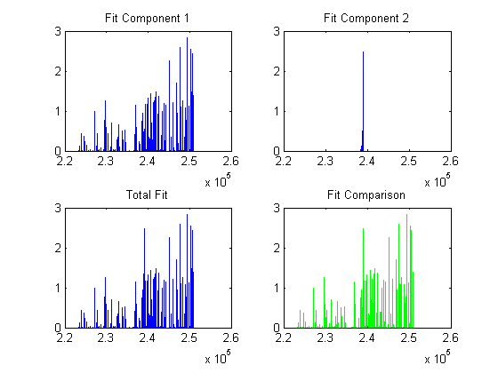

clf;
options = psoptimset('Display', 'iter','MaxIter',80000,'MaxFunEvals',80000,'UseParallel','always','CompletePoll','on','TolMesh',1e-10,'TolX',1e-10,'TolFun',1e-10,'ScaleMesh','on');
low = [1e11,1,10,-5;1e11,1,10,-5];
up = [1e18,12,600,5;1e18,12,600,5];
init = [5e16,6,250,0;5e16,6,250,0];
init2 = [5.05E15,1,470,3;6.44E14,7,463,1];
anonfun2;
figure
subplot(2,2,1),plot(DatCal(:,1),obsInt1),title('Component 1')
subplot(2,2,2),plot(DatCal(:,1),obsInt2),title('Component 2')
subplot(2,2,3),plot(DatCal(:,1),obsInt1 + obsInt2),title('Total Spectrum')
subplot(2,2,4),plot(DatCal(:,1),obsInt1,'b-')
hold on, subplot(2,2,4),plot(DatCal(:,1),obsInt2,'r-')
subplot(2,2,4),plot(DatCal(:,1),obsInt1 + obsInt2,'g-')
subplot(2,2,4), title('Total Spectrum with Compnonents')
TicID = tic;
[x,fval] = patternsearch(funct2,init,[],[],[],[],low,up,[],options);
toc(TicID);
x(1,1), x(1,2), x(1,3), x(1,4)
x(2,1), x(2,2), x(2,3), x(2,4)
fval
Fit1 = sim1(x);
Fit2 = sim2(x);
figure
subplot(2,2,1),plot(DatCal(:,1),Fit1),title('Fit Component 1')
subplot(2,2,2),plot(DatCal(:,1),Fit2),title('Fit Component 2')
subplot(2,2,3),plot(DatCal(:,1),Fit1 + Fit2),title('Total Fit')
subplot(2,2,4),plot(DatCal(:,1),Fit1 + Fit2,'r-'),title('Fit Comparison')
hold on,subplot(2,2,4),plot(DatCal(:,1),obsInt1+obsInt2,'b-')
plot(DatCal(:,1),Fit1)
hold on
plot(DatCal(:,1),Fit2,'r-')
plot(DatCal(:,1),Fit1+Fit2,'g-')
Iter f-count f(x) MeshSize Method
0 1 1212.76 1
1 17 941.063 2 Successful Poll
2 26 633.693 4 Successful Poll
3 32 619.387 8 Successful Poll
4 36 590.785 16 Successful Poll
5 40 533.626 32 Successful Poll
6 44 419.579 64 Successful Poll
7 48 194.801 128 Successful Poll
8 51 186.181 256 Successful Poll
9 53 186.181 128 Refine Mesh
10 55 186.181 64 Refine Mesh
11 57 186.181 32 Refine Mesh
12 61 72.6389 64 Successful Poll
13 63 72.6389 32 Refine Mesh
14 66 71.1527 64 Successful Poll
15 68 71.1527 32 Refine Mesh
16 70 71.1527 16 Refine Mesh
17 74 16.8675 32 Successful Poll
18 76 16.8675 16 Refine Mesh
19 79 16.395 32 Successful Poll
20 81 16.395 16 Refine Mesh
21 83 16.395 8 Refine Mesh
22 85 16.395 4 Refine Mesh
23 90 10.3491 8 Successful Poll
24 92 10.3491 4 Refine Mesh
25 96 10.2633 8 Successful Poll
26 98 10.2633 4 Refine Mesh
27 103 10.2584 8 Successful Poll
28 105 10.2584 4 Refine Mesh
29 110 10.2272 8 Successful Poll
30 113 10.2272 4 Refine Mesh
Iter f-count f(x) MeshSize Method
31 118 10.2272 2 Refine Mesh
32 125 10.2272 1 Refine Mesh
33 140 9.55337 2 Successful Poll
34 148 9.42315 4 Successful Poll
35 153 9.22407 8 Successful Poll
36 156 9.08729 16 Successful Poll
37 159 9.08729 8 Refine Mesh
38 162 9.08729 4 Refine Mesh
39 167 9.08729 2 Refine Mesh
40 175 9.08729 1 Refine Mesh
41 189 8.92842 2 Successful Poll
42 196 8.92842 1 Refine Mesh
43 211 8.92643 2 Successful Poll
44 218 8.92643 1 Refine Mesh
45 233 8.92643 0.5 Refine Mesh
46 248 8.78789 1 Successful Poll
47 262 8.76804 2 Successful Poll
48 270 8.75409 4 Successful Poll
49 275 8.75409 2 Refine Mesh
50 283 8.75409 1 Refine Mesh
51 297 8.75409 0.5 Refine Mesh
52 312 8.72274 1 Successful Poll
53 326 8.70128 2 Successful Poll
54 334 8.70128 1 Refine Mesh
55 348 8.70128 0.5 Refine Mesh
56 363 8.6846 1 Successful Poll
57 377 8.6846 0.5 Refine Mesh
58 392 8.67358 1 Successful Poll
59 405 8.67358 0.5 Refine Mesh
60 420 8.67095 1 Successful Poll
Iter f-count f(x) MeshSize Method
61 433 8.67074 2 Successful Poll
62 441 8.67074 1 Refine Mesh
63 454 8.67074 0.5 Refine Mesh
64 469 8.66967 1 Successful Poll
65 482 8.66967 0.5 Refine Mesh
66 497 8.66967 0.25 Refine Mesh
67 513 7.69924 0.5 Successful Poll
68 529 5.19337 1 Successful Poll
69 542 5.10955 2 Successful Poll
70 550 5.03365 4 Successful Poll
71 555 5.03365 2 Refine Mesh
72 563 5.03365 1 Refine Mesh
73 576 5.03365 0.5 Refine Mesh
74 591 5.03365 0.25 Refine Mesh
75 607 3.29258 0.5 Successful Poll
76 622 2.76102 1 Successful Poll
77 637 2.62919 2 Successful Poll
78 652 2.60484 4 Successful Poll
79 665 2.55798 8 Successful Poll
80 675 2.47164 16 Successful Poll
81 683 2.32848 32 Successful Poll
82 691 2.15763 64 Successful Poll
83 699 2.15763 128 Successful Poll
84 706 2.15763 256 Successful Poll
85 712 2.15763 512 Successful Poll
86 717 2.15763 1024 Successful Poll
87 721 2.15763 2048 Successful Poll
88 725 2.15763 4096 Successful Poll
89 729 2.15763 8192 Successful Poll
90 733 2.15763 1.638e+04 Successful Poll
Iter f-count f(x) MeshSize Method
91 737 2.15763 3.277e+04 Successful Poll
92 741 2.15763 6.554e+04 Successful Poll
93 745 2.15763 1.311e+05 Successful Poll
94 749 2.15763 2.621e+05 Successful Poll
95 753 2.15763 5.243e+05 Successful Poll
96 757 2.15763 1.049e+06 Successful Poll
97 761 2.15763 2.097e+06 Successful Poll
98 765 2.15763 4.194e+06 Successful Poll
99 769 2.15763 8.389e+06 Successful Poll
100 773 2.15763 1.678e+07 Successful Poll
101 777 2.15763 3.355e+07 Successful Poll
102 781 2.15763 6.711e+07 Successful Poll
103 785 2.15763 1.342e+08 Successful Poll
104 789 2.15763 2.684e+08 Successful Poll
105 793 2.15763 5.369e+08 Successful Poll
106 797 2.15763 1.074e+09 Successful Poll
107 801 2.15763 2.147e+09 Successful Poll
108 805 2.15763 4.295e+09 Successful Poll
109 809 2.15762 8.59e+09 Successful Poll
110 813 2.15761 1.718e+10 Successful Poll
111 817 2.15759 3.436e+10 Successful Poll
112 821 2.15755 6.872e+10 Successful Poll
113 825 2.15746 1.374e+11 Successful Poll
114 829 2.15729 2.749e+11 Successful Poll
115 833 2.15694 5.498e+11 Successful Poll
116 837 2.15626 1.1e+12 Successful Poll
117 841 2.15488 2.199e+12 Successful Poll
118 845 2.15214 4.398e+12 Successful Poll
119 849 2.14666 8.796e+12 Successful Poll
120 853 2.13576 1.759e+13 Successful Poll
Iter f-count f(x) MeshSize Method
121 857 2.11416 3.518e+13 Successful Poll
122 861 2.07177 7.037e+13 Successful Poll
123 865 1.99054 1.407e+14 Successful Poll
124 869 1.84439 2.815e+14 Successful Poll
125 873 1.63673 5.629e+14 Successful Poll
126 876 1.63673 2.815e+14 Refine Mesh
127 880 1.57691 5.629e+14 Successful Poll
128 883 1.57691 2.815e+14 Refine Mesh
129 887 1.57691 1.407e+14 Refine Mesh
130 891 1.57691 7.037e+13 Refine Mesh
131 895 1.57637 1.407e+14 Successful Poll
132 899 1.57637 7.037e+13 Refine Mesh
133 903 1.57637 3.518e+13 Refine Mesh
134 907 1.57532 7.037e+13 Successful Poll
135 911 1.57532 3.518e+13 Refine Mesh
136 915 1.57532 1.759e+13 Refine Mesh
137 919 1.57532 8.796e+12 Refine Mesh
138 923 1.57005 1.759e+13 Successful Poll
139 927 1.57005 8.796e+12 Refine Mesh
140 931 1.57005 4.398e+12 Refine Mesh
141 935 1.57003 8.796e+12 Successful Poll
142 939 1.57003 4.398e+12 Refine Mesh
143 943 1.57003 2.199e+12 Refine Mesh
144 947 1.57003 1.1e+12 Refine Mesh
145 951 1.56995 2.199e+12 Successful Poll
146 955 1.56995 1.1e+12 Refine Mesh
147 959 1.56995 2.199e+12 Successful Poll
148 963 1.56995 1.1e+12 Refine Mesh
149 967 1.56995 5.498e+11 Refine Mesh
150 971 1.56995 1.1e+12 Successful Poll
Iter f-count f(x) MeshSize Method
151 975 1.56995 5.498e+11 Refine Mesh
152 979 1.56995 2.749e+11 Refine Mesh
153 983 1.56995 5.498e+11 Successful Poll
154 987 1.56995 2.749e+11 Refine Mesh
155 991 1.56995 1.374e+11 Refine Mesh
156 995 1.56995 2.749e+11 Successful Poll
157 999 1.56995 1.374e+11 Refine Mesh
158 1003 1.56995 6.872e+10 Refine Mesh
159 1007 1.56995 3.436e+10 Refine Mesh
160 1011 1.56995 6.872e+10 Successful Poll
161 1015 1.56995 3.436e+10 Refine Mesh
162 1019 1.56995 1.718e+10 Refine Mesh
163 1023 1.56995 8.59e+09 Refine Mesh
164 1027 1.56995 1.718e+10 Successful Poll
165 1031 1.56995 8.59e+09 Refine Mesh
166 1035 1.56995 4.295e+09 Refine Mesh
167 1039 1.56995 2.147e+09 Refine Mesh
168 1043 1.56995 4.295e+09 Successful Poll
169 1047 1.56995 2.147e+09 Refine Mesh
170 1051 1.56995 1.074e+09 Refine Mesh
171 1055 1.56995 2.147e+09 Successful Poll
172 1059 1.56995 1.074e+09 Refine Mesh
173 1063 1.56995 2.147e+09 Successful Poll
174 1067 1.56995 1.074e+09 Refine Mesh
175 1071 1.56995 5.369e+08 Refine Mesh
176 1075 1.56995 1.074e+09 Successful Poll
177 1079 1.56995 5.369e+08 Refine Mesh
178 1083 1.56995 1.074e+09 Successful Poll
179 1087 1.56995 5.369e+08 Refine Mesh
180 1091 1.56995 2.684e+08 Refine Mesh
Iter f-count f(x) MeshSize Method
181 1095 1.56995 5.369e+08 Successful Poll
182 1099 1.56995 2.684e+08 Refine Mesh
183 1103 1.56995 5.369e+08 Successful Poll
184 1107 1.56995 2.684e+08 Refine Mesh
185 1111 1.56995 1.342e+08 Refine Mesh
186 1115 1.56995 6.711e+07 Refine Mesh
187 1119 1.56995 1.342e+08 Successful Poll
188 1123 1.56995 6.711e+07 Refine Mesh
189 1127 1.56995 3.355e+07 Refine Mesh
190 1131 1.56995 1.678e+07 Refine Mesh
191 1135 1.56995 8.389e+06 Refine Mesh
192 1139 1.56995 1.678e+07 Successful Poll
193 1143 1.56995 8.389e+06 Refine Mesh
194 1147 1.56995 1.678e+07 Successful Poll
195 1151 1.56995 8.389e+06 Refine Mesh
196 1155 1.56995 4.194e+06 Refine Mesh
197 1159 1.56995 8.389e+06 Successful Poll
198 1163 1.56995 4.194e+06 Refine Mesh
199 1167 1.56995 2.097e+06 Refine Mesh
200 1171 1.56995 1.049e+06 Refine Mesh
201 1175 1.56995 2.097e+06 Successful Poll
202 1179 1.56995 1.049e+06 Refine Mesh
203 1183 1.56995 5.243e+05 Refine Mesh
204 1187 1.56995 2.621e+05 Refine Mesh
205 1191 1.56995 1.311e+05 Refine Mesh
206 1195 1.56995 6.554e+04 Refine Mesh
207 1199 1.56995 3.277e+04 Refine Mesh
208 1203 1.56995 1.638e+04 Refine Mesh
209 1207 1.56995 8192 Refine Mesh
210 1211 1.56995 4096 Refine Mesh
Iter f-count f(x) MeshSize Method
211 1215 1.56995 8192 Successful Poll
212 1219 1.56995 4096 Refine Mesh
213 1223 1.56995 2048 Refine Mesh
214 1227 1.56995 1024 Refine Mesh
215 1231 1.56995 512 Refine Mesh
216 1236 1.56995 256 Refine Mesh
217 1242 1.56995 128 Refine Mesh
218 1249 1.56995 64 Refine Mesh
219 1257 1.49965 128 Successful Poll
220 1265 1.49965 256 Successful Poll
221 1271 1.49965 512 Successful Poll
222 1275 1.49965 1024 Successful Poll
223 1279 1.49965 2048 Successful Poll
224 1283 1.49965 4096 Successful Poll
225 1287 1.49965 8192 Successful Poll
226 1291 1.49965 1.638e+04 Successful Poll
227 1295 1.49965 3.277e+04 Successful Poll
228 1299 1.49965 6.554e+04 Successful Poll
229 1303 1.49965 1.311e+05 Successful Poll
230 1307 1.49965 2.621e+05 Successful Poll
231 1311 1.49965 5.243e+05 Successful Poll
232 1315 1.49965 1.049e+06 Successful Poll
233 1319 1.49965 2.097e+06 Successful Poll
234 1323 1.49965 4.194e+06 Successful Poll
235 1327 1.49965 8.389e+06 Successful Poll
236 1331 1.49965 1.678e+07 Successful Poll
237 1335 1.49965 3.355e+07 Successful Poll
238 1339 1.49965 6.711e+07 Successful Poll
239 1343 1.49965 1.342e+08 Successful Poll
240 1347 1.49965 2.684e+08 Successful Poll
Iter f-count f(x) MeshSize Method
241 1351 1.49965 5.369e+08 Successful Poll
242 1355 1.49965 1.074e+09 Successful Poll
243 1359 1.49965 2.147e+09 Successful Poll
244 1363 1.49964 4.295e+09 Successful Poll
245 1367 1.49964 8.59e+09 Successful Poll
246 1371 1.49963 1.718e+10 Successful Poll
247 1375 1.49962 3.436e+10 Successful Poll
248 1379 1.49958 6.872e+10 Successful Poll
249 1383 1.49952 1.374e+11 Successful Poll
250 1387 1.49939 2.749e+11 Successful Poll
251 1391 1.49913 5.498e+11 Successful Poll
252 1395 1.49862 1.1e+12 Successful Poll
253 1399 1.49759 2.199e+12 Successful Poll
254 1403 1.49555 4.398e+12 Successful Poll
255 1407 1.49148 8.796e+12 Successful Poll
256 1411 1.48348 1.759e+13 Successful Poll
257 1415 1.46795 3.518e+13 Successful Poll
258 1419 1.43889 7.037e+13 Successful Poll
259 1423 1.38932 1.407e+14 Successful Poll
260 1427 1.32851 2.815e+14 Successful Poll
261 1431 1.32851 1.407e+14 Refine Mesh
262 1435 1.32407 2.815e+14 Successful Poll
263 1439 1.32407 1.407e+14 Refine Mesh
264 1443 1.32407 7.037e+13 Refine Mesh
265 1447 1.31904 1.407e+14 Successful Poll
266 1451 1.31904 7.037e+13 Refine Mesh
267 1455 1.31904 3.518e+13 Refine Mesh
268 1459 1.31904 1.759e+13 Refine Mesh
269 1463 1.31894 3.518e+13 Successful Poll
270 1467 1.31894 1.759e+13 Refine Mesh
Iter f-count f(x) MeshSize Method
271 1471 1.31894 8.796e+12 Refine Mesh
272 1475 1.31887 1.759e+13 Successful Poll
273 1479 1.31887 8.796e+12 Refine Mesh
274 1483 1.31887 4.398e+12 Refine Mesh
275 1487 1.31887 2.199e+12 Refine Mesh
276 1491 1.31887 4.398e+12 Successful Poll
277 1495 1.31887 2.199e+12 Refine Mesh
278 1499 1.31887 1.1e+12 Refine Mesh
279 1503 1.31887 5.498e+11 Refine Mesh
280 1507 1.31887 2.749e+11 Refine Mesh
281 1511 1.31887 5.498e+11 Successful Poll
282 1515 1.31887 2.749e+11 Refine Mesh
283 1519 1.31887 1.374e+11 Refine Mesh
284 1523 1.31887 2.749e+11 Successful Poll
285 1527 1.31887 1.374e+11 Refine Mesh
286 1531 1.31887 6.872e+10 Refine Mesh
287 1535 1.31887 1.374e+11 Successful Poll
288 1539 1.31887 6.872e+10 Refine Mesh
289 1543 1.31887 3.436e+10 Refine Mesh
290 1547 1.31887 1.718e+10 Refine Mesh
291 1551 1.31887 3.436e+10 Successful Poll
292 1555 1.31887 1.718e+10 Refine Mesh
293 1559 1.31887 8.59e+09 Refine Mesh
294 1563 1.31887 1.718e+10 Successful Poll
295 1567 1.31887 8.59e+09 Refine Mesh
296 1571 1.31887 4.295e+09 Refine Mesh
297 1575 1.31887 8.59e+09 Successful Poll
298 1579 1.31887 4.295e+09 Refine Mesh
299 1583 1.31887 2.147e+09 Refine Mesh
300 1587 1.31887 4.295e+09 Successful Poll
Iter f-count f(x) MeshSize Method
301 1591 1.31887 2.147e+09 Refine Mesh
302 1595 1.31887 1.074e+09 Refine Mesh
303 1599 1.31887 2.147e+09 Successful Poll
304 1603 1.31887 1.074e+09 Refine Mesh
305 1607 1.31887 5.369e+08 Refine Mesh
306 1611 1.31887 2.684e+08 Refine Mesh
307 1615 1.31887 5.369e+08 Successful Poll
308 1619 1.31887 2.684e+08 Refine Mesh
309 1623 1.31887 5.369e+08 Successful Poll
310 1627 1.31887 2.684e+08 Refine Mesh
311 1631 1.31887 1.342e+08 Refine Mesh
312 1635 1.31887 2.684e+08 Successful Poll
313 1639 1.31887 1.342e+08 Refine Mesh
314 1643 1.31887 6.711e+07 Refine Mesh
315 1647 1.31887 1.342e+08 Successful Poll
316 1651 1.31887 6.711e+07 Refine Mesh
317 1655 1.31887 1.342e+08 Successful Poll
318 1659 1.31887 6.711e+07 Refine Mesh
319 1663 1.31887 3.355e+07 Refine Mesh
320 1667 1.31887 6.711e+07 Successful Poll
321 1671 1.31887 3.355e+07 Refine Mesh
322 1675 1.31887 1.678e+07 Refine Mesh
323 1679 1.31887 3.355e+07 Successful Poll
324 1683 1.31887 1.678e+07 Refine Mesh
325 1687 1.31887 3.355e+07 Successful Poll
326 1691 1.31887 1.678e+07 Refine Mesh
327 1695 1.31887 8.389e+06 Refine Mesh
328 1699 1.31887 4.194e+06 Refine Mesh
329 1703 1.31887 8.389e+06 Successful Poll
330 1707 1.31887 4.194e+06 Refine Mesh
Iter f-count f(x) MeshSize Method
331 1711 1.31887 2.097e+06 Refine Mesh
332 1715 1.31887 1.049e+06 Refine Mesh
333 1719 1.31887 2.097e+06 Successful Poll
334 1723 1.31887 1.049e+06 Refine Mesh
335 1727 1.31887 5.243e+05 Refine Mesh
336 1731 1.31887 1.049e+06 Successful Poll
337 1735 1.31887 5.243e+05 Refine Mesh
338 1739 1.31887 2.621e+05 Refine Mesh
339 1743 1.31887 1.311e+05 Refine Mesh
340 1747 1.31887 6.554e+04 Refine Mesh
341 1751 1.31887 3.277e+04 Refine Mesh
342 1755 1.31887 1.638e+04 Refine Mesh
343 1759 1.31887 8192 Refine Mesh
344 1763 1.31887 4096 Refine Mesh
345 1767 1.31887 2048 Refine Mesh
346 1771 1.31887 1024 Refine Mesh
347 1775 1.31887 512 Refine Mesh
348 1779 1.31887 256 Refine Mesh
349 1785 1.31887 128 Refine Mesh
350 1793 1.31887 64 Refine Mesh
351 1801 1.31887 32 Refine Mesh
352 1809 1.31887 16 Refine Mesh
353 1817 1.31887 8 Refine Mesh
354 1827 1.31057 16 Successful Poll
355 1835 1.31057 32 Successful Poll
356 1843 1.31057 64 Successful Poll
357 1851 1.31057 128 Successful Poll
358 1859 1.31057 256 Successful Poll
359 1865 1.31057 512 Successful Poll
360 1869 1.31057 1024 Successful Poll
Iter f-count f(x) MeshSize Method
361 1873 1.31057 2048 Successful Poll
362 1877 1.31057 4096 Successful Poll
363 1881 1.31057 8192 Successful Poll
364 1885 1.31057 1.638e+04 Successful Poll
365 1889 1.31057 3.277e+04 Successful Poll
366 1893 1.31057 6.554e+04 Successful Poll
367 1897 1.31057 1.311e+05 Successful Poll
368 1901 1.31057 2.621e+05 Successful Poll
369 1905 1.31057 5.243e+05 Successful Poll
370 1909 1.31057 1.049e+06 Successful Poll
371 1913 1.31057 2.097e+06 Successful Poll
372 1917 1.31057 4.194e+06 Successful Poll
373 1921 1.31057 8.389e+06 Successful Poll
374 1925 1.31057 1.678e+07 Successful Poll
375 1929 1.31057 3.355e+07 Successful Poll
376 1933 1.31057 6.711e+07 Successful Poll
377 1937 1.31057 1.342e+08 Successful Poll
378 1941 1.31057 2.684e+08 Successful Poll
379 1945 1.31057 5.369e+08 Successful Poll
380 1949 1.31057 1.074e+09 Successful Poll
381 1953 1.31057 2.147e+09 Successful Poll
382 1957 1.31056 4.295e+09 Successful Poll
383 1961 1.31056 8.59e+09 Successful Poll
384 1965 1.31054 1.718e+10 Successful Poll
385 1969 1.3105 3.436e+10 Successful Poll
386 1973 1.31042 6.872e+10 Successful Poll
387 1977 1.31027 1.374e+11 Successful Poll
388 1981 1.30997 2.749e+11 Successful Poll
389 1985 1.30938 5.498e+11 Successful Poll
390 1989 1.30824 1.1e+12 Successful Poll
Iter f-count f(x) MeshSize Method
391 1993 1.30614 2.199e+12 Successful Poll
392 1997 1.30268 4.398e+12 Successful Poll
393 2001 1.29868 8.796e+12 Successful Poll
394 2005 1.29868 4.398e+12 Refine Mesh
395 2009 1.29863 8.796e+12 Successful Poll
396 2013 1.29863 4.398e+12 Refine Mesh
397 2017 1.29863 2.199e+12 Refine Mesh
398 2021 1.29816 4.398e+12 Successful Poll
399 2025 1.29816 2.199e+12 Refine Mesh
400 2029 1.29816 1.1e+12 Refine Mesh
401 2033 1.29816 5.498e+11 Refine Mesh
402 2037 1.29816 2.749e+11 Refine Mesh
403 2041 1.29816 1.374e+11 Refine Mesh
404 2045 1.29816 6.872e+10 Refine Mesh
405 2049 1.29816 1.374e+11 Successful Poll
406 2053 1.29816 6.872e+10 Refine Mesh
407 2057 1.29816 3.436e+10 Refine Mesh
408 2061 1.29816 1.718e+10 Refine Mesh
409 2065 1.29816 8.59e+09 Refine Mesh
410 2069 1.29816 1.718e+10 Successful Poll
411 2073 1.29816 8.59e+09 Refine Mesh
412 2077 1.29816 4.295e+09 Refine Mesh
413 2081 1.29816 8.59e+09 Successful Poll
414 2085 1.29816 4.295e+09 Refine Mesh
415 2089 1.29816 2.147e+09 Refine Mesh
416 2093 1.29816 4.295e+09 Successful Poll
417 2097 1.29816 2.147e+09 Refine Mesh
418 2101 1.29816 1.074e+09 Refine Mesh
419 2105 1.29816 2.147e+09 Successful Poll
420 2109 1.29816 1.074e+09 Refine Mesh
Iter f-count f(x) MeshSize Method
421 2113 1.29816 2.147e+09 Successful Poll
422 2117 1.29816 1.074e+09 Refine Mesh
423 2121 1.29816 5.369e+08 Refine Mesh
424 2125 1.29816 1.074e+09 Successful Poll
425 2129 1.29816 5.369e+08 Refine Mesh
426 2133 1.29816 1.074e+09 Successful Poll
427 2137 1.29816 5.369e+08 Refine Mesh
428 2141 1.29816 2.684e+08 Refine Mesh
429 2145 1.29816 5.369e+08 Successful Poll
430 2149 1.29816 2.684e+08 Refine Mesh
431 2153 1.29816 5.369e+08 Successful Poll
432 2157 1.29816 2.684e+08 Refine Mesh
433 2161 1.29816 1.342e+08 Refine Mesh
434 2165 1.29816 2.684e+08 Successful Poll
435 2169 1.29816 1.342e+08 Refine Mesh
436 2173 1.29816 6.711e+07 Refine Mesh
437 2177 1.29816 1.342e+08 Successful Poll
438 2181 1.29816 6.711e+07 Refine Mesh
439 2185 1.29816 3.355e+07 Refine Mesh
440 2189 1.29816 6.711e+07 Successful Poll
441 2193 1.29816 3.355e+07 Refine Mesh
442 2197 1.29816 6.711e+07 Successful Poll
443 2201 1.29816 3.355e+07 Refine Mesh
444 2205 1.29816 1.678e+07 Refine Mesh
445 2209 1.29816 3.355e+07 Successful Poll
446 2213 1.29816 1.678e+07 Refine Mesh
447 2217 1.29816 3.355e+07 Successful Poll
448 2221 1.29816 1.678e+07 Refine Mesh
449 2225 1.29816 8.389e+06 Refine Mesh
450 2229 1.29816 4.194e+06 Refine Mesh
Iter f-count f(x) MeshSize Method
451 2233 1.29816 8.389e+06 Successful Poll
452 2237 1.29816 4.194e+06 Refine Mesh
453 2241 1.29816 2.097e+06 Refine Mesh
454 2245 1.29816 1.049e+06 Refine Mesh
455 2249 1.29816 5.243e+05 Refine Mesh
456 2253 1.29816 2.621e+05 Refine Mesh
457 2257 1.29816 5.243e+05 Successful Poll
458 2261 1.29816 2.621e+05 Refine Mesh
459 2265 1.29816 1.311e+05 Refine Mesh
460 2269 1.29816 6.554e+04 Refine Mesh
461 2273 1.29816 3.277e+04 Refine Mesh
462 2277 1.29816 6.554e+04 Successful Poll
463 2281 1.29816 3.277e+04 Refine Mesh
464 2285 1.29816 1.638e+04 Refine Mesh
465 2289 1.29816 8192 Refine Mesh
466 2293 1.29816 4096 Refine Mesh
467 2297 1.29816 2048 Refine Mesh
468 2301 1.29816 1024 Refine Mesh
469 2305 1.29816 512 Refine Mesh
470 2309 1.29816 256 Refine Mesh
471 2315 1.29816 128 Refine Mesh
472 2323 1.29816 64 Refine Mesh
473 2331 1.29816 32 Refine Mesh
474 2339 1.29816 16 Refine Mesh
475 2347 1.29816 8 Refine Mesh
476 2357 1.29168 16 Successful Poll
477 2365 1.29168 32 Successful Poll
478 2373 1.29168 64 Successful Poll
479 2381 1.29168 128 Successful Poll
480 2389 1.29168 256 Successful Poll
Iter f-count f(x) MeshSize Method
481 2395 1.29168 512 Successful Poll
482 2399 1.29168 1024 Successful Poll
483 2403 1.29168 2048 Successful Poll
484 2407 1.29168 4096 Successful Poll
485 2411 1.29168 8192 Successful Poll
486 2415 1.29168 1.638e+04 Successful Poll
487 2419 1.29168 3.277e+04 Successful Poll
488 2423 1.29168 6.554e+04 Successful Poll
489 2427 1.29168 1.311e+05 Successful Poll
490 2431 1.29168 2.621e+05 Successful Poll
491 2435 1.29168 5.243e+05 Successful Poll
492 2439 1.29168 1.049e+06 Successful Poll
493 2443 1.29168 2.097e+06 Successful Poll
494 2447 1.29168 4.194e+06 Successful Poll
495 2451 1.29168 8.389e+06 Successful Poll
496 2455 1.29168 1.678e+07 Successful Poll
497 2459 1.29168 3.355e+07 Successful Poll
498 2463 1.29168 6.711e+07 Successful Poll
499 2467 1.29167 1.342e+08 Successful Poll
500 2471 1.29167 2.684e+08 Successful Poll
501 2475 1.29167 5.369e+08 Successful Poll
502 2479 1.29167 1.074e+09 Successful Poll
503 2483 1.29167 2.147e+09 Successful Poll
504 2487 1.29167 4.295e+09 Successful Poll
505 2491 1.29166 8.59e+09 Successful Poll
506 2495 1.29164 1.718e+10 Successful Poll
507 2499 1.2916 3.436e+10 Successful Poll
508 2503 1.29153 6.872e+10 Successful Poll
509 2507 1.29138 1.374e+11 Successful Poll
510 2511 1.29108 2.749e+11 Successful Poll
Iter f-count f(x) MeshSize Method
511 2515 1.29051 5.498e+11 Successful Poll
512 2519 1.28939 1.1e+12 Successful Poll
513 2523 1.28735 2.199e+12 Successful Poll
514 2527 1.28395 4.398e+12 Successful Poll
515 2531 1.28002 8.796e+12 Successful Poll
516 2535 1.28002 4.398e+12 Refine Mesh
517 2539 1.2799 8.796e+12 Successful Poll
518 2543 1.2799 4.398e+12 Refine Mesh
519 2547 1.2799 2.199e+12 Refine Mesh
520 2551 1.27948 4.398e+12 Successful Poll
521 2555 1.27948 2.199e+12 Refine Mesh
522 2559 1.27948 1.1e+12 Refine Mesh
523 2563 1.27948 5.498e+11 Refine Mesh
524 2567 1.27948 2.749e+11 Refine Mesh
525 2571 1.27948 1.374e+11 Refine Mesh
526 2575 1.27948 2.749e+11 Successful Poll
527 2579 1.27948 1.374e+11 Refine Mesh
528 2583 1.27948 6.872e+10 Refine Mesh
529 2587 1.27948 3.436e+10 Refine Mesh
530 2591 1.27948 1.718e+10 Refine Mesh
531 2595 1.27948 8.59e+09 Refine Mesh
532 2599 1.27948 4.295e+09 Refine Mesh
533 2603 1.27948 8.59e+09 Successful Poll
534 2607 1.27948 4.295e+09 Refine Mesh
535 2611 1.27948 2.147e+09 Refine Mesh
536 2615 1.27948 4.295e+09 Successful Poll
537 2619 1.27948 2.147e+09 Refine Mesh
538 2623 1.27948 1.074e+09 Refine Mesh
539 2627 1.27948 2.147e+09 Successful Poll
540 2631 1.27948 1.074e+09 Refine Mesh
Iter f-count f(x) MeshSize Method
541 2635 1.27948 5.369e+08 Refine Mesh
542 2639 1.27948 1.074e+09 Successful Poll
543 2643 1.27948 5.369e+08 Refine Mesh
544 2647 1.27948 1.074e+09 Successful Poll
545 2651 1.27948 5.369e+08 Refine Mesh
546 2655 1.27948 2.684e+08 Refine Mesh
547 2659 1.27948 5.369e+08 Successful Poll
548 2663 1.27948 2.684e+08 Refine Mesh
549 2667 1.27948 5.369e+08 Successful Poll
550 2671 1.27948 2.684e+08 Refine Mesh
551 2675 1.27948 1.342e+08 Refine Mesh
552 2679 1.27948 2.684e+08 Successful Poll
553 2683 1.27948 1.342e+08 Refine Mesh
554 2687 1.27948 2.684e+08 Successful Poll
555 2691 1.27948 1.342e+08 Refine Mesh
556 2695 1.27948 6.711e+07 Refine Mesh
557 2699 1.27948 1.342e+08 Successful Poll
558 2703 1.27948 6.711e+07 Refine Mesh
559 2707 1.27948 3.355e+07 Refine Mesh
560 2711 1.27948 6.711e+07 Successful Poll
561 2715 1.27948 3.355e+07 Refine Mesh
562 2719 1.27948 6.711e+07 Successful Poll
563 2723 1.27948 3.355e+07 Refine Mesh
564 2727 1.27948 1.678e+07 Refine Mesh
565 2731 1.27948 3.355e+07 Successful Poll
566 2735 1.27948 1.678e+07 Refine Mesh
567 2739 1.27948 8.389e+06 Refine Mesh
568 2743 1.27948 1.678e+07 Successful Poll
569 2747 1.27948 8.389e+06 Refine Mesh
570 2751 1.27948 4.194e+06 Refine Mesh
Iter f-count f(x) MeshSize Method
571 2755 1.27948 2.097e+06 Refine Mesh
572 2759 1.27948 4.194e+06 Successful Poll
573 2763 1.27948 2.097e+06 Refine Mesh
574 2767 1.27948 1.049e+06 Refine Mesh
575 2771 1.27948 5.243e+05 Refine Mesh
576 2775 1.27948 1.049e+06 Successful Poll
577 2779 1.27948 5.243e+05 Refine Mesh
578 2783 1.27948 2.621e+05 Refine Mesh
579 2787 1.27948 1.311e+05 Refine Mesh
580 2791 1.27948 6.554e+04 Refine Mesh
581 2795 1.27948 3.277e+04 Refine Mesh
582 2799 1.27948 1.638e+04 Refine Mesh
583 2803 1.27948 8192 Refine Mesh
584 2807 1.27948 4096 Refine Mesh
585 2811 1.27948 2048 Refine Mesh
586 2815 1.27948 1024 Refine Mesh
587 2819 1.27948 512 Refine Mesh
588 2823 1.27948 256 Refine Mesh
589 2829 1.27948 128 Refine Mesh
590 2837 1.27948 64 Refine Mesh
591 2845 1.27948 32 Refine Mesh
592 2853 1.27948 16 Refine Mesh
593 2861 1.27948 8 Refine Mesh
594 2871 1.27471 16 Successful Poll
595 2879 1.27471 32 Successful Poll
596 2887 1.27471 64 Successful Poll
597 2895 1.27471 128 Successful Poll
598 2903 1.27471 256 Successful Poll
599 2909 1.27471 512 Successful Poll
600 2913 1.27471 1024 Successful Poll
Iter f-count f(x) MeshSize Method
601 2917 1.27471 2048 Successful Poll
602 2921 1.27471 4096 Successful Poll
603 2925 1.27471 8192 Successful Poll
604 2929 1.27471 1.638e+04 Successful Poll
605 2933 1.27471 3.277e+04 Successful Poll
606 2937 1.27471 6.554e+04 Successful Poll
607 2941 1.27471 1.311e+05 Successful Poll
608 2945 1.27471 2.621e+05 Successful Poll
609 2949 1.27471 5.243e+05 Successful Poll
610 2953 1.27471 1.049e+06 Successful Poll
611 2957 1.27471 2.097e+06 Successful Poll
612 2961 1.27471 4.194e+06 Successful Poll
613 2965 1.27471 8.389e+06 Successful Poll
614 2969 1.27471 1.678e+07 Successful Poll
615 2973 1.27471 3.355e+07 Successful Poll
616 2977 1.27471 6.711e+07 Successful Poll
617 2981 1.27471 1.342e+08 Successful Poll
618 2985 1.27471 2.684e+08 Successful Poll
619 2989 1.27471 5.369e+08 Successful Poll
620 2993 1.2747 1.074e+09 Successful Poll
621 2997 1.2747 2.147e+09 Successful Poll
622 3001 1.2747 4.295e+09 Successful Poll
623 3005 1.27469 8.59e+09 Successful Poll
624 3009 1.27467 1.718e+10 Successful Poll
625 3013 1.27463 3.436e+10 Successful Poll
626 3017 1.27456 6.872e+10 Successful Poll
627 3021 1.27442 1.374e+11 Successful Poll
628 3025 1.27413 2.749e+11 Successful Poll
629 3029 1.27357 5.498e+11 Successful Poll
630 3033 1.27248 1.1e+12 Successful Poll
Iter f-count f(x) MeshSize Method
631 3037 1.27048 2.199e+12 Successful Poll
632 3041 1.26716 4.398e+12 Successful Poll
633 3045 1.26329 8.796e+12 Successful Poll
634 3049 1.26329 4.398e+12 Refine Mesh
635 3053 1.26312 8.796e+12 Successful Poll
636 3057 1.26312 4.398e+12 Refine Mesh
637 3061 1.26312 2.199e+12 Refine Mesh
638 3065 1.26274 4.398e+12 Successful Poll
639 3069 1.26274 2.199e+12 Refine Mesh
640 3073 1.26274 1.1e+12 Refine Mesh
641 3077 1.26274 5.498e+11 Refine Mesh
642 3081 1.26274 2.749e+11 Refine Mesh
643 3085 1.26274 5.498e+11 Successful Poll
644 3089 1.26274 2.749e+11 Refine Mesh
645 3093 1.26274 1.374e+11 Refine Mesh
646 3097 1.26274 2.749e+11 Successful Poll
647 3101 1.26274 1.374e+11 Refine Mesh
648 3105 1.26274 6.872e+10 Refine Mesh
649 3109 1.26273 1.374e+11 Successful Poll
650 3113 1.26273 6.872e+10 Refine Mesh
651 3117 1.26273 3.436e+10 Refine Mesh
652 3121 1.26273 1.718e+10 Refine Mesh
653 3125 1.26273 8.59e+09 Refine Mesh
654 3129 1.26273 4.295e+09 Refine Mesh
655 3133 1.26273 2.147e+09 Refine Mesh
656 3137 1.26273 1.074e+09 Refine Mesh
657 3141 1.26273 2.147e+09 Successful Poll
658 3145 1.26273 1.074e+09 Refine Mesh
659 3149 1.26273 5.369e+08 Refine Mesh
660 3153 1.26273 1.074e+09 Successful Poll
Iter f-count f(x) MeshSize Method
661 3157 1.26273 5.369e+08 Refine Mesh
662 3161 1.26273 2.684e+08 Refine Mesh
663 3165 1.26273 5.369e+08 Successful Poll
664 3169 1.26273 2.684e+08 Refine Mesh
665 3173 1.26273 5.369e+08 Successful Poll
666 3177 1.26273 2.684e+08 Refine Mesh
667 3181 1.26273 1.342e+08 Refine Mesh
668 3185 1.26273 2.684e+08 Successful Poll
669 3189 1.26273 1.342e+08 Refine Mesh
670 3193 1.26273 6.711e+07 Refine Mesh
671 3197 1.26273 3.355e+07 Refine Mesh
672 3201 1.26273 6.711e+07 Successful Poll
673 3205 1.26273 3.355e+07 Refine Mesh
674 3209 1.26273 6.711e+07 Successful Poll
675 3213 1.26273 3.355e+07 Refine Mesh
676 3217 1.26273 1.678e+07 Refine Mesh
677 3221 1.26273 3.355e+07 Successful Poll
678 3225 1.26273 1.678e+07 Refine Mesh
679 3229 1.26273 8.389e+06 Refine Mesh
680 3233 1.26273 4.194e+06 Refine Mesh
681 3237 1.26273 8.389e+06 Successful Poll
682 3241 1.26273 4.194e+06 Refine Mesh
683 3245 1.26273 2.097e+06 Refine Mesh
684 3249 1.26273 4.194e+06 Successful Poll
685 3253 1.26273 2.097e+06 Refine Mesh
686 3257 1.26273 4.194e+06 Successful Poll
687 3261 1.26273 2.097e+06 Refine Mesh
688 3265 1.26273 1.049e+06 Refine Mesh
689 3269 1.26273 5.243e+05 Refine Mesh
690 3273 1.26273 2.621e+05 Refine Mesh
Iter f-count f(x) MeshSize Method
691 3277 1.26273 1.311e+05 Refine Mesh
692 3281 1.26273 6.554e+04 Refine Mesh
693 3285 1.26273 3.277e+04 Refine Mesh
694 3289 1.26273 1.638e+04 Refine Mesh
695 3293 1.26273 8192 Refine Mesh
696 3297 1.26273 4096 Refine Mesh
697 3301 1.26273 2048 Refine Mesh
698 3305 1.26273 1024 Refine Mesh
699 3309 1.26273 512 Refine Mesh
700 3313 1.26273 256 Refine Mesh
701 3319 1.26273 128 Refine Mesh
702 3327 1.26273 64 Refine Mesh
703 3335 1.26273 32 Refine Mesh
704 3343 1.26273 16 Refine Mesh
705 3351 1.26273 8 Refine Mesh
706 3361 1.25958 16 Successful Poll
707 3369 1.25958 32 Successful Poll
708 3377 1.25958 64 Successful Poll
709 3385 1.25958 128 Successful Poll
710 3393 1.25958 256 Successful Poll
711 3399 1.25958 512 Successful Poll
712 3403 1.25958 1024 Successful Poll
713 3407 1.25958 2048 Successful Poll
714 3411 1.25958 4096 Successful Poll
715 3415 1.25958 8192 Successful Poll
716 3419 1.25958 1.638e+04 Successful Poll
717 3423 1.25958 3.277e+04 Successful Poll
718 3427 1.25958 6.554e+04 Successful Poll
719 3431 1.25958 1.311e+05 Successful Poll
720 3435 1.25958 2.621e+05 Successful Poll
Iter f-count f(x) MeshSize Method
721 3439 1.25958 5.243e+05 Successful Poll
722 3443 1.25958 1.049e+06 Successful Poll
723 3447 1.25958 2.097e+06 Successful Poll
724 3451 1.25958 4.194e+06 Successful Poll
725 3455 1.25958 8.389e+06 Successful Poll
726 3459 1.25958 1.678e+07 Successful Poll
727 3463 1.25958 3.355e+07 Successful Poll
728 3467 1.25958 6.711e+07 Successful Poll
729 3471 1.25958 1.342e+08 Successful Poll
730 3475 1.25958 2.684e+08 Successful Poll
731 3479 1.25958 5.369e+08 Successful Poll
732 3483 1.25958 1.074e+09 Successful Poll
733 3487 1.25958 2.147e+09 Successful Poll
734 3491 1.25957 4.295e+09 Successful Poll
735 3495 1.25956 8.59e+09 Successful Poll
736 3499 1.25955 1.718e+10 Successful Poll
737 3503 1.25951 3.436e+10 Successful Poll
738 3507 1.25944 6.872e+10 Successful Poll
739 3511 1.2593 1.374e+11 Successful Poll
740 3515 1.25902 2.749e+11 Successful Poll
741 3519 1.25847 5.498e+11 Successful Poll
742 3523 1.25741 1.1e+12 Successful Poll
743 3527 1.25546 2.199e+12 Successful Poll
744 3531 1.25222 4.398e+12 Successful Poll
745 3535 1.24841 8.796e+12 Successful Poll
746 3539 1.24841 4.398e+12 Refine Mesh
747 3543 1.24818 8.796e+12 Successful Poll
748 3547 1.24818 4.398e+12 Refine Mesh
749 3551 1.24818 2.199e+12 Refine Mesh
750 3555 1.24785 4.398e+12 Successful Poll
Iter f-count f(x) MeshSize Method
751 3559 1.24785 2.199e+12 Refine Mesh
752 3563 1.24785 1.1e+12 Refine Mesh
753 3567 1.24785 5.498e+11 Refine Mesh
754 3571 1.24785 1.1e+12 Successful Poll
755 3575 1.24785 5.498e+11 Refine Mesh
756 3579 1.24785 2.749e+11 Refine Mesh
757 3583 1.24784 5.498e+11 Successful Poll
758 3587 1.24784 2.749e+11 Refine Mesh
759 3591 1.24784 1.374e+11 Refine Mesh
760 3595 1.24784 6.872e+10 Refine Mesh
761 3599 1.24784 3.436e+10 Refine Mesh
762 3603 1.24784 1.718e+10 Refine Mesh
763 3607 1.24784 8.59e+09 Refine Mesh
764 3611 1.24784 4.295e+09 Refine Mesh
765 3615 1.24784 2.147e+09 Refine Mesh
766 3619 1.24784 4.295e+09 Successful Poll
767 3623 1.24784 2.147e+09 Refine Mesh
768 3627 1.24784 1.074e+09 Refine Mesh
769 3631 1.24784 2.147e+09 Successful Poll
770 3635 1.24784 1.074e+09 Refine Mesh
771 3639 1.24784 2.147e+09 Successful Poll
772 3643 1.24784 1.074e+09 Refine Mesh
773 3647 1.24784 5.369e+08 Refine Mesh
774 3651 1.24784 1.074e+09 Successful Poll
775 3655 1.24784 5.369e+08 Refine Mesh
776 3659 1.24784 2.684e+08 Refine Mesh
777 3663 1.24784 5.369e+08 Successful Poll
778 3667 1.24784 2.684e+08 Refine Mesh
779 3671 1.24784 1.342e+08 Refine Mesh
780 3675 1.24784 2.684e+08 Successful Poll
Iter f-count f(x) MeshSize Method
781 3679 1.24784 1.342e+08 Refine Mesh
782 3683 1.24784 2.684e+08 Successful Poll
783 3687 1.24784 1.342e+08 Refine Mesh
784 3691 1.24784 6.711e+07 Refine Mesh
785 3695 1.24784 1.342e+08 Successful Poll
786 3699 1.24784 6.711e+07 Refine Mesh
787 3703 1.24784 3.355e+07 Refine Mesh
788 3707 1.24784 1.678e+07 Refine Mesh
789 3711 1.24784 3.355e+07 Successful Poll
790 3715 1.24784 1.678e+07 Refine Mesh
791 3719 1.24784 8.389e+06 Refine Mesh
792 3723 1.24784 4.194e+06 Refine Mesh
793 3727 1.24784 8.389e+06 Successful Poll
794 3731 1.24784 4.194e+06 Refine Mesh
795 3735 1.24784 8.389e+06 Successful Poll
796 3739 1.24784 4.194e+06 Refine Mesh
797 3743 1.24784 2.097e+06 Refine Mesh
798 3747 1.24784 1.049e+06 Refine Mesh
799 3751 1.24784 5.243e+05 Refine Mesh
800 3755 1.24784 2.621e+05 Refine Mesh
801 3759 1.24784 1.311e+05 Refine Mesh
802 3763 1.24784 6.554e+04 Refine Mesh
803 3767 1.24784 3.277e+04 Refine Mesh
804 3771 1.24784 1.638e+04 Refine Mesh
805 3775 1.24784 3.277e+04 Successful Poll
806 3779 1.24784 1.638e+04 Refine Mesh
807 3783 1.24784 8192 Refine Mesh
808 3787 1.24784 4096 Refine Mesh
809 3791 1.24784 2048 Refine Mesh
810 3795 1.24784 1024 Refine Mesh
Iter f-count f(x) MeshSize Method
811 3799 1.24784 512 Refine Mesh
812 3803 1.24784 256 Refine Mesh
813 3809 1.24784 128 Refine Mesh
814 3817 1.24784 64 Refine Mesh
815 3825 1.24784 32 Refine Mesh
816 3833 1.24784 16 Refine Mesh
817 3841 1.24784 8 Refine Mesh
818 3851 1.24621 16 Successful Poll
819 3859 1.24621 32 Successful Poll
820 3867 1.24621 64 Successful Poll
821 3875 1.24621 128 Successful Poll
822 3883 1.24621 256 Successful Poll
823 3889 1.24621 512 Successful Poll
824 3893 1.24621 1024 Successful Poll
825 3897 1.24621 2048 Successful Poll
826 3901 1.24621 4096 Successful Poll
827 3905 1.24621 8192 Successful Poll
828 3909 1.24621 1.638e+04 Successful Poll
829 3913 1.24621 3.277e+04 Successful Poll
830 3917 1.24621 6.554e+04 Successful Poll
831 3921 1.24621 1.311e+05 Successful Poll
832 3925 1.24621 2.621e+05 Successful Poll
833 3929 1.24621 5.243e+05 Successful Poll
834 3933 1.24621 1.049e+06 Successful Poll
835 3937 1.24621 2.097e+06 Successful Poll
836 3941 1.24621 4.194e+06 Successful Poll
837 3945 1.24621 8.389e+06 Successful Poll
838 3949 1.24621 1.678e+07 Successful Poll
839 3953 1.24621 3.355e+07 Successful Poll
840 3957 1.24621 6.711e+07 Successful Poll
Iter f-count f(x) MeshSize Method
841 3961 1.24621 1.342e+08 Successful Poll
842 3965 1.24621 2.684e+08 Successful Poll
843 3969 1.24621 5.369e+08 Successful Poll
844 3973 1.24621 1.074e+09 Successful Poll
845 3977 1.24621 2.147e+09 Successful Poll
846 3981 1.2462 4.295e+09 Successful Poll
847 3985 1.2462 8.59e+09 Successful Poll
848 3989 1.24618 1.718e+10 Successful Poll
849 3993 1.24614 3.436e+10 Successful Poll
850 3997 1.24607 6.872e+10 Successful Poll
851 4001 1.24594 1.374e+11 Successful Poll
852 4005 1.24566 2.749e+11 Successful Poll
853 4009 1.24513 5.498e+11 Successful Poll
854 4013 1.2441 1.1e+12 Successful Poll
855 4017 1.2422 2.199e+12 Successful Poll
856 4021 1.23903 4.398e+12 Successful Poll
857 4025 1.23529 8.796e+12 Successful Poll
858 4029 1.23529 4.398e+12 Refine Mesh
859 4033 1.23502 8.796e+12 Successful Poll
860 4037 1.23502 4.398e+12 Refine Mesh
861 4041 1.23502 2.199e+12 Refine Mesh
862 4045 1.23472 4.398e+12 Successful Poll
863 4049 1.23472 2.199e+12 Refine Mesh
864 4053 1.23472 1.1e+12 Refine Mesh
865 4057 1.23472 5.498e+11 Refine Mesh
866 4061 1.23471 1.1e+12 Successful Poll
867 4065 1.23471 5.498e+11 Refine Mesh
868 4069 1.23471 2.749e+11 Refine Mesh
869 4073 1.23471 5.498e+11 Successful Poll
870 4077 1.23471 2.749e+11 Refine Mesh
Iter f-count f(x) MeshSize Method
871 4081 1.23471 1.374e+11 Refine Mesh
872 4085 1.23471 2.749e+11 Successful Poll
873 4089 1.23471 1.374e+11 Refine Mesh
874 4093 1.23471 6.872e+10 Refine Mesh
875 4097 1.23471 1.374e+11 Successful Poll
876 4101 1.23471 6.872e+10 Refine Mesh
877 4105 1.23471 3.436e+10 Refine Mesh
878 4109 1.23471 1.718e+10 Refine Mesh
879 4113 1.23471 8.59e+09 Refine Mesh
880 4117 1.23471 4.295e+09 Refine Mesh
881 4121 1.23471 2.147e+09 Refine Mesh
882 4125 1.23471 4.295e+09 Successful Poll
883 4129 1.23471 2.147e+09 Refine Mesh
884 4133 1.23471 1.074e+09 Refine Mesh
885 4137 1.23471 2.147e+09 Successful Poll
886 4141 1.23471 1.074e+09 Refine Mesh
887 4145 1.23471 5.369e+08 Refine Mesh
888 4149 1.23471 1.074e+09 Successful Poll
889 4153 1.23471 5.369e+08 Refine Mesh
890 4157 1.23471 1.074e+09 Successful Poll
891 4161 1.23471 5.369e+08 Refine Mesh
892 4165 1.23471 2.684e+08 Refine Mesh
893 4169 1.23471 1.342e+08 Refine Mesh
894 4173 1.23471 2.684e+08 Successful Poll
895 4177 1.23471 1.342e+08 Refine Mesh
896 4181 1.23471 2.684e+08 Successful Poll
897 4185 1.23471 1.342e+08 Refine Mesh
898 4189 1.23471 6.711e+07 Refine Mesh
899 4193 1.23471 1.342e+08 Successful Poll
900 4197 1.23471 6.711e+07 Refine Mesh
Iter f-count f(x) MeshSize Method
901 4201 1.23471 3.355e+07 Refine Mesh
902 4205 1.23471 6.711e+07 Successful Poll
903 4209 1.23471 3.355e+07 Refine Mesh
904 4213 1.23471 1.678e+07 Refine Mesh
905 4217 1.23471 8.389e+06 Refine Mesh
906 4221 1.23471 4.194e+06 Refine Mesh
907 4225 1.23471 8.389e+06 Successful Poll
908 4229 1.23471 4.194e+06 Refine Mesh
909 4233 1.23471 2.097e+06 Refine Mesh
910 4237 1.23471 4.194e+06 Successful Poll
911 4241 1.23471 2.097e+06 Refine Mesh
912 4245 1.23471 1.049e+06 Refine Mesh
913 4249 1.23471 5.243e+05 Refine Mesh
914 4253 1.23471 2.621e+05 Refine Mesh
915 4257 1.23471 1.311e+05 Refine Mesh
916 4261 1.23471 6.554e+04 Refine Mesh
917 4265 1.23471 3.277e+04 Refine Mesh
918 4269 1.23471 1.638e+04 Refine Mesh
919 4273 1.23471 8192 Refine Mesh
920 4277 1.23471 4096 Refine Mesh
921 4281 1.23471 2048 Refine Mesh
922 4285 1.23471 1024 Refine Mesh
923 4289 1.23471 512 Refine Mesh
924 4293 1.23471 256 Refine Mesh
925 4299 1.23471 128 Refine Mesh
926 4307 1.23471 64 Refine Mesh
927 4315 1.23471 32 Refine Mesh
928 4323 1.23471 16 Refine Mesh
929 4331 1.23471 8 Refine Mesh
930 4341 1.23451 16 Successful Poll
Iter f-count f(x) MeshSize Method
931 4349 1.23451 32 Successful Poll
932 4357 1.23451 64 Successful Poll
933 4365 1.23451 128 Successful Poll
934 4373 1.23451 256 Successful Poll
935 4379 1.23451 512 Successful Poll
936 4383 1.23451 1024 Successful Poll
937 4387 1.23451 2048 Successful Poll
938 4391 1.23451 4096 Successful Poll
939 4395 1.23451 8192 Successful Poll
940 4399 1.23451 1.638e+04 Successful Poll
941 4403 1.23451 3.277e+04 Successful Poll
942 4407 1.23451 6.554e+04 Successful Poll
943 4411 1.23451 1.311e+05 Successful Poll
944 4415 1.23451 2.621e+05 Successful Poll
945 4419 1.23451 5.243e+05 Successful Poll
946 4423 1.23451 1.049e+06 Successful Poll
947 4427 1.23451 2.097e+06 Successful Poll
948 4431 1.23451 4.194e+06 Successful Poll
949 4435 1.23451 8.389e+06 Successful Poll
950 4439 1.23451 1.678e+07 Successful Poll
951 4443 1.23451 3.355e+07 Successful Poll
952 4447 1.23451 6.711e+07 Successful Poll
953 4451 1.23451 1.342e+08 Successful Poll
954 4455 1.23451 2.684e+08 Successful Poll
955 4459 1.23451 5.369e+08 Successful Poll
956 4463 1.23451 1.074e+09 Successful Poll
957 4467 1.23451 2.147e+09 Successful Poll
958 4471 1.23451 4.295e+09 Successful Poll
959 4475 1.2345 8.59e+09 Successful Poll
960 4479 1.23448 1.718e+10 Successful Poll
Iter f-count f(x) MeshSize Method
961 4483 1.23445 3.436e+10 Successful Poll
962 4487 1.23438 6.872e+10 Successful Poll
963 4491 1.23425 1.374e+11 Successful Poll
964 4495 1.23398 2.749e+11 Successful Poll
965 4499 1.23346 5.498e+11 Successful Poll
966 4503 1.23245 1.1e+12 Successful Poll
967 4507 1.2306 2.199e+12 Successful Poll
968 4511 1.22752 4.398e+12 Successful Poll
969 4515 1.22384 8.796e+12 Successful Poll
970 4519 1.22384 4.398e+12 Refine Mesh
971 4523 1.22353 8.796e+12 Successful Poll
972 4527 1.22353 4.398e+12 Refine Mesh
973 4531 1.22353 2.199e+12 Refine Mesh
974 4535 1.22326 4.398e+12 Successful Poll
975 4539 1.22326 2.199e+12 Refine Mesh
976 4543 1.22326 1.1e+12 Refine Mesh
977 4547 1.22326 5.498e+11 Refine Mesh
978 4551 1.22325 1.1e+12 Successful Poll
979 4555 1.22325 5.498e+11 Refine Mesh
980 4559 1.22325 2.749e+11 Refine Mesh
981 4563 1.22325 1.374e+11 Refine Mesh
982 4567 1.22325 2.749e+11 Successful Poll
983 4571 1.22325 1.374e+11 Refine Mesh
984 4575 1.22325 6.872e+10 Refine Mesh
985 4579 1.22325 3.436e+10 Refine Mesh
986 4583 1.22325 1.718e+10 Refine Mesh
987 4587 1.22325 8.59e+09 Refine Mesh
988 4591 1.22325 4.295e+09 Refine Mesh
989 4595 1.22325 2.147e+09 Refine Mesh
990 4599 1.22325 4.295e+09 Successful Poll
Iter f-count f(x) MeshSize Method
991 4603 1.22325 2.147e+09 Refine Mesh
992 4607 1.22325 1.074e+09 Refine Mesh
993 4611 1.22325 2.147e+09 Successful Poll
994 4615 1.22325 1.074e+09 Refine Mesh
995 4619 1.22325 2.147e+09 Successful Poll
996 4623 1.22325 1.074e+09 Refine Mesh
997 4627 1.22325 5.369e+08 Refine Mesh
998 4631 1.22325 1.074e+09 Successful Poll
999 4635 1.22325 5.369e+08 Refine Mesh
1000 4639 1.22325 1.074e+09 Successful Poll
1001 4643 1.22325 5.369e+08 Refine Mesh
1002 4647 1.22325 2.684e+08 Refine Mesh
1003 4651 1.22325 1.342e+08 Refine Mesh
1004 4655 1.22325 2.684e+08 Successful Poll
1005 4659 1.22325 1.342e+08 Refine Mesh
1006 4663 1.22325 2.684e+08 Successful Poll
1007 4667 1.22325 1.342e+08 Refine Mesh
1008 4671 1.22325 6.711e+07 Refine Mesh
1009 4675 1.22325 1.342e+08 Successful Poll
1010 4679 1.22325 6.711e+07 Refine Mesh
1011 4683 1.22325 3.355e+07 Refine Mesh
1012 4687 1.22325 6.711e+07 Successful Poll
1013 4691 1.22325 3.355e+07 Refine Mesh
1014 4695 1.22325 6.711e+07 Successful Poll
1015 4699 1.22325 3.355e+07 Refine Mesh
1016 4703 1.22325 1.678e+07 Refine Mesh
1017 4707 1.22325 3.355e+07 Successful Poll
1018 4711 1.22325 1.678e+07 Refine Mesh
1019 4715 1.22325 8.389e+06 Refine Mesh
1020 4719 1.22325 1.678e+07 Successful Poll
Iter f-count f(x) MeshSize Method
1021 4723 1.22325 8.389e+06 Refine Mesh
1022 4727 1.22325 4.194e+06 Refine Mesh
1023 4731 1.22325 8.389e+06 Successful Poll
1024 4735 1.22325 4.194e+06 Refine Mesh
1025 4739 1.22325 2.097e+06 Refine Mesh
1026 4743 1.22325 1.049e+06 Refine Mesh
1027 4747 1.22325 2.097e+06 Successful Poll
1028 4751 1.22325 1.049e+06 Refine Mesh
1029 4755 1.22325 5.243e+05 Refine Mesh
1030 4759 1.22325 1.049e+06 Successful Poll
1031 4763 1.22325 5.243e+05 Refine Mesh
1032 4767 1.22325 2.621e+05 Refine Mesh
1033 4771 1.22325 1.311e+05 Refine Mesh
1034 4775 1.22325 6.554e+04 Refine Mesh
1035 4779 1.22325 3.277e+04 Refine Mesh
1036 4783 1.22325 1.638e+04 Refine Mesh
1037 4787 1.22325 8192 Refine Mesh
1038 4791 1.22325 4096 Refine Mesh
1039 4795 1.22325 2048 Refine Mesh
1040 4799 1.22325 1024 Refine Mesh
1041 4803 1.22325 512 Refine Mesh
1042 4807 1.22325 256 Refine Mesh
1043 4813 1.22325 128 Refine Mesh
1044 4821 1.22325 64 Refine Mesh
1045 4829 1.22325 32 Refine Mesh
1046 4837 1.22325 16 Refine Mesh
1047 4845 1.22325 8 Refine Mesh
1048 4855 1.22325 4 Refine Mesh
1049 4868 1.22092 8 Successful Poll
1050 4878 1.22092 16 Successful Poll
Iter f-count f(x) MeshSize Method
1051 4886 1.22092 32 Successful Poll
1052 4894 1.22092 64 Successful Poll
1053 4902 1.22092 128 Successful Poll
1054 4910 1.22092 256 Successful Poll
1055 4916 1.22092 512 Successful Poll
1056 4920 1.22092 1024 Successful Poll
1057 4924 1.22092 2048 Successful Poll
1058 4928 1.22092 4096 Successful Poll
1059 4932 1.22092 8192 Successful Poll
1060 4936 1.22092 1.638e+04 Successful Poll
1061 4940 1.22092 3.277e+04 Successful Poll
1062 4944 1.22092 6.554e+04 Successful Poll
1063 4948 1.22092 1.311e+05 Successful Poll
1064 4952 1.22092 2.621e+05 Successful Poll
1065 4956 1.22092 5.243e+05 Successful Poll
1066 4960 1.22092 1.049e+06 Successful Poll
1067 4964 1.22092 2.097e+06 Successful Poll
1068 4968 1.22092 4.194e+06 Successful Poll
1069 4972 1.22092 8.389e+06 Successful Poll
1070 4976 1.22092 1.678e+07 Successful Poll
1071 4980 1.22092 3.355e+07 Successful Poll
1072 4984 1.22092 6.711e+07 Successful Poll
1073 4988 1.22092 1.342e+08 Successful Poll
1074 4992 1.22092 2.684e+08 Successful Poll
1075 4996 1.22092 5.369e+08 Successful Poll
1076 5000 1.22092 1.074e+09 Successful Poll
1077 5004 1.22092 2.147e+09 Successful Poll
1078 5008 1.22092 4.295e+09 Successful Poll
1079 5012 1.22092 8.59e+09 Successful Poll
1080 5016 1.22091 1.718e+10 Successful Poll
Iter f-count f(x) MeshSize Method
1081 5020 1.22089 3.436e+10 Successful Poll
1082 5024 1.22086 6.872e+10 Successful Poll
1083 5028 1.22079 1.374e+11 Successful Poll
1084 5032 1.22066 2.749e+11 Successful Poll
1085 5036 1.22041 5.498e+11 Successful Poll
1086 5040 1.21995 1.1e+12 Successful Poll
1087 5044 1.21919 2.199e+12 Successful Poll
1088 5048 1.21827 4.398e+12 Successful Poll
1089 5052 1.21827 2.199e+12 Refine Mesh
1090 5056 1.21819 4.398e+12 Successful Poll
1091 5060 1.21819 2.199e+12 Refine Mesh
1092 5064 1.21819 1.1e+12 Refine Mesh
1093 5068 1.21813 2.199e+12 Successful Poll
1094 5072 1.21813 1.1e+12 Refine Mesh
1095 5076 1.21813 5.498e+11 Refine Mesh
1096 5080 1.21813 2.749e+11 Refine Mesh
1097 5084 1.21812 5.498e+11 Successful Poll
1098 5088 1.21812 2.749e+11 Refine Mesh
1099 5092 1.21812 1.374e+11 Refine Mesh
1100 5096 1.21812 6.872e+10 Refine Mesh
1101 5100 1.21812 1.374e+11 Successful Poll
1102 5104 1.21812 6.872e+10 Refine Mesh
1103 5108 1.21812 3.436e+10 Refine Mesh
1104 5112 1.21812 6.872e+10 Successful Poll
1105 5116 1.21812 3.436e+10 Refine Mesh
1106 5120 1.21812 1.718e+10 Refine Mesh
1107 5124 1.21812 8.59e+09 Refine Mesh
1108 5128 1.21812 1.718e+10 Successful Poll
1109 5132 1.21812 8.59e+09 Refine Mesh
1110 5136 1.21812 4.295e+09 Refine Mesh
Iter f-count f(x) MeshSize Method
1111 5140 1.21812 2.147e+09 Refine Mesh
1112 5144 1.21812 1.074e+09 Refine Mesh
1113 5148 1.21812 5.369e+08 Refine Mesh
1114 5152 1.21812 1.074e+09 Successful Poll
1115 5156 1.21812 5.369e+08 Refine Mesh
1116 5160 1.21812 1.074e+09 Successful Poll
1117 5164 1.21812 5.369e+08 Refine Mesh
1118 5168 1.21812 2.684e+08 Refine Mesh
1119 5172 1.21812 5.369e+08 Successful Poll
1120 5176 1.21812 2.684e+08 Refine Mesh
1121 5180 1.21812 1.342e+08 Refine Mesh
1122 5184 1.21812 2.684e+08 Successful Poll
1123 5188 1.21812 1.342e+08 Refine Mesh
1124 5192 1.21812 6.711e+07 Refine Mesh
1125 5196 1.21812 1.342e+08 Successful Poll
1126 5200 1.21812 6.711e+07 Refine Mesh
1127 5204 1.21812 1.342e+08 Successful Poll
1128 5208 1.21812 6.711e+07 Refine Mesh
1129 5212 1.21812 3.355e+07 Refine Mesh
1130 5216 1.21812 6.711e+07 Successful Poll
1131 5220 1.21812 3.355e+07 Refine Mesh
1132 5224 1.21812 1.678e+07 Refine Mesh
1133 5228 1.21812 3.355e+07 Successful Poll
1134 5232 1.21812 1.678e+07 Refine Mesh
1135 5236 1.21812 8.389e+06 Refine Mesh
1136 5240 1.21812 4.194e+06 Refine Mesh
1137 5244 1.21812 8.389e+06 Successful Poll
1138 5248 1.21812 4.194e+06 Refine Mesh
1139 5252 1.21812 2.097e+06 Refine Mesh
1140 5256 1.21812 1.049e+06 Refine Mesh
Iter f-count f(x) MeshSize Method
1141 5260 1.21812 5.243e+05 Refine Mesh
1142 5264 1.21812 1.049e+06 Successful Poll
1143 5268 1.21812 5.243e+05 Refine Mesh
1144 5272 1.21812 2.621e+05 Refine Mesh
1145 5276 1.21812 5.243e+05 Successful Poll
1146 5280 1.21812 2.621e+05 Refine Mesh
1147 5284 1.21812 1.311e+05 Refine Mesh
1148 5288 1.21812 6.554e+04 Refine Mesh
1149 5292 1.21812 3.277e+04 Refine Mesh
1150 5296 1.21812 1.638e+04 Refine Mesh
1151 5300 1.21812 8192 Refine Mesh
1152 5304 1.21812 1.638e+04 Successful Poll
1153 5308 1.21812 8192 Refine Mesh
1154 5312 1.21812 4096 Refine Mesh
1155 5316 1.21812 2048 Refine Mesh
1156 5320 1.21812 1024 Refine Mesh
1157 5324 1.21812 512 Refine Mesh
1158 5328 1.21812 256 Refine Mesh
1159 5334 1.21812 128 Refine Mesh
1160 5342 1.21812 64 Refine Mesh
1161 5350 1.21812 32 Refine Mesh
1162 5358 1.21812 16 Refine Mesh
1163 5366 1.21812 8 Refine Mesh
1164 5376 1.21812 4 Refine Mesh
1165 5389 1.21615 8 Successful Poll
1166 5399 1.21615 16 Successful Poll
1167 5407 1.21615 32 Successful Poll
1168 5415 1.21615 64 Successful Poll
1169 5423 1.21615 128 Successful Poll
1170 5431 1.21615 256 Successful Poll
Iter f-count f(x) MeshSize Method
1171 5437 1.21615 512 Successful Poll
1172 5441 1.21615 1024 Successful Poll
1173 5445 1.21615 2048 Successful Poll
1174 5449 1.21615 4096 Successful Poll
1175 5453 1.21615 8192 Successful Poll
1176 5457 1.21615 1.638e+04 Successful Poll
1177 5461 1.21615 3.277e+04 Successful Poll
1178 5465 1.21615 6.554e+04 Successful Poll
1179 5469 1.21615 1.311e+05 Successful Poll
1180 5473 1.21615 2.621e+05 Successful Poll
1181 5477 1.21615 5.243e+05 Successful Poll
1182 5481 1.21615 1.049e+06 Successful Poll
1183 5485 1.21615 2.097e+06 Successful Poll
1184 5489 1.21615 4.194e+06 Successful Poll
1185 5493 1.21615 8.389e+06 Successful Poll
1186 5497 1.21615 1.678e+07 Successful Poll
1187 5501 1.21615 3.355e+07 Successful Poll
1188 5505 1.21615 6.711e+07 Successful Poll
1189 5509 1.21615 1.342e+08 Successful Poll
1190 5513 1.21615 2.684e+08 Successful Poll
1191 5517 1.21615 5.369e+08 Successful Poll
1192 5521 1.21615 1.074e+09 Successful Poll
1193 5525 1.21615 2.147e+09 Successful Poll
1194 5529 1.21615 4.295e+09 Successful Poll
1195 5533 1.21614 8.59e+09 Successful Poll
1196 5537 1.21613 1.718e+10 Successful Poll
1197 5541 1.21612 3.436e+10 Successful Poll
1198 5545 1.21608 6.872e+10 Successful Poll
1199 5549 1.21602 1.374e+11 Successful Poll
1200 5553 1.21589 2.749e+11 Successful Poll
Iter f-count f(x) MeshSize Method
1201 5557 1.21565 5.498e+11 Successful Poll
1202 5561 1.21519 1.1e+12 Successful Poll
1203 5565 1.21444 2.199e+12 Successful Poll
1204 5569 1.21353 4.398e+12 Successful Poll
1205 5573 1.21353 2.199e+12 Refine Mesh
1206 5577 1.21344 4.398e+12 Successful Poll
1207 5581 1.21344 2.199e+12 Refine Mesh
1208 5585 1.21344 1.1e+12 Refine Mesh
1209 5589 1.21338 2.199e+12 Successful Poll
1210 5593 1.21338 1.1e+12 Refine Mesh
1211 5597 1.21338 5.498e+11 Refine Mesh
1212 5601 1.21338 2.749e+11 Refine Mesh
1213 5605 1.21338 5.498e+11 Successful Poll
1214 5609 1.21338 2.749e+11 Refine Mesh
1215 5613 1.21338 1.374e+11 Refine Mesh
1216 5617 1.21338 6.872e+10 Refine Mesh
1217 5621 1.21338 3.436e+10 Refine Mesh
1218 5625 1.21338 6.872e+10 Successful Poll
1219 5629 1.21338 3.436e+10 Refine Mesh
1220 5633 1.21338 1.718e+10 Refine Mesh
1221 5637 1.21338 3.436e+10 Successful Poll
1222 5641 1.21338 1.718e+10 Refine Mesh
1223 5645 1.21338 8.59e+09 Refine Mesh
1224 5649 1.21338 1.718e+10 Successful Poll
1225 5653 1.21338 8.59e+09 Refine Mesh
1226 5657 1.21338 4.295e+09 Refine Mesh
1227 5661 1.21338 2.147e+09 Refine Mesh
1228 5665 1.21338 1.074e+09 Refine Mesh
1229 5669 1.21338 5.369e+08 Refine Mesh
1230 5673 1.21338 1.074e+09 Successful Poll
Iter f-count f(x) MeshSize Method
1231 5677 1.21338 5.369e+08 Refine Mesh
1232 5681 1.21338 2.684e+08 Refine Mesh
1233 5685 1.21338 5.369e+08 Successful Poll
1234 5689 1.21338 2.684e+08 Refine Mesh
1235 5693 1.21338 5.369e+08 Successful Poll
1236 5697 1.21338 2.684e+08 Refine Mesh
1237 5701 1.21338 1.342e+08 Refine Mesh
1238 5705 1.21338 2.684e+08 Successful Poll
1239 5709 1.21338 1.342e+08 Refine Mesh
1240 5713 1.21338 6.711e+07 Refine Mesh
1241 5717 1.21338 1.342e+08 Successful Poll
1242 5721 1.21338 6.711e+07 Refine Mesh
1243 5725 1.21338 3.355e+07 Refine Mesh
1244 5729 1.21338 1.678e+07 Refine Mesh
1245 5733 1.21338 3.355e+07 Successful Poll
1246 5737 1.21338 1.678e+07 Refine Mesh
1247 5741 1.21338 8.389e+06 Refine Mesh
1248 5745 1.21338 1.678e+07 Successful Poll
1249 5749 1.21338 8.389e+06 Refine Mesh
1250 5753 1.21338 4.194e+06 Refine Mesh
1251 5757 1.21338 2.097e+06 Refine Mesh
1252 5761 1.21338 1.049e+06 Refine Mesh
1253 5765 1.21338 5.243e+05 Refine Mesh
1254 5769 1.21338 2.621e+05 Refine Mesh
1255 5773 1.21338 1.311e+05 Refine Mesh
1256 5777 1.21338 6.554e+04 Refine Mesh
1257 5781 1.21338 3.277e+04 Refine Mesh
1258 5785 1.21338 1.638e+04 Refine Mesh
1259 5789 1.21338 8192 Refine Mesh
1260 5793 1.21338 1.638e+04 Successful Poll
Iter f-count f(x) MeshSize Method
1261 5797 1.21338 8192 Refine Mesh
1262 5801 1.21338 4096 Refine Mesh
1263 5805 1.21338 2048 Refine Mesh
1264 5809 1.21338 1024 Refine Mesh
1265 5813 1.21338 512 Refine Mesh
1266 5817 1.21338 256 Refine Mesh
1267 5823 1.21338 128 Refine Mesh
1268 5831 1.21338 64 Refine Mesh
1269 5839 1.21338 32 Refine Mesh
1270 5847 1.21338 16 Refine Mesh
1271 5855 1.21338 8 Refine Mesh
1272 5865 1.21338 4 Refine Mesh
1273 5878 1.21175 8 Successful Poll
1274 5888 1.21175 16 Successful Poll
1275 5896 1.21175 32 Successful Poll
1276 5904 1.21175 64 Successful Poll
1277 5912 1.21175 128 Successful Poll
1278 5920 1.21175 256 Successful Poll
1279 5926 1.21175 512 Successful Poll
1280 5930 1.21175 1024 Successful Poll
1281 5934 1.21175 2048 Successful Poll
1282 5938 1.21175 4096 Successful Poll
1283 5942 1.21175 8192 Successful Poll
1284 5946 1.21175 1.638e+04 Successful Poll
1285 5950 1.21175 3.277e+04 Successful Poll
1286 5954 1.21175 6.554e+04 Successful Poll
1287 5958 1.21175 1.311e+05 Successful Poll
1288 5962 1.21175 2.621e+05 Successful Poll
1289 5966 1.21175 5.243e+05 Successful Poll
1290 5970 1.21175 1.049e+06 Successful Poll
Iter f-count f(x) MeshSize Method
1291 5974 1.21175 2.097e+06 Successful Poll
1292 5978 1.21175 4.194e+06 Successful Poll
1293 5982 1.21175 8.389e+06 Successful Poll
1294 5986 1.21175 1.678e+07 Successful Poll
1295 5990 1.21175 3.355e+07 Successful Poll
1296 5994 1.21175 6.711e+07 Successful Poll
1297 5998 1.21175 1.342e+08 Successful Poll
1298 6002 1.21175 2.684e+08 Successful Poll
1299 6006 1.21175 5.369e+08 Successful Poll
1300 6010 1.21175 1.074e+09 Successful Poll
1301 6014 1.21175 2.147e+09 Successful Poll
1302 6018 1.21175 4.295e+09 Successful Poll
1303 6022 1.21174 8.59e+09 Successful Poll
1304 6026 1.21174 1.718e+10 Successful Poll
1305 6030 1.21172 3.436e+10 Successful Poll
1306 6034 1.21169 6.872e+10 Successful Poll
1307 6038 1.21162 1.374e+11 Successful Poll
1308 6042 1.2115 2.749e+11 Successful Poll
1309 6046 1.21126 5.498e+11 Successful Poll
1310 6050 1.21081 1.1e+12 Successful Poll
1311 6054 1.21006 2.199e+12 Successful Poll
1312 6058 1.20917 4.398e+12 Successful Poll
1313 6062 1.20917 2.199e+12 Refine Mesh
1314 6066 1.20907 4.398e+12 Successful Poll
1315 6070 1.20907 2.199e+12 Refine Mesh
1316 6074 1.20907 1.1e+12 Refine Mesh
1317 6078 1.20902 2.199e+12 Successful Poll
1318 6082 1.20902 1.1e+12 Refine Mesh
1319 6086 1.20902 5.498e+11 Refine Mesh
1320 6090 1.20902 2.749e+11 Refine Mesh
Iter f-count f(x) MeshSize Method
1321 6094 1.20901 5.498e+11 Successful Poll
1322 6098 1.20901 2.749e+11 Refine Mesh
1323 6102 1.20901 1.374e+11 Refine Mesh
1324 6106 1.20901 6.872e+10 Refine Mesh
1325 6110 1.20901 3.436e+10 Refine Mesh
1326 6114 1.20901 1.718e+10 Refine Mesh
1327 6118 1.20901 3.436e+10 Successful Poll
1328 6122 1.20901 1.718e+10 Refine Mesh
1329 6126 1.20901 8.59e+09 Refine Mesh
1330 6130 1.20901 1.718e+10 Successful Poll
1331 6134 1.20901 8.59e+09 Refine Mesh
1332 6138 1.20901 4.295e+09 Refine Mesh
1333 6142 1.20901 2.147e+09 Refine Mesh
1334 6146 1.20901 1.074e+09 Refine Mesh
1335 6150 1.20901 5.369e+08 Refine Mesh
1336 6154 1.20901 1.074e+09 Successful Poll
1337 6158 1.20901 5.369e+08 Refine Mesh
1338 6162 1.20901 2.684e+08 Refine Mesh
1339 6166 1.20901 5.369e+08 Successful Poll
1340 6170 1.20901 2.684e+08 Refine Mesh
1341 6174 1.20901 5.369e+08 Successful Poll
1342 6178 1.20901 2.684e+08 Refine Mesh
1343 6182 1.20901 1.342e+08 Refine Mesh
1344 6186 1.20901 6.711e+07 Refine Mesh
1345 6190 1.20901 1.342e+08 Successful Poll
1346 6194 1.20901 6.711e+07 Refine Mesh
1347 6198 1.20901 3.355e+07 Refine Mesh
1348 6202 1.20901 6.711e+07 Successful Poll
1349 6206 1.20901 3.355e+07 Refine Mesh
1350 6210 1.20901 1.678e+07 Refine Mesh
Iter f-count f(x) MeshSize Method
1351 6214 1.20901 3.355e+07 Successful Poll
1352 6218 1.20901 1.678e+07 Refine Mesh
1353 6222 1.20901 8.389e+06 Refine Mesh
1354 6226 1.20901 1.678e+07 Successful Poll
1355 6230 1.20901 8.389e+06 Refine Mesh
1356 6234 1.20901 1.678e+07 Successful Poll
1357 6238 1.20901 8.389e+06 Refine Mesh
1358 6242 1.20901 4.194e+06 Refine Mesh
1359 6246 1.20901 8.389e+06 Successful Poll
1360 6250 1.20901 4.194e+06 Refine Mesh
1361 6254 1.20901 2.097e+06 Refine Mesh
1362 6258 1.20901 1.049e+06 Refine Mesh
1363 6262 1.20901 5.243e+05 Refine Mesh
1364 6266 1.20901 2.621e+05 Refine Mesh
1365 6270 1.20901 1.311e+05 Refine Mesh
1366 6274 1.20901 6.554e+04 Refine Mesh
1367 6278 1.20901 3.277e+04 Refine Mesh
1368 6282 1.20901 1.638e+04 Refine Mesh
1369 6286 1.20901 8192 Refine Mesh
1370 6290 1.20901 4096 Refine Mesh
1371 6294 1.20901 2048 Refine Mesh
1372 6298 1.20901 1024 Refine Mesh
1373 6302 1.20901 512 Refine Mesh
1374 6306 1.20901 256 Refine Mesh
1375 6312 1.20901 128 Refine Mesh
1376 6320 1.20901 64 Refine Mesh
1377 6328 1.20901 32 Refine Mesh
1378 6336 1.20901 16 Refine Mesh
1379 6344 1.20901 8 Refine Mesh
1380 6354 1.20901 4 Refine Mesh
Iter f-count f(x) MeshSize Method
1381 6367 1.20772 8 Successful Poll
1382 6377 1.20772 16 Successful Poll
1383 6385 1.20772 32 Successful Poll
1384 6393 1.20772 64 Successful Poll
1385 6401 1.20772 128 Successful Poll
1386 6409 1.20772 256 Successful Poll
1387 6415 1.20772 512 Successful Poll
1388 6419 1.20772 1024 Successful Poll
1389 6423 1.20772 2048 Successful Poll
1390 6427 1.20772 4096 Successful Poll
1391 6431 1.20772 8192 Successful Poll
1392 6435 1.20772 1.638e+04 Successful Poll
1393 6439 1.20772 3.277e+04 Successful Poll
1394 6443 1.20772 6.554e+04 Successful Poll
1395 6447 1.20772 1.311e+05 Successful Poll
1396 6451 1.20772 2.621e+05 Successful Poll
1397 6455 1.20772 5.243e+05 Successful Poll
1398 6459 1.20772 1.049e+06 Successful Poll
1399 6463 1.20772 2.097e+06 Successful Poll
1400 6467 1.20772 4.194e+06 Successful Poll
1401 6471 1.20772 8.389e+06 Successful Poll
1402 6475 1.20772 1.678e+07 Successful Poll
1403 6479 1.20772 3.355e+07 Successful Poll
1404 6483 1.20772 6.711e+07 Successful Poll
1405 6487 1.20772 1.342e+08 Successful Poll
1406 6491 1.20772 2.684e+08 Successful Poll
1407 6495 1.20772 5.369e+08 Successful Poll
1408 6499 1.20772 1.074e+09 Successful Poll
1409 6503 1.20772 2.147e+09 Successful Poll
1410 6507 1.20772 4.295e+09 Successful Poll
Iter f-count f(x) MeshSize Method
1411 6511 1.20771 8.59e+09 Successful Poll
1412 6515 1.2077 1.718e+10 Successful Poll
1413 6519 1.20769 3.436e+10 Successful Poll
1414 6523 1.20766 6.872e+10 Successful Poll
1415 6527 1.20759 1.374e+11 Successful Poll
1416 6531 1.20747 2.749e+11 Successful Poll
1417 6535 1.20723 5.498e+11 Successful Poll
1418 6539 1.20679 1.1e+12 Successful Poll
1419 6543 1.20605 2.199e+12 Successful Poll
1420 6547 1.20516 4.398e+12 Successful Poll
1421 6551 1.20516 2.199e+12 Refine Mesh
1422 6555 1.20506 4.398e+12 Successful Poll
1423 6559 1.20506 2.199e+12 Refine Mesh
1424 6563 1.20506 1.1e+12 Refine Mesh
1425 6567 1.20502 2.199e+12 Successful Poll
1426 6571 1.20502 1.1e+12 Refine Mesh
1427 6575 1.20502 5.498e+11 Refine Mesh
1428 6579 1.20502 1.1e+12 Successful Poll
1429 6583 1.20502 5.498e+11 Refine Mesh
1430 6587 1.20502 2.749e+11 Refine Mesh
1431 6591 1.20501 5.498e+11 Successful Poll
1432 6595 1.20501 2.749e+11 Refine Mesh
1433 6599 1.20501 1.374e+11 Refine Mesh
1434 6603 1.20501 6.872e+10 Refine Mesh
1435 6607 1.20501 3.436e+10 Refine Mesh
1436 6611 1.20501 1.718e+10 Refine Mesh
1437 6615 1.20501 8.59e+09 Refine Mesh
1438 6619 1.20501 1.718e+10 Successful Poll
1439 6623 1.20501 8.59e+09 Refine Mesh
1440 6627 1.20501 4.295e+09 Refine Mesh
Iter f-count f(x) MeshSize Method
1441 6631 1.20501 2.147e+09 Refine Mesh
1442 6635 1.20501 1.074e+09 Refine Mesh
1443 6639 1.20501 2.147e+09 Successful Poll
1444 6643 1.20501 1.074e+09 Refine Mesh
1445 6647 1.20501 5.369e+08 Refine Mesh
1446 6651 1.20501 1.074e+09 Successful Poll
1447 6655 1.20501 5.369e+08 Refine Mesh
1448 6659 1.20501 1.074e+09 Successful Poll
1449 6663 1.20501 5.369e+08 Refine Mesh
1450 6667 1.20501 2.684e+08 Refine Mesh
1451 6671 1.20501 5.369e+08 Successful Poll
1452 6675 1.20501 2.684e+08 Refine Mesh
1453 6679 1.20501 5.369e+08 Successful Poll
1454 6683 1.20501 2.684e+08 Refine Mesh
1455 6687 1.20501 1.342e+08 Refine Mesh
1456 6691 1.20501 2.684e+08 Successful Poll
1457 6695 1.20501 1.342e+08 Refine Mesh
1458 6699 1.20501 6.711e+07 Refine Mesh
1459 6703 1.20501 1.342e+08 Successful Poll
1460 6707 1.20501 6.711e+07 Refine Mesh
1461 6711 1.20501 1.342e+08 Successful Poll
1462 6715 1.20501 6.711e+07 Refine Mesh
1463 6719 1.20501 3.355e+07 Refine Mesh
1464 6723 1.20501 6.711e+07 Successful Poll
1465 6727 1.20501 3.355e+07 Refine Mesh
1466 6731 1.20501 1.678e+07 Refine Mesh
1467 6735 1.20501 8.389e+06 Refine Mesh
1468 6739 1.20501 4.194e+06 Refine Mesh
1469 6743 1.20501 8.389e+06 Successful Poll
1470 6747 1.20501 4.194e+06 Refine Mesh
Iter f-count f(x) MeshSize Method
1471 6751 1.20501 2.097e+06 Refine Mesh
1472 6755 1.20501 4.194e+06 Successful Poll
1473 6759 1.20501 2.097e+06 Refine Mesh
1474 6763 1.20501 1.049e+06 Refine Mesh
1475 6767 1.20501 5.243e+05 Refine Mesh
1476 6771 1.20501 2.621e+05 Refine Mesh
1477 6775 1.20501 1.311e+05 Refine Mesh
1478 6779 1.20501 6.554e+04 Refine Mesh
1479 6783 1.20501 3.277e+04 Refine Mesh
1480 6787 1.20501 1.638e+04 Refine Mesh
1481 6791 1.20501 8192 Refine Mesh
1482 6795 1.20501 4096 Refine Mesh
1483 6799 1.20501 2048 Refine Mesh
1484 6803 1.20501 1024 Refine Mesh
1485 6807 1.20501 512 Refine Mesh
1486 6811 1.20501 1024 Successful Poll
1487 6815 1.20501 512 Refine Mesh
1488 6819 1.20501 256 Refine Mesh
1489 6825 1.20501 128 Refine Mesh
1490 6833 1.20501 64 Refine Mesh
1491 6841 1.20501 32 Refine Mesh
1492 6849 1.20501 16 Refine Mesh
1493 6857 1.20501 8 Refine Mesh
1494 6867 1.20501 4 Refine Mesh
1495 6880 1.20404 8 Successful Poll
1496 6890 1.20404 16 Successful Poll
1497 6898 1.20404 32 Successful Poll
1498 6906 1.20404 64 Successful Poll
1499 6914 1.20404 128 Successful Poll
1500 6922 1.20404 256 Successful Poll
Iter f-count f(x) MeshSize Method
1501 6928 1.20404 512 Successful Poll
1502 6932 1.20404 1024 Successful Poll
1503 6936 1.20404 2048 Successful Poll
1504 6940 1.20404 4096 Successful Poll
1505 6944 1.20404 8192 Successful Poll
1506 6948 1.20404 1.638e+04 Successful Poll
1507 6952 1.20404 3.277e+04 Successful Poll
1508 6956 1.20404 6.554e+04 Successful Poll
1509 6960 1.20404 1.311e+05 Successful Poll
1510 6964 1.20404 2.621e+05 Successful Poll
1511 6968 1.20404 5.243e+05 Successful Poll
1512 6972 1.20404 1.049e+06 Successful Poll
1513 6976 1.20404 2.097e+06 Successful Poll
1514 6980 1.20404 4.194e+06 Successful Poll
1515 6984 1.20404 8.389e+06 Successful Poll
1516 6988 1.20404 1.678e+07 Successful Poll
1517 6992 1.20404 3.355e+07 Successful Poll
1518 6996 1.20404 6.711e+07 Successful Poll
1519 7000 1.20404 1.342e+08 Successful Poll
1520 7004 1.20404 2.684e+08 Successful Poll
1521 7008 1.20404 5.369e+08 Successful Poll
1522 7012 1.20404 1.074e+09 Successful Poll
1523 7016 1.20404 2.147e+09 Successful Poll
1524 7020 1.20404 4.295e+09 Successful Poll
1525 7024 1.20403 8.59e+09 Successful Poll
1526 7028 1.20402 1.718e+10 Successful Poll
1527 7032 1.20401 3.436e+10 Successful Poll
1528 7036 1.20398 6.872e+10 Successful Poll
1529 7040 1.20391 1.374e+11 Successful Poll
1530 7044 1.20379 2.749e+11 Successful Poll
Iter f-count f(x) MeshSize Method
1531 7048 1.20356 5.498e+11 Successful Poll
1532 7052 1.20312 1.1e+12 Successful Poll
1533 7056 1.20239 2.199e+12 Successful Poll
1534 7060 1.20152 4.398e+12 Successful Poll
1535 7064 1.20152 2.199e+12 Refine Mesh
1536 7068 1.20141 4.398e+12 Successful Poll
1537 7072 1.20141 2.199e+12 Refine Mesh
1538 7076 1.20141 1.1e+12 Refine Mesh
1539 7080 1.20137 2.199e+12 Successful Poll
1540 7084 1.20137 1.1e+12 Refine Mesh
1541 7088 1.20137 5.498e+11 Refine Mesh
1542 7092 1.20137 1.1e+12 Successful Poll
1543 7096 1.20137 5.498e+11 Refine Mesh
1544 7100 1.20137 2.749e+11 Refine Mesh
1545 7104 1.20136 5.498e+11 Successful Poll
1546 7108 1.20136 2.749e+11 Refine Mesh
1547 7112 1.20136 1.374e+11 Refine Mesh
1548 7116 1.20136 6.872e+10 Refine Mesh
1549 7120 1.20136 3.436e+10 Refine Mesh
1550 7124 1.20136 6.872e+10 Successful Poll
1551 7128 1.20136 3.436e+10 Refine Mesh
1552 7132 1.20136 1.718e+10 Refine Mesh
1553 7136 1.20136 3.436e+10 Successful Poll
1554 7140 1.20136 1.718e+10 Refine Mesh
1555 7144 1.20136 8.59e+09 Refine Mesh
1556 7148 1.20136 1.718e+10 Successful Poll
1557 7152 1.20136 8.59e+09 Refine Mesh
1558 7156 1.20136 4.295e+09 Refine Mesh
1559 7160 1.20136 2.147e+09 Refine Mesh
1560 7164 1.20136 4.295e+09 Successful Poll
Iter f-count f(x) MeshSize Method
1561 7168 1.20136 2.147e+09 Refine Mesh
1562 7172 1.20136 1.074e+09 Refine Mesh
1563 7176 1.20136 2.147e+09 Successful Poll
1564 7180 1.20136 1.074e+09 Refine Mesh
1565 7184 1.20136 5.369e+08 Refine Mesh
1566 7188 1.20136 1.074e+09 Successful Poll
1567 7192 1.20136 5.369e+08 Refine Mesh
1568 7196 1.20136 2.684e+08 Refine Mesh
1569 7200 1.20136 5.369e+08 Successful Poll
1570 7204 1.20136 2.684e+08 Refine Mesh
1571 7208 1.20136 5.369e+08 Successful Poll
1572 7212 1.20136 2.684e+08 Refine Mesh
1573 7216 1.20136 1.342e+08 Refine Mesh
1574 7220 1.20136 6.711e+07 Refine Mesh
1575 7224 1.20136 1.342e+08 Successful Poll
1576 7228 1.20136 6.711e+07 Refine Mesh
1577 7232 1.20136 1.342e+08 Successful Poll
1578 7236 1.20136 6.711e+07 Refine Mesh
1579 7240 1.20136 3.355e+07 Refine Mesh
1580 7244 1.20136 6.711e+07 Successful Poll
1581 7248 1.20136 3.355e+07 Refine Mesh
1582 7252 1.20136 1.678e+07 Refine Mesh
1583 7256 1.20136 3.355e+07 Successful Poll
1584 7260 1.20136 1.678e+07 Refine Mesh
1585 7264 1.20136 3.355e+07 Successful Poll
1586 7268 1.20136 1.678e+07 Refine Mesh
1587 7272 1.20136 8.389e+06 Refine Mesh
1588 7276 1.20136 1.678e+07 Successful Poll
1589 7280 1.20136 8.389e+06 Refine Mesh
1590 7284 1.20136 4.194e+06 Refine Mesh
Iter f-count f(x) MeshSize Method
1591 7288 1.20136 8.389e+06 Successful Poll
1592 7292 1.20136 4.194e+06 Refine Mesh
1593 7296 1.20136 2.097e+06 Refine Mesh
1594 7300 1.20136 4.194e+06 Successful Poll
1595 7304 1.20136 2.097e+06 Refine Mesh
1596 7308 1.20136 1.049e+06 Refine Mesh
1597 7312 1.20136 5.243e+05 Refine Mesh
1598 7316 1.20136 2.621e+05 Refine Mesh
1599 7320 1.20136 1.311e+05 Refine Mesh
1600 7324 1.20136 2.621e+05 Successful Poll
1601 7328 1.20136 1.311e+05 Refine Mesh
1602 7332 1.20136 6.554e+04 Refine Mesh
1603 7336 1.20136 3.277e+04 Refine Mesh
1604 7340 1.20136 1.638e+04 Refine Mesh
1605 7344 1.20136 8192 Refine Mesh
1606 7348 1.20136 4096 Refine Mesh
1607 7352 1.20136 2048 Refine Mesh
1608 7356 1.20136 1024 Refine Mesh
1609 7360 1.20136 512 Refine Mesh
1610 7364 1.20136 256 Refine Mesh
1611 7370 1.20136 128 Refine Mesh
1612 7378 1.20136 64 Refine Mesh
1613 7386 1.20136 32 Refine Mesh
1614 7394 1.20136 16 Refine Mesh
1615 7402 1.20136 8 Refine Mesh
1616 7412 1.20136 4 Refine Mesh
1617 7425 1.20071 8 Successful Poll
1618 7435 1.20071 16 Successful Poll
1619 7443 1.20071 32 Successful Poll
1620 7451 1.20071 64 Successful Poll
Iter f-count f(x) MeshSize Method
1621 7459 1.20071 128 Successful Poll
1622 7467 1.20071 256 Successful Poll
1623 7473 1.20071 512 Successful Poll
1624 7477 1.20071 1024 Successful Poll
1625 7481 1.20071 2048 Successful Poll
1626 7485 1.20071 4096 Successful Poll
1627 7489 1.20071 8192 Successful Poll
1628 7493 1.20071 1.638e+04 Successful Poll
1629 7497 1.20071 3.277e+04 Successful Poll
1630 7501 1.20071 6.554e+04 Successful Poll
1631 7505 1.20071 1.311e+05 Successful Poll
1632 7509 1.20071 2.621e+05 Successful Poll
1633 7513 1.20071 5.243e+05 Successful Poll
1634 7517 1.20071 1.049e+06 Successful Poll
1635 7521 1.20071 2.097e+06 Successful Poll
1636 7525 1.20071 4.194e+06 Successful Poll
1637 7529 1.20071 8.389e+06 Successful Poll
1638 7533 1.20071 1.678e+07 Successful Poll
1639 7537 1.20071 3.355e+07 Successful Poll
1640 7541 1.2007 6.711e+07 Successful Poll
1641 7545 1.2007 1.342e+08 Successful Poll
1642 7549 1.2007 2.684e+08 Successful Poll
1643 7553 1.2007 5.369e+08 Successful Poll
1644 7557 1.2007 1.074e+09 Successful Poll
1645 7561 1.2007 2.147e+09 Successful Poll
1646 7565 1.2007 4.295e+09 Successful Poll
1647 7569 1.2007 8.59e+09 Successful Poll
1648 7573 1.20069 1.718e+10 Successful Poll
1649 7577 1.20067 3.436e+10 Successful Poll
1650 7581 1.20064 6.872e+10 Successful Poll
Iter f-count f(x) MeshSize Method
1651 7585 1.20058 1.374e+11 Successful Poll
1652 7589 1.20046 2.749e+11 Successful Poll
1653 7593 1.20023 5.498e+11 Successful Poll
1654 7597 1.1998 1.1e+12 Successful Poll
1655 7601 1.19908 2.199e+12 Successful Poll
1656 7605 1.19822 4.398e+12 Successful Poll
1657 7609 1.19822 2.199e+12 Refine Mesh
1658 7613 1.19811 4.398e+12 Successful Poll
1659 7617 1.19811 2.199e+12 Refine Mesh
1660 7621 1.19811 1.1e+12 Refine Mesh
1661 7625 1.19807 2.199e+12 Successful Poll
1662 7629 1.19807 1.1e+12 Refine Mesh
1663 7633 1.19807 5.498e+11 Refine Mesh
1664 7637 1.19806 1.1e+12 Successful Poll
1665 7641 1.19806 5.498e+11 Refine Mesh
1666 7645 1.19806 2.749e+11 Refine Mesh
1667 7649 1.19806 5.498e+11 Successful Poll
1668 7653 1.19806 2.749e+11 Refine Mesh
1669 7657 1.19806 1.374e+11 Refine Mesh
1670 7661 1.19806 6.872e+10 Refine Mesh
1671 7665 1.19806 1.374e+11 Successful Poll
1672 7669 1.19806 6.872e+10 Refine Mesh
1673 7673 1.19806 3.436e+10 Refine Mesh
1674 7677 1.19806 6.872e+10 Successful Poll
1675 7681 1.19806 3.436e+10 Refine Mesh
1676 7685 1.19806 1.718e+10 Refine Mesh
1677 7689 1.19806 8.59e+09 Refine Mesh
1678 7693 1.19806 1.718e+10 Successful Poll
1679 7697 1.19806 8.59e+09 Refine Mesh
1680 7701 1.19806 4.295e+09 Refine Mesh
Iter f-count f(x) MeshSize Method
1681 7705 1.19806 2.147e+09 Refine Mesh
1682 7709 1.19806 4.295e+09 Successful Poll
1683 7713 1.19806 2.147e+09 Refine Mesh
1684 7717 1.19806 1.074e+09 Refine Mesh
1685 7721 1.19806 5.369e+08 Refine Mesh
1686 7725 1.19806 1.074e+09 Successful Poll
1687 7729 1.19806 5.369e+08 Refine Mesh
1688 7733 1.19806 2.684e+08 Refine Mesh
1689 7737 1.19806 5.369e+08 Successful Poll
1690 7741 1.19806 2.684e+08 Refine Mesh
1691 7745 1.19806 5.369e+08 Successful Poll
1692 7749 1.19806 2.684e+08 Refine Mesh
1693 7753 1.19806 1.342e+08 Refine Mesh
1694 7757 1.19806 6.711e+07 Refine Mesh
1695 7761 1.19806 1.342e+08 Successful Poll
1696 7765 1.19806 6.711e+07 Refine Mesh
1697 7769 1.19806 1.342e+08 Successful Poll
1698 7773 1.19806 6.711e+07 Refine Mesh
1699 7777 1.19806 3.355e+07 Refine Mesh
1700 7781 1.19806 6.711e+07 Successful Poll
1701 7785 1.19806 3.355e+07 Refine Mesh
1702 7789 1.19806 6.711e+07 Successful Poll
1703 7793 1.19806 3.355e+07 Refine Mesh
1704 7797 1.19806 1.678e+07 Refine Mesh
1705 7801 1.19806 3.355e+07 Successful Poll
1706 7805 1.19806 1.678e+07 Refine Mesh
1707 7809 1.19806 8.389e+06 Refine Mesh
1708 7813 1.19806 1.678e+07 Successful Poll
1709 7817 1.19806 8.389e+06 Refine Mesh
1710 7821 1.19806 4.194e+06 Refine Mesh
Iter f-count f(x) MeshSize Method
1711 7825 1.19806 8.389e+06 Successful Poll
1712 7829 1.19806 4.194e+06 Refine Mesh
1713 7833 1.19806 2.097e+06 Refine Mesh
1714 7837 1.19806 1.049e+06 Refine Mesh
1715 7841 1.19806 5.243e+05 Refine Mesh
1716 7845 1.19806 2.621e+05 Refine Mesh
1717 7849 1.19806 1.311e+05 Refine Mesh
1718 7853 1.19806 2.621e+05 Successful Poll
1719 7857 1.19806 1.311e+05 Refine Mesh
1720 7861 1.19806 6.554e+04 Refine Mesh
1721 7865 1.19806 3.277e+04 Refine Mesh
1722 7869 1.19806 1.638e+04 Refine Mesh
1723 7873 1.19806 8192 Refine Mesh
1724 7877 1.19806 4096 Refine Mesh
1725 7881 1.19806 2048 Refine Mesh
1726 7885 1.19806 1024 Refine Mesh
1727 7889 1.19806 512 Refine Mesh
1728 7893 1.19806 256 Refine Mesh
1729 7899 1.19806 128 Refine Mesh
1730 7907 1.19806 64 Refine Mesh
1731 7915 1.19806 32 Refine Mesh
1732 7923 1.19806 16 Refine Mesh
1733 7931 1.19806 8 Refine Mesh
1734 7941 1.19806 4 Refine Mesh
1735 7954 1.1977 8 Successful Poll
1736 7964 1.1977 16 Successful Poll
1737 7972 1.1977 32 Successful Poll
1738 7980 1.1977 64 Successful Poll
1739 7988 1.1977 128 Successful Poll
1740 7996 1.1977 256 Successful Poll
Iter f-count f(x) MeshSize Method
1741 8002 1.1977 512 Successful Poll
1742 8006 1.1977 1024 Successful Poll
1743 8010 1.1977 2048 Successful Poll
1744 8014 1.1977 4096 Successful Poll
1745 8018 1.1977 8192 Successful Poll
1746 8022 1.1977 1.638e+04 Successful Poll
1747 8026 1.1977 3.277e+04 Successful Poll
1748 8030 1.1977 6.554e+04 Successful Poll
1749 8034 1.1977 1.311e+05 Successful Poll
1750 8038 1.1977 2.621e+05 Successful Poll
1751 8042 1.1977 5.243e+05 Successful Poll
1752 8046 1.1977 1.049e+06 Successful Poll
1753 8050 1.1977 2.097e+06 Successful Poll
1754 8054 1.1977 4.194e+06 Successful Poll
1755 8058 1.1977 8.389e+06 Successful Poll
1756 8062 1.1977 1.678e+07 Successful Poll
1757 8066 1.1977 3.355e+07 Successful Poll
1758 8070 1.1977 6.711e+07 Successful Poll
1759 8074 1.1977 1.342e+08 Successful Poll
1760 8078 1.1977 2.684e+08 Successful Poll
1761 8082 1.1977 5.369e+08 Successful Poll
1762 8086 1.1977 1.074e+09 Successful Poll
1763 8090 1.1977 2.147e+09 Successful Poll
1764 8094 1.1977 4.295e+09 Successful Poll
1765 8098 1.1977 8.59e+09 Successful Poll
1766 8102 1.19769 1.718e+10 Successful Poll
1767 8106 1.19767 3.436e+10 Successful Poll
1768 8110 1.19764 6.872e+10 Successful Poll
1769 8114 1.19758 1.374e+11 Successful Poll
1770 8118 1.19746 2.749e+11 Successful Poll
Iter f-count f(x) MeshSize Method
1771 8122 1.19723 5.498e+11 Successful Poll
1772 8126 1.19681 1.1e+12 Successful Poll
1773 8130 1.1961 2.199e+12 Successful Poll
1774 8134 1.19525 4.398e+12 Successful Poll
1775 8138 1.19525 2.199e+12 Refine Mesh
1776 8142 1.19513 4.398e+12 Successful Poll
1777 8146 1.19513 2.199e+12 Refine Mesh
1778 8150 1.19513 1.1e+12 Refine Mesh
1779 8154 1.1951 2.199e+12 Successful Poll
1780 8158 1.1951 1.1e+12 Refine Mesh
1781 8162 1.1951 5.498e+11 Refine Mesh
1782 8166 1.19509 1.1e+12 Successful Poll
1783 8170 1.19509 5.498e+11 Refine Mesh
1784 8174 1.19509 2.749e+11 Refine Mesh
1785 8178 1.19509 5.498e+11 Successful Poll
1786 8182 1.19509 2.749e+11 Refine Mesh
1787 8186 1.19509 1.374e+11 Refine Mesh
1788 8190 1.19509 6.872e+10 Refine Mesh
1789 8194 1.19509 1.374e+11 Successful Poll
1790 8198 1.19509 6.872e+10 Refine Mesh
1791 8202 1.19509 3.436e+10 Refine Mesh
1792 8206 1.19509 1.718e+10 Refine Mesh
1793 8210 1.19509 3.436e+10 Successful Poll
1794 8214 1.19509 1.718e+10 Refine Mesh
1795 8218 1.19509 8.59e+09 Refine Mesh
1796 8222 1.19509 1.718e+10 Successful Poll
1797 8226 1.19509 8.59e+09 Refine Mesh
1798 8230 1.19509 4.295e+09 Refine Mesh
1799 8234 1.19509 8.59e+09 Successful Poll
1800 8238 1.19509 4.295e+09 Refine Mesh
Iter f-count f(x) MeshSize Method
1801 8242 1.19509 2.147e+09 Refine Mesh
1802 8246 1.19509 4.295e+09 Successful Poll
1803 8250 1.19509 2.147e+09 Refine Mesh
1804 8254 1.19509 1.074e+09 Refine Mesh
1805 8258 1.19509 5.369e+08 Refine Mesh
1806 8262 1.19509 1.074e+09 Successful Poll
1807 8266 1.19509 5.369e+08 Refine Mesh
1808 8270 1.19509 1.074e+09 Successful Poll
1809 8274 1.19509 5.369e+08 Refine Mesh
1810 8278 1.19509 2.684e+08 Refine Mesh
1811 8282 1.19509 5.369e+08 Successful Poll
1812 8286 1.19509 2.684e+08 Refine Mesh
1813 8290 1.19509 1.342e+08 Refine Mesh
1814 8294 1.19509 6.711e+07 Refine Mesh
1815 8298 1.19509 1.342e+08 Successful Poll
1816 8302 1.19509 6.711e+07 Refine Mesh
1817 8306 1.19509 3.355e+07 Refine Mesh
1818 8310 1.19509 6.711e+07 Successful Poll
1819 8314 1.19509 3.355e+07 Refine Mesh
1820 8318 1.19509 1.678e+07 Refine Mesh
1821 8322 1.19509 3.355e+07 Successful Poll
1822 8326 1.19509 1.678e+07 Refine Mesh
1823 8330 1.19509 8.389e+06 Refine Mesh
1824 8334 1.19509 1.678e+07 Successful Poll
1825 8338 1.19509 8.389e+06 Refine Mesh
1826 8342 1.19509 4.194e+06 Refine Mesh
1827 8346 1.19509 2.097e+06 Refine Mesh
1828 8350 1.19509 4.194e+06 Successful Poll
1829 8354 1.19509 8.389e+06 Successful Poll
1830 8358 1.19509 4.194e+06 Refine Mesh
Iter f-count f(x) MeshSize Method
1831 8362 1.19509 2.097e+06 Refine Mesh
1832 8366 1.19509 1.049e+06 Refine Mesh
1833 8370 1.19509 5.243e+05 Refine Mesh
1834 8374 1.19509 2.621e+05 Refine Mesh
1835 8378 1.19509 1.311e+05 Refine Mesh
1836 8382 1.19509 6.554e+04 Refine Mesh
1837 8386 1.19509 3.277e+04 Refine Mesh
1838 8390 1.19509 1.638e+04 Refine Mesh
1839 8394 1.19509 8192 Refine Mesh
1840 8398 1.19509 4096 Refine Mesh
1841 8402 1.19509 2048 Refine Mesh
1842 8406 1.19509 1024 Refine Mesh
1843 8410 1.19509 2048 Successful Poll
1844 8414 1.19509 1024 Refine Mesh
1845 8418 1.19509 512 Refine Mesh
1846 8422 1.19509 256 Refine Mesh
1847 8428 1.19509 128 Refine Mesh
1848 8436 1.19509 64 Refine Mesh
1849 8444 1.19509 32 Refine Mesh
1850 8452 1.19509 16 Refine Mesh
1851 8460 1.19509 8 Refine Mesh
1852 8470 1.19509 4 Refine Mesh
1853 8483 1.19503 8 Successful Poll
1854 8493 1.19503 16 Successful Poll
1855 8501 1.19503 32 Successful Poll
1856 8509 1.19503 64 Successful Poll
1857 8517 1.19503 128 Successful Poll
1858 8525 1.19503 256 Successful Poll
1859 8531 1.19503 512 Successful Poll
1860 8535 1.19503 1024 Successful Poll
Iter f-count f(x) MeshSize Method
1861 8539 1.19503 2048 Successful Poll
1862 8543 1.19503 4096 Successful Poll
1863 8547 1.19503 8192 Successful Poll
1864 8551 1.19503 1.638e+04 Successful Poll
1865 8555 1.19503 3.277e+04 Successful Poll
1866 8559 1.19503 6.554e+04 Successful Poll
1867 8563 1.19503 1.311e+05 Successful Poll
1868 8567 1.19503 2.621e+05 Successful Poll
1869 8571 1.19503 5.243e+05 Successful Poll
1870 8575 1.19503 1.049e+06 Successful Poll
1871 8579 1.19503 2.097e+06 Successful Poll
1872 8583 1.19503 4.194e+06 Successful Poll
1873 8587 1.19503 8.389e+06 Successful Poll
1874 8591 1.19503 1.678e+07 Successful Poll
1875 8595 1.19503 3.355e+07 Successful Poll
1876 8599 1.19503 6.711e+07 Successful Poll
1877 8603 1.19502 1.342e+08 Successful Poll
1878 8607 1.19502 2.684e+08 Successful Poll
1879 8611 1.19502 5.369e+08 Successful Poll
1880 8615 1.19502 1.074e+09 Successful Poll
1881 8619 1.19502 2.147e+09 Successful Poll
1882 8623 1.19502 4.295e+09 Successful Poll
1883 8627 1.19502 8.59e+09 Successful Poll
1884 8631 1.19501 1.718e+10 Successful Poll
1885 8635 1.19499 3.436e+10 Successful Poll
1886 8639 1.19496 6.872e+10 Successful Poll
1887 8643 1.19491 1.374e+11 Successful Poll
1888 8647 1.19479 2.749e+11 Successful Poll
1889 8651 1.19456 5.498e+11 Successful Poll
1890 8655 1.19415 1.1e+12 Successful Poll
Iter f-count f(x) MeshSize Method
1891 8659 1.19345 2.199e+12 Successful Poll
1892 8663 1.1926 4.398e+12 Successful Poll
1893 8667 1.1926 2.199e+12 Refine Mesh
1894 8671 1.19248 4.398e+12 Successful Poll
1895 8675 1.19248 2.199e+12 Refine Mesh
1896 8679 1.19248 1.1e+12 Refine Mesh
1897 8683 1.19245 2.199e+12 Successful Poll
1898 8687 1.19245 1.1e+12 Refine Mesh
1899 8691 1.19245 5.498e+11 Refine Mesh
1900 8695 1.19245 1.1e+12 Successful Poll
1901 8699 1.19245 5.498e+11 Refine Mesh
1902 8703 1.19245 2.749e+11 Refine Mesh
1903 8707 1.19244 5.498e+11 Successful Poll
1904 8711 1.19244 2.749e+11 Refine Mesh
1905 8715 1.19244 1.374e+11 Refine Mesh
1906 8719 1.19244 2.749e+11 Successful Poll
1907 8723 1.19244 1.374e+11 Refine Mesh
1908 8727 1.19244 6.872e+10 Refine Mesh
1909 8731 1.19244 1.374e+11 Successful Poll
1910 8735 1.19244 6.872e+10 Refine Mesh
1911 8739 1.19244 3.436e+10 Refine Mesh
1912 8743 1.19244 1.718e+10 Refine Mesh
1913 8747 1.19244 8.59e+09 Refine Mesh
1914 8751 1.19244 1.718e+10 Successful Poll
1915 8755 1.19244 8.59e+09 Refine Mesh
1916 8759 1.19244 4.295e+09 Refine Mesh
1917 8763 1.19244 8.59e+09 Successful Poll
1918 8767 1.19244 4.295e+09 Refine Mesh
1919 8771 1.19244 2.147e+09 Refine Mesh
1920 8775 1.19244 1.074e+09 Refine Mesh
Iter f-count f(x) MeshSize Method
1921 8779 1.19244 2.147e+09 Successful Poll
1922 8783 1.19244 1.074e+09 Refine Mesh
1923 8787 1.19244 5.369e+08 Refine Mesh
1924 8791 1.19244 1.074e+09 Successful Poll
1925 8795 1.19244 5.369e+08 Refine Mesh
1926 8799 1.19244 2.684e+08 Refine Mesh
1927 8803 1.19244 5.369e+08 Successful Poll
1928 8807 1.19244 2.684e+08 Refine Mesh
1929 8811 1.19244 5.369e+08 Successful Poll
1930 8815 1.19244 2.684e+08 Refine Mesh
1931 8819 1.19244 1.342e+08 Refine Mesh
1932 8823 1.19244 2.684e+08 Successful Poll
1933 8827 1.19244 1.342e+08 Refine Mesh
1934 8831 1.19244 6.711e+07 Refine Mesh
1935 8835 1.19244 1.342e+08 Successful Poll
1936 8839 1.19244 6.711e+07 Refine Mesh
1937 8843 1.19244 3.355e+07 Refine Mesh
1938 8847 1.19244 6.711e+07 Successful Poll
1939 8851 1.19244 3.355e+07 Refine Mesh
1940 8855 1.19244 1.678e+07 Refine Mesh
1941 8859 1.19244 3.355e+07 Successful Poll
1942 8863 1.19244 1.678e+07 Refine Mesh
1943 8867 1.19244 3.355e+07 Successful Poll
1944 8871 1.19244 1.678e+07 Refine Mesh
1945 8875 1.19244 8.389e+06 Refine Mesh
1946 8879 1.19244 1.678e+07 Successful Poll
1947 8883 1.19244 8.389e+06 Refine Mesh
1948 8887 1.19244 1.678e+07 Successful Poll
1949 8891 1.19244 8.389e+06 Refine Mesh
1950 8895 1.19244 4.194e+06 Refine Mesh
Iter f-count f(x) MeshSize Method
1951 8899 1.19244 8.389e+06 Successful Poll
1952 8903 1.19244 4.194e+06 Refine Mesh
1953 8907 1.19244 2.097e+06 Refine Mesh
1954 8911 1.19244 1.049e+06 Refine Mesh
1955 8915 1.19244 5.243e+05 Refine Mesh
1956 8919 1.19244 1.049e+06 Successful Poll
1957 8923 1.19244 5.243e+05 Refine Mesh
1958 8927 1.19244 2.621e+05 Refine Mesh
1959 8931 1.19244 1.311e+05 Refine Mesh
1960 8935 1.19244 6.554e+04 Refine Mesh
1961 8939 1.19244 3.277e+04 Refine Mesh
1962 8943 1.19244 1.638e+04 Refine Mesh
1963 8947 1.19244 8192 Refine Mesh
1964 8951 1.19244 4096 Refine Mesh
1965 8955 1.19244 2048 Refine Mesh
1966 8959 1.19244 1024 Refine Mesh
1967 8963 1.19244 512 Refine Mesh
1968 8967 1.19244 256 Refine Mesh
1969 8973 1.19244 128 Refine Mesh
1970 8981 1.19244 64 Refine Mesh
1971 8989 1.19244 32 Refine Mesh
1972 8997 1.19244 16 Refine Mesh
1973 9005 1.19244 8 Refine Mesh
1974 9015 1.19244 4 Refine Mesh
1975 9028 1.19244 2 Refine Mesh
1976 9043 1.19188 4 Successful Poll
1977 9056 1.19188 8 Successful Poll
1978 9066 1.19188 16 Successful Poll
1979 9074 1.19188 32 Successful Poll
1980 9082 1.19188 64 Successful Poll
Iter f-count f(x) MeshSize Method
1981 9090 1.19188 128 Successful Poll
1982 9098 1.19188 256 Successful Poll
1983 9104 1.19188 512 Successful Poll
1984 9108 1.19188 1024 Successful Poll
1985 9112 1.19188 2048 Successful Poll
1986 9116 1.19188 4096 Successful Poll
1987 9120 1.19188 8192 Successful Poll
1988 9124 1.19188 1.638e+04 Successful Poll
1989 9128 1.19188 3.277e+04 Successful Poll
1990 9132 1.19188 6.554e+04 Successful Poll
1991 9136 1.19188 1.311e+05 Successful Poll
1992 9140 1.19188 2.621e+05 Successful Poll
1993 9144 1.19188 5.243e+05 Successful Poll
1994 9148 1.19188 1.049e+06 Successful Poll
1995 9152 1.19188 2.097e+06 Successful Poll
1996 9156 1.19188 4.194e+06 Successful Poll
1997 9160 1.19188 8.389e+06 Successful Poll
1998 9164 1.19188 1.678e+07 Successful Poll
1999 9168 1.19188 3.355e+07 Successful Poll
2000 9172 1.19188 6.711e+07 Successful Poll
2001 9176 1.19188 1.342e+08 Successful Poll
2002 9180 1.19188 2.684e+08 Successful Poll
2003 9184 1.19188 5.369e+08 Successful Poll
2004 9188 1.19188 1.074e+09 Successful Poll
2005 9192 1.19188 2.147e+09 Successful Poll
2006 9196 1.19188 4.295e+09 Successful Poll
2007 9200 1.19188 8.59e+09 Successful Poll
2008 9204 1.19187 1.718e+10 Successful Poll
2009 9208 1.19187 3.436e+10 Successful Poll
2010 9212 1.19185 6.872e+10 Successful Poll
Iter f-count f(x) MeshSize Method
2011 9216 1.19182 1.374e+11 Successful Poll
2012 9220 1.19177 2.749e+11 Successful Poll
2013 9224 1.19166 5.498e+11 Successful Poll
2014 9228 1.19149 1.1e+12 Successful Poll
2015 9232 1.19128 2.199e+12 Successful Poll
2016 9236 1.19128 1.1e+12 Refine Mesh
2017 9240 1.19125 2.199e+12 Successful Poll
2018 9244 1.19125 1.1e+12 Refine Mesh
2019 9248 1.19125 5.498e+11 Refine Mesh
2020 9252 1.19124 1.1e+12 Successful Poll
2021 9256 1.19124 5.498e+11 Refine Mesh
2022 9260 1.19124 2.749e+11 Refine Mesh
2023 9264 1.19124 5.498e+11 Successful Poll
2024 9268 1.19124 2.749e+11 Refine Mesh
2025 9272 1.19124 1.374e+11 Refine Mesh
2026 9276 1.19124 2.749e+11 Successful Poll
2027 9280 1.19124 1.374e+11 Refine Mesh
2028 9284 1.19124 6.872e+10 Refine Mesh
2029 9288 1.19124 1.374e+11 Successful Poll
2030 9292 1.19124 6.872e+10 Refine Mesh
2031 9296 1.19124 3.436e+10 Refine Mesh
2032 9300 1.19124 6.872e+10 Successful Poll
2033 9304 1.19124 3.436e+10 Refine Mesh
2034 9308 1.19124 1.718e+10 Refine Mesh
2035 9312 1.19124 3.436e+10 Successful Poll
2036 9316 1.19124 1.718e+10 Refine Mesh
2037 9320 1.19124 8.59e+09 Refine Mesh
2038 9324 1.19124 1.718e+10 Successful Poll
2039 9328 1.19124 8.59e+09 Refine Mesh
2040 9332 1.19124 4.295e+09 Refine Mesh
Iter f-count f(x) MeshSize Method
2041 9336 1.19124 2.147e+09 Refine Mesh
2042 9340 1.19124 1.074e+09 Refine Mesh
2043 9344 1.19124 5.369e+08 Refine Mesh
2044 9348 1.19124 2.684e+08 Refine Mesh
2045 9352 1.19124 1.342e+08 Refine Mesh
2046 9356 1.19124 2.684e+08 Successful Poll
2047 9360 1.19124 1.342e+08 Refine Mesh
2048 9364 1.19124 2.684e+08 Successful Poll
2049 9368 1.19124 1.342e+08 Refine Mesh
2050 9372 1.19124 6.711e+07 Refine Mesh
2051 9376 1.19124 3.355e+07 Refine Mesh
2052 9380 1.19124 1.678e+07 Refine Mesh
2053 9384 1.19124 8.389e+06 Refine Mesh
2054 9388 1.19124 4.194e+06 Refine Mesh
2055 9392 1.19124 8.389e+06 Successful Poll
2056 9396 1.19124 4.194e+06 Refine Mesh
2057 9400 1.19124 2.097e+06 Refine Mesh
2058 9404 1.19124 4.194e+06 Successful Poll
2059 9408 1.19124 2.097e+06 Refine Mesh
2060 9412 1.19124 1.049e+06 Refine Mesh
2061 9416 1.19124 5.243e+05 Refine Mesh
2062 9420 1.19124 2.621e+05 Refine Mesh
2063 9424 1.19124 1.311e+05 Refine Mesh
2064 9428 1.19124 6.554e+04 Refine Mesh
2065 9432 1.19124 1.311e+05 Successful Poll
2066 9436 1.19124 6.554e+04 Refine Mesh
2067 9440 1.19124 3.277e+04 Refine Mesh
2068 9444 1.19124 1.638e+04 Refine Mesh
2069 9448 1.19124 8192 Refine Mesh
2070 9452 1.19124 4096 Refine Mesh
Iter f-count f(x) MeshSize Method
2071 9456 1.19124 2048 Refine Mesh
2072 9460 1.19124 1024 Refine Mesh
2073 9464 1.19124 512 Refine Mesh
2074 9468 1.19124 256 Refine Mesh
2075 9474 1.19124 128 Refine Mesh
2076 9482 1.19124 64 Refine Mesh
2077 9490 1.19124 32 Refine Mesh
2078 9498 1.19124 16 Refine Mesh
2079 9506 1.19124 8 Refine Mesh
2080 9516 1.19124 4 Refine Mesh
2081 9529 1.19124 2 Refine Mesh
2082 9544 1.19075 4 Successful Poll
2083 9557 1.19075 8 Successful Poll
2084 9567 1.19075 16 Successful Poll
2085 9575 1.19075 32 Successful Poll
2086 9583 1.19075 64 Successful Poll
2087 9591 1.19075 128 Successful Poll
2088 9599 1.19075 256 Successful Poll
2089 9605 1.19075 512 Successful Poll
2090 9609 1.19075 1024 Successful Poll
2091 9613 1.19075 2048 Successful Poll
2092 9617 1.19075 4096 Successful Poll
2093 9621 1.19075 8192 Successful Poll
2094 9625 1.19075 1.638e+04 Successful Poll
2095 9629 1.19075 3.277e+04 Successful Poll
2096 9633 1.19075 6.554e+04 Successful Poll
2097 9637 1.19075 1.311e+05 Successful Poll
2098 9641 1.19075 2.621e+05 Successful Poll
2099 9645 1.19075 5.243e+05 Successful Poll
2100 9649 1.19075 1.049e+06 Successful Poll
Iter f-count f(x) MeshSize Method
2101 9653 1.19075 2.097e+06 Successful Poll
2102 9657 1.19075 4.194e+06 Successful Poll
2103 9661 1.19075 8.389e+06 Successful Poll
2104 9665 1.19075 1.678e+07 Successful Poll
2105 9669 1.19075 3.355e+07 Successful Poll
2106 9673 1.19075 6.711e+07 Successful Poll
2107 9677 1.19075 1.342e+08 Successful Poll
2108 9681 1.19075 2.684e+08 Successful Poll
2109 9685 1.19075 5.369e+08 Successful Poll
2110 9689 1.19075 1.074e+09 Successful Poll
2111 9693 1.19075 2.147e+09 Successful Poll
2112 9697 1.19075 4.295e+09 Successful Poll
2113 9701 1.19074 8.59e+09 Successful Poll
2114 9705 1.19074 1.718e+10 Successful Poll
2115 9709 1.19073 3.436e+10 Successful Poll
2116 9713 1.19072 6.872e+10 Successful Poll
2117 9717 1.19069 1.374e+11 Successful Poll
2118 9721 1.19063 2.749e+11 Successful Poll
2119 9725 1.19053 5.498e+11 Successful Poll
2120 9729 1.19036 1.1e+12 Successful Poll
2121 9733 1.19015 2.199e+12 Successful Poll
2122 9737 1.19015 1.1e+12 Refine Mesh
2123 9741 1.19012 2.199e+12 Successful Poll
2124 9745 1.19012 1.1e+12 Refine Mesh
2125 9749 1.19012 5.498e+11 Refine Mesh
2126 9753 1.19011 1.1e+12 Successful Poll
2127 9757 1.19011 5.498e+11 Refine Mesh
2128 9761 1.19011 2.749e+11 Refine Mesh
2129 9765 1.19011 5.498e+11 Successful Poll
2130 9769 1.19011 2.749e+11 Refine Mesh
Iter f-count f(x) MeshSize Method
2131 9773 1.19011 1.374e+11 Refine Mesh
2132 9777 1.19011 2.749e+11 Successful Poll
2133 9781 1.19011 1.374e+11 Refine Mesh
2134 9785 1.19011 6.872e+10 Refine Mesh
2135 9789 1.19011 1.374e+11 Successful Poll
2136 9793 1.19011 6.872e+10 Refine Mesh
2137 9797 1.19011 3.436e+10 Refine Mesh
2138 9801 1.19011 6.872e+10 Successful Poll
2139 9805 1.19011 3.436e+10 Refine Mesh
2140 9809 1.19011 1.718e+10 Refine Mesh
2141 9813 1.19011 3.436e+10 Successful Poll
2142 9817 1.19011 1.718e+10 Refine Mesh
2143 9821 1.19011 8.59e+09 Refine Mesh
2144 9825 1.19011 1.718e+10 Successful Poll
2145 9829 1.19011 8.59e+09 Refine Mesh
2146 9833 1.19011 4.295e+09 Refine Mesh
2147 9837 1.19011 8.59e+09 Successful Poll
2148 9841 1.19011 4.295e+09 Refine Mesh
2149 9845 1.19011 2.147e+09 Refine Mesh
2150 9849 1.19011 1.074e+09 Refine Mesh
2151 9853 1.19011 5.369e+08 Refine Mesh
2152 9857 1.19011 2.684e+08 Refine Mesh
2153 9861 1.19011 5.369e+08 Successful Poll
2154 9865 1.19011 2.684e+08 Refine Mesh
2155 9869 1.19011 1.342e+08 Refine Mesh
2156 9873 1.19011 2.684e+08 Successful Poll
2157 9877 1.19011 1.342e+08 Refine Mesh
2158 9881 1.19011 2.684e+08 Successful Poll
2159 9885 1.19011 1.342e+08 Refine Mesh
2160 9889 1.19011 6.711e+07 Refine Mesh
Iter f-count f(x) MeshSize Method
2161 9893 1.19011 1.342e+08 Successful Poll
2162 9897 1.19011 6.711e+07 Refine Mesh
2163 9901 1.19011 3.355e+07 Refine Mesh
2164 9905 1.19011 6.711e+07 Successful Poll
2165 9909 1.19011 3.355e+07 Refine Mesh
2166 9913 1.19011 1.678e+07 Refine Mesh
2167 9917 1.19011 3.355e+07 Successful Poll
2168 9921 1.19011 1.678e+07 Refine Mesh
2169 9925 1.19011 8.389e+06 Refine Mesh
2170 9929 1.19011 4.194e+06 Refine Mesh
2171 9933 1.19011 8.389e+06 Successful Poll
2172 9937 1.19011 4.194e+06 Refine Mesh
2173 9941 1.19011 2.097e+06 Refine Mesh
2174 9945 1.19011 1.049e+06 Refine Mesh
2175 9949 1.19011 2.097e+06 Successful Poll
2176 9953 1.19011 4.194e+06 Successful Poll
2177 9957 1.19011 2.097e+06 Refine Mesh
2178 9961 1.19011 1.049e+06 Refine Mesh
2179 9965 1.19011 5.243e+05 Refine Mesh
2180 9969 1.19011 2.621e+05 Refine Mesh
2181 9973 1.19011 1.311e+05 Refine Mesh
2182 9977 1.19011 2.621e+05 Successful Poll
2183 9981 1.19011 1.311e+05 Refine Mesh
2184 9985 1.19011 6.554e+04 Refine Mesh
2185 9989 1.19011 3.277e+04 Refine Mesh
2186 9993 1.19011 1.638e+04 Refine Mesh
2187 9997 1.19011 8192 Refine Mesh
2188 10001 1.19011 4096 Refine Mesh
2189 10005 1.19011 2048 Refine Mesh
2190 10009 1.19011 1024 Refine Mesh
Iter f-count f(x) MeshSize Method
2191 10013 1.19011 512 Refine Mesh
2192 10017 1.19011 256 Refine Mesh
2193 10023 1.19011 128 Refine Mesh
2194 10031 1.19011 64 Refine Mesh
2195 10039 1.19011 32 Refine Mesh
2196 10047 1.19011 16 Refine Mesh
2197 10055 1.19011 8 Refine Mesh
2198 10065 1.19011 4 Refine Mesh
2199 10078 1.19011 2 Refine Mesh
2200 10093 1.18969 4 Successful Poll
2201 10106 1.18969 8 Successful Poll
2202 10116 1.18969 16 Successful Poll
2203 10124 1.18969 32 Successful Poll
2204 10132 1.18969 64 Successful Poll
2205 10140 1.18969 128 Successful Poll
2206 10148 1.18969 256 Successful Poll
2207 10154 1.18969 512 Successful Poll
2208 10158 1.18969 1024 Successful Poll
2209 10162 1.18969 2048 Successful Poll
2210 10166 1.18969 4096 Successful Poll
2211 10170 1.18969 8192 Successful Poll
2212 10174 1.18969 1.638e+04 Successful Poll
2213 10178 1.18969 3.277e+04 Successful Poll
2214 10182 1.18969 6.554e+04 Successful Poll
2215 10186 1.18969 1.311e+05 Successful Poll
2216 10190 1.18969 2.621e+05 Successful Poll
2217 10194 1.18969 5.243e+05 Successful Poll
2218 10198 1.18969 1.049e+06 Successful Poll
2219 10202 1.18969 2.097e+06 Successful Poll
2220 10206 1.18969 4.194e+06 Successful Poll
Iter f-count f(x) MeshSize Method
2221 10210 1.18969 8.389e+06 Successful Poll
2222 10214 1.18969 1.678e+07 Successful Poll
2223 10218 1.18969 3.355e+07 Successful Poll
2224 10222 1.18969 6.711e+07 Successful Poll
2225 10226 1.18969 1.342e+08 Successful Poll
2226 10230 1.18969 2.684e+08 Successful Poll
2227 10234 1.18969 5.369e+08 Successful Poll
2228 10238 1.18969 1.074e+09 Successful Poll
2229 10242 1.18969 2.147e+09 Successful Poll
2230 10246 1.18969 4.295e+09 Successful Poll
2231 10250 1.18969 8.59e+09 Successful Poll
2232 10254 1.18968 1.718e+10 Successful Poll
2233 10258 1.18968 3.436e+10 Successful Poll
2234 10262 1.18966 6.872e+10 Successful Poll
2235 10266 1.18963 1.374e+11 Successful Poll
2236 10270 1.18958 2.749e+11 Successful Poll
2237 10274 1.18948 5.498e+11 Successful Poll
2238 10278 1.18931 1.1e+12 Successful Poll
2239 10282 1.1891 2.199e+12 Successful Poll
2240 10286 1.1891 1.1e+12 Refine Mesh
2241 10290 1.18907 2.199e+12 Successful Poll
2242 10294 1.18907 1.1e+12 Refine Mesh
2243 10298 1.18907 5.498e+11 Refine Mesh
2244 10302 1.18906 1.1e+12 Successful Poll
2245 10306 1.18906 5.498e+11 Refine Mesh
2246 10310 1.18906 2.749e+11 Refine Mesh
2247 10314 1.18906 5.498e+11 Successful Poll
2248 10318 1.18906 2.749e+11 Refine Mesh
2249 10322 1.18906 1.374e+11 Refine Mesh
2250 10326 1.18906 2.749e+11 Successful Poll
Iter f-count f(x) MeshSize Method
2251 10330 1.18906 1.374e+11 Refine Mesh
2252 10334 1.18906 6.872e+10 Refine Mesh
2253 10338 1.18906 1.374e+11 Successful Poll
2254 10342 1.18906 6.872e+10 Refine Mesh
2255 10346 1.18906 3.436e+10 Refine Mesh
2256 10350 1.18906 6.872e+10 Successful Poll
2257 10354 1.18906 3.436e+10 Refine Mesh
2258 10358 1.18906 1.718e+10 Refine Mesh
2259 10362 1.18906 3.436e+10 Successful Poll
2260 10366 1.18906 1.718e+10 Refine Mesh
2261 10370 1.18906 8.59e+09 Refine Mesh
2262 10374 1.18906 4.295e+09 Refine Mesh
2263 10378 1.18906 2.147e+09 Refine Mesh
2264 10382 1.18906 1.074e+09 Refine Mesh
2265 10386 1.18906 5.369e+08 Refine Mesh
2266 10390 1.18906 1.074e+09 Successful Poll
2267 10394 1.18906 5.369e+08 Refine Mesh
2268 10398 1.18906 2.684e+08 Refine Mesh
2269 10402 1.18906 5.369e+08 Successful Poll
2270 10406 1.18906 2.684e+08 Refine Mesh
2271 10410 1.18906 5.369e+08 Successful Poll
2272 10414 1.18906 2.684e+08 Refine Mesh
2273 10418 1.18906 1.342e+08 Refine Mesh
2274 10422 1.18906 2.684e+08 Successful Poll
2275 10426 1.18906 1.342e+08 Refine Mesh
2276 10430 1.18906 6.711e+07 Refine Mesh
2277 10434 1.18906 1.342e+08 Successful Poll
2278 10438 1.18906 6.711e+07 Refine Mesh
2279 10442 1.18906 3.355e+07 Refine Mesh
2280 10446 1.18906 6.711e+07 Successful Poll
Iter f-count f(x) MeshSize Method
2281 10450 1.18906 3.355e+07 Refine Mesh
2282 10454 1.18906 1.678e+07 Refine Mesh
2283 10458 1.18906 3.355e+07 Successful Poll
2284 10462 1.18906 1.678e+07 Refine Mesh
2285 10466 1.18906 8.389e+06 Refine Mesh
2286 10470 1.18906 4.194e+06 Refine Mesh
2287 10474 1.18906 8.389e+06 Successful Poll
2288 10478 1.18906 4.194e+06 Refine Mesh
2289 10482 1.18906 2.097e+06 Refine Mesh
2290 10486 1.18906 1.049e+06 Refine Mesh
2291 10490 1.18906 5.243e+05 Refine Mesh
2292 10494 1.18906 2.621e+05 Refine Mesh
2293 10498 1.18906 1.311e+05 Refine Mesh
2294 10502 1.18906 6.554e+04 Refine Mesh
2295 10506 1.18906 3.277e+04 Refine Mesh
2296 10510 1.18906 1.638e+04 Refine Mesh
2297 10514 1.18906 8192 Refine Mesh
2298 10518 1.18906 4096 Refine Mesh
2299 10522 1.18906 2048 Refine Mesh
2300 10526 1.18906 1024 Refine Mesh
2301 10530 1.18906 512 Refine Mesh
2302 10534 1.18906 256 Refine Mesh
2303 10540 1.18906 128 Refine Mesh
2304 10548 1.18906 64 Refine Mesh
2305 10556 1.18906 32 Refine Mesh
2306 10564 1.18906 16 Refine Mesh
2307 10572 1.18906 8 Refine Mesh
2308 10582 1.18906 4 Refine Mesh
2309 10595 1.18906 2 Refine Mesh
2310 10610 1.18871 4 Successful Poll
Iter f-count f(x) MeshSize Method
2311 10623 1.18871 8 Successful Poll
2312 10633 1.18871 16 Successful Poll
2313 10641 1.18871 32 Successful Poll
2314 10649 1.18871 64 Successful Poll
2315 10657 1.18871 128 Successful Poll
2316 10665 1.18871 256 Successful Poll
2317 10671 1.18871 512 Successful Poll
2318 10675 1.18871 1024 Successful Poll
2319 10679 1.18871 2048 Successful Poll
2320 10683 1.18871 4096 Successful Poll
2321 10687 1.18871 8192 Successful Poll
2322 10691 1.18871 1.638e+04 Successful Poll
2323 10695 1.18871 3.277e+04 Successful Poll
2324 10699 1.18871 6.554e+04 Successful Poll
2325 10703 1.18871 1.311e+05 Successful Poll
2326 10707 1.18871 2.621e+05 Successful Poll
2327 10711 1.18871 5.243e+05 Successful Poll
2328 10715 1.18871 1.049e+06 Successful Poll
2329 10719 1.18871 2.097e+06 Successful Poll
2330 10723 1.18871 4.194e+06 Successful Poll
2331 10727 1.18871 8.389e+06 Successful Poll
2332 10731 1.18871 1.678e+07 Successful Poll
2333 10735 1.18871 3.355e+07 Successful Poll
2334 10739 1.18871 6.711e+07 Successful Poll
2335 10743 1.18871 1.342e+08 Successful Poll
2336 10747 1.18871 2.684e+08 Successful Poll
2337 10751 1.18871 5.369e+08 Successful Poll
2338 10755 1.18871 1.074e+09 Successful Poll
2339 10759 1.18871 2.147e+09 Successful Poll
2340 10763 1.18871 4.295e+09 Successful Poll
Iter f-count f(x) MeshSize Method
2341 10767 1.18871 8.59e+09 Successful Poll
2342 10771 1.1887 1.718e+10 Successful Poll
2343 10775 1.1887 3.436e+10 Successful Poll
2344 10779 1.18868 6.872e+10 Successful Poll
2345 10783 1.18865 1.374e+11 Successful Poll
2346 10787 1.1886 2.749e+11 Successful Poll
2347 10791 1.1885 5.498e+11 Successful Poll
2348 10795 1.18833 1.1e+12 Successful Poll
2349 10799 1.18812 2.199e+12 Successful Poll
2350 10803 1.18812 1.1e+12 Refine Mesh
2351 10807 1.18809 2.199e+12 Successful Poll
2352 10811 1.18809 1.1e+12 Refine Mesh
2353 10815 1.18809 5.498e+11 Refine Mesh
2354 10819 1.18808 1.1e+12 Successful Poll
2355 10823 1.18808 5.498e+11 Refine Mesh
2356 10827 1.18808 2.749e+11 Refine Mesh
2357 10831 1.18808 5.498e+11 Successful Poll
2358 10835 1.18808 2.749e+11 Refine Mesh
2359 10839 1.18808 1.374e+11 Refine Mesh
2360 10843 1.18808 2.749e+11 Successful Poll
2361 10847 1.18808 1.374e+11 Refine Mesh
2362 10851 1.18808 6.872e+10 Refine Mesh
2363 10855 1.18808 1.374e+11 Successful Poll
2364 10859 1.18808 6.872e+10 Refine Mesh
2365 10863 1.18808 3.436e+10 Refine Mesh
2366 10867 1.18808 1.718e+10 Refine Mesh
2367 10871 1.18808 3.436e+10 Successful Poll
2368 10875 1.18808 1.718e+10 Refine Mesh
2369 10879 1.18808 8.59e+09 Refine Mesh
2370 10883 1.18808 4.295e+09 Refine Mesh
Iter f-count f(x) MeshSize Method
2371 10887 1.18808 8.59e+09 Successful Poll
2372 10891 1.18808 4.295e+09 Refine Mesh
2373 10895 1.18808 2.147e+09 Refine Mesh
2374 10899 1.18808 1.074e+09 Refine Mesh
2375 10903 1.18808 2.147e+09 Successful Poll
2376 10907 1.18808 1.074e+09 Refine Mesh
2377 10911 1.18808 5.369e+08 Refine Mesh
2378 10915 1.18808 1.074e+09 Successful Poll
2379 10919 1.18808 5.369e+08 Refine Mesh
2380 10923 1.18808 2.684e+08 Refine Mesh
2381 10927 1.18808 5.369e+08 Successful Poll
2382 10931 1.18808 2.684e+08 Refine Mesh
2383 10935 1.18808 1.342e+08 Refine Mesh
2384 10939 1.18808 2.684e+08 Successful Poll
2385 10943 1.18808 1.342e+08 Refine Mesh
2386 10947 1.18808 6.711e+07 Refine Mesh
2387 10951 1.18808 3.355e+07 Refine Mesh
2388 10955 1.18808 6.711e+07 Successful Poll
2389 10959 1.18808 3.355e+07 Refine Mesh
2390 10963 1.18808 1.678e+07 Refine Mesh
2391 10967 1.18808 3.355e+07 Successful Poll
2392 10971 1.18808 1.678e+07 Refine Mesh
2393 10975 1.18808 8.389e+06 Refine Mesh
2394 10979 1.18808 1.678e+07 Successful Poll
2395 10983 1.18808 8.389e+06 Refine Mesh
2396 10987 1.18808 4.194e+06 Refine Mesh
2397 10991 1.18808 2.097e+06 Refine Mesh
2398 10995 1.18808 4.194e+06 Successful Poll
2399 10999 1.18808 2.097e+06 Refine Mesh
2400 11003 1.18808 1.049e+06 Refine Mesh
Iter f-count f(x) MeshSize Method
2401 11007 1.18808 5.243e+05 Refine Mesh
2402 11011 1.18808 1.049e+06 Successful Poll
2403 11015 1.18808 5.243e+05 Refine Mesh
2404 11019 1.18808 2.621e+05 Refine Mesh
2405 11023 1.18808 1.311e+05 Refine Mesh
2406 11027 1.18808 6.554e+04 Refine Mesh
2407 11031 1.18808 3.277e+04 Refine Mesh
2408 11035 1.18808 1.638e+04 Refine Mesh
2409 11039 1.18808 8192 Refine Mesh
2410 11043 1.18808 4096 Refine Mesh
2411 11047 1.18808 2048 Refine Mesh
2412 11051 1.18808 1024 Refine Mesh
2413 11055 1.18808 512 Refine Mesh
2414 11059 1.18808 256 Refine Mesh
2415 11065 1.18808 128 Refine Mesh
2416 11073 1.18808 64 Refine Mesh
2417 11081 1.18808 32 Refine Mesh
2418 11089 1.18808 16 Refine Mesh
2419 11097 1.18808 8 Refine Mesh
2420 11107 1.18808 4 Refine Mesh
2421 11120 1.18808 2 Refine Mesh
2422 11135 1.1878 4 Successful Poll
2423 11148 1.1878 8 Successful Poll
2424 11158 1.1878 16 Successful Poll
2425 11166 1.1878 32 Successful Poll
2426 11174 1.1878 64 Successful Poll
2427 11182 1.1878 128 Successful Poll
2428 11190 1.1878 256 Successful Poll
2429 11196 1.1878 512 Successful Poll
2430 11200 1.1878 1024 Successful Poll
Iter f-count f(x) MeshSize Method
2431 11204 1.1878 2048 Successful Poll
2432 11208 1.1878 4096 Successful Poll
2433 11212 1.1878 8192 Successful Poll
2434 11216 1.1878 1.638e+04 Successful Poll
2435 11220 1.1878 3.277e+04 Successful Poll
2436 11224 1.1878 6.554e+04 Successful Poll
2437 11228 1.1878 1.311e+05 Successful Poll
2438 11232 1.1878 2.621e+05 Successful Poll
2439 11236 1.1878 5.243e+05 Successful Poll
2440 11240 1.1878 1.049e+06 Successful Poll
2441 11244 1.1878 2.097e+06 Successful Poll
2442 11248 1.1878 4.194e+06 Successful Poll
2443 11252 1.1878 8.389e+06 Successful Poll
2444 11256 1.1878 1.678e+07 Successful Poll
2445 11260 1.1878 3.355e+07 Successful Poll
2446 11264 1.1878 6.711e+07 Successful Poll
2447 11268 1.1878 1.342e+08 Successful Poll
2448 11272 1.1878 2.684e+08 Successful Poll
2449 11276 1.1878 5.369e+08 Successful Poll
2450 11280 1.1878 1.074e+09 Successful Poll
2451 11284 1.1878 2.147e+09 Successful Poll
2452 11288 1.1878 4.295e+09 Successful Poll
2453 11292 1.1878 8.59e+09 Successful Poll
2454 11296 1.1878 1.718e+10 Successful Poll
2455 11300 1.18779 3.436e+10 Successful Poll
2456 11304 1.18777 6.872e+10 Successful Poll
2457 11308 1.18775 1.374e+11 Successful Poll
2458 11312 1.18769 2.749e+11 Successful Poll
2459 11316 1.18759 5.498e+11 Successful Poll
2460 11320 1.18742 1.1e+12 Successful Poll
Iter f-count f(x) MeshSize Method
2461 11324 1.18722 2.199e+12 Successful Poll
2462 11328 1.18722 1.1e+12 Refine Mesh
2463 11332 1.18718 2.199e+12 Successful Poll
2464 11336 1.18718 1.1e+12 Refine Mesh
2465 11340 1.18718 5.498e+11 Refine Mesh
2466 11344 1.18718 1.1e+12 Successful Poll
2467 11348 1.18718 5.498e+11 Refine Mesh
2468 11352 1.18718 2.749e+11 Refine Mesh
2469 11356 1.18718 5.498e+11 Successful Poll
2470 11360 1.18718 2.749e+11 Refine Mesh
2471 11364 1.18718 1.374e+11 Refine Mesh
2472 11368 1.18718 2.749e+11 Successful Poll
2473 11372 1.18718 1.374e+11 Refine Mesh
2474 11376 1.18718 6.872e+10 Refine Mesh
2475 11380 1.18718 1.374e+11 Successful Poll
2476 11384 1.18718 6.872e+10 Refine Mesh
2477 11388 1.18718 3.436e+10 Refine Mesh
2478 11392 1.18718 1.718e+10 Refine Mesh
2479 11396 1.18718 3.436e+10 Successful Poll
2480 11400 1.18718 1.718e+10 Refine Mesh
2481 11404 1.18718 8.59e+09 Refine Mesh
2482 11408 1.18718 1.718e+10 Successful Poll
2483 11412 1.18718 8.59e+09 Refine Mesh
2484 11416 1.18718 4.295e+09 Refine Mesh
2485 11420 1.18718 2.147e+09 Refine Mesh
2486 11424 1.18718 1.074e+09 Refine Mesh
2487 11428 1.18718 2.147e+09 Successful Poll
2488 11432 1.18718 1.074e+09 Refine Mesh
2489 11436 1.18718 5.369e+08 Refine Mesh
2490 11440 1.18718 1.074e+09 Successful Poll
Iter f-count f(x) MeshSize Method
2491 11444 1.18718 5.369e+08 Refine Mesh
2492 11448 1.18718 2.684e+08 Refine Mesh
2493 11452 1.18718 5.369e+08 Successful Poll
2494 11456 1.18718 2.684e+08 Refine Mesh
2495 11460 1.18718 1.342e+08 Refine Mesh
2496 11464 1.18718 2.684e+08 Successful Poll
2497 11468 1.18718 1.342e+08 Refine Mesh
2498 11472 1.18718 6.711e+07 Refine Mesh
2499 11476 1.18718 3.355e+07 Refine Mesh
2500 11480 1.18718 1.678e+07 Refine Mesh
2501 11484 1.18718 8.389e+06 Refine Mesh
2502 11488 1.18718 1.678e+07 Successful Poll
2503 11492 1.18718 8.389e+06 Refine Mesh
2504 11496 1.18718 4.194e+06 Refine Mesh
2505 11500 1.18718 2.097e+06 Refine Mesh
2506 11504 1.18718 1.049e+06 Refine Mesh
2507 11508 1.18718 5.243e+05 Refine Mesh
2508 11512 1.18718 2.621e+05 Refine Mesh
2509 11516 1.18718 1.311e+05 Refine Mesh
2510 11520 1.18718 6.554e+04 Refine Mesh
2511 11524 1.18718 3.277e+04 Refine Mesh
2512 11528 1.18718 1.638e+04 Refine Mesh
2513 11532 1.18718 8192 Refine Mesh
2514 11536 1.18718 4096 Refine Mesh
2515 11540 1.18718 2048 Refine Mesh
2516 11544 1.18718 1024 Refine Mesh
2517 11548 1.18718 512 Refine Mesh
2518 11552 1.18718 256 Refine Mesh
2519 11558 1.18718 128 Refine Mesh
2520 11566 1.18718 64 Refine Mesh
Iter f-count f(x) MeshSize Method
2521 11574 1.18718 32 Refine Mesh
2522 11582 1.18718 16 Refine Mesh
2523 11590 1.18718 8 Refine Mesh
2524 11600 1.18718 4 Refine Mesh
2525 11613 1.18718 2 Refine Mesh
2526 11628 1.18697 4 Successful Poll
2527 11641 1.18697 8 Successful Poll
2528 11651 1.18697 16 Successful Poll
2529 11659 1.18697 32 Successful Poll
2530 11667 1.18697 64 Successful Poll
2531 11675 1.18697 128 Successful Poll
2532 11683 1.18697 256 Successful Poll
2533 11689 1.18697 512 Successful Poll
2534 11693 1.18697 1024 Successful Poll
2535 11697 1.18697 2048 Successful Poll
2536 11701 1.18697 4096 Successful Poll
2537 11705 1.18697 8192 Successful Poll
2538 11709 1.18697 1.638e+04 Successful Poll
2539 11713 1.18697 3.277e+04 Successful Poll
2540 11717 1.18697 6.554e+04 Successful Poll
2541 11721 1.18697 1.311e+05 Successful Poll
2542 11725 1.18697 2.621e+05 Successful Poll
2543 11729 1.18697 5.243e+05 Successful Poll
2544 11733 1.18697 1.049e+06 Successful Poll
2545 11737 1.18697 2.097e+06 Successful Poll
2546 11741 1.18697 4.194e+06 Successful Poll
2547 11745 1.18697 8.389e+06 Successful Poll
2548 11749 1.18697 1.678e+07 Successful Poll
2549 11753 1.18697 3.355e+07 Successful Poll
2550 11757 1.18697 6.711e+07 Successful Poll
Iter f-count f(x) MeshSize Method
2551 11761 1.18697 1.342e+08 Successful Poll
2552 11765 1.18697 2.684e+08 Successful Poll
2553 11769 1.18697 5.369e+08 Successful Poll
2554 11773 1.18697 1.074e+09 Successful Poll
2555 11777 1.18697 2.147e+09 Successful Poll
2556 11781 1.18696 4.295e+09 Successful Poll
2557 11785 1.18696 8.59e+09 Successful Poll
2558 11789 1.18696 1.718e+10 Successful Poll
2559 11793 1.18695 3.436e+10 Successful Poll
2560 11797 1.18694 6.872e+10 Successful Poll
2561 11801 1.18691 1.374e+11 Successful Poll
2562 11805 1.18686 2.749e+11 Successful Poll
2563 11809 1.18676 5.498e+11 Successful Poll
2564 11813 1.18659 1.1e+12 Successful Poll
2565 11817 1.18638 2.199e+12 Successful Poll
2566 11821 1.18638 1.1e+12 Refine Mesh
2567 11825 1.18635 2.199e+12 Successful Poll
2568 11829 1.18635 1.1e+12 Refine Mesh
2569 11833 1.18635 5.498e+11 Refine Mesh
2570 11837 1.18635 1.1e+12 Successful Poll
2571 11841 1.18635 5.498e+11 Refine Mesh
2572 11845 1.18635 2.749e+11 Refine Mesh
2573 11849 1.18634 5.498e+11 Successful Poll
2574 11853 1.18634 2.749e+11 Refine Mesh
2575 11857 1.18634 1.374e+11 Refine Mesh
2576 11861 1.18634 2.749e+11 Successful Poll
2577 11865 1.18634 1.374e+11 Refine Mesh
2578 11869 1.18634 6.872e+10 Refine Mesh
2579 11873 1.18634 1.374e+11 Successful Poll
2580 11877 1.18634 6.872e+10 Refine Mesh
Iter f-count f(x) MeshSize Method
2581 11881 1.18634 3.436e+10 Refine Mesh
2582 11885 1.18634 1.718e+10 Refine Mesh
2583 11889 1.18634 8.59e+09 Refine Mesh
2584 11893 1.18634 1.718e+10 Successful Poll
2585 11897 1.18634 8.59e+09 Refine Mesh
2586 11901 1.18634 4.295e+09 Refine Mesh
2587 11905 1.18634 8.59e+09 Successful Poll
2588 11909 1.18634 4.295e+09 Refine Mesh
2589 11913 1.18634 2.147e+09 Refine Mesh
2590 11917 1.18634 1.074e+09 Refine Mesh
2591 11921 1.18634 2.147e+09 Successful Poll
2592 11925 1.18634 1.074e+09 Refine Mesh
2593 11929 1.18634 5.369e+08 Refine Mesh
2594 11933 1.18634 2.684e+08 Refine Mesh
2595 11937 1.18634 5.369e+08 Successful Poll
2596 11941 1.18634 2.684e+08 Refine Mesh
2597 11945 1.18634 1.342e+08 Refine Mesh
2598 11949 1.18634 2.684e+08 Successful Poll
2599 11953 1.18634 1.342e+08 Refine Mesh
2600 11957 1.18634 6.711e+07 Refine Mesh
2601 11961 1.18634 3.355e+07 Refine Mesh
2602 11965 1.18634 6.711e+07 Successful Poll
2603 11969 1.18634 3.355e+07 Refine Mesh
2604 11973 1.18634 1.678e+07 Refine Mesh
2605 11977 1.18634 3.355e+07 Successful Poll
2606 11981 1.18634 1.678e+07 Refine Mesh
2607 11985 1.18634 8.389e+06 Refine Mesh
2608 11989 1.18634 1.678e+07 Successful Poll
2609 11993 1.18634 8.389e+06 Refine Mesh
2610 11997 1.18634 4.194e+06 Refine Mesh
Iter f-count f(x) MeshSize Method
2611 12001 1.18634 8.389e+06 Successful Poll
2612 12005 1.18634 4.194e+06 Refine Mesh
2613 12009 1.18634 2.097e+06 Refine Mesh
2614 12013 1.18634 1.049e+06 Refine Mesh
2615 12017 1.18634 5.243e+05 Refine Mesh
2616 12021 1.18634 2.621e+05 Refine Mesh
2617 12025 1.18634 1.311e+05 Refine Mesh
2618 12029 1.18634 6.554e+04 Refine Mesh
2619 12033 1.18634 3.277e+04 Refine Mesh
2620 12037 1.18634 1.638e+04 Refine Mesh
2621 12041 1.18634 8192 Refine Mesh
2622 12045 1.18634 4096 Refine Mesh
2623 12049 1.18634 2048 Refine Mesh
2624 12053 1.18634 1024 Refine Mesh
2625 12057 1.18634 512 Refine Mesh
2626 12061 1.18634 256 Refine Mesh
2627 12067 1.18634 128 Refine Mesh
2628 12075 1.18634 64 Refine Mesh
2629 12083 1.18634 32 Refine Mesh
2630 12091 1.18634 16 Refine Mesh
2631 12099 1.18634 8 Refine Mesh
2632 12109 1.18634 4 Refine Mesh
2633 12122 1.18634 2 Refine Mesh
2634 12137 1.1862 4 Successful Poll
2635 12150 1.1862 8 Successful Poll
2636 12160 1.1862 16 Successful Poll
2637 12168 1.1862 32 Successful Poll
2638 12176 1.1862 64 Successful Poll
2639 12184 1.1862 128 Successful Poll
2640 12192 1.1862 256 Successful Poll
Iter f-count f(x) MeshSize Method
2641 12198 1.1862 512 Successful Poll
2642 12202 1.1862 1024 Successful Poll
2643 12206 1.1862 2048 Successful Poll
2644 12210 1.1862 4096 Successful Poll
2645 12214 1.1862 8192 Successful Poll
2646 12218 1.1862 1.638e+04 Successful Poll
2647 12222 1.1862 3.277e+04 Successful Poll
2648 12226 1.1862 6.554e+04 Successful Poll
2649 12230 1.1862 1.311e+05 Successful Poll
2650 12234 1.1862 2.621e+05 Successful Poll
2651 12238 1.1862 5.243e+05 Successful Poll
2652 12242 1.1862 1.049e+06 Successful Poll
2653 12246 1.1862 2.097e+06 Successful Poll
2654 12250 1.1862 4.194e+06 Successful Poll
2655 12254 1.1862 8.389e+06 Successful Poll
2656 12258 1.1862 1.678e+07 Successful Poll
2657 12262 1.1862 3.355e+07 Successful Poll
2658 12266 1.1862 6.711e+07 Successful Poll
2659 12270 1.1862 1.342e+08 Successful Poll
2660 12274 1.1862 2.684e+08 Successful Poll
2661 12278 1.1862 5.369e+08 Successful Poll
2662 12282 1.1862 1.074e+09 Successful Poll
2663 12286 1.1862 2.147e+09 Successful Poll
2664 12290 1.1862 4.295e+09 Successful Poll
2665 12294 1.1862 8.59e+09 Successful Poll
2666 12298 1.18619 1.718e+10 Successful Poll
2667 12302 1.18619 3.436e+10 Successful Poll
2668 12306 1.18617 6.872e+10 Successful Poll
2669 12310 1.18615 1.374e+11 Successful Poll
2670 12314 1.18609 2.749e+11 Successful Poll
Iter f-count f(x) MeshSize Method
2671 12318 1.18599 5.498e+11 Successful Poll
2672 12322 1.18583 1.1e+12 Successful Poll
2673 12326 1.18562 2.199e+12 Successful Poll
2674 12330 1.18562 1.1e+12 Refine Mesh
2675 12334 1.18559 2.199e+12 Successful Poll
2676 12338 1.18559 1.1e+12 Refine Mesh
2677 12342 1.18559 5.498e+11 Refine Mesh
2678 12346 1.18559 1.1e+12 Successful Poll
2679 12350 1.18559 5.498e+11 Refine Mesh
2680 12354 1.18559 2.749e+11 Refine Mesh
2681 12358 1.18558 5.498e+11 Successful Poll
2682 12362 1.18558 2.749e+11 Refine Mesh
2683 12366 1.18558 1.374e+11 Refine Mesh
2684 12370 1.18558 2.749e+11 Successful Poll
2685 12374 1.18558 1.374e+11 Refine Mesh
2686 12378 1.18558 6.872e+10 Refine Mesh
2687 12382 1.18558 1.374e+11 Successful Poll
2688 12386 1.18558 6.872e+10 Refine Mesh
2689 12390 1.18558 3.436e+10 Refine Mesh
2690 12394 1.18558 1.718e+10 Refine Mesh
2691 12398 1.18558 8.59e+09 Refine Mesh
2692 12402 1.18558 4.295e+09 Refine Mesh
2693 12406 1.18558 2.147e+09 Refine Mesh
2694 12410 1.18558 4.295e+09 Successful Poll
2695 12414 1.18558 2.147e+09 Refine Mesh
2696 12418 1.18558 1.074e+09 Refine Mesh
2697 12422 1.18558 2.147e+09 Successful Poll
2698 12426 1.18558 1.074e+09 Refine Mesh
2699 12430 1.18558 5.369e+08 Refine Mesh
2700 12434 1.18558 2.684e+08 Refine Mesh
Iter f-count f(x) MeshSize Method
2701 12438 1.18558 5.369e+08 Successful Poll
2702 12442 1.18558 2.684e+08 Refine Mesh
2703 12446 1.18558 5.369e+08 Successful Poll
2704 12450 1.18558 2.684e+08 Refine Mesh
2705 12454 1.18558 1.342e+08 Refine Mesh
2706 12458 1.18558 2.684e+08 Successful Poll
2707 12462 1.18558 1.342e+08 Refine Mesh
2708 12466 1.18558 6.711e+07 Refine Mesh
2709 12470 1.18558 3.355e+07 Refine Mesh
2710 12474 1.18558 6.711e+07 Successful Poll
2711 12478 1.18558 3.355e+07 Refine Mesh
2712 12482 1.18558 1.678e+07 Refine Mesh
2713 12486 1.18558 8.389e+06 Refine Mesh
2714 12490 1.18558 1.678e+07 Successful Poll
2715 12494 1.18558 8.389e+06 Refine Mesh
2716 12498 1.18558 4.194e+06 Refine Mesh
2717 12502 1.18558 8.389e+06 Successful Poll
2718 12506 1.18558 4.194e+06 Refine Mesh
2719 12510 1.18558 2.097e+06 Refine Mesh
2720 12514 1.18558 4.194e+06 Successful Poll
2721 12518 1.18558 2.097e+06 Refine Mesh
2722 12522 1.18558 1.049e+06 Refine Mesh
2723 12526 1.18558 5.243e+05 Refine Mesh
2724 12530 1.18558 1.049e+06 Successful Poll
2725 12534 1.18558 5.243e+05 Refine Mesh
2726 12538 1.18558 2.621e+05 Refine Mesh
2727 12542 1.18558 1.311e+05 Refine Mesh
2728 12546 1.18558 6.554e+04 Refine Mesh
2729 12550 1.18558 3.277e+04 Refine Mesh
2730 12554 1.18558 1.638e+04 Refine Mesh
Iter f-count f(x) MeshSize Method
2731 12558 1.18558 8192 Refine Mesh
2732 12562 1.18558 4096 Refine Mesh
2733 12566 1.18558 2048 Refine Mesh
2734 12570 1.18558 1024 Refine Mesh
2735 12574 1.18558 512 Refine Mesh
2736 12578 1.18558 256 Refine Mesh
2737 12584 1.18558 128 Refine Mesh
2738 12592 1.18558 64 Refine Mesh
2739 12600 1.18558 32 Refine Mesh
2740 12608 1.18558 16 Refine Mesh
2741 12616 1.18558 8 Refine Mesh
2742 12626 1.18558 4 Refine Mesh
2743 12639 1.18558 2 Refine Mesh
2744 12654 1.18551 4 Successful Poll
2745 12667 1.18551 8 Successful Poll
2746 12677 1.18551 16 Successful Poll
2747 12685 1.18551 32 Successful Poll
2748 12693 1.18551 64 Successful Poll
2749 12701 1.18551 128 Successful Poll
2750 12709 1.18551 256 Successful Poll
2751 12715 1.18551 512 Successful Poll
2752 12719 1.18551 1024 Successful Poll
2753 12723 1.18551 2048 Successful Poll
2754 12727 1.18551 4096 Successful Poll
2755 12731 1.18551 8192 Successful Poll
2756 12735 1.18551 1.638e+04 Successful Poll
2757 12739 1.18551 3.277e+04 Successful Poll
2758 12743 1.18551 6.554e+04 Successful Poll
2759 12747 1.18551 1.311e+05 Successful Poll
2760 12751 1.18551 2.621e+05 Successful Poll
Iter f-count f(x) MeshSize Method
2761 12755 1.18551 5.243e+05 Successful Poll
2762 12759 1.18551 1.049e+06 Successful Poll
2763 12763 1.18551 2.097e+06 Successful Poll
2764 12767 1.18551 4.194e+06 Successful Poll
2765 12771 1.18551 8.389e+06 Successful Poll
2766 12775 1.18551 1.678e+07 Successful Poll
2767 12779 1.18551 3.355e+07 Successful Poll
2768 12783 1.18551 6.711e+07 Successful Poll
2769 12787 1.18551 1.342e+08 Successful Poll
2770 12791 1.18551 2.684e+08 Successful Poll
2771 12795 1.18551 5.369e+08 Successful Poll
2772 12799 1.18551 1.074e+09 Successful Poll
2773 12803 1.18551 2.147e+09 Successful Poll
2774 12807 1.1855 4.295e+09 Successful Poll
2775 12811 1.1855 8.59e+09 Successful Poll
2776 12815 1.1855 1.718e+10 Successful Poll
2777 12819 1.18549 3.436e+10 Successful Poll
2778 12823 1.18548 6.872e+10 Successful Poll
2779 12827 1.18545 1.374e+11 Successful Poll
2780 12831 1.1854 2.749e+11 Successful Poll
2781 12835 1.1853 5.498e+11 Successful Poll
2782 12839 1.18513 1.1e+12 Successful Poll
2783 12843 1.18493 2.199e+12 Successful Poll
2784 12847 1.18493 1.1e+12 Refine Mesh
2785 12851 1.1849 2.199e+12 Successful Poll
2786 12855 1.1849 1.1e+12 Refine Mesh
2787 12859 1.1849 5.498e+11 Refine Mesh
2788 12863 1.18489 1.1e+12 Successful Poll
2789 12867 1.18489 5.498e+11 Refine Mesh
2790 12871 1.18489 2.749e+11 Refine Mesh
Iter f-count f(x) MeshSize Method
2791 12875 1.18489 5.498e+11 Successful Poll
2792 12879 1.18489 2.749e+11 Refine Mesh
2793 12883 1.18489 1.374e+11 Refine Mesh
2794 12887 1.18489 6.872e+10 Refine Mesh
2795 12891 1.18489 1.374e+11 Successful Poll
2796 12895 1.18489 6.872e+10 Refine Mesh
2797 12899 1.18489 3.436e+10 Refine Mesh
2798 12903 1.18489 1.718e+10 Refine Mesh
2799 12907 1.18489 8.59e+09 Refine Mesh
2800 12911 1.18489 4.295e+09 Refine Mesh
2801 12915 1.18489 8.59e+09 Successful Poll
2802 12919 1.18489 4.295e+09 Refine Mesh
2803 12923 1.18489 2.147e+09 Refine Mesh
2804 12927 1.18489 4.295e+09 Successful Poll
2805 12931 1.18489 2.147e+09 Refine Mesh
2806 12935 1.18489 1.074e+09 Refine Mesh
2807 12939 1.18489 2.147e+09 Successful Poll
2808 12943 1.18489 1.074e+09 Refine Mesh
2809 12947 1.18489 5.369e+08 Refine Mesh
2810 12951 1.18489 1.074e+09 Successful Poll
2811 12955 1.18489 5.369e+08 Refine Mesh
2812 12959 1.18489 2.684e+08 Refine Mesh
2813 12963 1.18489 1.342e+08 Refine Mesh
2814 12967 1.18489 2.684e+08 Successful Poll
2815 12971 1.18489 1.342e+08 Refine Mesh
2816 12975 1.18489 6.711e+07 Refine Mesh
2817 12979 1.18489 3.355e+07 Refine Mesh
2818 12983 1.18489 6.711e+07 Successful Poll
2819 12987 1.18489 3.355e+07 Refine Mesh
2820 12991 1.18489 1.678e+07 Refine Mesh
Iter f-count f(x) MeshSize Method
2821 12995 1.18489 8.389e+06 Refine Mesh
2822 12999 1.18489 4.194e+06 Refine Mesh
2823 13003 1.18489 8.389e+06 Successful Poll
2824 13007 1.18489 4.194e+06 Refine Mesh
2825 13011 1.18489 8.389e+06 Successful Poll
2826 13015 1.18489 4.194e+06 Refine Mesh
2827 13019 1.18489 2.097e+06 Refine Mesh
2828 13023 1.18489 1.049e+06 Refine Mesh
2829 13027 1.18489 2.097e+06 Successful Poll
2830 13031 1.18489 1.049e+06 Refine Mesh
2831 13035 1.18489 5.243e+05 Refine Mesh
2832 13039 1.18489 2.621e+05 Refine Mesh
2833 13043 1.18489 1.311e+05 Refine Mesh
2834 13047 1.18489 6.554e+04 Refine Mesh
2835 13051 1.18489 3.277e+04 Refine Mesh
2836 13055 1.18489 6.554e+04 Successful Poll
2837 13059 1.18489 3.277e+04 Refine Mesh
2838 13063 1.18489 1.638e+04 Refine Mesh
2839 13067 1.18489 8192 Refine Mesh
2840 13071 1.18489 4096 Refine Mesh
2841 13075 1.18489 2048 Refine Mesh
2842 13079 1.18489 1024 Refine Mesh
2843 13083 1.18489 512 Refine Mesh
2844 13087 1.18489 256 Refine Mesh
2845 13093 1.18489 128 Refine Mesh
2846 13101 1.18489 64 Refine Mesh
2847 13109 1.18489 32 Refine Mesh
2848 13117 1.18489 16 Refine Mesh
2849 13125 1.18489 8 Refine Mesh
2850 13135 1.18489 4 Refine Mesh
Iter f-count f(x) MeshSize Method
2851 13148 1.18489 2 Refine Mesh
2852 13163 1.18482 4 Successful Poll
2853 13176 1.18482 8 Successful Poll
2854 13186 1.18482 16 Successful Poll
2855 13194 1.18482 32 Successful Poll
2856 13202 1.18482 64 Successful Poll
2857 13210 1.18482 128 Successful Poll
2858 13218 1.18482 256 Successful Poll
2859 13224 1.18482 512 Successful Poll
2860 13228 1.18482 1024 Successful Poll
2861 13232 1.18482 2048 Successful Poll
2862 13236 1.18482 4096 Successful Poll
2863 13240 1.18482 8192 Successful Poll
2864 13244 1.18482 1.638e+04 Successful Poll
2865 13248 1.18482 3.277e+04 Successful Poll
2866 13252 1.18482 6.554e+04 Successful Poll
2867 13256 1.18482 1.311e+05 Successful Poll
2868 13260 1.18482 2.621e+05 Successful Poll
2869 13264 1.18482 5.243e+05 Successful Poll
2870 13268 1.18482 1.049e+06 Successful Poll
2871 13272 1.18482 2.097e+06 Successful Poll
2872 13276 1.18482 4.194e+06 Successful Poll
2873 13280 1.18482 8.389e+06 Successful Poll
2874 13284 1.18482 1.678e+07 Successful Poll
2875 13288 1.18482 3.355e+07 Successful Poll
2876 13292 1.18482 6.711e+07 Successful Poll
2877 13296 1.18482 1.342e+08 Successful Poll
2878 13300 1.18482 2.684e+08 Successful Poll
2879 13304 1.18482 5.369e+08 Successful Poll
2880 13308 1.18482 1.074e+09 Successful Poll
Iter f-count f(x) MeshSize Method
2881 13312 1.18482 2.147e+09 Successful Poll
2882 13316 1.18482 4.295e+09 Successful Poll
2883 13320 1.18482 8.59e+09 Successful Poll
2884 13324 1.18482 1.718e+10 Successful Poll
2885 13328 1.18482 3.436e+10 Successful Poll
2886 13332 1.18482 6.872e+10 Successful Poll
2887 13336 1.18482 1.374e+11 Successful Poll
2888 13340 1.18481 2.749e+11 Successful Poll
2889 13344 1.1848 5.498e+11 Successful Poll
2890 13348 1.18478 1.1e+12 Successful Poll
2891 13352 1.18474 2.199e+12 Successful Poll
2892 13356 1.18468 4.398e+12 Successful Poll
2893 13360 1.1846 8.796e+12 Successful Poll
2894 13364 1.1846 4.398e+12 Refine Mesh
2895 13368 1.18458 8.796e+12 Successful Poll
2896 13372 1.18458 4.398e+12 Refine Mesh
2897 13376 1.18458 2.199e+12 Refine Mesh
2898 13380 1.18458 1.1e+12 Refine Mesh
2899 13384 1.18458 2.199e+12 Successful Poll
2900 13388 1.18458 1.1e+12 Refine Mesh
2901 13392 1.18458 5.498e+11 Refine Mesh
2902 13396 1.18458 2.749e+11 Refine Mesh
2903 13400 1.18458 1.374e+11 Refine Mesh
2904 13404 1.18458 2.749e+11 Successful Poll
2905 13408 1.18458 1.374e+11 Refine Mesh
2906 13412 1.18458 6.872e+10 Refine Mesh
2907 13416 1.18458 3.436e+10 Refine Mesh
2908 13420 1.18458 6.872e+10 Successful Poll
2909 13424 1.18458 3.436e+10 Refine Mesh
2910 13428 1.18458 1.718e+10 Refine Mesh
Iter f-count f(x) MeshSize Method
2911 13432 1.18458 8.59e+09 Refine Mesh
2912 13436 1.18458 4.295e+09 Refine Mesh
2913 13440 1.18458 2.147e+09 Refine Mesh
2914 13444 1.18458 1.074e+09 Refine Mesh
2915 13448 1.18458 5.369e+08 Refine Mesh
2916 13452 1.18458 2.684e+08 Refine Mesh
2917 13456 1.18458 5.369e+08 Successful Poll
2918 13460 1.18458 2.684e+08 Refine Mesh
2919 13464 1.18458 5.369e+08 Successful Poll
2920 13468 1.18458 2.684e+08 Refine Mesh
2921 13472 1.18458 1.342e+08 Refine Mesh
2922 13476 1.18458 2.684e+08 Successful Poll
2923 13480 1.18458 1.342e+08 Refine Mesh
2924 13484 1.18458 6.711e+07 Refine Mesh
2925 13488 1.18458 1.342e+08 Successful Poll
2926 13492 1.18458 6.711e+07 Refine Mesh
2927 13496 1.18458 1.342e+08 Successful Poll
2928 13500 1.18458 6.711e+07 Refine Mesh
2929 13504 1.18458 3.355e+07 Refine Mesh
2930 13508 1.18458 6.711e+07 Successful Poll
2931 13512 1.18458 3.355e+07 Refine Mesh
2932 13516 1.18458 1.678e+07 Refine Mesh
2933 13520 1.18458 8.389e+06 Refine Mesh
2934 13524 1.18458 1.678e+07 Successful Poll
2935 13528 1.18458 8.389e+06 Refine Mesh
2936 13532 1.18458 4.194e+06 Refine Mesh
2937 13536 1.18458 2.097e+06 Refine Mesh
2938 13540 1.18458 4.194e+06 Successful Poll
2939 13544 1.18458 2.097e+06 Refine Mesh
2940 13548 1.18458 1.049e+06 Refine Mesh
Iter f-count f(x) MeshSize Method
2941 13552 1.18458 5.243e+05 Refine Mesh
2942 13556 1.18458 2.621e+05 Refine Mesh
2943 13560 1.18458 1.311e+05 Refine Mesh
2944 13564 1.18458 6.554e+04 Refine Mesh
2945 13568 1.18458 3.277e+04 Refine Mesh
2946 13572 1.18458 1.638e+04 Refine Mesh
2947 13576 1.18458 8192 Refine Mesh
2948 13580 1.18458 4096 Refine Mesh
2949 13584 1.18458 2048 Refine Mesh
2950 13588 1.18458 1024 Refine Mesh
2951 13592 1.18458 512 Refine Mesh
2952 13596 1.18458 256 Refine Mesh
2953 13602 1.18458 128 Refine Mesh
2954 13610 1.18458 64 Refine Mesh
2955 13618 1.18458 32 Refine Mesh
2956 13626 1.18458 16 Refine Mesh
2957 13634 1.18458 8 Refine Mesh
2958 13644 1.18458 4 Refine Mesh
2959 13657 1.18458 2 Refine Mesh
2960 13672 1.18457 4 Successful Poll
2961 13685 1.18457 8 Successful Poll
2962 13695 1.18457 16 Successful Poll
2963 13703 1.18457 32 Successful Poll
2964 13711 1.18457 64 Successful Poll
2965 13719 1.18457 128 Successful Poll
2966 13727 1.18457 256 Successful Poll
2967 13733 1.18457 512 Successful Poll
2968 13737 1.18457 1024 Successful Poll
2969 13741 1.18457 2048 Successful Poll
2970 13745 1.18457 4096 Successful Poll
Iter f-count f(x) MeshSize Method
2971 13749 1.18457 8192 Successful Poll
2972 13753 1.18457 1.638e+04 Successful Poll
2973 13757 1.18457 3.277e+04 Successful Poll
2974 13761 1.18457 6.554e+04 Successful Poll
2975 13765 1.18457 1.311e+05 Successful Poll
2976 13769 1.18457 2.621e+05 Successful Poll
2977 13773 1.18457 5.243e+05 Successful Poll
2978 13777 1.18457 1.049e+06 Successful Poll
2979 13781 1.18457 2.097e+06 Successful Poll
2980 13785 1.18457 4.194e+06 Successful Poll
2981 13789 1.18457 8.389e+06 Successful Poll
2982 13793 1.18457 1.678e+07 Successful Poll
2983 13797 1.18457 3.355e+07 Successful Poll
2984 13801 1.18457 6.711e+07 Successful Poll
2985 13805 1.18457 1.342e+08 Successful Poll
2986 13809 1.18457 2.684e+08 Successful Poll
2987 13813 1.18457 5.369e+08 Successful Poll
2988 13817 1.18457 1.074e+09 Successful Poll
2989 13821 1.18456 2.147e+09 Successful Poll
2990 13825 1.18456 4.295e+09 Successful Poll
2991 13829 1.18456 8.59e+09 Successful Poll
2992 13833 1.18456 1.718e+10 Successful Poll
2993 13837 1.18455 3.436e+10 Successful Poll
2994 13841 1.18454 6.872e+10 Successful Poll
2995 13845 1.18451 1.374e+11 Successful Poll
2996 13849 1.18446 2.749e+11 Successful Poll
2997 13853 1.18436 5.498e+11 Successful Poll
2998 13857 1.1842 1.1e+12 Successful Poll
2999 13861 1.184 2.199e+12 Successful Poll
3000 13865 1.184 1.1e+12 Refine Mesh
Iter f-count f(x) MeshSize Method
3001 13869 1.18396 2.199e+12 Successful Poll
3002 13873 1.18396 1.1e+12 Refine Mesh
3003 13877 1.18396 5.498e+11 Refine Mesh
3004 13881 1.18396 1.1e+12 Successful Poll
3005 13885 1.18396 5.498e+11 Refine Mesh
3006 13889 1.18396 2.749e+11 Refine Mesh
3007 13893 1.18395 5.498e+11 Successful Poll
3008 13897 1.18395 2.749e+11 Refine Mesh
3009 13901 1.18395 1.374e+11 Refine Mesh
3010 13905 1.18395 6.872e+10 Refine Mesh
3011 13909 1.18395 1.374e+11 Successful Poll
3012 13913 1.18395 6.872e+10 Refine Mesh
3013 13917 1.18395 3.436e+10 Refine Mesh
3014 13921 1.18395 1.718e+10 Refine Mesh
3015 13925 1.18395 8.59e+09 Refine Mesh
3016 13929 1.18395 1.718e+10 Successful Poll
3017 13933 1.18395 8.59e+09 Refine Mesh
3018 13937 1.18395 4.295e+09 Refine Mesh
3019 13941 1.18395 2.147e+09 Refine Mesh
3020 13945 1.18395 4.295e+09 Successful Poll
3021 13949 1.18395 2.147e+09 Refine Mesh
3022 13953 1.18395 1.074e+09 Refine Mesh
3023 13957 1.18395 5.369e+08 Refine Mesh
3024 13961 1.18395 1.074e+09 Successful Poll
3025 13965 1.18395 5.369e+08 Refine Mesh
3026 13969 1.18395 2.684e+08 Refine Mesh
3027 13973 1.18395 5.369e+08 Successful Poll
3028 13977 1.18395 2.684e+08 Refine Mesh
3029 13981 1.18395 5.369e+08 Successful Poll
3030 13985 1.18395 2.684e+08 Refine Mesh
Iter f-count f(x) MeshSize Method
3031 13989 1.18395 1.342e+08 Refine Mesh
3032 13993 1.18395 2.684e+08 Successful Poll
3033 13997 1.18395 1.342e+08 Refine Mesh
3034 14001 1.18395 6.711e+07 Refine Mesh
3035 14005 1.18395 3.355e+07 Refine Mesh
3036 14009 1.18395 6.711e+07 Successful Poll
3037 14013 1.18395 3.355e+07 Refine Mesh
3038 14017 1.18395 1.678e+07 Refine Mesh
3039 14021 1.18395 3.355e+07 Successful Poll
3040 14025 1.18395 1.678e+07 Refine Mesh
3041 14029 1.18395 3.355e+07 Successful Poll
3042 14033 1.18395 1.678e+07 Refine Mesh
3043 14037 1.18395 8.389e+06 Refine Mesh
3044 14041 1.18395 1.678e+07 Successful Poll
3045 14045 1.18395 8.389e+06 Refine Mesh
3046 14049 1.18395 4.194e+06 Refine Mesh
3047 14053 1.18395 2.097e+06 Refine Mesh
3048 14057 1.18395 4.194e+06 Successful Poll
3049 14061 1.18395 2.097e+06 Refine Mesh
3050 14065 1.18395 1.049e+06 Refine Mesh
3051 14069 1.18395 5.243e+05 Refine Mesh
3052 14073 1.18395 2.621e+05 Refine Mesh
3053 14077 1.18395 5.243e+05 Successful Poll
3054 14081 1.18395 2.621e+05 Refine Mesh
3055 14085 1.18395 1.311e+05 Refine Mesh
3056 14089 1.18395 6.554e+04 Refine Mesh
3057 14093 1.18395 3.277e+04 Refine Mesh
3058 14097 1.18395 1.638e+04 Refine Mesh
3059 14101 1.18395 3.277e+04 Successful Poll
3060 14105 1.18395 1.638e+04 Refine Mesh
Iter f-count f(x) MeshSize Method
3061 14109 1.18395 8192 Refine Mesh
3062 14113 1.18395 4096 Refine Mesh
3063 14117 1.18395 2048 Refine Mesh
3064 14121 1.18395 1024 Refine Mesh
3065 14125 1.18395 512 Refine Mesh
3066 14129 1.18395 256 Refine Mesh
3067 14135 1.18395 128 Refine Mesh
3068 14143 1.18395 64 Refine Mesh
3069 14151 1.18395 32 Refine Mesh
3070 14159 1.18395 16 Refine Mesh
3071 14167 1.18395 8 Refine Mesh
3072 14177 1.18395 4 Refine Mesh
3073 14190 1.18395 2 Refine Mesh
3074 14205 1.18395 1 Refine Mesh
3075 14220 1.18382 2 Successful Poll
3076 14235 1.18382 4 Successful Poll
3077 14248 1.18382 8 Successful Poll
3078 14258 1.18382 16 Successful Poll
3079 14266 1.18382 32 Successful Poll
3080 14274 1.18382 64 Successful Poll
3081 14282 1.18382 128 Successful Poll
3082 14290 1.18382 256 Successful Poll
3083 14296 1.18382 512 Successful Poll
3084 14300 1.18382 1024 Successful Poll
3085 14304 1.18382 2048 Successful Poll
3086 14308 1.18382 4096 Successful Poll
3087 14312 1.18382 8192 Successful Poll
3088 14316 1.18382 1.638e+04 Successful Poll
3089 14320 1.18382 3.277e+04 Successful Poll
3090 14324 1.18382 6.554e+04 Successful Poll
Iter f-count f(x) MeshSize Method
3091 14328 1.18382 1.311e+05 Successful Poll
3092 14332 1.18382 2.621e+05 Successful Poll
3093 14336 1.18382 5.243e+05 Successful Poll
3094 14340 1.18382 1.049e+06 Successful Poll
3095 14344 1.18382 2.097e+06 Successful Poll
3096 14348 1.18382 4.194e+06 Successful Poll
3097 14352 1.18382 8.389e+06 Successful Poll
3098 14356 1.18382 1.678e+07 Successful Poll
3099 14360 1.18382 3.355e+07 Successful Poll
3100 14364 1.18382 6.711e+07 Successful Poll
3101 14368 1.18382 1.342e+08 Successful Poll
3102 14372 1.18382 2.684e+08 Successful Poll
3103 14376 1.18382 5.369e+08 Successful Poll
3104 14380 1.18382 1.074e+09 Successful Poll
3105 14384 1.18382 2.147e+09 Successful Poll
3106 14388 1.18382 4.295e+09 Successful Poll
3107 14392 1.18382 8.59e+09 Successful Poll
3108 14396 1.18382 1.718e+10 Successful Poll
3109 14400 1.18381 3.436e+10 Successful Poll
3110 14404 1.18381 6.872e+10 Successful Poll
3111 14408 1.18379 1.374e+11 Successful Poll
3112 14412 1.18377 2.749e+11 Successful Poll
3113 14416 1.18373 5.498e+11 Successful Poll
3114 14420 1.18368 1.1e+12 Successful Poll
3115 14424 1.18368 5.498e+11 Refine Mesh
3116 14428 1.18367 1.1e+12 Successful Poll
3117 14432 1.18367 5.498e+11 Refine Mesh
3118 14436 1.18367 2.749e+11 Refine Mesh
3119 14440 1.18367 5.498e+11 Successful Poll
3120 14444 1.18367 2.749e+11 Refine Mesh
Iter f-count f(x) MeshSize Method
3121 14448 1.18367 1.374e+11 Refine Mesh
3122 14452 1.18367 2.749e+11 Successful Poll
3123 14456 1.18367 1.374e+11 Refine Mesh
3124 14460 1.18367 6.872e+10 Refine Mesh
3125 14464 1.18367 3.436e+10 Refine Mesh
3126 14468 1.18367 6.872e+10 Successful Poll
3127 14472 1.18367 3.436e+10 Refine Mesh
3128 14476 1.18367 1.718e+10 Refine Mesh
3129 14480 1.18367 8.59e+09 Refine Mesh
3130 14484 1.18367 1.718e+10 Successful Poll
3131 14488 1.18367 8.59e+09 Refine Mesh
3132 14492 1.18367 4.295e+09 Refine Mesh
3133 14496 1.18367 8.59e+09 Successful Poll
3134 14500 1.18367 4.295e+09 Refine Mesh
3135 14504 1.18367 2.147e+09 Refine Mesh
3136 14508 1.18367 1.074e+09 Refine Mesh
3137 14512 1.18367 2.147e+09 Successful Poll
3138 14516 1.18367 1.074e+09 Refine Mesh
3139 14520 1.18367 5.369e+08 Refine Mesh
3140 14524 1.18367 1.074e+09 Successful Poll
3141 14528 1.18367 5.369e+08 Refine Mesh
3142 14532 1.18367 2.684e+08 Refine Mesh
3143 14536 1.18367 1.342e+08 Refine Mesh
3144 14540 1.18367 6.711e+07 Refine Mesh
3145 14544 1.18367 1.342e+08 Successful Poll
3146 14548 1.18367 6.711e+07 Refine Mesh
3147 14552 1.18367 1.342e+08 Successful Poll
3148 14556 1.18367 6.711e+07 Refine Mesh
3149 14560 1.18367 3.355e+07 Refine Mesh
3150 14564 1.18367 6.711e+07 Successful Poll
Iter f-count f(x) MeshSize Method
3151 14568 1.18367 3.355e+07 Refine Mesh
3152 14572 1.18367 1.678e+07 Refine Mesh
3153 14576 1.18367 8.389e+06 Refine Mesh
3154 14580 1.18367 1.678e+07 Successful Poll
3155 14584 1.18367 8.389e+06 Refine Mesh
3156 14588 1.18367 4.194e+06 Refine Mesh
3157 14592 1.18367 8.389e+06 Successful Poll
3158 14596 1.18367 4.194e+06 Refine Mesh
3159 14600 1.18367 2.097e+06 Refine Mesh
3160 14604 1.18367 1.049e+06 Refine Mesh
3161 14608 1.18367 5.243e+05 Refine Mesh
3162 14612 1.18367 2.621e+05 Refine Mesh
3163 14616 1.18367 1.311e+05 Refine Mesh
3164 14620 1.18367 6.554e+04 Refine Mesh
3165 14624 1.18367 3.277e+04 Refine Mesh
3166 14628 1.18367 1.638e+04 Refine Mesh
3167 14632 1.18367 8192 Refine Mesh
3168 14636 1.18367 4096 Refine Mesh
3169 14640 1.18367 2048 Refine Mesh
3170 14644 1.18367 1024 Refine Mesh
3171 14648 1.18367 512 Refine Mesh
3172 14652 1.18367 256 Refine Mesh
3173 14658 1.18367 128 Refine Mesh
3174 14666 1.18367 64 Refine Mesh
3175 14674 1.18367 32 Refine Mesh
3176 14682 1.18367 16 Refine Mesh
3177 14690 1.18367 8 Refine Mesh
3178 14700 1.18367 4 Refine Mesh
3179 14713 1.18367 8 Successful Poll
3180 14723 1.18367 4 Refine Mesh
Iter f-count f(x) MeshSize Method
3181 14736 1.18367 2 Refine Mesh
3182 14751 1.18367 1 Refine Mesh
3183 14766 1.18355 2 Successful Poll
3184 14781 1.18355 4 Successful Poll
3185 14794 1.18355 8 Successful Poll
3186 14804 1.18355 16 Successful Poll
3187 14812 1.18355 32 Successful Poll
3188 14820 1.18355 64 Successful Poll
3189 14828 1.18355 128 Successful Poll
3190 14836 1.18355 256 Successful Poll
3191 14842 1.18355 512 Successful Poll
3192 14846 1.18355 1024 Successful Poll
3193 14850 1.18355 2048 Successful Poll
3194 14854 1.18355 4096 Successful Poll
3195 14858 1.18355 8192 Successful Poll
3196 14862 1.18355 1.638e+04 Successful Poll
3197 14866 1.18355 3.277e+04 Successful Poll
3198 14870 1.18355 6.554e+04 Successful Poll
3199 14874 1.18355 1.311e+05 Successful Poll
3200 14878 1.18355 2.621e+05 Successful Poll
3201 14882 1.18355 5.243e+05 Successful Poll
3202 14886 1.18355 1.049e+06 Successful Poll
3203 14890 1.18355 2.097e+06 Successful Poll
3204 14894 1.18355 4.194e+06 Successful Poll
3205 14898 1.18355 8.389e+06 Successful Poll
3206 14902 1.18355 1.678e+07 Successful Poll
3207 14906 1.18355 3.355e+07 Successful Poll
3208 14910 1.18355 6.711e+07 Successful Poll
3209 14914 1.18355 1.342e+08 Successful Poll
3210 14918 1.18355 2.684e+08 Successful Poll
Iter f-count f(x) MeshSize Method
3211 14922 1.18355 5.369e+08 Successful Poll
3212 14926 1.18355 1.074e+09 Successful Poll
3213 14930 1.18355 2.147e+09 Successful Poll
3214 14934 1.18355 4.295e+09 Successful Poll
3215 14938 1.18355 8.59e+09 Successful Poll
3216 14942 1.18355 1.718e+10 Successful Poll
3217 14946 1.18354 3.436e+10 Successful Poll
3218 14950 1.18354 6.872e+10 Successful Poll
3219 14954 1.18352 1.374e+11 Successful Poll
3220 14958 1.1835 2.749e+11 Successful Poll
3221 14962 1.18346 5.498e+11 Successful Poll
3222 14966 1.18341 1.1e+12 Successful Poll
3223 14970 1.18341 5.498e+11 Refine Mesh
3224 14974 1.1834 1.1e+12 Successful Poll
3225 14978 1.1834 5.498e+11 Refine Mesh
3226 14982 1.1834 2.749e+11 Refine Mesh
3227 14986 1.1834 5.498e+11 Successful Poll
3228 14990 1.1834 2.749e+11 Refine Mesh
3229 14994 1.1834 1.374e+11 Refine Mesh
3230 14998 1.1834 2.749e+11 Successful Poll
3231 15002 1.1834 1.374e+11 Refine Mesh
3232 15006 1.1834 6.872e+10 Refine Mesh
3233 15010 1.1834 3.436e+10 Refine Mesh
3234 15014 1.1834 6.872e+10 Successful Poll
3235 15018 1.1834 3.436e+10 Refine Mesh
3236 15022 1.1834 1.718e+10 Refine Mesh
3237 15026 1.1834 8.59e+09 Refine Mesh
3238 15030 1.1834 1.718e+10 Successful Poll
3239 15034 1.1834 8.59e+09 Refine Mesh
3240 15038 1.1834 4.295e+09 Refine Mesh
Iter f-count f(x) MeshSize Method
3241 15042 1.1834 8.59e+09 Successful Poll
3242 15046 1.1834 4.295e+09 Refine Mesh
3243 15050 1.1834 2.147e+09 Refine Mesh
3244 15054 1.1834 4.295e+09 Successful Poll
3245 15058 1.1834 2.147e+09 Refine Mesh
3246 15062 1.1834 1.074e+09 Refine Mesh
3247 15066 1.1834 2.147e+09 Successful Poll
3248 15070 1.1834 1.074e+09 Refine Mesh
3249 15074 1.1834 5.369e+08 Refine Mesh
3250 15078 1.1834 1.074e+09 Successful Poll
3251 15082 1.1834 5.369e+08 Refine Mesh
3252 15086 1.1834 2.684e+08 Refine Mesh
3253 15090 1.1834 1.342e+08 Refine Mesh
3254 15094 1.1834 6.711e+07 Refine Mesh
3255 15098 1.1834 1.342e+08 Successful Poll
3256 15102 1.1834 6.711e+07 Refine Mesh
3257 15106 1.1834 3.355e+07 Refine Mesh
3258 15110 1.1834 6.711e+07 Successful Poll
3259 15114 1.1834 3.355e+07 Refine Mesh
3260 15118 1.1834 1.678e+07 Refine Mesh
3261 15122 1.1834 8.389e+06 Refine Mesh
3262 15126 1.1834 1.678e+07 Successful Poll
3263 15130 1.1834 8.389e+06 Refine Mesh
3264 15134 1.1834 4.194e+06 Refine Mesh
3265 15138 1.1834 2.097e+06 Refine Mesh
3266 15142 1.1834 1.049e+06 Refine Mesh
3267 15146 1.1834 5.243e+05 Refine Mesh
3268 15150 1.1834 2.621e+05 Refine Mesh
3269 15154 1.1834 1.311e+05 Refine Mesh
3270 15158 1.1834 6.554e+04 Refine Mesh
Iter f-count f(x) MeshSize Method
3271 15162 1.1834 3.277e+04 Refine Mesh
3272 15166 1.1834 1.638e+04 Refine Mesh
3273 15170 1.1834 8192 Refine Mesh
3274 15174 1.1834 1.638e+04 Successful Poll
3275 15178 1.1834 8192 Refine Mesh
3276 15182 1.1834 4096 Refine Mesh
3277 15186 1.1834 2048 Refine Mesh
3278 15190 1.1834 1024 Refine Mesh
3279 15194 1.1834 512 Refine Mesh
3280 15198 1.1834 256 Refine Mesh
3281 15204 1.1834 128 Refine Mesh
3282 15212 1.1834 64 Refine Mesh
3283 15220 1.1834 32 Refine Mesh
3284 15228 1.1834 16 Refine Mesh
3285 15236 1.1834 8 Refine Mesh
3286 15246 1.1834 4 Refine Mesh
3287 15259 1.1834 2 Refine Mesh
3288 15274 1.1834 1 Refine Mesh
3289 15289 1.1833 2 Successful Poll
3290 15304 1.1833 4 Successful Poll
3291 15317 1.1833 8 Successful Poll
3292 15327 1.1833 16 Successful Poll
3293 15335 1.1833 32 Successful Poll
3294 15343 1.1833 64 Successful Poll
3295 15351 1.1833 128 Successful Poll
3296 15359 1.1833 256 Successful Poll
3297 15365 1.1833 512 Successful Poll
3298 15369 1.1833 1024 Successful Poll
3299 15373 1.1833 2048 Successful Poll
3300 15377 1.1833 4096 Successful Poll
Iter f-count f(x) MeshSize Method
3301 15381 1.1833 8192 Successful Poll
3302 15385 1.1833 1.638e+04 Successful Poll
3303 15389 1.1833 3.277e+04 Successful Poll
3304 15393 1.1833 6.554e+04 Successful Poll
3305 15397 1.1833 1.311e+05 Successful Poll
3306 15401 1.1833 2.621e+05 Successful Poll
3307 15405 1.1833 5.243e+05 Successful Poll
3308 15409 1.1833 1.049e+06 Successful Poll
3309 15413 1.1833 2.097e+06 Successful Poll
3310 15417 1.1833 4.194e+06 Successful Poll
3311 15421 1.1833 8.389e+06 Successful Poll
3312 15425 1.1833 1.678e+07 Successful Poll
3313 15429 1.1833 3.355e+07 Successful Poll
3314 15433 1.1833 6.711e+07 Successful Poll
3315 15437 1.1833 1.342e+08 Successful Poll
3316 15441 1.1833 2.684e+08 Successful Poll
3317 15445 1.1833 5.369e+08 Successful Poll
3318 15449 1.1833 1.074e+09 Successful Poll
3319 15453 1.1833 2.147e+09 Successful Poll
3320 15457 1.1833 4.295e+09 Successful Poll
3321 15461 1.1833 8.59e+09 Successful Poll
3322 15465 1.18329 1.718e+10 Successful Poll
3323 15469 1.18329 3.436e+10 Successful Poll
3324 15473 1.18328 6.872e+10 Successful Poll
3325 15477 1.18327 1.374e+11 Successful Poll
3326 15481 1.18325 2.749e+11 Successful Poll
3327 15485 1.18321 5.498e+11 Successful Poll
3328 15489 1.18316 1.1e+12 Successful Poll
3329 15493 1.18316 5.498e+11 Refine Mesh
3330 15497 1.18315 1.1e+12 Successful Poll
Iter f-count f(x) MeshSize Method
3331 15501 1.18315 5.498e+11 Refine Mesh
3332 15505 1.18315 2.749e+11 Refine Mesh
3333 15509 1.18315 5.498e+11 Successful Poll
3334 15513 1.18315 2.749e+11 Refine Mesh
3335 15517 1.18315 1.374e+11 Refine Mesh
3336 15521 1.18315 2.749e+11 Successful Poll
3337 15525 1.18315 1.374e+11 Refine Mesh
3338 15529 1.18315 6.872e+10 Refine Mesh
3339 15533 1.18315 3.436e+10 Refine Mesh
3340 15537 1.18315 6.872e+10 Successful Poll
3341 15541 1.18315 3.436e+10 Refine Mesh
3342 15545 1.18315 1.718e+10 Refine Mesh
3343 15549 1.18315 8.59e+09 Refine Mesh
3344 15553 1.18315 1.718e+10 Successful Poll
3345 15557 1.18315 8.59e+09 Refine Mesh
3346 15561 1.18315 4.295e+09 Refine Mesh
3347 15565 1.18315 2.147e+09 Refine Mesh
3348 15569 1.18315 4.295e+09 Successful Poll
3349 15573 1.18315 2.147e+09 Refine Mesh
3350 15577 1.18315 1.074e+09 Refine Mesh
3351 15581 1.18315 5.369e+08 Refine Mesh
3352 15585 1.18315 1.074e+09 Successful Poll
3353 15589 1.18315 5.369e+08 Refine Mesh
3354 15593 1.18315 2.684e+08 Refine Mesh
3355 15597 1.18315 1.342e+08 Refine Mesh
3356 15601 1.18315 2.684e+08 Successful Poll
3357 15605 1.18315 1.342e+08 Refine Mesh
3358 15609 1.18315 6.711e+07 Refine Mesh
3359 15613 1.18315 1.342e+08 Successful Poll
3360 15617 1.18315 6.711e+07 Refine Mesh
Iter f-count f(x) MeshSize Method
3361 15621 1.18315 3.355e+07 Refine Mesh
3362 15625 1.18315 6.711e+07 Successful Poll
3363 15629 1.18315 3.355e+07 Refine Mesh
3364 15633 1.18315 1.678e+07 Refine Mesh
3365 15637 1.18315 3.355e+07 Successful Poll
3366 15641 1.18315 1.678e+07 Refine Mesh
3367 15645 1.18315 8.389e+06 Refine Mesh
3368 15649 1.18315 4.194e+06 Refine Mesh
3369 15653 1.18315 8.389e+06 Successful Poll
3370 15657 1.18315 4.194e+06 Refine Mesh
3371 15661 1.18315 2.097e+06 Refine Mesh
3372 15665 1.18315 1.049e+06 Refine Mesh
3373 15669 1.18315 5.243e+05 Refine Mesh
3374 15673 1.18315 2.621e+05 Refine Mesh
3375 15677 1.18315 1.311e+05 Refine Mesh
3376 15681 1.18315 6.554e+04 Refine Mesh
3377 15685 1.18315 3.277e+04 Refine Mesh
3378 15689 1.18315 1.638e+04 Refine Mesh
3379 15693 1.18315 8192 Refine Mesh
3380 15697 1.18315 4096 Refine Mesh
3381 15701 1.18315 2048 Refine Mesh
3382 15705 1.18315 1024 Refine Mesh
3383 15709 1.18315 512 Refine Mesh
3384 15713 1.18315 256 Refine Mesh
3385 15719 1.18315 128 Refine Mesh
3386 15727 1.18315 64 Refine Mesh
3387 15735 1.18315 32 Refine Mesh
3388 15743 1.18315 16 Refine Mesh
3389 15751 1.18315 8 Refine Mesh
3390 15761 1.18315 4 Refine Mesh
Iter f-count f(x) MeshSize Method
3391 15774 1.18315 2 Refine Mesh
3392 15789 1.18315 1 Refine Mesh
3393 15804 1.18306 2 Successful Poll
3394 15819 1.18306 4 Successful Poll
3395 15832 1.18306 8 Successful Poll
3396 15842 1.18306 16 Successful Poll
3397 15850 1.18306 32 Successful Poll
3398 15858 1.18306 64 Successful Poll
3399 15866 1.18306 128 Successful Poll
3400 15874 1.18306 256 Successful Poll
3401 15880 1.18306 512 Successful Poll
3402 15884 1.18306 1024 Successful Poll
3403 15888 1.18306 2048 Successful Poll
3404 15892 1.18306 4096 Successful Poll
3405 15896 1.18306 8192 Successful Poll
3406 15900 1.18306 1.638e+04 Successful Poll
3407 15904 1.18306 3.277e+04 Successful Poll
3408 15908 1.18306 6.554e+04 Successful Poll
3409 15912 1.18306 1.311e+05 Successful Poll
3410 15916 1.18306 2.621e+05 Successful Poll
3411 15920 1.18306 5.243e+05 Successful Poll
3412 15924 1.18306 1.049e+06 Successful Poll
3413 15928 1.18306 2.097e+06 Successful Poll
3414 15932 1.18306 4.194e+06 Successful Poll
3415 15936 1.18306 8.389e+06 Successful Poll
3416 15940 1.18306 1.678e+07 Successful Poll
3417 15944 1.18306 3.355e+07 Successful Poll
3418 15948 1.18306 6.711e+07 Successful Poll
3419 15952 1.18306 1.342e+08 Successful Poll
3420 15956 1.18306 2.684e+08 Successful Poll
Iter f-count f(x) MeshSize Method
3421 15960 1.18306 5.369e+08 Successful Poll
3422 15964 1.18306 1.074e+09 Successful Poll
3423 15968 1.18306 2.147e+09 Successful Poll
3424 15972 1.18306 4.295e+09 Successful Poll
3425 15976 1.18306 8.59e+09 Successful Poll
3426 15980 1.18306 1.718e+10 Successful Poll
3427 15984 1.18305 3.436e+10 Successful Poll
3428 15988 1.18305 6.872e+10 Successful Poll
3429 15992 1.18303 1.374e+11 Successful Poll
3430 15996 1.18301 2.749e+11 Successful Poll
3431 16000 1.18297 5.498e+11 Successful Poll
3432 16004 1.18292 1.1e+12 Successful Poll
3433 16008 1.18292 5.498e+11 Refine Mesh
3434 16012 1.18291 1.1e+12 Successful Poll
3435 16016 1.18291 5.498e+11 Refine Mesh
3436 16020 1.18291 2.749e+11 Refine Mesh
3437 16024 1.18291 5.498e+11 Successful Poll
3438 16028 1.18291 2.749e+11 Refine Mesh
3439 16032 1.18291 1.374e+11 Refine Mesh
3440 16036 1.18291 2.749e+11 Successful Poll
3441 16040 1.18291 1.374e+11 Refine Mesh
3442 16044 1.18291 6.872e+10 Refine Mesh
3443 16048 1.18291 3.436e+10 Refine Mesh
3444 16052 1.18291 6.872e+10 Successful Poll
3445 16056 1.18291 3.436e+10 Refine Mesh
3446 16060 1.18291 1.718e+10 Refine Mesh
3447 16064 1.18291 8.59e+09 Refine Mesh
3448 16068 1.18291 1.718e+10 Successful Poll
3449 16072 1.18291 8.59e+09 Refine Mesh
3450 16076 1.18291 4.295e+09 Refine Mesh
Iter f-count f(x) MeshSize Method
3451 16080 1.18291 2.147e+09 Refine Mesh
3452 16084 1.18291 1.074e+09 Refine Mesh
3453 16088 1.18291 2.147e+09 Successful Poll
3454 16092 1.18291 1.074e+09 Refine Mesh
3455 16096 1.18291 5.369e+08 Refine Mesh
3456 16100 1.18291 1.074e+09 Successful Poll
3457 16104 1.18291 5.369e+08 Refine Mesh
3458 16108 1.18291 2.684e+08 Refine Mesh
3459 16112 1.18291 5.369e+08 Successful Poll
3460 16116 1.18291 2.684e+08 Refine Mesh
3461 16120 1.18291 1.342e+08 Refine Mesh
3462 16124 1.18291 2.684e+08 Successful Poll
3463 16128 1.18291 1.342e+08 Refine Mesh
3464 16132 1.18291 2.684e+08 Successful Poll
3465 16136 1.18291 1.342e+08 Refine Mesh
3466 16140 1.18291 6.711e+07 Refine Mesh
3467 16144 1.18291 1.342e+08 Successful Poll
3468 16148 1.18291 6.711e+07 Refine Mesh
3469 16152 1.18291 1.342e+08 Successful Poll
3470 16156 1.18291 6.711e+07 Refine Mesh
3471 16160 1.18291 3.355e+07 Refine Mesh
3472 16164 1.18291 6.711e+07 Successful Poll
3473 16168 1.18291 3.355e+07 Refine Mesh
3474 16172 1.18291 1.678e+07 Refine Mesh
3475 16176 1.18291 3.355e+07 Successful Poll
3476 16180 1.18291 1.678e+07 Refine Mesh
3477 16184 1.18291 8.389e+06 Refine Mesh
3478 16188 1.18291 1.678e+07 Successful Poll
3479 16192 1.18291 8.389e+06 Refine Mesh
3480 16196 1.18291 1.678e+07 Successful Poll
Iter f-count f(x) MeshSize Method
3481 16200 1.18291 8.389e+06 Refine Mesh
3482 16204 1.18291 4.194e+06 Refine Mesh
3483 16208 1.18291 2.097e+06 Refine Mesh
3484 16212 1.18291 1.049e+06 Refine Mesh
3485 16216 1.18291 2.097e+06 Successful Poll
3486 16220 1.18291 1.049e+06 Refine Mesh
3487 16224 1.18291 5.243e+05 Refine Mesh
3488 16228 1.18291 2.621e+05 Refine Mesh
3489 16232 1.18291 1.311e+05 Refine Mesh
3490 16236 1.18291 6.554e+04 Refine Mesh
3491 16240 1.18291 3.277e+04 Refine Mesh
3492 16244 1.18291 1.638e+04 Refine Mesh
3493 16248 1.18291 8192 Refine Mesh
3494 16252 1.18291 1.638e+04 Successful Poll
3495 16256 1.18291 8192 Refine Mesh
3496 16260 1.18291 1.638e+04 Successful Poll
3497 16264 1.18291 8192 Refine Mesh
3498 16268 1.18291 4096 Refine Mesh
3499 16272 1.18291 2048 Refine Mesh
3500 16276 1.18291 1024 Refine Mesh
3501 16280 1.18291 512 Refine Mesh
3502 16284 1.18291 256 Refine Mesh
3503 16290 1.18291 128 Refine Mesh
3504 16298 1.18291 64 Refine Mesh
3505 16306 1.18291 32 Refine Mesh
3506 16314 1.18291 16 Refine Mesh
3507 16322 1.18291 8 Refine Mesh
3508 16332 1.18291 4 Refine Mesh
3509 16345 1.18291 2 Refine Mesh
3510 16360 1.18291 1 Refine Mesh
Iter f-count f(x) MeshSize Method
3511 16375 1.18284 2 Successful Poll
3512 16390 1.18284 4 Successful Poll
3513 16403 1.18284 8 Successful Poll
3514 16413 1.18284 16 Successful Poll
3515 16421 1.18284 32 Successful Poll
3516 16429 1.18284 64 Successful Poll
3517 16437 1.18284 128 Successful Poll
3518 16445 1.18284 256 Successful Poll
3519 16451 1.18284 512 Successful Poll
3520 16455 1.18284 1024 Successful Poll
3521 16459 1.18284 2048 Successful Poll
3522 16463 1.18284 4096 Successful Poll
3523 16467 1.18284 8192 Successful Poll
3524 16471 1.18284 1.638e+04 Successful Poll
3525 16475 1.18284 3.277e+04 Successful Poll
3526 16479 1.18284 6.554e+04 Successful Poll
3527 16483 1.18284 1.311e+05 Successful Poll
3528 16487 1.18284 2.621e+05 Successful Poll
3529 16491 1.18284 5.243e+05 Successful Poll
3530 16495 1.18284 1.049e+06 Successful Poll
3531 16499 1.18284 2.097e+06 Successful Poll
3532 16503 1.18284 4.194e+06 Successful Poll
3533 16507 1.18284 8.389e+06 Successful Poll
3534 16511 1.18284 1.678e+07 Successful Poll
3535 16515 1.18284 3.355e+07 Successful Poll
3536 16519 1.18284 6.711e+07 Successful Poll
3537 16523 1.18284 1.342e+08 Successful Poll
3538 16527 1.18284 2.684e+08 Successful Poll
3539 16531 1.18284 5.369e+08 Successful Poll
3540 16535 1.18284 1.074e+09 Successful Poll
Iter f-count f(x) MeshSize Method
3541 16539 1.18284 2.147e+09 Successful Poll
3542 16543 1.18284 4.295e+09 Successful Poll
3543 16547 1.18284 8.59e+09 Successful Poll
3544 16551 1.18284 1.718e+10 Successful Poll
3545 16555 1.18283 3.436e+10 Successful Poll
3546 16559 1.18283 6.872e+10 Successful Poll
3547 16563 1.18281 1.374e+11 Successful Poll
3548 16567 1.18279 2.749e+11 Successful Poll
3549 16571 1.18275 5.498e+11 Successful Poll
3550 16575 1.1827 1.1e+12 Successful Poll
3551 16579 1.1827 5.498e+11 Refine Mesh
3552 16583 1.18269 1.1e+12 Successful Poll
3553 16587 1.18269 5.498e+11 Refine Mesh
3554 16591 1.18269 2.749e+11 Refine Mesh
3555 16595 1.18269 5.498e+11 Successful Poll
3556 16599 1.18269 2.749e+11 Refine Mesh
3557 16603 1.18269 1.374e+11 Refine Mesh
3558 16607 1.18269 2.749e+11 Successful Poll
3559 16611 1.18269 1.374e+11 Refine Mesh
3560 16615 1.18269 6.872e+10 Refine Mesh
3561 16619 1.18269 3.436e+10 Refine Mesh
3562 16623 1.18269 6.872e+10 Successful Poll
3563 16627 1.18269 3.436e+10 Refine Mesh
3564 16631 1.18269 1.718e+10 Refine Mesh
3565 16635 1.18269 3.436e+10 Successful Poll
3566 16639 1.18269 1.718e+10 Refine Mesh
3567 16643 1.18269 8.59e+09 Refine Mesh
3568 16647 1.18269 1.718e+10 Successful Poll
3569 16651 1.18269 8.59e+09 Refine Mesh
3570 16655 1.18269 4.295e+09 Refine Mesh
Iter f-count f(x) MeshSize Method
3571 16659 1.18269 2.147e+09 Refine Mesh
3572 16663 1.18269 1.074e+09 Refine Mesh
3573 16667 1.18269 5.369e+08 Refine Mesh
3574 16671 1.18269 1.074e+09 Successful Poll
3575 16675 1.18269 5.369e+08 Refine Mesh
3576 16679 1.18269 2.684e+08 Refine Mesh
3577 16683 1.18269 5.369e+08 Successful Poll
3578 16687 1.18269 2.684e+08 Refine Mesh
3579 16691 1.18269 1.342e+08 Refine Mesh
3580 16695 1.18269 6.711e+07 Refine Mesh
3581 16699 1.18269 1.342e+08 Successful Poll
3582 16703 1.18269 6.711e+07 Refine Mesh
3583 16707 1.18269 3.355e+07 Refine Mesh
3584 16711 1.18269 1.678e+07 Refine Mesh
3585 16715 1.18269 3.355e+07 Successful Poll
3586 16719 1.18269 1.678e+07 Refine Mesh
3587 16723 1.18269 8.389e+06 Refine Mesh
3588 16727 1.18269 4.194e+06 Refine Mesh
3589 16731 1.18269 2.097e+06 Refine Mesh
3590 16735 1.18269 4.194e+06 Successful Poll
3591 16739 1.18269 2.097e+06 Refine Mesh
3592 16743 1.18269 1.049e+06 Refine Mesh
3593 16747 1.18269 5.243e+05 Refine Mesh
3594 16751 1.18269 2.621e+05 Refine Mesh
3595 16755 1.18269 1.311e+05 Refine Mesh
3596 16759 1.18269 2.621e+05 Successful Poll
3597 16763 1.18269 1.311e+05 Refine Mesh
3598 16767 1.18269 6.554e+04 Refine Mesh
3599 16771 1.18269 3.277e+04 Refine Mesh
3600 16775 1.18269 1.638e+04 Refine Mesh
Iter f-count f(x) MeshSize Method
3601 16779 1.18269 8192 Refine Mesh
3602 16783 1.18269 4096 Refine Mesh
3603 16787 1.18269 2048 Refine Mesh
3604 16791 1.18269 1024 Refine Mesh
3605 16795 1.18269 512 Refine Mesh
3606 16799 1.18269 256 Refine Mesh
3607 16805 1.18269 128 Refine Mesh
3608 16813 1.18269 64 Refine Mesh
3609 16821 1.18269 32 Refine Mesh
3610 16829 1.18269 16 Refine Mesh
3611 16837 1.18269 8 Refine Mesh
3612 16847 1.18269 4 Refine Mesh
3613 16860 1.18269 2 Refine Mesh
3614 16875 1.18269 1 Refine Mesh
3615 16890 1.18264 2 Successful Poll
3616 16905 1.18264 4 Successful Poll
3617 16918 1.18264 8 Successful Poll
3618 16928 1.18264 16 Successful Poll
3619 16936 1.18264 32 Successful Poll
3620 16944 1.18264 64 Successful Poll
3621 16952 1.18264 128 Successful Poll
3622 16960 1.18264 256 Successful Poll
3623 16966 1.18264 512 Successful Poll
3624 16970 1.18264 1024 Successful Poll
3625 16974 1.18264 2048 Successful Poll
3626 16978 1.18264 4096 Successful Poll
3627 16982 1.18264 8192 Successful Poll
3628 16986 1.18264 1.638e+04 Successful Poll
3629 16990 1.18264 3.277e+04 Successful Poll
3630 16994 1.18264 6.554e+04 Successful Poll
Iter f-count f(x) MeshSize Method
3631 16998 1.18264 1.311e+05 Successful Poll
3632 17002 1.18264 2.621e+05 Successful Poll
3633 17006 1.18264 5.243e+05 Successful Poll
3634 17010 1.18264 1.049e+06 Successful Poll
3635 17014 1.18264 2.097e+06 Successful Poll
3636 17018 1.18264 4.194e+06 Successful Poll
3637 17022 1.18264 8.389e+06 Successful Poll
3638 17026 1.18264 1.678e+07 Successful Poll
3639 17030 1.18264 3.355e+07 Successful Poll
3640 17034 1.18264 6.711e+07 Successful Poll
3641 17038 1.18264 1.342e+08 Successful Poll
3642 17042 1.18264 2.684e+08 Successful Poll
3643 17046 1.18264 5.369e+08 Successful Poll
3644 17050 1.18264 1.074e+09 Successful Poll
3645 17054 1.18264 2.147e+09 Successful Poll
3646 17058 1.18264 4.295e+09 Successful Poll
3647 17062 1.18263 8.59e+09 Successful Poll
3648 17066 1.18263 1.718e+10 Successful Poll
3649 17070 1.18263 3.436e+10 Successful Poll
3650 17074 1.18262 6.872e+10 Successful Poll
3651 17078 1.18261 1.374e+11 Successful Poll
3652 17082 1.18259 2.749e+11 Successful Poll
3653 17086 1.18255 5.498e+11 Successful Poll
3654 17090 1.1825 1.1e+12 Successful Poll
3655 17094 1.1825 5.498e+11 Refine Mesh
3656 17098 1.18249 1.1e+12 Successful Poll
3657 17102 1.18249 5.498e+11 Refine Mesh
3658 17106 1.18249 2.749e+11 Refine Mesh
3659 17110 1.18249 5.498e+11 Successful Poll
3660 17114 1.18249 2.749e+11 Refine Mesh
Iter f-count f(x) MeshSize Method
3661 17118 1.18249 1.374e+11 Refine Mesh
3662 17122 1.18249 2.749e+11 Successful Poll
3663 17126 1.18249 1.374e+11 Refine Mesh
3664 17130 1.18249 6.872e+10 Refine Mesh
3665 17134 1.18249 3.436e+10 Refine Mesh
3666 17138 1.18249 6.872e+10 Successful Poll
3667 17142 1.18249 3.436e+10 Refine Mesh
3668 17146 1.18249 1.718e+10 Refine Mesh
3669 17150 1.18249 3.436e+10 Successful Poll
3670 17154 1.18249 1.718e+10 Refine Mesh
3671 17158 1.18249 8.59e+09 Refine Mesh
3672 17162 1.18249 1.718e+10 Successful Poll
3673 17166 1.18249 8.59e+09 Refine Mesh
3674 17170 1.18249 4.295e+09 Refine Mesh
3675 17174 1.18249 2.147e+09 Refine Mesh
3676 17178 1.18249 4.295e+09 Successful Poll
3677 17182 1.18249 2.147e+09 Refine Mesh
3678 17186 1.18249 1.074e+09 Refine Mesh
3679 17190 1.18249 2.147e+09 Successful Poll
3680 17194 1.18249 1.074e+09 Refine Mesh
3681 17198 1.18249 5.369e+08 Refine Mesh
3682 17202 1.18249 2.684e+08 Refine Mesh
3683 17206 1.18249 5.369e+08 Successful Poll
3684 17210 1.18249 2.684e+08 Refine Mesh
3685 17214 1.18249 1.342e+08 Refine Mesh
3686 17218 1.18249 6.711e+07 Refine Mesh
3687 17222 1.18249 1.342e+08 Successful Poll
3688 17226 1.18249 6.711e+07 Refine Mesh
3689 17230 1.18249 1.342e+08 Successful Poll
3690 17234 1.18249 6.711e+07 Refine Mesh
Iter f-count f(x) MeshSize Method
3691 17238 1.18249 3.355e+07 Refine Mesh
3692 17242 1.18249 1.678e+07 Refine Mesh
3693 17246 1.18249 8.389e+06 Refine Mesh
3694 17250 1.18249 1.678e+07 Successful Poll
3695 17254 1.18249 8.389e+06 Refine Mesh
3696 17258 1.18249 4.194e+06 Refine Mesh
3697 17262 1.18249 8.389e+06 Successful Poll
3698 17266 1.18249 4.194e+06 Refine Mesh
3699 17270 1.18249 8.389e+06 Successful Poll
3700 17274 1.18249 4.194e+06 Refine Mesh
3701 17278 1.18249 2.097e+06 Refine Mesh
3702 17282 1.18249 4.194e+06 Successful Poll
3703 17286 1.18249 2.097e+06 Refine Mesh
3704 17290 1.18249 1.049e+06 Refine Mesh
3705 17294 1.18249 5.243e+05 Refine Mesh
3706 17298 1.18249 2.621e+05 Refine Mesh
3707 17302 1.18249 1.311e+05 Refine Mesh
3708 17306 1.18249 6.554e+04 Refine Mesh
3709 17310 1.18249 1.311e+05 Successful Poll
3710 17314 1.18249 6.554e+04 Refine Mesh
3711 17318 1.18249 3.277e+04 Refine Mesh
3712 17322 1.18249 1.638e+04 Refine Mesh
3713 17326 1.18249 8192 Refine Mesh
3714 17330 1.18249 4096 Refine Mesh
3715 17334 1.18249 2048 Refine Mesh
3716 17338 1.18249 1024 Refine Mesh
3717 17342 1.18249 512 Refine Mesh
3718 17346 1.18249 256 Refine Mesh
3719 17352 1.18249 128 Refine Mesh
3720 17360 1.18249 64 Refine Mesh
Iter f-count f(x) MeshSize Method
3721 17368 1.18249 32 Refine Mesh
3722 17376 1.18249 16 Refine Mesh
3723 17384 1.18249 8 Refine Mesh
3724 17394 1.18249 4 Refine Mesh
3725 17407 1.18249 2 Refine Mesh
3726 17422 1.18249 1 Refine Mesh
3727 17437 1.18245 2 Successful Poll
3728 17452 1.18245 4 Successful Poll
3729 17465 1.18245 8 Successful Poll
3730 17475 1.18245 16 Successful Poll
3731 17483 1.18245 32 Successful Poll
3732 17491 1.18245 64 Successful Poll
3733 17499 1.18245 128 Successful Poll
3734 17507 1.18245 256 Successful Poll
3735 17513 1.18245 512 Successful Poll
3736 17517 1.18245 1024 Successful Poll
3737 17521 1.18245 2048 Successful Poll
3738 17525 1.18245 4096 Successful Poll
3739 17529 1.18245 8192 Successful Poll
3740 17533 1.18245 1.638e+04 Successful Poll
3741 17537 1.18245 3.277e+04 Successful Poll
3742 17541 1.18245 6.554e+04 Successful Poll
3743 17545 1.18245 1.311e+05 Successful Poll
3744 17549 1.18245 2.621e+05 Successful Poll
3745 17553 1.18245 5.243e+05 Successful Poll
3746 17557 1.18245 1.049e+06 Successful Poll
3747 17561 1.18245 2.097e+06 Successful Poll
3748 17565 1.18245 4.194e+06 Successful Poll
3749 17569 1.18245 8.389e+06 Successful Poll
3750 17573 1.18245 1.678e+07 Successful Poll
Iter f-count f(x) MeshSize Method
3751 17577 1.18245 3.355e+07 Successful Poll
3752 17581 1.18245 6.711e+07 Successful Poll
3753 17585 1.18245 1.342e+08 Successful Poll
3754 17589 1.18245 2.684e+08 Successful Poll
3755 17593 1.18245 5.369e+08 Successful Poll
3756 17597 1.18245 1.074e+09 Successful Poll
3757 17601 1.18245 2.147e+09 Successful Poll
3758 17605 1.18245 4.295e+09 Successful Poll
3759 17609 1.18245 8.59e+09 Successful Poll
3760 17613 1.18244 1.718e+10 Successful Poll
3761 17617 1.18244 3.436e+10 Successful Poll
3762 17621 1.18243 6.872e+10 Successful Poll
3763 17625 1.18242 1.374e+11 Successful Poll
3764 17629 1.1824 2.749e+11 Successful Poll
3765 17633 1.18236 5.498e+11 Successful Poll
3766 17637 1.18231 1.1e+12 Successful Poll
3767 17641 1.18231 5.498e+11 Refine Mesh
3768 17645 1.1823 1.1e+12 Successful Poll
3769 17649 1.1823 5.498e+11 Refine Mesh
3770 17653 1.1823 2.749e+11 Refine Mesh
3771 17657 1.1823 5.498e+11 Successful Poll
3772 17661 1.1823 2.749e+11 Refine Mesh
3773 17665 1.1823 1.374e+11 Refine Mesh
3774 17669 1.1823 2.749e+11 Successful Poll
3775 17673 1.1823 1.374e+11 Refine Mesh
3776 17677 1.1823 6.872e+10 Refine Mesh
3777 17681 1.1823 3.436e+10 Refine Mesh
3778 17685 1.1823 6.872e+10 Successful Poll
3779 17689 1.1823 3.436e+10 Refine Mesh
3780 17693 1.1823 1.718e+10 Refine Mesh
Iter f-count f(x) MeshSize Method
3781 17697 1.1823 3.436e+10 Successful Poll
3782 17701 1.1823 1.718e+10 Refine Mesh
3783 17705 1.1823 8.59e+09 Refine Mesh
3784 17709 1.1823 1.718e+10 Successful Poll
3785 17713 1.1823 8.59e+09 Refine Mesh
3786 17717 1.1823 4.295e+09 Refine Mesh
3787 17721 1.1823 8.59e+09 Successful Poll
3788 17725 1.1823 4.295e+09 Refine Mesh
3789 17729 1.1823 2.147e+09 Refine Mesh
3790 17733 1.1823 4.295e+09 Successful Poll
3791 17737 1.1823 2.147e+09 Refine Mesh
3792 17741 1.1823 1.074e+09 Refine Mesh
3793 17745 1.1823 5.369e+08 Refine Mesh
3794 17749 1.1823 2.684e+08 Refine Mesh
3795 17753 1.1823 1.342e+08 Refine Mesh
3796 17757 1.1823 2.684e+08 Successful Poll
3797 17761 1.1823 1.342e+08 Refine Mesh
3798 17765 1.1823 6.711e+07 Refine Mesh
3799 17769 1.1823 1.342e+08 Successful Poll
3800 17773 1.1823 6.711e+07 Refine Mesh
3801 17777 1.1823 3.355e+07 Refine Mesh
3802 17781 1.1823 1.678e+07 Refine Mesh
3803 17785 1.1823 8.389e+06 Refine Mesh
3804 17789 1.1823 4.194e+06 Refine Mesh
3805 17793 1.1823 8.389e+06 Successful Poll
3806 17797 1.1823 4.194e+06 Refine Mesh
3807 17801 1.1823 2.097e+06 Refine Mesh
3808 17805 1.1823 4.194e+06 Successful Poll
3809 17809 1.1823 2.097e+06 Refine Mesh
3810 17813 1.1823 1.049e+06 Refine Mesh
Iter f-count f(x) MeshSize Method
3811 17817 1.1823 5.243e+05 Refine Mesh
3812 17821 1.1823 2.621e+05 Refine Mesh
3813 17825 1.1823 1.311e+05 Refine Mesh
3814 17829 1.1823 6.554e+04 Refine Mesh
3815 17833 1.1823 3.277e+04 Refine Mesh
3816 17837 1.1823 1.638e+04 Refine Mesh
3817 17841 1.1823 8192 Refine Mesh
3818 17845 1.1823 4096 Refine Mesh
3819 17849 1.1823 2048 Refine Mesh
3820 17853 1.1823 1024 Refine Mesh
3821 17857 1.1823 512 Refine Mesh
3822 17861 1.1823 256 Refine Mesh
3823 17867 1.1823 128 Refine Mesh
3824 17875 1.1823 64 Refine Mesh
3825 17883 1.1823 32 Refine Mesh
3826 17891 1.1823 16 Refine Mesh
3827 17899 1.1823 8 Refine Mesh
3828 17909 1.1823 4 Refine Mesh
3829 17922 1.1823 2 Refine Mesh
3830 17937 1.1823 1 Refine Mesh
3831 17952 1.18228 2 Successful Poll
3832 17967 1.18228 4 Successful Poll
3833 17980 1.18228 8 Successful Poll
3834 17990 1.18228 16 Successful Poll
3835 17998 1.18228 32 Successful Poll
3836 18006 1.18228 64 Successful Poll
3837 18014 1.18228 128 Successful Poll
3838 18022 1.18228 256 Successful Poll
3839 18028 1.18228 512 Successful Poll
3840 18032 1.18228 1024 Successful Poll
Iter f-count f(x) MeshSize Method
3841 18036 1.18228 2048 Successful Poll
3842 18040 1.18228 4096 Successful Poll
3843 18044 1.18228 8192 Successful Poll
3844 18048 1.18228 1.638e+04 Successful Poll
3845 18052 1.18228 3.277e+04 Successful Poll
3846 18056 1.18228 6.554e+04 Successful Poll
3847 18060 1.18228 1.311e+05 Successful Poll
3848 18064 1.18228 2.621e+05 Successful Poll
3849 18068 1.18228 5.243e+05 Successful Poll
3850 18072 1.18228 1.049e+06 Successful Poll
3851 18076 1.18228 2.097e+06 Successful Poll
3852 18080 1.18228 4.194e+06 Successful Poll
3853 18084 1.18228 8.389e+06 Successful Poll
3854 18088 1.18228 1.678e+07 Successful Poll
3855 18092 1.18228 3.355e+07 Successful Poll
3856 18096 1.18228 6.711e+07 Successful Poll
3857 18100 1.18228 1.342e+08 Successful Poll
3858 18104 1.18228 2.684e+08 Successful Poll
3859 18108 1.18228 5.369e+08 Successful Poll
3860 18112 1.18228 1.074e+09 Successful Poll
3861 18116 1.18228 2.147e+09 Successful Poll
3862 18120 1.18227 4.295e+09 Successful Poll
3863 18124 1.18227 8.59e+09 Successful Poll
3864 18128 1.18227 1.718e+10 Successful Poll
3865 18132 1.18227 3.436e+10 Successful Poll
3866 18136 1.18226 6.872e+10 Successful Poll
3867 18140 1.18225 1.374e+11 Successful Poll
3868 18144 1.18223 2.749e+11 Successful Poll
3869 18148 1.18219 5.498e+11 Successful Poll
3870 18152 1.18214 1.1e+12 Successful Poll
Iter f-count f(x) MeshSize Method
3871 18156 1.18214 5.498e+11 Refine Mesh
3872 18160 1.18213 1.1e+12 Successful Poll
3873 18164 1.18213 5.498e+11 Refine Mesh
3874 18168 1.18213 2.749e+11 Refine Mesh
3875 18172 1.18213 5.498e+11 Successful Poll
3876 18176 1.18213 2.749e+11 Refine Mesh
3877 18180 1.18213 1.374e+11 Refine Mesh
3878 18184 1.18213 2.749e+11 Successful Poll
3879 18188 1.18213 1.374e+11 Refine Mesh
3880 18192 1.18213 6.872e+10 Refine Mesh
3881 18196 1.18213 3.436e+10 Refine Mesh
3882 18200 1.18213 6.872e+10 Successful Poll
3883 18204 1.18213 3.436e+10 Refine Mesh
3884 18208 1.18213 1.718e+10 Refine Mesh
3885 18212 1.18213 3.436e+10 Successful Poll
3886 18216 1.18213 1.718e+10 Refine Mesh
3887 18220 1.18213 8.59e+09 Refine Mesh
3888 18224 1.18213 1.718e+10 Successful Poll
3889 18228 1.18213 8.59e+09 Refine Mesh
3890 18232 1.18213 4.295e+09 Refine Mesh
3891 18236 1.18213 8.59e+09 Successful Poll
3892 18240 1.18213 4.295e+09 Refine Mesh
3893 18244 1.18213 2.147e+09 Refine Mesh
3894 18248 1.18213 1.074e+09 Refine Mesh
3895 18252 1.18213 2.147e+09 Successful Poll
3896 18256 1.18213 1.074e+09 Refine Mesh
3897 18260 1.18213 5.369e+08 Refine Mesh
3898 18264 1.18213 2.684e+08 Refine Mesh
3899 18268 1.18213 1.342e+08 Refine Mesh
3900 18272 1.18213 6.711e+07 Refine Mesh
Iter f-count f(x) MeshSize Method
3901 18276 1.18213 1.342e+08 Successful Poll
3902 18280 1.18213 6.711e+07 Refine Mesh
3903 18284 1.18213 1.342e+08 Successful Poll
3904 18288 1.18213 6.711e+07 Refine Mesh
3905 18292 1.18213 3.355e+07 Refine Mesh
3906 18296 1.18213 1.678e+07 Refine Mesh
3907 18300 1.18213 3.355e+07 Successful Poll
3908 18304 1.18213 1.678e+07 Refine Mesh
3909 18308 1.18213 8.389e+06 Refine Mesh
3910 18312 1.18213 4.194e+06 Refine Mesh
3911 18316 1.18213 8.389e+06 Successful Poll
3912 18320 1.18213 4.194e+06 Refine Mesh
3913 18324 1.18213 2.097e+06 Refine Mesh
3914 18328 1.18213 4.194e+06 Successful Poll
3915 18332 1.18213 2.097e+06 Refine Mesh
3916 18336 1.18213 1.049e+06 Refine Mesh
3917 18340 1.18213 5.243e+05 Refine Mesh
3918 18344 1.18213 2.621e+05 Refine Mesh
3919 18348 1.18213 1.311e+05 Refine Mesh
3920 18352 1.18213 2.621e+05 Successful Poll
3921 18356 1.18213 1.311e+05 Refine Mesh
3922 18360 1.18213 6.554e+04 Refine Mesh
3923 18364 1.18213 3.277e+04 Refine Mesh
3924 18368 1.18213 1.638e+04 Refine Mesh
3925 18372 1.18213 8192 Refine Mesh
3926 18376 1.18213 4096 Refine Mesh
3927 18380 1.18213 2048 Refine Mesh
3928 18384 1.18213 1024 Refine Mesh
3929 18388 1.18213 512 Refine Mesh
3930 18392 1.18213 256 Refine Mesh
Iter f-count f(x) MeshSize Method
3931 18398 1.18213 128 Refine Mesh
3932 18406 1.18213 64 Refine Mesh
3933 18414 1.18213 32 Refine Mesh
3934 18422 1.18213 16 Refine Mesh
3935 18430 1.18213 8 Refine Mesh
3936 18440 1.18213 4 Refine Mesh
3937 18453 1.18213 2 Refine Mesh
3938 18468 1.18213 1 Refine Mesh
3939 18483 1.18212 2 Successful Poll
3940 18498 1.18212 4 Successful Poll
3941 18511 1.18212 8 Successful Poll
3942 18521 1.18212 16 Successful Poll
3943 18529 1.18212 32 Successful Poll
3944 18537 1.18212 64 Successful Poll
3945 18545 1.18212 128 Successful Poll
3946 18553 1.18212 256 Successful Poll
3947 18559 1.18212 512 Successful Poll
3948 18563 1.18212 1024 Successful Poll
3949 18567 1.18212 2048 Successful Poll
3950 18571 1.18212 4096 Successful Poll
3951 18575 1.18212 8192 Successful Poll
3952 18579 1.18212 1.638e+04 Successful Poll
3953 18583 1.18212 3.277e+04 Successful Poll
3954 18587 1.18212 6.554e+04 Successful Poll
3955 18591 1.18212 1.311e+05 Successful Poll
3956 18595 1.18212 2.621e+05 Successful Poll
3957 18599 1.18212 5.243e+05 Successful Poll
3958 18603 1.18212 1.049e+06 Successful Poll
3959 18607 1.18212 2.097e+06 Successful Poll
3960 18611 1.18212 4.194e+06 Successful Poll
Iter f-count f(x) MeshSize Method
3961 18615 1.18212 8.389e+06 Successful Poll
3962 18619 1.18212 1.678e+07 Successful Poll
3963 18623 1.18212 3.355e+07 Successful Poll
3964 18627 1.18212 6.711e+07 Successful Poll
3965 18631 1.18212 1.342e+08 Successful Poll
3966 18635 1.18212 2.684e+08 Successful Poll
3967 18639 1.18212 5.369e+08 Successful Poll
3968 18643 1.18212 1.074e+09 Successful Poll
3969 18647 1.18212 2.147e+09 Successful Poll
3970 18651 1.18212 4.295e+09 Successful Poll
3971 18655 1.18212 8.59e+09 Successful Poll
3972 18659 1.18212 1.718e+10 Successful Poll
3973 18663 1.18211 3.436e+10 Successful Poll
3974 18667 1.18211 6.872e+10 Successful Poll
3975 18671 1.18209 1.374e+11 Successful Poll
3976 18675 1.18207 2.749e+11 Successful Poll
3977 18679 1.18203 5.498e+11 Successful Poll
3978 18683 1.18198 1.1e+12 Successful Poll
3979 18687 1.18198 5.498e+11 Refine Mesh
3980 18691 1.18197 1.1e+12 Successful Poll
3981 18695 1.18197 5.498e+11 Refine Mesh
3982 18699 1.18197 2.749e+11 Refine Mesh
3983 18703 1.18197 5.498e+11 Successful Poll
3984 18707 1.18197 2.749e+11 Refine Mesh
3985 18711 1.18197 1.374e+11 Refine Mesh
3986 18715 1.18197 2.749e+11 Successful Poll
3987 18719 1.18197 1.374e+11 Refine Mesh
3988 18723 1.18197 6.872e+10 Refine Mesh
3989 18727 1.18197 3.436e+10 Refine Mesh
3990 18731 1.18197 6.872e+10 Successful Poll
Iter f-count f(x) MeshSize Method
3991 18735 1.18197 3.436e+10 Refine Mesh
3992 18739 1.18197 1.718e+10 Refine Mesh
3993 18743 1.18197 3.436e+10 Successful Poll
3994 18747 1.18197 1.718e+10 Refine Mesh
3995 18751 1.18197 8.59e+09 Refine Mesh
3996 18755 1.18197 1.718e+10 Successful Poll
3997 18759 1.18197 8.59e+09 Refine Mesh
3998 18763 1.18197 4.295e+09 Refine Mesh
3999 18767 1.18197 8.59e+09 Successful Poll
4000 18771 1.18197 4.295e+09 Refine Mesh
4001 18775 1.18197 2.147e+09 Refine Mesh
4002 18779 1.18197 1.074e+09 Refine Mesh
4003 18783 1.18197 5.369e+08 Refine Mesh
4004 18787 1.18197 2.684e+08 Refine Mesh
4005 18791 1.18197 1.342e+08 Refine Mesh
4006 18795 1.18197 6.711e+07 Refine Mesh
4007 18799 1.18197 1.342e+08 Successful Poll
4008 18803 1.18197 6.711e+07 Refine Mesh
4009 18807 1.18197 3.355e+07 Refine Mesh
4010 18811 1.18197 6.711e+07 Successful Poll
4011 18815 1.18197 3.355e+07 Refine Mesh
4012 18819 1.18197 1.678e+07 Refine Mesh
4013 18823 1.18197 3.355e+07 Successful Poll
4014 18827 1.18197 1.678e+07 Refine Mesh
4015 18831 1.18197 8.389e+06 Refine Mesh
4016 18835 1.18197 1.678e+07 Successful Poll
4017 18839 1.18197 8.389e+06 Refine Mesh
4018 18843 1.18197 1.678e+07 Successful Poll
4019 18847 1.18197 8.389e+06 Refine Mesh
4020 18851 1.18197 4.194e+06 Refine Mesh
Iter f-count f(x) MeshSize Method
4021 18855 1.18197 2.097e+06 Refine Mesh
4022 18859 1.18197 1.049e+06 Refine Mesh
4023 18863 1.18197 5.243e+05 Refine Mesh
4024 18867 1.18197 1.049e+06 Successful Poll
4025 18871 1.18197 5.243e+05 Refine Mesh
4026 18875 1.18197 2.621e+05 Refine Mesh
4027 18879 1.18197 1.311e+05 Refine Mesh
4028 18883 1.18197 6.554e+04 Refine Mesh
4029 18887 1.18197 3.277e+04 Refine Mesh
4030 18891 1.18197 1.638e+04 Refine Mesh
4031 18895 1.18197 8192 Refine Mesh
4032 18899 1.18197 4096 Refine Mesh
4033 18903 1.18197 2048 Refine Mesh
4034 18907 1.18197 1024 Refine Mesh
4035 18911 1.18197 512 Refine Mesh
4036 18915 1.18197 256 Refine Mesh
4037 18921 1.18197 128 Refine Mesh
4038 18929 1.18197 64 Refine Mesh
4039 18937 1.18197 32 Refine Mesh
4040 18945 1.18197 16 Refine Mesh
4041 18953 1.18197 8 Refine Mesh
4042 18963 1.18197 4 Refine Mesh
4043 18976 1.18197 2 Refine Mesh
4044 18991 1.18197 1 Refine Mesh
4045 19006 1.18197 0.5 Refine Mesh
4046 19021 0.0982074 1 Successful Poll
4047 19036 0.0839222 2 Successful Poll
4048 19051 0.0636833 4 Successful Poll
4049 19065 0.0636833 8 Successful Poll
4050 19075 0.0636833 16 Successful Poll
Iter f-count f(x) MeshSize Method
4051 19083 0.0636833 32 Successful Poll
4052 19091 0.0636833 64 Successful Poll
4053 19099 0.0636833 128 Successful Poll
4054 19107 0.0636833 256 Successful Poll
4055 19113 0.0636833 512 Successful Poll
4056 19117 0.0636833 1024 Successful Poll
4057 19121 0.0636833 2048 Successful Poll
4058 19125 0.0636833 4096 Successful Poll
4059 19129 0.0636833 8192 Successful Poll
4060 19133 0.0636833 1.638e+04 Successful Poll
4061 19137 0.0636833 3.277e+04 Successful Poll
4062 19141 0.0636833 6.554e+04 Successful Poll
4063 19145 0.0636833 1.311e+05 Successful Poll
4064 19149 0.0636833 2.621e+05 Successful Poll
4065 19153 0.0636833 5.243e+05 Successful Poll
4066 19157 0.0636833 1.049e+06 Successful Poll
4067 19161 0.0636833 2.097e+06 Successful Poll
4068 19165 0.0636833 4.194e+06 Successful Poll
4069 19169 0.0636832 8.389e+06 Successful Poll
4070 19173 0.0636832 1.678e+07 Successful Poll
4071 19177 0.0636831 3.355e+07 Successful Poll
4072 19181 0.0636829 6.711e+07 Successful Poll
4073 19185 0.0636824 1.342e+08 Successful Poll
4074 19189 0.0636816 2.684e+08 Successful Poll
4075 19193 0.0636798 5.369e+08 Successful Poll
4076 19197 0.0636764 1.074e+09 Successful Poll
4077 19201 0.0636696 2.147e+09 Successful Poll
4078 19205 0.0636558 4.295e+09 Successful Poll
4079 19209 0.0636284 8.59e+09 Successful Poll
4080 19213 0.0635737 1.718e+10 Successful Poll
Iter f-count f(x) MeshSize Method
4081 19217 0.0634647 3.436e+10 Successful Poll
4082 19221 0.0632484 6.872e+10 Successful Poll
4083 19225 0.0628225 1.374e+11 Successful Poll
4084 19229 0.0619987 2.749e+11 Successful Poll
4085 19233 0.0604678 5.498e+11 Successful Poll
4086 19237 0.0579145 1.1e+12 Successful Poll
4087 19241 0.0551394 2.199e+12 Successful Poll
4088 19245 0.0551394 1.1e+12 Refine Mesh
4089 19249 0.0551394 5.498e+11 Refine Mesh
4090 19253 0.0550353 1.1e+12 Successful Poll
4091 19257 0.0550353 5.498e+11 Refine Mesh
4092 19261 0.0550353 2.749e+11 Refine Mesh
4093 19265 0.0549773 5.498e+11 Successful Poll
4094 19269 0.0549773 2.749e+11 Refine Mesh
4095 19273 0.0549772 5.498e+11 Successful Poll
4096 19277 0.0549772 2.749e+11 Refine Mesh
4097 19281 0.0549772 1.374e+11 Refine Mesh
4098 19285 0.0549766 2.749e+11 Successful Poll
4099 19289 0.0549766 1.374e+11 Refine Mesh
4100 19293 0.0549766 6.872e+10 Refine Mesh
4101 19297 0.0549704 1.374e+11 Successful Poll
4102 19301 0.0549704 6.872e+10 Refine Mesh
4103 19305 0.0549704 3.436e+10 Refine Mesh
4104 19309 0.0549704 1.718e+10 Refine Mesh
4105 19313 0.0549704 8.59e+09 Refine Mesh
4106 19317 0.0549704 1.718e+10 Successful Poll
4107 19321 0.0549704 8.59e+09 Refine Mesh
4108 19325 0.0549704 4.295e+09 Refine Mesh
4109 19329 0.0549704 8.59e+09 Successful Poll
4110 19333 0.0549704 4.295e+09 Refine Mesh
Iter f-count f(x) MeshSize Method
4111 19337 0.0549704 2.147e+09 Refine Mesh
4112 19341 0.0549704 4.295e+09 Successful Poll
4113 19345 0.0549704 2.147e+09 Refine Mesh
4114 19349 0.0549704 1.074e+09 Refine Mesh
4115 19353 0.0549704 2.147e+09 Successful Poll
4116 19357 0.0549704 1.074e+09 Refine Mesh
4117 19361 0.0549704 5.369e+08 Refine Mesh
4118 19365 0.0549704 1.074e+09 Successful Poll
4119 19369 0.0549704 5.369e+08 Refine Mesh
4120 19373 0.0549704 1.074e+09 Successful Poll
4121 19377 0.0549704 5.369e+08 Refine Mesh
4122 19381 0.0549704 2.684e+08 Refine Mesh
4123 19385 0.0549704 1.342e+08 Refine Mesh
4124 19389 0.0549704 2.684e+08 Successful Poll
4125 19393 0.0549704 1.342e+08 Refine Mesh
4126 19397 0.0549704 6.711e+07 Refine Mesh
4127 19401 0.0549704 1.342e+08 Successful Poll
4128 19405 0.0549704 6.711e+07 Refine Mesh
4129 19409 0.0549704 1.342e+08 Successful Poll
4130 19413 0.0549704 6.711e+07 Refine Mesh
4131 19417 0.0549704 3.355e+07 Refine Mesh
4132 19421 0.0549704 1.678e+07 Refine Mesh
4133 19425 0.0549704 3.355e+07 Successful Poll
4134 19429 0.0549704 1.678e+07 Refine Mesh
4135 19433 0.0549704 8.389e+06 Refine Mesh
4136 19437 0.0549704 4.194e+06 Refine Mesh
4137 19441 0.0549704 2.097e+06 Refine Mesh
4138 19445 0.0549704 4.194e+06 Successful Poll
4139 19449 0.0549704 2.097e+06 Refine Mesh
4140 19453 0.0549704 1.049e+06 Refine Mesh
Iter f-count f(x) MeshSize Method
4141 19457 0.0549704 2.097e+06 Successful Poll
4142 19461 0.0549704 1.049e+06 Refine Mesh
4143 19465 0.0549704 5.243e+05 Refine Mesh
4144 19469 0.0549704 1.049e+06 Successful Poll
4145 19473 0.0549704 5.243e+05 Refine Mesh
4146 19477 0.0549704 2.621e+05 Refine Mesh
4147 19481 0.0549704 1.311e+05 Refine Mesh
4148 19485 0.0549704 6.554e+04 Refine Mesh
4149 19489 0.0549704 3.277e+04 Refine Mesh
4150 19493 0.0549704 1.638e+04 Refine Mesh
4151 19497 0.0549704 8192 Refine Mesh
4152 19501 0.0549704 4096 Refine Mesh
4153 19505 0.0549704 2048 Refine Mesh
4154 19509 0.0549704 1024 Refine Mesh
4155 19513 0.0549704 512 Refine Mesh
4156 19517 0.0549704 256 Refine Mesh
4157 19523 0.0549704 128 Refine Mesh
4158 19531 0.0549704 64 Refine Mesh
4159 19539 0.0549704 32 Refine Mesh
4160 19547 0.0549704 16 Refine Mesh
4161 19555 0.0549704 8 Refine Mesh
4162 19565 0.0549704 16 Successful Poll
4163 19573 0.0549704 8 Refine Mesh
4164 19583 0.0549704 4 Refine Mesh
4165 19597 0.0549704 2 Refine Mesh
4166 19612 0.0549704 1 Refine Mesh
4167 19627 0.0541123 2 Successful Poll
4168 19642 0.0541123 4 Successful Poll
4169 19656 0.0541123 8 Successful Poll
4170 19666 0.0541123 16 Successful Poll
Iter f-count f(x) MeshSize Method
4171 19674 0.0541123 32 Successful Poll
4172 19682 0.0541123 64 Successful Poll
4173 19690 0.0541123 128 Successful Poll
4174 19698 0.0541123 256 Successful Poll
4175 19704 0.0541123 512 Successful Poll
4176 19708 0.0541123 1024 Successful Poll
4177 19712 0.0541123 2048 Successful Poll
4178 19716 0.0541123 4096 Successful Poll
4179 19720 0.0541123 8192 Successful Poll
4180 19724 0.0541123 1.638e+04 Successful Poll
4181 19728 0.0541123 3.277e+04 Successful Poll
4182 19732 0.0541123 6.554e+04 Successful Poll
4183 19736 0.0541123 1.311e+05 Successful Poll
4184 19740 0.0541123 2.621e+05 Successful Poll
4185 19744 0.0541123 5.243e+05 Successful Poll
4186 19748 0.0541123 1.049e+06 Successful Poll
4187 19752 0.0541123 2.097e+06 Successful Poll
4188 19756 0.0541123 4.194e+06 Successful Poll
4189 19760 0.0541123 8.389e+06 Successful Poll
4190 19764 0.0541122 1.678e+07 Successful Poll
4191 19768 0.0541122 3.355e+07 Successful Poll
4192 19772 0.054112 6.711e+07 Successful Poll
4193 19776 0.0541117 1.342e+08 Successful Poll
4194 19780 0.0541111 2.684e+08 Successful Poll
4195 19784 0.0541099 5.369e+08 Successful Poll
4196 19788 0.0541075 1.074e+09 Successful Poll
4197 19792 0.0541028 2.147e+09 Successful Poll
4198 19796 0.0540933 4.295e+09 Successful Poll
4199 19800 0.0540743 8.59e+09 Successful Poll
4200 19804 0.0540364 1.718e+10 Successful Poll
Iter f-count f(x) MeshSize Method
4201 19808 0.0539613 3.436e+10 Successful Poll
4202 19812 0.0538134 6.872e+10 Successful Poll
4203 19816 0.0535268 1.374e+11 Successful Poll
4204 19820 0.0529918 2.749e+11 Successful Poll
4205 19824 0.0520792 5.498e+11 Successful Poll
4206 19828 0.0509197 1.1e+12 Successful Poll
4207 19832 0.0509197 5.498e+11 Refine Mesh
4208 19836 0.0506937 1.1e+12 Successful Poll
4209 19840 0.0506937 5.498e+11 Refine Mesh
4210 19844 0.0506937 2.749e+11 Refine Mesh
4211 19848 0.050688 5.498e+11 Successful Poll
4212 19852 0.050688 2.749e+11 Refine Mesh
4213 19856 0.050688 1.374e+11 Refine Mesh
4214 19860 0.0506611 2.749e+11 Successful Poll
4215 19864 0.0506611 1.374e+11 Refine Mesh
4216 19868 0.0506611 6.872e+10 Refine Mesh
4217 19872 0.0506611 3.436e+10 Refine Mesh
4218 19876 0.0506611 1.718e+10 Refine Mesh
4219 19880 0.0506611 8.59e+09 Refine Mesh
4220 19884 0.0506611 1.718e+10 Successful Poll
4221 19888 0.0506611 8.59e+09 Refine Mesh
4222 19892 0.0506611 4.295e+09 Refine Mesh
4223 19896 0.0506611 2.147e+09 Refine Mesh
4224 19900 0.0506611 4.295e+09 Successful Poll
4225 19904 0.0506611 2.147e+09 Refine Mesh
4226 19908 0.0506611 1.074e+09 Refine Mesh
4227 19912 0.0506611 5.369e+08 Refine Mesh
4228 19916 0.0506611 2.684e+08 Refine Mesh
4229 19920 0.0506611 5.369e+08 Successful Poll
4230 19924 0.0506611 2.684e+08 Refine Mesh
Iter f-count f(x) MeshSize Method
4231 19928 0.0506611 1.342e+08 Refine Mesh
4232 19932 0.0506611 2.684e+08 Successful Poll
4233 19936 0.0506611 1.342e+08 Refine Mesh
4234 19940 0.0506611 2.684e+08 Successful Poll
4235 19944 0.0506611 1.342e+08 Refine Mesh
4236 19948 0.0506611 6.711e+07 Refine Mesh
4237 19952 0.0506611 3.355e+07 Refine Mesh
4238 19956 0.0506611 6.711e+07 Successful Poll
4239 19960 0.0506611 3.355e+07 Refine Mesh
4240 19964 0.0506611 1.678e+07 Refine Mesh
4241 19968 0.0506611 3.355e+07 Successful Poll
4242 19972 0.0506611 1.678e+07 Refine Mesh
4243 19976 0.0506611 8.389e+06 Refine Mesh
4244 19980 0.0506611 4.194e+06 Refine Mesh
4245 19984 0.0506611 2.097e+06 Refine Mesh
4246 19988 0.0506611 4.194e+06 Successful Poll
4247 19992 0.0506611 2.097e+06 Refine Mesh
4248 19996 0.0506611 1.049e+06 Refine Mesh
4249 20000 0.0506611 2.097e+06 Successful Poll
4250 20004 0.0506611 1.049e+06 Refine Mesh
4251 20008 0.0506611 5.243e+05 Refine Mesh
4252 20012 0.0506611 1.049e+06 Successful Poll
4253 20016 0.0506611 5.243e+05 Refine Mesh
4254 20020 0.0506611 1.049e+06 Successful Poll
4255 20024 0.0506611 5.243e+05 Refine Mesh
4256 20028 0.0506611 2.621e+05 Refine Mesh
4257 20032 0.0506611 1.311e+05 Refine Mesh
4258 20036 0.0506611 2.621e+05 Successful Poll
4259 20040 0.0506611 1.311e+05 Refine Mesh
4260 20044 0.0506611 6.554e+04 Refine Mesh
Iter f-count f(x) MeshSize Method
4261 20048 0.0506611 1.311e+05 Successful Poll
4262 20052 0.0506611 6.554e+04 Refine Mesh
4263 20056 0.0506611 3.277e+04 Refine Mesh
4264 20060 0.0506611 6.554e+04 Successful Poll
4265 20064 0.0506611 3.277e+04 Refine Mesh
4266 20068 0.0506611 1.638e+04 Refine Mesh
4267 20072 0.0506611 3.277e+04 Successful Poll
4268 20076 0.0506611 1.638e+04 Refine Mesh
4269 20080 0.0506611 8192 Refine Mesh
4270 20084 0.0506611 4096 Refine Mesh
4271 20088 0.0506611 2048 Refine Mesh
4272 20092 0.0506611 1024 Refine Mesh
4273 20096 0.0506611 2048 Successful Poll
4274 20100 0.0506611 4096 Successful Poll
4275 20104 0.0506611 2048 Refine Mesh
4276 20108 0.0506611 1024 Refine Mesh
4277 20112 0.0506611 512 Refine Mesh
4278 20116 0.0506611 256 Refine Mesh
4279 20122 0.0506611 128 Refine Mesh
4280 20130 0.0506611 64 Refine Mesh
4281 20138 0.0506611 32 Refine Mesh
4282 20146 0.0506611 16 Refine Mesh
4283 20154 0.0506611 8 Refine Mesh
4284 20164 0.0506611 4 Refine Mesh
4285 20178 0.0506611 2 Refine Mesh
4286 20193 0.0506611 1 Refine Mesh
4287 20208 0.0501009 2 Successful Poll
4288 20223 0.0501009 4 Successful Poll
4289 20237 0.0501009 8 Successful Poll
4290 20247 0.0501009 16 Successful Poll
Iter f-count f(x) MeshSize Method
4291 20255 0.0501009 32 Successful Poll
4292 20263 0.0501009 64 Successful Poll
4293 20271 0.0501009 128 Successful Poll
4294 20279 0.0501009 256 Successful Poll
4295 20285 0.0501009 512 Successful Poll
4296 20289 0.0501009 1024 Successful Poll
4297 20293 0.0501009 2048 Successful Poll
4298 20297 0.0501009 4096 Successful Poll
4299 20301 0.0501009 8192 Successful Poll
4300 20305 0.0501009 1.638e+04 Successful Poll
4301 20309 0.0501009 3.277e+04 Successful Poll
4302 20313 0.0501009 6.554e+04 Successful Poll
4303 20317 0.0501009 1.311e+05 Successful Poll
4304 20321 0.0501009 2.621e+05 Successful Poll
4305 20325 0.0501009 5.243e+05 Successful Poll
4306 20329 0.0501009 1.049e+06 Successful Poll
4307 20333 0.0501009 2.097e+06 Successful Poll
4308 20337 0.0501009 4.194e+06 Successful Poll
4309 20341 0.0501009 8.389e+06 Successful Poll
4310 20345 0.0501008 1.678e+07 Successful Poll
4311 20349 0.0501007 3.355e+07 Successful Poll
4312 20353 0.0501006 6.711e+07 Successful Poll
4313 20357 0.0501003 1.342e+08 Successful Poll
4314 20361 0.0500996 2.684e+08 Successful Poll
4315 20365 0.0500983 5.369e+08 Successful Poll
4316 20369 0.0500958 1.074e+09 Successful Poll
4317 20373 0.0500907 2.147e+09 Successful Poll
4318 20377 0.0500804 4.295e+09 Successful Poll
4319 20381 0.05006 8.59e+09 Successful Poll
4320 20385 0.0500193 1.718e+10 Successful Poll
Iter f-count f(x) MeshSize Method
4321 20389 0.0499384 3.436e+10 Successful Poll
4322 20393 0.0497792 6.872e+10 Successful Poll
4323 20397 0.0494706 1.374e+11 Successful Poll
4324 20401 0.0488936 2.749e+11 Successful Poll
4325 20405 0.0479068 5.498e+11 Successful Poll
4326 20409 0.0466479 1.1e+12 Successful Poll
4327 20413 0.0466479 5.498e+11 Refine Mesh
4328 20417 0.0464004 1.1e+12 Successful Poll
4329 20421 0.0464004 5.498e+11 Refine Mesh
4330 20425 0.0464004 2.749e+11 Refine Mesh
4331 20429 0.0463952 5.498e+11 Successful Poll
4332 20433 0.0463952 2.749e+11 Refine Mesh
4333 20437 0.0463952 1.374e+11 Refine Mesh
4334 20441 0.0463655 2.749e+11 Successful Poll
4335 20445 0.0463655 1.374e+11 Refine Mesh
4336 20449 0.0463655 6.872e+10 Refine Mesh
4337 20453 0.0463655 3.436e+10 Refine Mesh
4338 20457 0.0463655 1.718e+10 Refine Mesh
4339 20461 0.0463655 8.59e+09 Refine Mesh
4340 20465 0.0463654 1.718e+10 Successful Poll
4341 20469 0.0463654 8.59e+09 Refine Mesh
4342 20473 0.0463654 4.295e+09 Refine Mesh
4343 20477 0.0463654 8.59e+09 Successful Poll
4344 20481 0.0463654 4.295e+09 Refine Mesh
4345 20485 0.0463654 2.147e+09 Refine Mesh
4346 20489 0.0463654 4.295e+09 Successful Poll
4347 20493 0.0463654 2.147e+09 Refine Mesh
4348 20497 0.0463654 1.074e+09 Refine Mesh
4349 20501 0.0463654 2.147e+09 Successful Poll
4350 20505 0.0463654 1.074e+09 Refine Mesh
Iter f-count f(x) MeshSize Method
4351 20509 0.0463654 5.369e+08 Refine Mesh
4352 20513 0.0463654 2.684e+08 Refine Mesh
4353 20517 0.0463654 5.369e+08 Successful Poll
4354 20521 0.0463654 2.684e+08 Refine Mesh
4355 20525 0.0463654 1.342e+08 Refine Mesh
4356 20529 0.0463654 2.684e+08 Successful Poll
4357 20533 0.0463654 1.342e+08 Refine Mesh
4358 20537 0.0463654 6.711e+07 Refine Mesh
4359 20541 0.0463654 1.342e+08 Successful Poll
4360 20545 0.0463654 6.711e+07 Refine Mesh
4361 20549 0.0463654 3.355e+07 Refine Mesh
4362 20553 0.0463654 6.711e+07 Successful Poll
4363 20557 0.0463654 3.355e+07 Refine Mesh
4364 20561 0.0463654 1.678e+07 Refine Mesh
4365 20565 0.0463654 3.355e+07 Successful Poll
4366 20569 0.0463654 1.678e+07 Refine Mesh
4367 20573 0.0463654 8.389e+06 Refine Mesh
4368 20577 0.0463654 4.194e+06 Refine Mesh
4369 20581 0.0463654 2.097e+06 Refine Mesh
4370 20585 0.0463654 4.194e+06 Successful Poll
4371 20589 0.0463654 2.097e+06 Refine Mesh
4372 20593 0.0463654 1.049e+06 Refine Mesh
4373 20597 0.0463654 2.097e+06 Successful Poll
4374 20601 0.0463654 1.049e+06 Refine Mesh
4375 20605 0.0463654 5.243e+05 Refine Mesh
4376 20609 0.0463654 1.049e+06 Successful Poll
4377 20613 0.0463654 5.243e+05 Refine Mesh
4378 20617 0.0463654 1.049e+06 Successful Poll
4379 20621 0.0463654 5.243e+05 Refine Mesh
4380 20625 0.0463654 2.621e+05 Refine Mesh
Iter f-count f(x) MeshSize Method
4381 20629 0.0463654 5.243e+05 Successful Poll
4382 20633 0.0463654 2.621e+05 Refine Mesh
4383 20637 0.0463654 1.311e+05 Refine Mesh
4384 20641 0.0463654 6.554e+04 Refine Mesh
4385 20645 0.0463654 1.311e+05 Successful Poll
4386 20649 0.0463654 2.621e+05 Successful Poll
4387 20653 0.0463654 1.311e+05 Refine Mesh
4388 20657 0.0463654 6.554e+04 Refine Mesh
4389 20661 0.0463654 3.277e+04 Refine Mesh
4390 20665 0.0463654 1.638e+04 Refine Mesh
4391 20669 0.0463654 8192 Refine Mesh
4392 20673 0.0463654 4096 Refine Mesh
4393 20677 0.0463654 2048 Refine Mesh
4394 20681 0.0463654 1024 Refine Mesh
4395 20685 0.0463654 512 Refine Mesh
4396 20689 0.0463654 256 Refine Mesh
4397 20695 0.0463654 128 Refine Mesh
4398 20703 0.0463654 64 Refine Mesh
4399 20711 0.0463654 32 Refine Mesh
4400 20719 0.0463654 16 Refine Mesh
4401 20727 0.0463654 8 Refine Mesh
4402 20737 0.0463654 4 Refine Mesh
4403 20751 0.0463654 2 Refine Mesh
4404 20766 0.0463654 1 Refine Mesh
4405 20781 0.0461532 2 Successful Poll
4406 20796 0.0461532 4 Successful Poll
4407 20810 0.0461532 8 Successful Poll
4408 20820 0.0461532 16 Successful Poll
4409 20828 0.0461532 32 Successful Poll
4410 20836 0.0461532 64 Successful Poll
Iter f-count f(x) MeshSize Method
4411 20844 0.0461532 128 Successful Poll
4412 20852 0.0461532 256 Successful Poll
4413 20858 0.0461532 512 Successful Poll
4414 20862 0.0461532 1024 Successful Poll
4415 20866 0.0461532 2048 Successful Poll
4416 20870 0.0461532 4096 Successful Poll
4417 20874 0.0461532 8192 Successful Poll
4418 20878 0.0461532 1.638e+04 Successful Poll
4419 20882 0.0461532 3.277e+04 Successful Poll
4420 20886 0.0461532 6.554e+04 Successful Poll
4421 20890 0.0461532 1.311e+05 Successful Poll
4422 20894 0.0461532 2.621e+05 Successful Poll
4423 20898 0.0461532 5.243e+05 Successful Poll
4424 20902 0.0461532 1.049e+06 Successful Poll
4425 20906 0.0461532 2.097e+06 Successful Poll
4426 20910 0.0461532 4.194e+06 Successful Poll
4427 20914 0.0461532 8.389e+06 Successful Poll
4428 20918 0.0461531 1.678e+07 Successful Poll
4429 20922 0.046153 3.355e+07 Successful Poll
4430 20926 0.0461529 6.711e+07 Successful Poll
4431 20930 0.0461525 1.342e+08 Successful Poll
4432 20934 0.0461518 2.684e+08 Successful Poll
4433 20938 0.0461505 5.369e+08 Successful Poll
4434 20942 0.0461477 1.074e+09 Successful Poll
4435 20946 0.0461421 2.147e+09 Successful Poll
4436 20950 0.0461311 4.295e+09 Successful Poll
4437 20954 0.046109 8.59e+09 Successful Poll
4438 20958 0.046065 1.718e+10 Successful Poll
4439 20962 0.0459775 3.436e+10 Successful Poll
4440 20966 0.0458053 6.872e+10 Successful Poll
Iter f-count f(x) MeshSize Method
4441 20970 0.045471 1.374e+11 Successful Poll
4442 20974 0.0448451 2.749e+11 Successful Poll
4443 20978 0.0437714 5.498e+11 Successful Poll
4444 20982 0.0423945 1.1e+12 Successful Poll
4445 20986 0.0423945 5.498e+11 Refine Mesh
4446 20990 0.0421213 1.1e+12 Successful Poll
4447 20994 0.0421213 5.498e+11 Refine Mesh
4448 20998 0.0421213 2.749e+11 Refine Mesh
4449 21002 0.0421166 5.498e+11 Successful Poll
4450 21006 0.0421166 2.749e+11 Refine Mesh
4451 21010 0.0421166 1.374e+11 Refine Mesh
4452 21014 0.0420835 2.749e+11 Successful Poll
4453 21018 0.0420835 1.374e+11 Refine Mesh
4454 21022 0.0420835 6.872e+10 Refine Mesh
4455 21026 0.0420835 3.436e+10 Refine Mesh
4456 21030 0.0420835 1.718e+10 Refine Mesh
4457 21034 0.0420835 8.59e+09 Refine Mesh
4458 21038 0.0420834 1.718e+10 Successful Poll
4459 21042 0.0420834 8.59e+09 Refine Mesh
4460 21046 0.0420834 4.295e+09 Refine Mesh
4461 21050 0.0420834 8.59e+09 Successful Poll
4462 21054 0.0420834 4.295e+09 Refine Mesh
4463 21058 0.0420834 2.147e+09 Refine Mesh
4464 21062 0.0420834 1.074e+09 Refine Mesh
4465 21066 0.0420834 5.369e+08 Refine Mesh
4466 21070 0.0420834 1.074e+09 Successful Poll
4467 21074 0.0420834 5.369e+08 Refine Mesh
4468 21078 0.0420834 2.684e+08 Refine Mesh
4469 21082 0.0420834 5.369e+08 Successful Poll
4470 21086 0.0420834 2.684e+08 Refine Mesh
Iter f-count f(x) MeshSize Method
4471 21090 0.0420834 1.342e+08 Refine Mesh
4472 21094 0.0420834 2.684e+08 Successful Poll
4473 21098 0.0420834 1.342e+08 Refine Mesh
4474 21102 0.0420834 6.711e+07 Refine Mesh
4475 21106 0.0420834 3.355e+07 Refine Mesh
4476 21110 0.0420834 6.711e+07 Successful Poll
4477 21114 0.0420834 3.355e+07 Refine Mesh
4478 21118 0.0420834 1.678e+07 Refine Mesh
4479 21122 0.0420834 3.355e+07 Successful Poll
4480 21126 0.0420834 1.678e+07 Refine Mesh
4481 21130 0.0420834 8.389e+06 Refine Mesh
4482 21134 0.0420834 4.194e+06 Refine Mesh
4483 21138 0.0420834 2.097e+06 Refine Mesh
4484 21142 0.0420834 4.194e+06 Successful Poll
4485 21146 0.0420834 2.097e+06 Refine Mesh
4486 21150 0.0420834 1.049e+06 Refine Mesh
4487 21154 0.0420834 2.097e+06 Successful Poll
4488 21158 0.0420834 1.049e+06 Refine Mesh
4489 21162 0.0420834 5.243e+05 Refine Mesh
4490 21166 0.0420834 1.049e+06 Successful Poll
4491 21170 0.0420834 5.243e+05 Refine Mesh
4492 21174 0.0420834 2.621e+05 Refine Mesh
4493 21178 0.0420834 1.311e+05 Refine Mesh
4494 21182 0.0420834 6.554e+04 Refine Mesh
4495 21186 0.0420834 3.277e+04 Refine Mesh
4496 21190 0.0420834 1.638e+04 Refine Mesh
4497 21194 0.0420834 8192 Refine Mesh
4498 21198 0.0420834 4096 Refine Mesh
4499 21202 0.0420834 2048 Refine Mesh
4500 21206 0.0420834 1024 Refine Mesh
Iter f-count f(x) MeshSize Method
4501 21210 0.0420834 512 Refine Mesh
4502 21214 0.0420834 256 Refine Mesh
4503 21220 0.0420834 128 Refine Mesh
4504 21228 0.0420834 64 Refine Mesh
4505 21236 0.0420834 32 Refine Mesh
4506 21244 0.0420834 16 Refine Mesh
4507 21252 0.0420834 8 Refine Mesh
4508 21262 0.0420834 4 Refine Mesh
4509 21276 0.0420834 2 Refine Mesh
4510 21291 0.0420834 1 Refine Mesh
4511 21306 0.0420834 0.5 Refine Mesh
4512 21321 0.0410543 1 Successful Poll
4513 21336 0.0410543 2 Successful Poll
4514 21351 0.0410543 4 Successful Poll
4515 21365 0.0410543 8 Successful Poll
4516 21375 0.0410543 16 Successful Poll
4517 21383 0.0410543 32 Successful Poll
4518 21391 0.0410543 64 Successful Poll
4519 21399 0.0410543 128 Successful Poll
4520 21407 0.0410543 256 Successful Poll
4521 21413 0.0410543 512 Successful Poll
4522 21417 0.0410543 1024 Successful Poll
4523 21421 0.0410543 2048 Successful Poll
4524 21425 0.0410543 4096 Successful Poll
4525 21429 0.0410543 8192 Successful Poll
4526 21433 0.0410543 1.638e+04 Successful Poll
4527 21437 0.0410543 3.277e+04 Successful Poll
4528 21441 0.0410543 6.554e+04 Successful Poll
4529 21445 0.0410543 1.311e+05 Successful Poll
4530 21449 0.0410543 2.621e+05 Successful Poll
Iter f-count f(x) MeshSize Method
4531 21453 0.0410543 5.243e+05 Successful Poll
4532 21457 0.0410543 1.049e+06 Successful Poll
4533 21461 0.0410543 2.097e+06 Successful Poll
4534 21465 0.0410543 4.194e+06 Successful Poll
4535 21469 0.0410543 8.389e+06 Successful Poll
4536 21473 0.0410542 1.678e+07 Successful Poll
4537 21477 0.0410542 3.355e+07 Successful Poll
4538 21481 0.0410541 6.711e+07 Successful Poll
4539 21485 0.0410539 1.342e+08 Successful Poll
4540 21489 0.0410535 2.684e+08 Successful Poll
4541 21493 0.0410527 5.369e+08 Successful Poll
4542 21497 0.0410512 1.074e+09 Successful Poll
4543 21501 0.0410481 2.147e+09 Successful Poll
4544 21505 0.0410419 4.295e+09 Successful Poll
4545 21509 0.0410296 8.59e+09 Successful Poll
4546 21513 0.0410051 1.718e+10 Successful Poll
4547 21517 0.0409569 3.436e+10 Successful Poll
4548 21521 0.0408639 6.872e+10 Successful Poll
4549 21525 0.0406909 1.374e+11 Successful Poll
4550 21529 0.0403981 2.749e+11 Successful Poll
4551 21533 0.0400298 5.498e+11 Successful Poll
4552 21537 0.0400298 2.749e+11 Refine Mesh
4553 21541 0.0399574 5.498e+11 Successful Poll
4554 21545 0.0399574 2.749e+11 Refine Mesh
4555 21549 0.0399574 1.374e+11 Refine Mesh
4556 21553 0.0399563 2.749e+11 Successful Poll
4557 21557 0.0399563 1.374e+11 Refine Mesh
4558 21561 0.0399563 6.872e+10 Refine Mesh
4559 21565 0.0399475 1.374e+11 Successful Poll
4560 21569 0.0399475 6.872e+10 Refine Mesh
Iter f-count f(x) MeshSize Method
4561 21573 0.0399475 3.436e+10 Refine Mesh
4562 21577 0.0399475 1.718e+10 Refine Mesh
4563 21581 0.0399475 8.59e+09 Refine Mesh
4564 21585 0.0399475 4.295e+09 Refine Mesh
4565 21589 0.0399475 2.147e+09 Refine Mesh
4566 21593 0.0399475 4.295e+09 Successful Poll
4567 21597 0.0399475 2.147e+09 Refine Mesh
4568 21601 0.0399475 1.074e+09 Refine Mesh
4569 21605 0.0399475 5.369e+08 Refine Mesh
4570 21609 0.0399475 2.684e+08 Refine Mesh
4571 21613 0.0399475 5.369e+08 Successful Poll
4572 21617 0.0399475 2.684e+08 Refine Mesh
4573 21621 0.0399475 1.342e+08 Refine Mesh
4574 21625 0.0399475 6.711e+07 Refine Mesh
4575 21629 0.0399475 1.342e+08 Successful Poll
4576 21633 0.0399475 6.711e+07 Refine Mesh
4577 21637 0.0399475 1.342e+08 Successful Poll
4578 21641 0.0399475 6.711e+07 Refine Mesh
4579 21645 0.0399475 3.355e+07 Refine Mesh
4580 21649 0.0399475 6.711e+07 Successful Poll
4581 21653 0.0399475 3.355e+07 Refine Mesh
4582 21657 0.0399475 1.678e+07 Refine Mesh
4583 21661 0.0399475 8.389e+06 Refine Mesh
4584 21665 0.0399475 4.194e+06 Refine Mesh
4585 21669 0.0399475 2.097e+06 Refine Mesh
4586 21673 0.0399475 1.049e+06 Refine Mesh
4587 21677 0.0399475 2.097e+06 Successful Poll
4588 21681 0.0399475 1.049e+06 Refine Mesh
4589 21685 0.0399475 2.097e+06 Successful Poll
4590 21689 0.0399475 1.049e+06 Refine Mesh
Iter f-count f(x) MeshSize Method
4591 21693 0.0399475 5.243e+05 Refine Mesh
4592 21697 0.0399475 2.621e+05 Refine Mesh
4593 21701 0.0399475 5.243e+05 Successful Poll
4594 21705 0.0399475 1.049e+06 Successful Poll
4595 21709 0.0399475 5.243e+05 Refine Mesh
4596 21713 0.0399475 2.621e+05 Refine Mesh
4597 21717 0.0399475 1.311e+05 Refine Mesh
4598 21721 0.0399475 6.554e+04 Refine Mesh
4599 21725 0.0399475 3.277e+04 Refine Mesh
4600 21729 0.0399475 1.638e+04 Refine Mesh
4601 21733 0.0399475 8192 Refine Mesh
4602 21737 0.0399475 4096 Refine Mesh
4603 21741 0.0399475 2048 Refine Mesh
4604 21745 0.0399475 4096 Successful Poll
4605 21749 0.0399475 2048 Refine Mesh
4606 21753 0.0399475 1024 Refine Mesh
4607 21757 0.0399475 512 Refine Mesh
4608 21761 0.0399475 256 Refine Mesh
4609 21767 0.0399475 128 Refine Mesh
4610 21775 0.0399475 64 Refine Mesh
4611 21783 0.0399475 32 Refine Mesh
4612 21791 0.0399475 64 Successful Poll
4613 21799 0.0399475 32 Refine Mesh
4614 21807 0.0399475 16 Refine Mesh
4615 21815 0.0399475 8 Refine Mesh
4616 21825 0.0399475 4 Refine Mesh
4617 21839 0.0399475 2 Refine Mesh
4618 21854 0.0399475 1 Refine Mesh
4619 21869 0.0399475 0.5 Refine Mesh
4620 21884 0.0389804 1 Successful Poll
Iter f-count f(x) MeshSize Method
4621 21899 0.0389804 2 Successful Poll
4622 21914 0.0389804 4 Successful Poll
4623 21928 0.0389804 8 Successful Poll
4624 21938 0.0389804 16 Successful Poll
4625 21946 0.0389804 32 Successful Poll
4626 21954 0.0389804 64 Successful Poll
4627 21962 0.0389804 128 Successful Poll
4628 21970 0.0389804 256 Successful Poll
4629 21976 0.0389804 512 Successful Poll
4630 21980 0.0389804 1024 Successful Poll
4631 21984 0.0389804 2048 Successful Poll
4632 21988 0.0389804 4096 Successful Poll
4633 21992 0.0389804 8192 Successful Poll
4634 21996 0.0389804 1.638e+04 Successful Poll
4635 22000 0.0389804 3.277e+04 Successful Poll
4636 22004 0.0389804 6.554e+04 Successful Poll
4637 22008 0.0389804 1.311e+05 Successful Poll
4638 22012 0.0389804 2.621e+05 Successful Poll
4639 22016 0.0389804 5.243e+05 Successful Poll
4640 22020 0.0389804 1.049e+06 Successful Poll
4641 22024 0.0389804 2.097e+06 Successful Poll
4642 22028 0.0389804 4.194e+06 Successful Poll
4643 22032 0.0389804 8.389e+06 Successful Poll
4644 22036 0.0389803 1.678e+07 Successful Poll
4645 22040 0.0389803 3.355e+07 Successful Poll
4646 22044 0.0389802 6.711e+07 Successful Poll
4647 22048 0.03898 1.342e+08 Successful Poll
4648 22052 0.0389796 2.684e+08 Successful Poll
4649 22056 0.0389788 5.369e+08 Successful Poll
4650 22060 0.0389771 1.074e+09 Successful Poll
Iter f-count f(x) MeshSize Method
4651 22064 0.0389739 2.147e+09 Successful Poll
4652 22068 0.0389674 4.295e+09 Successful Poll
4653 22072 0.0389544 8.59e+09 Successful Poll
4654 22076 0.0389287 1.718e+10 Successful Poll
4655 22080 0.038878 3.436e+10 Successful Poll
4656 22084 0.0387802 6.872e+10 Successful Poll
4657 22088 0.0385983 1.374e+11 Successful Poll
4658 22092 0.03829 2.749e+11 Successful Poll
4659 22096 0.0379019 5.498e+11 Successful Poll
4660 22100 0.0379019 2.749e+11 Refine Mesh
4661 22104 0.0378253 5.498e+11 Successful Poll
4662 22108 0.0378253 2.749e+11 Refine Mesh
4663 22112 0.0378253 1.374e+11 Refine Mesh
4664 22116 0.0378243 2.749e+11 Successful Poll
4665 22120 0.0378243 1.374e+11 Refine Mesh
4666 22124 0.0378243 6.872e+10 Refine Mesh
4667 22128 0.037815 1.374e+11 Successful Poll
4668 22132 0.037815 6.872e+10 Refine Mesh
4669 22136 0.037815 3.436e+10 Refine Mesh
4670 22140 0.037815 1.718e+10 Refine Mesh
4671 22144 0.037815 8.59e+09 Refine Mesh
4672 22148 0.037815 4.295e+09 Refine Mesh
4673 22152 0.037815 2.147e+09 Refine Mesh
4674 22156 0.037815 4.295e+09 Successful Poll
4675 22160 0.037815 2.147e+09 Refine Mesh
4676 22164 0.037815 1.074e+09 Refine Mesh
4677 22168 0.037815 5.369e+08 Refine Mesh
4678 22172 0.037815 1.074e+09 Successful Poll
4679 22176 0.037815 5.369e+08 Refine Mesh
4680 22180 0.037815 2.684e+08 Refine Mesh
Iter f-count f(x) MeshSize Method
4681 22184 0.037815 1.342e+08 Refine Mesh
4682 22188 0.037815 6.711e+07 Refine Mesh
4683 22192 0.037815 1.342e+08 Successful Poll
4684 22196 0.037815 6.711e+07 Refine Mesh
4685 22200 0.037815 1.342e+08 Successful Poll
4686 22204 0.037815 6.711e+07 Refine Mesh
4687 22208 0.037815 3.355e+07 Refine Mesh
4688 22212 0.037815 1.678e+07 Refine Mesh
4689 22216 0.037815 3.355e+07 Successful Poll
4690 22220 0.037815 1.678e+07 Refine Mesh
4691 22224 0.037815 8.389e+06 Refine Mesh
4692 22228 0.037815 4.194e+06 Refine Mesh
4693 22232 0.037815 2.097e+06 Refine Mesh
4694 22236 0.037815 4.194e+06 Successful Poll
4695 22240 0.037815 2.097e+06 Refine Mesh
4696 22244 0.037815 1.049e+06 Refine Mesh
4697 22248 0.037815 2.097e+06 Successful Poll
4698 22252 0.037815 1.049e+06 Refine Mesh
4699 22256 0.037815 2.097e+06 Successful Poll
4700 22260 0.037815 1.049e+06 Refine Mesh
4701 22264 0.037815 5.243e+05 Refine Mesh
4702 22268 0.037815 2.621e+05 Refine Mesh
4703 22272 0.037815 5.243e+05 Successful Poll
4704 22276 0.037815 2.621e+05 Refine Mesh
4705 22280 0.037815 1.311e+05 Refine Mesh
4706 22284 0.037815 6.554e+04 Refine Mesh
4707 22288 0.037815 3.277e+04 Refine Mesh
4708 22292 0.037815 1.638e+04 Refine Mesh
4709 22296 0.037815 8192 Refine Mesh
4710 22300 0.037815 4096 Refine Mesh
Iter f-count f(x) MeshSize Method
4711 22304 0.037815 2048 Refine Mesh
4712 22308 0.037815 1024 Refine Mesh
4713 22312 0.037815 512 Refine Mesh
4714 22316 0.037815 256 Refine Mesh
4715 22322 0.037815 128 Refine Mesh
4716 22330 0.037815 64 Refine Mesh
4717 22338 0.037815 32 Refine Mesh
4718 22346 0.037815 16 Refine Mesh
4719 22354 0.037815 8 Refine Mesh
4720 22364 0.037815 4 Refine Mesh
4721 22378 0.037815 2 Refine Mesh
4722 22393 0.037815 1 Refine Mesh
4723 22408 0.037815 0.5 Refine Mesh
4724 22423 0.0369164 1 Successful Poll
4725 22438 0.0369164 2 Successful Poll
4726 22453 0.0369164 4 Successful Poll
4727 22467 0.0369164 8 Successful Poll
4728 22477 0.0369164 16 Successful Poll
4729 22485 0.0369164 32 Successful Poll
4730 22493 0.0369164 64 Successful Poll
4731 22501 0.0369164 128 Successful Poll
4732 22509 0.0369164 256 Successful Poll
4733 22515 0.0369164 512 Successful Poll
4734 22519 0.0369164 1024 Successful Poll
4735 22523 0.0369164 2048 Successful Poll
4736 22527 0.0369164 4096 Successful Poll
4737 22531 0.0369164 8192 Successful Poll
4738 22535 0.0369164 1.638e+04 Successful Poll
4739 22539 0.0369164 3.277e+04 Successful Poll
4740 22543 0.0369164 6.554e+04 Successful Poll
Iter f-count f(x) MeshSize Method
4741 22547 0.0369164 1.311e+05 Successful Poll
4742 22551 0.0369164 2.621e+05 Successful Poll
4743 22555 0.0369164 5.243e+05 Successful Poll
4744 22559 0.0369164 1.049e+06 Successful Poll
4745 22563 0.0369164 2.097e+06 Successful Poll
4746 22567 0.0369164 4.194e+06 Successful Poll
4747 22571 0.0369164 8.389e+06 Successful Poll
4748 22575 0.0369164 1.678e+07 Successful Poll
4749 22579 0.0369163 3.355e+07 Successful Poll
4750 22583 0.0369162 6.711e+07 Successful Poll
4751 22587 0.036916 1.342e+08 Successful Poll
4752 22591 0.0369156 2.684e+08 Successful Poll
4753 22595 0.0369147 5.369e+08 Successful Poll
4754 22599 0.036913 1.074e+09 Successful Poll
4755 22603 0.0369096 2.147e+09 Successful Poll
4756 22607 0.0369027 4.295e+09 Successful Poll
4757 22611 0.036889 8.59e+09 Successful Poll
4758 22615 0.0368619 1.718e+10 Successful Poll
4759 22619 0.0368086 3.436e+10 Successful Poll
4760 22623 0.0367054 6.872e+10 Successful Poll
4761 22627 0.0365135 1.374e+11 Successful Poll
4762 22631 0.0361882 2.749e+11 Successful Poll
4763 22635 0.0357779 5.498e+11 Successful Poll
4764 22639 0.0357779 2.749e+11 Refine Mesh
4765 22643 0.0356967 5.498e+11 Successful Poll
4766 22647 0.0356967 2.749e+11 Refine Mesh
4767 22651 0.0356967 1.374e+11 Refine Mesh
4768 22655 0.0356958 2.749e+11 Successful Poll
4769 22659 0.0356958 1.374e+11 Refine Mesh
4770 22663 0.0356958 6.872e+10 Refine Mesh
Iter f-count f(x) MeshSize Method
4771 22667 0.0356859 1.374e+11 Successful Poll
4772 22671 0.0356859 6.872e+10 Refine Mesh
4773 22675 0.0356859 3.436e+10 Refine Mesh
4774 22679 0.0356859 1.718e+10 Refine Mesh
4775 22683 0.0356859 8.59e+09 Refine Mesh
4776 22687 0.0356859 4.295e+09 Refine Mesh
4777 22691 0.0356859 2.147e+09 Refine Mesh
4778 22695 0.0356859 4.295e+09 Successful Poll
4779 22699 0.0356859 2.147e+09 Refine Mesh
4780 22703 0.0356859 1.074e+09 Refine Mesh
4781 22707 0.0356859 2.147e+09 Successful Poll
4782 22711 0.0356859 1.074e+09 Refine Mesh
4783 22715 0.0356859 5.369e+08 Refine Mesh
4784 22719 0.0356859 1.074e+09 Successful Poll
4785 22723 0.0356859 5.369e+08 Refine Mesh
4786 22727 0.0356859 2.684e+08 Refine Mesh
4787 22731 0.0356859 5.369e+08 Successful Poll
4788 22735 0.0356859 2.684e+08 Refine Mesh
4789 22739 0.0356859 1.342e+08 Refine Mesh
4790 22743 0.0356859 2.684e+08 Successful Poll
4791 22747 0.0356859 1.342e+08 Refine Mesh
4792 22751 0.0356859 6.711e+07 Refine Mesh
4793 22755 0.0356859 1.342e+08 Successful Poll
4794 22759 0.0356859 6.711e+07 Refine Mesh
4795 22763 0.0356859 1.342e+08 Successful Poll
4796 22767 0.0356859 6.711e+07 Refine Mesh
4797 22771 0.0356859 3.355e+07 Refine Mesh
4798 22775 0.0356859 1.678e+07 Refine Mesh
4799 22779 0.0356859 8.389e+06 Refine Mesh
4800 22783 0.0356859 4.194e+06 Refine Mesh
Iter f-count f(x) MeshSize Method
4801 22787 0.0356859 2.097e+06 Refine Mesh
4802 22791 0.0356859 4.194e+06 Successful Poll
4803 22795 0.0356859 2.097e+06 Refine Mesh
4804 22799 0.0356859 4.194e+06 Successful Poll
4805 22803 0.0356859 2.097e+06 Refine Mesh
4806 22807 0.0356859 1.049e+06 Refine Mesh
4807 22811 0.0356859 2.097e+06 Successful Poll
4808 22815 0.0356859 1.049e+06 Refine Mesh
4809 22819 0.0356859 2.097e+06 Successful Poll
4810 22823 0.0356859 1.049e+06 Refine Mesh
4811 22827 0.0356859 5.243e+05 Refine Mesh
4812 22831 0.0356859 2.621e+05 Refine Mesh
4813 22835 0.0356859 5.243e+05 Successful Poll
4814 22839 0.0356859 2.621e+05 Refine Mesh
4815 22843 0.0356859 1.311e+05 Refine Mesh
4816 22847 0.0356859 2.621e+05 Successful Poll
4817 22851 0.0356859 1.311e+05 Refine Mesh
4818 22855 0.0356859 6.554e+04 Refine Mesh
4819 22859 0.0356859 3.277e+04 Refine Mesh
4820 22863 0.0356859 1.638e+04 Refine Mesh
4821 22867 0.0356859 8192 Refine Mesh
4822 22871 0.0356859 4096 Refine Mesh
4823 22875 0.0356859 2048 Refine Mesh
4824 22879 0.0356859 1024 Refine Mesh
4825 22883 0.0356859 512 Refine Mesh
4826 22887 0.0356859 256 Refine Mesh
4827 22893 0.0356859 128 Refine Mesh
4828 22901 0.0356859 64 Refine Mesh
4829 22909 0.0356859 32 Refine Mesh
4830 22917 0.0356859 16 Refine Mesh
Iter f-count f(x) MeshSize Method
4831 22925 0.0356859 8 Refine Mesh
4832 22935 0.0356859 4 Refine Mesh
4833 22949 0.0356859 2 Refine Mesh
4834 22964 0.0356859 1 Refine Mesh
4835 22979 0.0356859 0.5 Refine Mesh
4836 22994 0.0348636 1 Successful Poll
4837 23009 0.0348636 2 Successful Poll
4838 23024 0.0348636 4 Successful Poll
4839 23038 0.0348636 8 Successful Poll
4840 23048 0.0348636 16 Successful Poll
4841 23056 0.0348636 32 Successful Poll
4842 23064 0.0348636 64 Successful Poll
4843 23072 0.0348636 128 Successful Poll
4844 23080 0.0348636 256 Successful Poll
4845 23086 0.0348636 512 Successful Poll
4846 23090 0.0348636 1024 Successful Poll
4847 23094 0.0348636 2048 Successful Poll
4848 23098 0.0348636 4096 Successful Poll
4849 23102 0.0348636 8192 Successful Poll
4850 23106 0.0348636 1.638e+04 Successful Poll
4851 23110 0.0348636 3.277e+04 Successful Poll
4852 23114 0.0348636 6.554e+04 Successful Poll
4853 23118 0.0348636 1.311e+05 Successful Poll
4854 23122 0.0348636 2.621e+05 Successful Poll
4855 23126 0.0348636 5.243e+05 Successful Poll
4856 23130 0.0348636 1.049e+06 Successful Poll
4857 23134 0.0348636 2.097e+06 Successful Poll
4858 23138 0.0348636 4.194e+06 Successful Poll
4859 23142 0.0348635 8.389e+06 Successful Poll
4860 23146 0.0348635 1.678e+07 Successful Poll
Iter f-count f(x) MeshSize Method
4861 23150 0.0348635 3.355e+07 Successful Poll
4862 23154 0.0348633 6.711e+07 Successful Poll
4863 23158 0.0348631 1.342e+08 Successful Poll
4864 23162 0.0348627 2.684e+08 Successful Poll
4865 23166 0.0348618 5.369e+08 Successful Poll
4866 23170 0.0348599 1.074e+09 Successful Poll
4867 23174 0.0348563 2.147e+09 Successful Poll
4868 23178 0.0348491 4.295e+09 Successful Poll
4869 23182 0.0348346 8.59e+09 Successful Poll
4870 23186 0.034806 1.718e+10 Successful Poll
4871 23190 0.0347496 3.436e+10 Successful Poll
4872 23194 0.0346405 6.872e+10 Successful Poll
4873 23198 0.0344375 1.374e+11 Successful Poll
4874 23202 0.034093 2.749e+11 Successful Poll
4875 23206 0.033658 5.498e+11 Successful Poll
4876 23210 0.033658 2.749e+11 Refine Mesh
4877 23214 0.0335715 5.498e+11 Successful Poll
4878 23218 0.0335715 2.749e+11 Refine Mesh
4879 23222 0.0335715 1.374e+11 Refine Mesh
4880 23226 0.0335707 2.749e+11 Successful Poll
4881 23230 0.0335707 1.374e+11 Refine Mesh
4882 23234 0.0335707 6.872e+10 Refine Mesh
4883 23238 0.0335601 1.374e+11 Successful Poll
4884 23242 0.0335601 6.872e+10 Refine Mesh
4885 23246 0.0335601 3.436e+10 Refine Mesh
4886 23250 0.0335601 1.718e+10 Refine Mesh
4887 23254 0.0335601 8.59e+09 Refine Mesh
4888 23258 0.0335601 4.295e+09 Refine Mesh
4889 23262 0.0335601 2.147e+09 Refine Mesh
4890 23266 0.0335601 4.295e+09 Successful Poll
Iter f-count f(x) MeshSize Method
4891 23270 0.0335601 2.147e+09 Refine Mesh
4892 23274 0.0335601 1.074e+09 Refine Mesh
4893 23278 0.0335601 2.147e+09 Successful Poll
4894 23282 0.0335601 1.074e+09 Refine Mesh
4895 23286 0.0335601 5.369e+08 Refine Mesh
4896 23290 0.0335601 2.684e+08 Refine Mesh
4897 23294 0.0335601 1.342e+08 Refine Mesh
4898 23298 0.0335601 2.684e+08 Successful Poll
4899 23302 0.0335601 1.342e+08 Refine Mesh
4900 23306 0.0335601 6.711e+07 Refine Mesh
4901 23310 0.0335601 1.342e+08 Successful Poll
4902 23314 0.0335601 6.711e+07 Refine Mesh
4903 23318 0.0335601 1.342e+08 Successful Poll
4904 23322 0.0335601 6.711e+07 Refine Mesh
4905 23326 0.0335601 3.355e+07 Refine Mesh
4906 23330 0.0335601 6.711e+07 Successful Poll
4907 23334 0.0335601 3.355e+07 Refine Mesh
4908 23338 0.0335601 1.678e+07 Refine Mesh
4909 23342 0.0335601 3.355e+07 Successful Poll
4910 23346 0.0335601 1.678e+07 Refine Mesh
4911 23350 0.0335601 8.389e+06 Refine Mesh
4912 23354 0.0335601 4.194e+06 Refine Mesh
4913 23358 0.0335601 2.097e+06 Refine Mesh
4914 23362 0.0335601 4.194e+06 Successful Poll
4915 23366 0.0335601 2.097e+06 Refine Mesh
4916 23370 0.0335601 4.194e+06 Successful Poll
4917 23374 0.0335601 2.097e+06 Refine Mesh
4918 23378 0.0335601 1.049e+06 Refine Mesh
4919 23382 0.0335601 2.097e+06 Successful Poll
4920 23386 0.0335601 1.049e+06 Refine Mesh
Iter f-count f(x) MeshSize Method
4921 23390 0.0335601 5.243e+05 Refine Mesh
4922 23394 0.0335601 1.049e+06 Successful Poll
4923 23398 0.0335601 5.243e+05 Refine Mesh
4924 23402 0.0335601 2.621e+05 Refine Mesh
4925 23406 0.0335601 5.243e+05 Successful Poll
4926 23410 0.0335601 2.621e+05 Refine Mesh
4927 23414 0.0335601 1.311e+05 Refine Mesh
4928 23418 0.0335601 2.621e+05 Successful Poll
4929 23422 0.0335601 1.311e+05 Refine Mesh
4930 23426 0.0335601 6.554e+04 Refine Mesh
4931 23430 0.0335601 3.277e+04 Refine Mesh
4932 23434 0.0335601 1.638e+04 Refine Mesh
4933 23438 0.0335601 3.277e+04 Successful Poll
4934 23442 0.0335601 1.638e+04 Refine Mesh
4935 23446 0.0335601 8192 Refine Mesh
4936 23450 0.0335601 4096 Refine Mesh
4937 23454 0.0335601 2048 Refine Mesh
4938 23458 0.0335601 1024 Refine Mesh
4939 23462 0.0335601 512 Refine Mesh
4940 23466 0.0335601 256 Refine Mesh
4941 23472 0.0335601 128 Refine Mesh
4942 23480 0.0335601 64 Refine Mesh
4943 23488 0.0335601 32 Refine Mesh
4944 23496 0.0335601 64 Successful Poll
4945 23504 0.0335601 32 Refine Mesh
4946 23512 0.0335601 16 Refine Mesh
4947 23520 0.0335601 8 Refine Mesh
4948 23530 0.0335601 4 Refine Mesh
4949 23544 0.0335601 2 Refine Mesh
4950 23559 0.0335601 1 Refine Mesh
Iter f-count f(x) MeshSize Method
4951 23574 0.0335601 0.5 Refine Mesh
4952 23589 0.0328232 1 Successful Poll
4953 23604 0.0328232 2 Successful Poll
4954 23619 0.0328232 4 Successful Poll
4955 23633 0.0328232 8 Successful Poll
4956 23643 0.0328232 16 Successful Poll
4957 23651 0.0328232 32 Successful Poll
4958 23659 0.0328232 64 Successful Poll
4959 23667 0.0328232 128 Successful Poll
4960 23675 0.0328232 256 Successful Poll
4961 23681 0.0328232 512 Successful Poll
4962 23685 0.0328232 1024 Successful Poll
4963 23689 0.0328232 2048 Successful Poll
4964 23693 0.0328232 4096 Successful Poll
4965 23697 0.0328232 8192 Successful Poll
4966 23701 0.0328232 1.638e+04 Successful Poll
4967 23705 0.0328232 3.277e+04 Successful Poll
4968 23709 0.0328232 6.554e+04 Successful Poll
4969 23713 0.0328232 1.311e+05 Successful Poll
4970 23717 0.0328232 2.621e+05 Successful Poll
4971 23721 0.0328232 5.243e+05 Successful Poll
4972 23725 0.0328232 1.049e+06 Successful Poll
4973 23729 0.0328232 2.097e+06 Successful Poll
4974 23733 0.0328232 4.194e+06 Successful Poll
4975 23737 0.0328232 8.389e+06 Successful Poll
4976 23741 0.0328232 1.678e+07 Successful Poll
4977 23745 0.0328231 3.355e+07 Successful Poll
4978 23749 0.032823 6.711e+07 Successful Poll
4979 23753 0.0328227 1.342e+08 Successful Poll
4980 23757 0.0328223 2.684e+08 Successful Poll
Iter f-count f(x) MeshSize Method
4981 23761 0.0328213 5.369e+08 Successful Poll
4982 23765 0.0328194 1.074e+09 Successful Poll
4983 23769 0.0328155 2.147e+09 Successful Poll
4984 23773 0.0328078 4.295e+09 Successful Poll
4985 23777 0.0327925 8.59e+09 Successful Poll
4986 23781 0.0327621 1.718e+10 Successful Poll
4987 23785 0.0327024 3.436e+10 Successful Poll
4988 23789 0.0325867 6.872e+10 Successful Poll
4989 23793 0.0323713 1.374e+11 Successful Poll
4990 23797 0.0320052 2.749e+11 Successful Poll
4991 23801 0.0315422 5.498e+11 Successful Poll
4992 23805 0.0315422 2.749e+11 Refine Mesh
4993 23809 0.0314497 5.498e+11 Successful Poll
4994 23813 0.0314497 2.749e+11 Refine Mesh
4995 23817 0.0314497 1.374e+11 Refine Mesh
4996 23821 0.0314491 2.749e+11 Successful Poll
4997 23825 0.0314491 1.374e+11 Refine Mesh
4998 23829 0.0314491 6.872e+10 Refine Mesh
4999 23833 0.0314377 1.374e+11 Successful Poll
5000 23837 0.0314377 6.872e+10 Refine Mesh
5001 23841 0.0314377 3.436e+10 Refine Mesh
5002 23845 0.0314377 1.718e+10 Refine Mesh
5003 23849 0.0314377 8.59e+09 Refine Mesh
5004 23853 0.0314377 4.295e+09 Refine Mesh
5005 23857 0.0314377 2.147e+09 Refine Mesh
5006 23861 0.0314377 1.074e+09 Refine Mesh
5007 23865 0.0314377 2.147e+09 Successful Poll
5008 23869 0.0314377 1.074e+09 Refine Mesh
5009 23873 0.0314377 5.369e+08 Refine Mesh
5010 23877 0.0314377 2.684e+08 Refine Mesh
Iter f-count f(x) MeshSize Method
5011 23881 0.0314377 5.369e+08 Successful Poll
5012 23885 0.0314377 2.684e+08 Refine Mesh
5013 23889 0.0314377 1.342e+08 Refine Mesh
5014 23893 0.0314377 2.684e+08 Successful Poll
5015 23897 0.0314377 1.342e+08 Refine Mesh
5016 23901 0.0314377 6.711e+07 Refine Mesh
5017 23905 0.0314377 1.342e+08 Successful Poll
5018 23909 0.0314377 6.711e+07 Refine Mesh
5019 23913 0.0314377 3.355e+07 Refine Mesh
5020 23917 0.0314377 6.711e+07 Successful Poll
5021 23921 0.0314377 3.355e+07 Refine Mesh
5022 23925 0.0314377 1.678e+07 Refine Mesh
5023 23929 0.0314377 8.389e+06 Refine Mesh
5024 23933 0.0314377 4.194e+06 Refine Mesh
5025 23937 0.0314377 8.389e+06 Successful Poll
5026 23941 0.0314377 4.194e+06 Refine Mesh
5027 23945 0.0314377 2.097e+06 Refine Mesh
5028 23949 0.0314377 4.194e+06 Successful Poll
5029 23953 0.0314377 2.097e+06 Refine Mesh
5030 23957 0.0314377 4.194e+06 Successful Poll
5031 23961 0.0314377 2.097e+06 Refine Mesh
5032 23965 0.0314377 1.049e+06 Refine Mesh
5033 23969 0.0314377 2.097e+06 Successful Poll
5034 23973 0.0314377 1.049e+06 Refine Mesh
5035 23977 0.0314377 2.097e+06 Successful Poll
5036 23981 0.0314377 1.049e+06 Refine Mesh
5037 23985 0.0314377 5.243e+05 Refine Mesh
5038 23989 0.0314377 1.049e+06 Successful Poll
5039 23993 0.0314377 5.243e+05 Refine Mesh
5040 23997 0.0314377 1.049e+06 Successful Poll
Iter f-count f(x) MeshSize Method
5041 24001 0.0314377 5.243e+05 Refine Mesh
5042 24005 0.0314377 2.621e+05 Refine Mesh
5043 24009 0.0314377 1.311e+05 Refine Mesh
5044 24013 0.0314377 2.621e+05 Successful Poll
5045 24017 0.0314377 1.311e+05 Refine Mesh
5046 24021 0.0314377 6.554e+04 Refine Mesh
5047 24025 0.0314377 3.277e+04 Refine Mesh
5048 24029 0.0314377 1.638e+04 Refine Mesh
5049 24033 0.0314377 8192 Refine Mesh
5050 24037 0.0314377 4096 Refine Mesh
5051 24041 0.0314377 2048 Refine Mesh
5052 24045 0.0314377 4096 Successful Poll
5053 24049 0.0314377 2048 Refine Mesh
5054 24053 0.0314377 1024 Refine Mesh
5055 24057 0.0314377 512 Refine Mesh
5056 24061 0.0314377 256 Refine Mesh
5057 24067 0.0314377 512 Successful Poll
5058 24071 0.0314377 256 Refine Mesh
5059 24077 0.0314377 128 Refine Mesh
5060 24085 0.0314377 256 Successful Poll
5061 24091 0.0314377 128 Refine Mesh
5062 24099 0.0314377 64 Refine Mesh
5063 24107 0.0314377 32 Refine Mesh
5064 24115 0.0314377 16 Refine Mesh
5065 24123 0.0314377 8 Refine Mesh
5066 24133 0.0314377 4 Refine Mesh
5067 24147 0.0314377 2 Refine Mesh
5068 24162 0.0314377 1 Refine Mesh
5069 24177 0.0314377 0.5 Refine Mesh
5070 24192 0.0307972 1 Successful Poll
Iter f-count f(x) MeshSize Method
5071 24207 0.0307972 2 Successful Poll
5072 24222 0.0307972 4 Successful Poll
5073 24236 0.0307972 8 Successful Poll
5074 24246 0.0307972 16 Successful Poll
5075 24254 0.0307972 32 Successful Poll
5076 24262 0.0307972 64 Successful Poll
5077 24270 0.0307972 128 Successful Poll
5078 24278 0.0307972 256 Successful Poll
5079 24284 0.0307972 512 Successful Poll
5080 24288 0.0307972 1024 Successful Poll
5081 24292 0.0307972 2048 Successful Poll
5082 24296 0.0307972 4096 Successful Poll
5083 24300 0.0307972 8192 Successful Poll
5084 24304 0.0307972 1.638e+04 Successful Poll
5085 24308 0.0307972 3.277e+04 Successful Poll
5086 24312 0.0307972 6.554e+04 Successful Poll
5087 24316 0.0307972 1.311e+05 Successful Poll
5088 24320 0.0307972 2.621e+05 Successful Poll
5089 24324 0.0307972 5.243e+05 Successful Poll
5090 24328 0.0307972 1.049e+06 Successful Poll
5091 24332 0.0307972 2.097e+06 Successful Poll
5092 24336 0.0307972 4.194e+06 Successful Poll
5093 24340 0.0307971 8.389e+06 Successful Poll
5094 24344 0.0307971 1.678e+07 Successful Poll
5095 24348 0.030797 3.355e+07 Successful Poll
5096 24352 0.0307969 6.711e+07 Successful Poll
5097 24356 0.0307967 1.342e+08 Successful Poll
5098 24360 0.0307961 2.684e+08 Successful Poll
5099 24364 0.0307951 5.369e+08 Successful Poll
5100 24368 0.0307931 1.074e+09 Successful Poll
Iter f-count f(x) MeshSize Method
5101 24372 0.030789 2.147e+09 Successful Poll
5102 24376 0.0307808 4.295e+09 Successful Poll
5103 24380 0.0307645 8.59e+09 Successful Poll
5104 24384 0.0307322 1.718e+10 Successful Poll
5105 24388 0.0306686 3.436e+10 Successful Poll
5106 24392 0.0305455 6.872e+10 Successful Poll
5107 24396 0.030316 1.374e+11 Successful Poll
5108 24400 0.0299256 2.749e+11 Successful Poll
5109 24404 0.0294307 5.498e+11 Successful Poll
5110 24408 0.0294307 2.749e+11 Refine Mesh
5111 24412 0.0293314 5.498e+11 Successful Poll
5112 24416 0.0293314 2.749e+11 Refine Mesh
5113 24420 0.0293314 1.374e+11 Refine Mesh
5114 24424 0.029331 2.749e+11 Successful Poll
5115 24428 0.029331 1.374e+11 Refine Mesh
5116 24432 0.029331 6.872e+10 Refine Mesh
5117 24436 0.0293186 1.374e+11 Successful Poll
5118 24440 0.0293186 6.872e+10 Refine Mesh
5119 24444 0.0293186 3.436e+10 Refine Mesh
5120 24448 0.0293186 1.718e+10 Refine Mesh
5121 24452 0.0293186 8.59e+09 Refine Mesh
5122 24456 0.0293186 4.295e+09 Refine Mesh
5123 24460 0.0293186 2.147e+09 Refine Mesh
5124 24464 0.0293186 1.074e+09 Refine Mesh
5125 24468 0.0293186 2.147e+09 Successful Poll
5126 24472 0.0293186 1.074e+09 Refine Mesh
5127 24476 0.0293186 5.369e+08 Refine Mesh
5128 24480 0.0293186 1.074e+09 Successful Poll
5129 24484 0.0293186 5.369e+08 Refine Mesh
5130 24488 0.0293186 2.684e+08 Refine Mesh
Iter f-count f(x) MeshSize Method
5131 24492 0.0293186 1.342e+08 Refine Mesh
5132 24496 0.0293186 2.684e+08 Successful Poll
5133 24500 0.0293186 1.342e+08 Refine Mesh
5134 24504 0.0293186 6.711e+07 Refine Mesh
5135 24508 0.0293186 1.342e+08 Successful Poll
5136 24512 0.0293186 6.711e+07 Refine Mesh
5137 24516 0.0293186 3.355e+07 Refine Mesh
5138 24520 0.0293186 1.678e+07 Refine Mesh
5139 24524 0.0293186 3.355e+07 Successful Poll
5140 24528 0.0293186 1.678e+07 Refine Mesh
5141 24532 0.0293186 8.389e+06 Refine Mesh
5142 24536 0.0293186 4.194e+06 Refine Mesh
5143 24540 0.0293186 8.389e+06 Successful Poll
5144 24544 0.0293186 4.194e+06 Refine Mesh
5145 24548 0.0293186 2.097e+06 Refine Mesh
5146 24552 0.0293186 4.194e+06 Successful Poll
5147 24556 0.0293186 2.097e+06 Refine Mesh
5148 24560 0.0293186 1.049e+06 Refine Mesh
5149 24564 0.0293186 2.097e+06 Successful Poll
5150 24568 0.0293186 1.049e+06 Refine Mesh
5151 24572 0.0293186 2.097e+06 Successful Poll
5152 24576 0.0293186 1.049e+06 Refine Mesh
5153 24580 0.0293186 5.243e+05 Refine Mesh
5154 24584 0.0293186 1.049e+06 Successful Poll
5155 24588 0.0293186 5.243e+05 Refine Mesh
5156 24592 0.0293186 2.621e+05 Refine Mesh
5157 24596 0.0293186 5.243e+05 Successful Poll
5158 24600 0.0293186 2.621e+05 Refine Mesh
5159 24604 0.0293186 5.243e+05 Successful Poll
5160 24608 0.0293186 2.621e+05 Refine Mesh
Iter f-count f(x) MeshSize Method
5161 24612 0.0293186 1.311e+05 Refine Mesh
5162 24616 0.0293186 2.621e+05 Successful Poll
5163 24620 0.0293186 1.311e+05 Refine Mesh
5164 24624 0.0293186 6.554e+04 Refine Mesh
5165 24628 0.0293186 3.277e+04 Refine Mesh
5166 24632 0.0293186 1.638e+04 Refine Mesh
5167 24636 0.0293186 8192 Refine Mesh
5168 24640 0.0293186 4096 Refine Mesh
5169 24644 0.0293186 8192 Successful Poll
5170 24648 0.0293186 4096 Refine Mesh
5171 24652 0.0293186 2048 Refine Mesh
5172 24656 0.0293186 1024 Refine Mesh
5173 24660 0.0293186 512 Refine Mesh
5174 24664 0.0293186 256 Refine Mesh
5175 24670 0.0293186 128 Refine Mesh
5176 24678 0.0293186 64 Refine Mesh
5177 24686 0.0293186 128 Successful Poll
5178 24694 0.0293186 64 Refine Mesh
5179 24702 0.0293186 32 Refine Mesh
5180 24710 0.0293186 64 Successful Poll
5181 24718 0.0293186 32 Refine Mesh
5182 24726 0.0293186 16 Refine Mesh
5183 24734 0.0293186 32 Successful Poll
5184 24742 0.0293186 64 Successful Poll
5185 24750 0.0293186 32 Refine Mesh
5186 24758 0.0293186 16 Refine Mesh
5187 24766 0.0293186 8 Refine Mesh
5188 24776 0.0293186 4 Refine Mesh
5189 24790 0.0293186 2 Refine Mesh
5190 24805 0.0293186 1 Refine Mesh
Iter f-count f(x) MeshSize Method
5191 24820 0.0293186 0.5 Refine Mesh
5192 24835 0.0287877 1 Successful Poll
5193 24850 0.0287877 2 Successful Poll
5194 24865 0.0287877 4 Successful Poll
5195 24879 0.0287877 8 Successful Poll
5196 24889 0.0287877 16 Successful Poll
5197 24897 0.0287877 32 Successful Poll
5198 24905 0.0287877 64 Successful Poll
5199 24913 0.0287877 128 Successful Poll
5200 24921 0.0287877 256 Successful Poll
5201 24927 0.0287877 512 Successful Poll
5202 24931 0.0287877 1024 Successful Poll
5203 24935 0.0287877 2048 Successful Poll
5204 24939 0.0287877 4096 Successful Poll
5205 24943 0.0287877 8192 Successful Poll
5206 24947 0.0287877 1.638e+04 Successful Poll
5207 24951 0.0287877 3.277e+04 Successful Poll
5208 24955 0.0287877 6.554e+04 Successful Poll
5209 24959 0.0287877 1.311e+05 Successful Poll
5210 24963 0.0287877 2.621e+05 Successful Poll
5211 24967 0.0287877 5.243e+05 Successful Poll
5212 24971 0.0287877 1.049e+06 Successful Poll
5213 24975 0.0287877 2.097e+06 Successful Poll
5214 24979 0.0287877 4.194e+06 Successful Poll
5215 24983 0.0287876 8.389e+06 Successful Poll
5216 24987 0.0287876 1.678e+07 Successful Poll
5217 24991 0.0287875 3.355e+07 Successful Poll
5218 24995 0.0287874 6.711e+07 Successful Poll
5219 24999 0.0287871 1.342e+08 Successful Poll
5220 25003 0.0287866 2.684e+08 Successful Poll
Iter f-count f(x) MeshSize Method
5221 25007 0.0287855 5.369e+08 Successful Poll
5222 25011 0.0287833 1.074e+09 Successful Poll
5223 25015 0.0287789 2.147e+09 Successful Poll
5224 25019 0.0287702 4.295e+09 Successful Poll
5225 25023 0.0287528 8.59e+09 Successful Poll
5226 25027 0.0287183 1.718e+10 Successful Poll
5227 25031 0.0286504 3.436e+10 Successful Poll
5228 25035 0.0285188 6.872e+10 Successful Poll
5229 25039 0.0282734 1.374e+11 Successful Poll
5230 25043 0.0278552 2.749e+11 Successful Poll
5231 25047 0.0273236 5.498e+11 Successful Poll
5232 25051 0.0273236 2.749e+11 Refine Mesh
5233 25055 0.0272166 5.498e+11 Successful Poll
5234 25059 0.0272166 2.749e+11 Refine Mesh
5235 25063 0.0272166 1.374e+11 Refine Mesh
5236 25067 0.0272163 2.749e+11 Successful Poll
5237 25071 0.0272163 1.374e+11 Refine Mesh
5238 25075 0.0272163 6.872e+10 Refine Mesh
5239 25079 0.0272029 1.374e+11 Successful Poll
5240 25083 0.0272029 6.872e+10 Refine Mesh
5241 25087 0.0272029 3.436e+10 Refine Mesh
5242 25091 0.0272029 1.718e+10 Refine Mesh
5243 25095 0.0272029 8.59e+09 Refine Mesh
5244 25099 0.0272029 4.295e+09 Refine Mesh
5245 25103 0.0272029 2.147e+09 Refine Mesh
5246 25107 0.0272029 1.074e+09 Refine Mesh
5247 25111 0.0272029 5.369e+08 Refine Mesh
5248 25115 0.0272029 1.074e+09 Successful Poll
5249 25119 0.0272029 5.369e+08 Refine Mesh
5250 25123 0.0272029 2.684e+08 Refine Mesh
Iter f-count f(x) MeshSize Method
5251 25127 0.0272029 1.342e+08 Refine Mesh
5252 25131 0.0272029 2.684e+08 Successful Poll
5253 25135 0.0272029 1.342e+08 Refine Mesh
5254 25139 0.0272029 6.711e+07 Refine Mesh
5255 25143 0.0272029 1.342e+08 Successful Poll
5256 25147 0.0272029 6.711e+07 Refine Mesh
5257 25151 0.0272029 3.355e+07 Refine Mesh
5258 25155 0.0272029 1.678e+07 Refine Mesh
5259 25159 0.0272029 8.389e+06 Refine Mesh
5260 25163 0.0272029 1.678e+07 Successful Poll
5261 25167 0.0272029 8.389e+06 Refine Mesh
5262 25171 0.0272029 4.194e+06 Refine Mesh
5263 25175 0.0272029 8.389e+06 Successful Poll
5264 25179 0.0272029 4.194e+06 Refine Mesh
5265 25183 0.0272029 2.097e+06 Refine Mesh
5266 25187 0.0272029 4.194e+06 Successful Poll
5267 25191 0.0272029 2.097e+06 Refine Mesh
5268 25195 0.0272029 1.049e+06 Refine Mesh
5269 25199 0.0272029 2.097e+06 Successful Poll
5270 25203 0.0272029 1.049e+06 Refine Mesh
5271 25207 0.0272029 5.243e+05 Refine Mesh
5272 25211 0.0272029 1.049e+06 Successful Poll
5273 25215 0.0272029 5.243e+05 Refine Mesh
5274 25219 0.0272029 2.621e+05 Refine Mesh
5275 25223 0.0272029 5.243e+05 Successful Poll
5276 25227 0.0272029 2.621e+05 Refine Mesh
5277 25231 0.0272029 1.311e+05 Refine Mesh
5278 25235 0.0272029 2.621e+05 Successful Poll
5279 25239 0.0272029 1.311e+05 Refine Mesh
5280 25243 0.0272029 6.554e+04 Refine Mesh
Iter f-count f(x) MeshSize Method
5281 25247 0.0272029 3.277e+04 Refine Mesh
5282 25251 0.0272029 1.638e+04 Refine Mesh
5283 25255 0.0272029 8192 Refine Mesh
5284 25259 0.0272029 4096 Refine Mesh
5285 25263 0.0272029 2048 Refine Mesh
5286 25267 0.0272029 1024 Refine Mesh
5287 25271 0.0272029 512 Refine Mesh
5288 25275 0.0272029 1024 Successful Poll
5289 25279 0.0272029 512 Refine Mesh
5290 25283 0.0272029 256 Refine Mesh
5291 25289 0.0272029 128 Refine Mesh
5292 25297 0.0272029 256 Successful Poll
5293 25303 0.0272029 128 Refine Mesh
5294 25311 0.0272029 64 Refine Mesh
5295 25319 0.0272029 32 Refine Mesh
5296 25327 0.0272029 64 Successful Poll
5297 25335 0.0272029 32 Refine Mesh
5298 25343 0.0272029 16 Refine Mesh
5299 25351 0.0272029 8 Refine Mesh
5300 25361 0.0272029 4 Refine Mesh
5301 25375 0.0272029 2 Refine Mesh
5302 25390 0.0272029 1 Refine Mesh
5303 25405 0.0272029 0.5 Refine Mesh
5304 25420 0.0267977 1 Successful Poll
5305 25435 0.0267977 2 Successful Poll
5306 25450 0.0267977 4 Successful Poll
5307 25464 0.0267977 8 Successful Poll
5308 25474 0.0267977 16 Successful Poll
5309 25482 0.0267977 32 Successful Poll
5310 25490 0.0267977 64 Successful Poll
Iter f-count f(x) MeshSize Method
5311 25498 0.0267977 128 Successful Poll
5312 25506 0.0267977 256 Successful Poll
5313 25512 0.0267977 512 Successful Poll
5314 25516 0.0267977 1024 Successful Poll
5315 25520 0.0267977 2048 Successful Poll
5316 25524 0.0267977 4096 Successful Poll
5317 25528 0.0267977 8192 Successful Poll
5318 25532 0.0267977 1.638e+04 Successful Poll
5319 25536 0.0267977 3.277e+04 Successful Poll
5320 25540 0.0267977 6.554e+04 Successful Poll
5321 25544 0.0267977 1.311e+05 Successful Poll
5322 25548 0.0267977 2.621e+05 Successful Poll
5323 25552 0.0267977 5.243e+05 Successful Poll
5324 25556 0.0267977 1.049e+06 Successful Poll
5325 25560 0.0267977 2.097e+06 Successful Poll
5326 25564 0.0267977 4.194e+06 Successful Poll
5327 25568 0.0267976 8.389e+06 Successful Poll
5328 25572 0.0267976 1.678e+07 Successful Poll
5329 25576 0.0267975 3.355e+07 Successful Poll
5330 25580 0.0267974 6.711e+07 Successful Poll
5331 25584 0.0267971 1.342e+08 Successful Poll
5332 25588 0.0267965 2.684e+08 Successful Poll
5333 25592 0.0267953 5.369e+08 Successful Poll
5334 25596 0.026793 1.074e+09 Successful Poll
5335 25600 0.0267883 2.147e+09 Successful Poll
5336 25604 0.0267789 4.295e+09 Successful Poll
5337 25608 0.0267603 8.59e+09 Successful Poll
5338 25612 0.0267233 1.718e+10 Successful Poll
5339 25616 0.0266504 3.436e+10 Successful Poll
5340 25620 0.0265092 6.872e+10 Successful Poll
Iter f-count f(x) MeshSize Method
5341 25624 0.0262455 1.374e+11 Successful Poll
5342 25628 0.0257953 2.749e+11 Successful Poll
5343 25632 0.0252214 5.498e+11 Successful Poll
5344 25636 0.0252214 2.749e+11 Refine Mesh
5345 25640 0.0251052 5.498e+11 Successful Poll
5346 25644 0.0251052 2.749e+11 Refine Mesh
5347 25648 0.0251052 1.374e+11 Refine Mesh
5348 25652 0.0251051 2.749e+11 Successful Poll
5349 25656 0.0251051 1.374e+11 Refine Mesh
5350 25660 0.0251051 6.872e+10 Refine Mesh
5351 25664 0.0250906 1.374e+11 Successful Poll
5352 25668 0.0250906 6.872e+10 Refine Mesh
5353 25672 0.0250906 3.436e+10 Refine Mesh
5354 25676 0.0250906 1.718e+10 Refine Mesh
5355 25680 0.0250906 8.59e+09 Refine Mesh
5356 25684 0.0250906 4.295e+09 Refine Mesh
5357 25688 0.0250906 2.147e+09 Refine Mesh
5358 25692 0.0250906 1.074e+09 Refine Mesh
5359 25696 0.0250906 5.369e+08 Refine Mesh
5360 25700 0.0250906 2.684e+08 Refine Mesh
5361 25704 0.0250906 5.369e+08 Successful Poll
5362 25708 0.0250906 2.684e+08 Refine Mesh
5363 25712 0.0250906 1.342e+08 Refine Mesh
5364 25716 0.0250906 2.684e+08 Successful Poll
5365 25720 0.0250906 1.342e+08 Refine Mesh
5366 25724 0.0250906 6.711e+07 Refine Mesh
5367 25728 0.0250906 1.342e+08 Successful Poll
5368 25732 0.0250906 6.711e+07 Refine Mesh
5369 25736 0.0250906 3.355e+07 Refine Mesh
5370 25740 0.0250906 6.711e+07 Successful Poll
Iter f-count f(x) MeshSize Method
5371 25744 0.0250906 3.355e+07 Refine Mesh
5372 25748 0.0250906 1.678e+07 Refine Mesh
5373 25752 0.0250906 3.355e+07 Successful Poll
5374 25756 0.0250906 1.678e+07 Refine Mesh
5375 25760 0.0250906 8.389e+06 Refine Mesh
5376 25764 0.0250906 1.678e+07 Successful Poll
5377 25768 0.0250906 8.389e+06 Refine Mesh
5378 25772 0.0250906 4.194e+06 Refine Mesh
5379 25776 0.0250906 8.389e+06 Successful Poll
5380 25780 0.0250906 4.194e+06 Refine Mesh
5381 25784 0.0250906 2.097e+06 Refine Mesh
5382 25788 0.0250906 4.194e+06 Successful Poll
5383 25792 0.0250906 2.097e+06 Refine Mesh
5384 25796 0.0250906 4.194e+06 Successful Poll
5385 25800 0.0250906 2.097e+06 Refine Mesh
5386 25804 0.0250906 1.049e+06 Refine Mesh
5387 25808 0.0250906 2.097e+06 Successful Poll
5388 25812 0.0250906 1.049e+06 Refine Mesh
5389 25816 0.0250906 5.243e+05 Refine Mesh
5390 25820 0.0250906 1.049e+06 Successful Poll
5391 25824 0.0250906 5.243e+05 Refine Mesh
5392 25828 0.0250906 2.621e+05 Refine Mesh
5393 25832 0.0250906 5.243e+05 Successful Poll
5394 25836 0.0250906 2.621e+05 Refine Mesh
5395 25840 0.0250906 1.311e+05 Refine Mesh
5396 25844 0.0250906 6.554e+04 Refine Mesh
5397 25848 0.0250906 1.311e+05 Successful Poll
5398 25852 0.0250906 2.621e+05 Successful Poll
5399 25856 0.0250906 1.311e+05 Refine Mesh
5400 25860 0.0250906 6.554e+04 Refine Mesh
Iter f-count f(x) MeshSize Method
5401 25864 0.0250906 3.277e+04 Refine Mesh
5402 25868 0.0250906 6.554e+04 Successful Poll
5403 25872 0.0250906 3.277e+04 Refine Mesh
5404 25876 0.0250906 1.638e+04 Refine Mesh
5405 25880 0.0250906 8192 Refine Mesh
5406 25884 0.0250906 4096 Refine Mesh
5407 25888 0.0250906 2048 Refine Mesh
5408 25892 0.0250906 1024 Refine Mesh
5409 25896 0.0250906 2048 Successful Poll
5410 25900 0.0250906 1024 Refine Mesh
5411 25904 0.0250906 512 Refine Mesh
5412 25908 0.0250906 256 Refine Mesh
5413 25914 0.0250906 512 Successful Poll
5414 25918 0.0250906 256 Refine Mesh
5415 25924 0.0250906 128 Refine Mesh
5416 25932 0.0250906 64 Refine Mesh
5417 25940 0.0250906 128 Successful Poll
5418 25948 0.0250906 64 Refine Mesh
5419 25956 0.0250906 32 Refine Mesh
5420 25964 0.0250906 16 Refine Mesh
5421 25972 0.0250906 8 Refine Mesh
5422 25982 0.0250906 4 Refine Mesh
5423 25996 0.0250906 2 Refine Mesh
5424 26011 0.0250906 1 Refine Mesh
5425 26026 0.0250906 0.5 Refine Mesh
5426 26041 0.024831 1 Successful Poll
5427 26056 0.024831 2 Successful Poll
5428 26071 0.024831 4 Successful Poll
5429 26085 0.024831 8 Successful Poll
5430 26095 0.024831 16 Successful Poll
Iter f-count f(x) MeshSize Method
5431 26103 0.024831 32 Successful Poll
5432 26111 0.024831 64 Successful Poll
5433 26119 0.024831 128 Successful Poll
5434 26127 0.024831 256 Successful Poll
5435 26133 0.024831 512 Successful Poll
5436 26137 0.024831 1024 Successful Poll
5437 26141 0.024831 2048 Successful Poll
5438 26145 0.024831 4096 Successful Poll
5439 26149 0.024831 8192 Successful Poll
5440 26153 0.024831 1.638e+04 Successful Poll
5441 26157 0.024831 3.277e+04 Successful Poll
5442 26161 0.024831 6.554e+04 Successful Poll
5443 26165 0.024831 1.311e+05 Successful Poll
5444 26169 0.024831 2.621e+05 Successful Poll
5445 26173 0.024831 5.243e+05 Successful Poll
5446 26177 0.024831 1.049e+06 Successful Poll
5447 26181 0.024831 2.097e+06 Successful Poll
5448 26185 0.024831 4.194e+06 Successful Poll
5449 26189 0.0248309 8.389e+06 Successful Poll
5450 26193 0.0248309 1.678e+07 Successful Poll
5451 26197 0.0248308 3.355e+07 Successful Poll
5452 26201 0.0248307 6.711e+07 Successful Poll
5453 26205 0.0248304 1.342e+08 Successful Poll
5454 26209 0.0248297 2.684e+08 Successful Poll
5455 26213 0.0248285 5.369e+08 Successful Poll
5456 26217 0.0248259 1.074e+09 Successful Poll
5457 26221 0.0248209 2.147e+09 Successful Poll
5458 26225 0.0248108 4.295e+09 Successful Poll
5459 26229 0.0247907 8.59e+09 Successful Poll
5460 26233 0.0247509 1.718e+10 Successful Poll
Iter f-count f(x) MeshSize Method
5461 26237 0.0246723 3.436e+10 Successful Poll
5462 26241 0.0245201 6.872e+10 Successful Poll
5463 26245 0.0242353 1.374e+11 Successful Poll
5464 26249 0.023748 2.749e+11 Successful Poll
5465 26253 0.0231243 5.498e+11 Successful Poll
5466 26257 0.0231243 2.749e+11 Refine Mesh
5467 26261 0.0229974 5.498e+11 Successful Poll
5468 26265 0.0229974 2.749e+11 Refine Mesh
5469 26269 0.0229974 1.374e+11 Refine Mesh
5470 26273 0.0229974 6.872e+10 Refine Mesh
5471 26277 0.0229816 1.374e+11 Successful Poll
5472 26281 0.0229816 6.872e+10 Refine Mesh
5473 26285 0.0229816 3.436e+10 Refine Mesh
5474 26289 0.0229816 1.718e+10 Refine Mesh
5475 26293 0.0229816 8.59e+09 Refine Mesh
5476 26297 0.0229816 4.295e+09 Refine Mesh
5477 26301 0.0229816 2.147e+09 Refine Mesh
5478 26305 0.0229816 1.074e+09 Refine Mesh
5479 26309 0.0229816 5.369e+08 Refine Mesh
5480 26313 0.0229816 2.684e+08 Refine Mesh
5481 26317 0.0229816 1.342e+08 Refine Mesh
5482 26321 0.0229816 2.684e+08 Successful Poll
5483 26325 0.0229816 1.342e+08 Refine Mesh
5484 26329 0.0229816 6.711e+07 Refine Mesh
5485 26333 0.0229816 1.342e+08 Successful Poll
5486 26337 0.0229816 6.711e+07 Refine Mesh
5487 26341 0.0229816 1.342e+08 Successful Poll
5488 26345 0.0229816 6.711e+07 Refine Mesh
5489 26349 0.0229816 3.355e+07 Refine Mesh
5490 26353 0.0229816 6.711e+07 Successful Poll
Iter f-count f(x) MeshSize Method
5491 26357 0.0229816 3.355e+07 Refine Mesh
5492 26361 0.0229816 1.678e+07 Refine Mesh
5493 26365 0.0229816 8.389e+06 Refine Mesh
5494 26369 0.0229816 1.678e+07 Successful Poll
5495 26373 0.0229816 8.389e+06 Refine Mesh
5496 26377 0.0229816 4.194e+06 Refine Mesh
5497 26381 0.0229816 2.097e+06 Refine Mesh
5498 26385 0.0229816 4.194e+06 Successful Poll
5499 26389 0.0229816 2.097e+06 Refine Mesh
5500 26393 0.0229816 4.194e+06 Successful Poll
5501 26397 0.0229816 2.097e+06 Refine Mesh
5502 26401 0.0229816 1.049e+06 Refine Mesh
5503 26405 0.0229816 5.243e+05 Refine Mesh
5504 26409 0.0229816 1.049e+06 Successful Poll
5505 26413 0.0229816 5.243e+05 Refine Mesh
5506 26417 0.0229816 2.621e+05 Refine Mesh
5507 26421 0.0229816 1.311e+05 Refine Mesh
5508 26425 0.0229816 2.621e+05 Successful Poll
5509 26429 0.0229816 1.311e+05 Refine Mesh
5510 26433 0.0229816 6.554e+04 Refine Mesh
5511 26437 0.0229816 3.277e+04 Refine Mesh
5512 26441 0.0229816 6.554e+04 Successful Poll
5513 26445 0.0229816 3.277e+04 Refine Mesh
5514 26449 0.0229816 1.638e+04 Refine Mesh
5515 26453 0.0229816 3.277e+04 Successful Poll
5516 26457 0.0229816 1.638e+04 Refine Mesh
5517 26461 0.0229816 3.277e+04 Successful Poll
5518 26465 0.0229816 1.638e+04 Refine Mesh
5519 26469 0.0229816 8192 Refine Mesh
5520 26473 0.0229816 1.638e+04 Successful Poll
Iter f-count f(x) MeshSize Method
5521 26477 0.0229816 3.277e+04 Successful Poll
5522 26481 0.0229816 1.638e+04 Refine Mesh
5523 26485 0.0229816 8192 Refine Mesh
5524 26489 0.0229816 4096 Refine Mesh
5525 26493 0.0229816 2048 Refine Mesh
5526 26497 0.0229816 1024 Refine Mesh
5527 26501 0.0229816 512 Refine Mesh
5528 26505 0.0229816 256 Refine Mesh
5529 26511 0.0229816 128 Refine Mesh
5530 26519 0.0229816 64 Refine Mesh
5531 26527 0.0229816 32 Refine Mesh
5532 26535 0.0229816 16 Refine Mesh
5533 26543 0.0229816 8 Refine Mesh
5534 26553 0.0229816 4 Refine Mesh
5535 26567 0.0229816 2 Refine Mesh
5536 26582 0.0229816 1 Refine Mesh
5537 26597 0.0229816 0.5 Refine Mesh
5538 26612 0.0228927 1 Successful Poll
5539 26627 0.0228927 2 Successful Poll
5540 26642 0.0228927 4 Successful Poll
5541 26656 0.0228927 8 Successful Poll
5542 26666 0.0228927 16 Successful Poll
5543 26674 0.0228927 32 Successful Poll
5544 26682 0.0228927 64 Successful Poll
5545 26690 0.0228927 128 Successful Poll
5546 26698 0.0228927 256 Successful Poll
5547 26704 0.0228927 512 Successful Poll
5548 26708 0.0228927 1024 Successful Poll
5549 26712 0.0228927 2048 Successful Poll
5550 26716 0.0228927 4096 Successful Poll
Iter f-count f(x) MeshSize Method
5551 26720 0.0228927 8192 Successful Poll
5552 26724 0.0228927 1.638e+04 Successful Poll
5553 26728 0.0228927 3.277e+04 Successful Poll
5554 26732 0.0228927 6.554e+04 Successful Poll
5555 26736 0.0228927 1.311e+05 Successful Poll
5556 26740 0.0228927 2.621e+05 Successful Poll
5557 26744 0.0228927 5.243e+05 Successful Poll
5558 26748 0.0228927 1.049e+06 Successful Poll
5559 26752 0.0228927 2.097e+06 Successful Poll
5560 26756 0.0228927 4.194e+06 Successful Poll
5561 26760 0.0228927 8.389e+06 Successful Poll
5562 26764 0.0228926 1.678e+07 Successful Poll
5563 26768 0.0228925 3.355e+07 Successful Poll
5564 26772 0.0228924 6.711e+07 Successful Poll
5565 26776 0.022892 1.342e+08 Successful Poll
5566 26780 0.0228913 2.684e+08 Successful Poll
5567 26784 0.02289 5.369e+08 Successful Poll
5568 26788 0.0228872 1.074e+09 Successful Poll
5569 26792 0.0228818 2.147e+09 Successful Poll
5570 26796 0.0228709 4.295e+09 Successful Poll
5571 26800 0.0228491 8.59e+09 Successful Poll
5572 26804 0.0228059 1.718e+10 Successful Poll
5573 26808 0.0227208 3.436e+10 Successful Poll
5574 26812 0.0225558 6.872e+10 Successful Poll
5575 26816 0.0222465 1.374e+11 Successful Poll
5576 26820 0.0217156 2.749e+11 Successful Poll
5577 26824 0.0210329 5.498e+11 Successful Poll
5578 26828 0.0210329 2.749e+11 Refine Mesh
5579 26832 0.0208931 5.498e+11 Successful Poll
5580 26836 0.0208931 2.749e+11 Refine Mesh
Iter f-count f(x) MeshSize Method
5581 26840 0.0208931 1.374e+11 Refine Mesh
5582 26844 0.0208931 6.872e+10 Refine Mesh
5583 26848 0.0208759 1.374e+11 Successful Poll
5584 26852 0.0208759 6.872e+10 Refine Mesh
5585 26856 0.0208759 3.436e+10 Refine Mesh
5586 26860 0.0208759 1.718e+10 Refine Mesh
5587 26864 0.0208759 8.59e+09 Refine Mesh
5588 26868 0.0208759 4.295e+09 Refine Mesh
5589 26872 0.0208759 2.147e+09 Refine Mesh
5590 26876 0.0208759 1.074e+09 Refine Mesh
5591 26880 0.0208759 5.369e+08 Refine Mesh
5592 26884 0.0208759 1.074e+09 Successful Poll
5593 26888 0.0208759 5.369e+08 Refine Mesh
5594 26892 0.0208759 2.684e+08 Refine Mesh
5595 26896 0.0208759 5.369e+08 Successful Poll
5596 26900 0.0208759 2.684e+08 Refine Mesh
5597 26904 0.0208759 1.342e+08 Refine Mesh
5598 26908 0.0208759 2.684e+08 Successful Poll
5599 26912 0.0208759 1.342e+08 Refine Mesh
5600 26916 0.0208759 6.711e+07 Refine Mesh
5601 26920 0.0208759 1.342e+08 Successful Poll
5602 26924 0.0208759 6.711e+07 Refine Mesh
5603 26928 0.0208759 1.342e+08 Successful Poll
5604 26932 0.0208759 6.711e+07 Refine Mesh
5605 26936 0.0208759 3.355e+07 Refine Mesh
5606 26940 0.0208759 1.678e+07 Refine Mesh
5607 26944 0.0208759 3.355e+07 Successful Poll
5608 26948 0.0208759 1.678e+07 Refine Mesh
5609 26952 0.0208759 8.389e+06 Refine Mesh
5610 26956 0.0208759 1.678e+07 Successful Poll
Iter f-count f(x) MeshSize Method
5611 26960 0.0208759 8.389e+06 Refine Mesh
5612 26964 0.0208759 4.194e+06 Refine Mesh
5613 26968 0.0208759 2.097e+06 Refine Mesh
5614 26972 0.0208759 4.194e+06 Successful Poll
5615 26976 0.0208759 2.097e+06 Refine Mesh
5616 26980 0.0208759 1.049e+06 Refine Mesh
5617 26984 0.0208759 2.097e+06 Successful Poll
5618 26988 0.0208759 1.049e+06 Refine Mesh
5619 26992 0.0208759 5.243e+05 Refine Mesh
5620 26996 0.0208759 1.049e+06 Successful Poll
5621 27000 0.0208759 5.243e+05 Refine Mesh
5622 27004 0.0208759 1.049e+06 Successful Poll
5623 27008 0.0208759 5.243e+05 Refine Mesh
5624 27012 0.0208759 2.621e+05 Refine Mesh
5625 27016 0.0208759 5.243e+05 Successful Poll
5626 27020 0.0208759 2.621e+05 Refine Mesh
5627 27024 0.0208759 1.311e+05 Refine Mesh
5628 27028 0.0208759 2.621e+05 Successful Poll
5629 27032 0.0208759 1.311e+05 Refine Mesh
5630 27036 0.0208759 6.554e+04 Refine Mesh
5631 27040 0.0208759 3.277e+04 Refine Mesh
5632 27044 0.0208759 1.638e+04 Refine Mesh
5633 27048 0.0208759 8192 Refine Mesh
5634 27052 0.0208759 1.638e+04 Successful Poll
5635 27056 0.0208759 3.277e+04 Successful Poll
5636 27060 0.0208759 1.638e+04 Refine Mesh
5637 27064 0.0208759 8192 Refine Mesh
5638 27068 0.0208759 4096 Refine Mesh
5639 27072 0.0208759 2048 Refine Mesh
5640 27076 0.0208759 1024 Refine Mesh
Iter f-count f(x) MeshSize Method
5641 27080 0.0208759 512 Refine Mesh
5642 27084 0.0208759 256 Refine Mesh
5643 27090 0.0208759 128 Refine Mesh
5644 27098 0.0208759 64 Refine Mesh
5645 27106 0.0208759 32 Refine Mesh
5646 27114 0.0208759 16 Refine Mesh
5647 27122 0.0208759 8 Refine Mesh
5648 27132 0.0208759 4 Refine Mesh
5649 27146 0.0208759 2 Refine Mesh
5650 27161 0.0208759 1 Refine Mesh
5651 27176 0.0208759 0.5 Refine Mesh
5652 27191 0.0208759 0.25 Refine Mesh
5653 27206 0.0203729 0.5 Successful Poll
5654 27221 0.0203729 1 Successful Poll
5655 27236 0.0203729 2 Successful Poll
5656 27251 0.0203729 4 Successful Poll
5657 27265 0.0203729 8 Successful Poll
5658 27275 0.0203729 16 Successful Poll
5659 27283 0.0203729 32 Successful Poll
5660 27291 0.0203729 64 Successful Poll
5661 27299 0.0203729 128 Successful Poll
5662 27307 0.0203729 256 Successful Poll
5663 27313 0.0203729 512 Successful Poll
5664 27317 0.0203729 1024 Successful Poll
5665 27321 0.0203729 2048 Successful Poll
5666 27325 0.0203729 4096 Successful Poll
5667 27329 0.0203729 8192 Successful Poll
5668 27333 0.0203729 1.638e+04 Successful Poll
5669 27337 0.0203729 3.277e+04 Successful Poll
5670 27341 0.0203729 6.554e+04 Successful Poll
Iter f-count f(x) MeshSize Method
5671 27345 0.0203729 1.311e+05 Successful Poll
5672 27349 0.0203729 2.621e+05 Successful Poll
5673 27353 0.0203729 5.243e+05 Successful Poll
5674 27357 0.0203729 1.049e+06 Successful Poll
5675 27361 0.0203729 2.097e+06 Successful Poll
5676 27365 0.0203729 4.194e+06 Successful Poll
5677 27369 0.0203729 8.389e+06 Successful Poll
5678 27373 0.0203728 1.678e+07 Successful Poll
5679 27377 0.0203728 3.355e+07 Successful Poll
5680 27381 0.0203727 6.711e+07 Successful Poll
5681 27385 0.0203725 1.342e+08 Successful Poll
5682 27389 0.0203721 2.684e+08 Successful Poll
5683 27393 0.0203713 5.369e+08 Successful Poll
5684 27397 0.0203698 1.074e+09 Successful Poll
5685 27401 0.0203667 2.147e+09 Successful Poll
5686 27405 0.0203607 4.295e+09 Successful Poll
5687 27409 0.0203486 8.59e+09 Successful Poll
5688 27413 0.0203248 1.718e+10 Successful Poll
5689 27417 0.0202788 3.436e+10 Successful Poll
5690 27421 0.0201933 6.872e+10 Successful Poll
5691 27425 0.0200484 1.374e+11 Successful Poll
5692 27429 0.0198657 2.749e+11 Successful Poll
5693 27433 0.0198657 1.374e+11 Refine Mesh
5694 27437 0.0198288 2.749e+11 Successful Poll
5695 27441 0.0198288 1.374e+11 Refine Mesh
5696 27445 0.0198288 6.872e+10 Refine Mesh
5697 27449 0.0198288 3.436e+10 Refine Mesh
5698 27453 0.0198242 6.872e+10 Successful Poll
5699 27457 0.0198242 3.436e+10 Refine Mesh
5700 27461 0.0198242 1.718e+10 Refine Mesh
Iter f-count f(x) MeshSize Method
5701 27465 0.0198242 8.59e+09 Refine Mesh
5702 27469 0.0198242 4.295e+09 Refine Mesh
5703 27473 0.0198242 2.147e+09 Refine Mesh
5704 27477 0.0198242 1.074e+09 Refine Mesh
5705 27481 0.0198242 5.369e+08 Refine Mesh
5706 27485 0.0198242 2.684e+08 Refine Mesh
5707 27489 0.0198242 5.369e+08 Successful Poll
5708 27493 0.0198242 2.684e+08 Refine Mesh
5709 27497 0.0198242 1.342e+08 Refine Mesh
5710 27501 0.0198242 6.711e+07 Refine Mesh
5711 27505 0.0198242 3.355e+07 Refine Mesh
5712 27509 0.0198242 6.711e+07 Successful Poll
5713 27513 0.0198242 3.355e+07 Refine Mesh
5714 27517 0.0198242 1.678e+07 Refine Mesh
5715 27521 0.0198242 8.389e+06 Refine Mesh
5716 27525 0.0198242 4.194e+06 Refine Mesh
5717 27529 0.0198242 8.389e+06 Successful Poll
5718 27533 0.0198242 4.194e+06 Refine Mesh
5719 27537 0.0198242 2.097e+06 Refine Mesh
5720 27541 0.0198242 4.194e+06 Successful Poll
5721 27545 0.0198242 2.097e+06 Refine Mesh
5722 27549 0.0198242 1.049e+06 Refine Mesh
5723 27553 0.0198242 2.097e+06 Successful Poll
5724 27557 0.0198242 1.049e+06 Refine Mesh
5725 27561 0.0198242 5.243e+05 Refine Mesh
5726 27565 0.0198242 1.049e+06 Successful Poll
5727 27569 0.0198242 5.243e+05 Refine Mesh
5728 27573 0.0198242 2.621e+05 Refine Mesh
5729 27577 0.0198242 1.311e+05 Refine Mesh
5730 27581 0.0198242 2.621e+05 Successful Poll
Iter f-count f(x) MeshSize Method
5731 27585 0.0198242 1.311e+05 Refine Mesh
5732 27589 0.0198242 6.554e+04 Refine Mesh
5733 27593 0.0198242 1.311e+05 Successful Poll
5734 27597 0.0198242 6.554e+04 Refine Mesh
5735 27601 0.0198242 3.277e+04 Refine Mesh
5736 27605 0.0198242 1.638e+04 Refine Mesh
5737 27609 0.0198242 8192 Refine Mesh
5738 27613 0.0198242 1.638e+04 Successful Poll
5739 27617 0.0198242 8192 Refine Mesh
5740 27621 0.0198242 4096 Refine Mesh
5741 27625 0.0198242 2048 Refine Mesh
5742 27629 0.0198242 1024 Refine Mesh
5743 27633 0.0198242 512 Refine Mesh
5744 27637 0.0198242 256 Refine Mesh
5745 27643 0.0198242 128 Refine Mesh
5746 27651 0.0198242 256 Successful Poll
5747 27657 0.0198242 128 Refine Mesh
5748 27665 0.0198242 64 Refine Mesh
5749 27673 0.0198242 128 Successful Poll
5750 27681 0.0198242 64 Refine Mesh
5751 27689 0.0198242 32 Refine Mesh
5752 27697 0.0198242 16 Refine Mesh
5753 27705 0.0198242 8 Refine Mesh
5754 27715 0.0198242 4 Refine Mesh
5755 27729 0.0198242 2 Refine Mesh
5756 27744 0.0198242 4 Successful Poll
5757 27758 0.0198242 8 Successful Poll
5758 27768 0.0198242 4 Refine Mesh
5759 27782 0.0198242 2 Refine Mesh
5760 27797 0.0198242 1 Refine Mesh
Iter f-count f(x) MeshSize Method
5761 27812 0.0198242 0.5 Refine Mesh
5762 27827 0.0198242 0.25 Refine Mesh
5763 27842 0.0193514 0.5 Successful Poll
5764 27857 0.0193514 1 Successful Poll
5765 27872 0.0193514 2 Successful Poll
5766 27887 0.0193514 4 Successful Poll
5767 27901 0.0193514 8 Successful Poll
5768 27911 0.0193514 16 Successful Poll
5769 27919 0.0193514 32 Successful Poll
5770 27927 0.0193514 64 Successful Poll
5771 27935 0.0193514 128 Successful Poll
5772 27943 0.0193514 256 Successful Poll
5773 27949 0.0193514 512 Successful Poll
5774 27953 0.0193514 1024 Successful Poll
5775 27957 0.0193514 2048 Successful Poll
5776 27961 0.0193514 4096 Successful Poll
5777 27965 0.0193514 8192 Successful Poll
5778 27969 0.0193514 1.638e+04 Successful Poll
5779 27973 0.0193514 3.277e+04 Successful Poll
5780 27977 0.0193514 6.554e+04 Successful Poll
5781 27981 0.0193514 1.311e+05 Successful Poll
5782 27985 0.0193514 2.621e+05 Successful Poll
5783 27989 0.0193514 5.243e+05 Successful Poll
5784 27993 0.0193514 1.049e+06 Successful Poll
5785 27997 0.0193514 2.097e+06 Successful Poll
5786 28001 0.0193514 4.194e+06 Successful Poll
5787 28005 0.0193514 8.389e+06 Successful Poll
5788 28009 0.0193514 1.678e+07 Successful Poll
5789 28013 0.0193513 3.355e+07 Successful Poll
5790 28017 0.0193512 6.711e+07 Successful Poll
Iter f-count f(x) MeshSize Method
5791 28021 0.019351 1.342e+08 Successful Poll
5792 28025 0.0193506 2.684e+08 Successful Poll
5793 28029 0.0193498 5.369e+08 Successful Poll
5794 28033 0.0193482 1.074e+09 Successful Poll
5795 28037 0.019345 2.147e+09 Successful Poll
5796 28041 0.0193386 4.295e+09 Successful Poll
5797 28045 0.0193258 8.59e+09 Successful Poll
5798 28049 0.0193008 1.718e+10 Successful Poll
5799 28053 0.0192524 3.436e+10 Successful Poll
5800 28057 0.0191624 6.872e+10 Successful Poll
5801 28061 0.0190099 1.374e+11 Successful Poll
5802 28065 0.0188173 2.749e+11 Successful Poll
5803 28069 0.0188173 1.374e+11 Refine Mesh
5804 28073 0.0187782 2.749e+11 Successful Poll
5805 28077 0.0187782 1.374e+11 Refine Mesh
5806 28081 0.0187782 6.872e+10 Refine Mesh
5807 28085 0.0187782 3.436e+10 Refine Mesh
5808 28089 0.0187735 6.872e+10 Successful Poll
5809 28093 0.0187735 3.436e+10 Refine Mesh
5810 28097 0.0187735 1.718e+10 Refine Mesh
5811 28101 0.0187735 8.59e+09 Refine Mesh
5812 28105 0.0187735 4.295e+09 Refine Mesh
5813 28109 0.0187735 2.147e+09 Refine Mesh
5814 28113 0.0187735 1.074e+09 Refine Mesh
5815 28117 0.0187735 5.369e+08 Refine Mesh
5816 28121 0.0187735 1.074e+09 Successful Poll
5817 28125 0.0187735 5.369e+08 Refine Mesh
5818 28129 0.0187735 2.684e+08 Refine Mesh
5819 28133 0.0187735 5.369e+08 Successful Poll
5820 28137 0.0187735 2.684e+08 Refine Mesh
Iter f-count f(x) MeshSize Method
5821 28141 0.0187735 1.342e+08 Refine Mesh
5822 28145 0.0187735 6.711e+07 Refine Mesh
5823 28149 0.0187735 1.342e+08 Successful Poll
5824 28153 0.0187735 6.711e+07 Refine Mesh
5825 28157 0.0187735 3.355e+07 Refine Mesh
5826 28161 0.0187735 6.711e+07 Successful Poll
5827 28165 0.0187735 3.355e+07 Refine Mesh
5828 28169 0.0187735 1.678e+07 Refine Mesh
5829 28173 0.0187735 8.389e+06 Refine Mesh
5830 28177 0.0187735 1.678e+07 Successful Poll
5831 28181 0.0187735 8.389e+06 Refine Mesh
5832 28185 0.0187735 4.194e+06 Refine Mesh
5833 28189 0.0187735 2.097e+06 Refine Mesh
5834 28193 0.0187735 4.194e+06 Successful Poll
5835 28197 0.0187735 2.097e+06 Refine Mesh
5836 28201 0.0187735 1.049e+06 Refine Mesh
5837 28205 0.0187735 2.097e+06 Successful Poll
5838 28209 0.0187735 1.049e+06 Refine Mesh
5839 28213 0.0187735 2.097e+06 Successful Poll
5840 28217 0.0187735 1.049e+06 Refine Mesh
5841 28221 0.0187735 5.243e+05 Refine Mesh
5842 28225 0.0187735 1.049e+06 Successful Poll
5843 28229 0.0187735 5.243e+05 Refine Mesh
5844 28233 0.0187735 2.621e+05 Refine Mesh
5845 28237 0.0187735 1.311e+05 Refine Mesh
5846 28241 0.0187735 6.554e+04 Refine Mesh
5847 28245 0.0187735 3.277e+04 Refine Mesh
5848 28249 0.0187735 6.554e+04 Successful Poll
5849 28253 0.0187735 3.277e+04 Refine Mesh
5850 28257 0.0187735 1.638e+04 Refine Mesh
Iter f-count f(x) MeshSize Method
5851 28261 0.0187735 8192 Refine Mesh
5852 28265 0.0187735 1.638e+04 Successful Poll
5853 28269 0.0187735 8192 Refine Mesh
5854 28273 0.0187735 4096 Refine Mesh
5855 28277 0.0187735 2048 Refine Mesh
5856 28281 0.0187735 1024 Refine Mesh
5857 28285 0.0187735 512 Refine Mesh
5858 28289 0.0187735 1024 Successful Poll
5859 28293 0.0187735 512 Refine Mesh
5860 28297 0.0187735 256 Refine Mesh
5861 28303 0.0187735 128 Refine Mesh
5862 28311 0.0187735 64 Refine Mesh
5863 28319 0.0187735 32 Refine Mesh
5864 28327 0.0187735 16 Refine Mesh
5865 28335 0.0187735 8 Refine Mesh
5866 28345 0.0187735 4 Refine Mesh
5867 28359 0.0187735 2 Refine Mesh
5868 28374 0.0187735 1 Refine Mesh
5869 28389 0.0187735 0.5 Refine Mesh
5870 28404 0.0187735 0.25 Refine Mesh
5871 28419 0.0183341 0.5 Successful Poll
5872 28434 0.0183341 1 Successful Poll
5873 28449 0.0183341 2 Successful Poll
5874 28464 0.0183341 4 Successful Poll
5875 28478 0.0183341 8 Successful Poll
5876 28488 0.0183341 16 Successful Poll
5877 28496 0.0183341 32 Successful Poll
5878 28504 0.0183341 64 Successful Poll
5879 28512 0.0183341 128 Successful Poll
5880 28520 0.0183341 256 Successful Poll
Iter f-count f(x) MeshSize Method
5881 28526 0.0183341 512 Successful Poll
5882 28530 0.0183341 1024 Successful Poll
5883 28534 0.0183341 2048 Successful Poll
5884 28538 0.0183341 4096 Successful Poll
5885 28542 0.0183341 8192 Successful Poll
5886 28546 0.0183341 1.638e+04 Successful Poll
5887 28550 0.0183341 3.277e+04 Successful Poll
5888 28554 0.0183341 6.554e+04 Successful Poll
5889 28558 0.0183341 1.311e+05 Successful Poll
5890 28562 0.0183341 2.621e+05 Successful Poll
5891 28566 0.0183341 5.243e+05 Successful Poll
5892 28570 0.0183341 1.049e+06 Successful Poll
5893 28574 0.0183341 2.097e+06 Successful Poll
5894 28578 0.0183341 4.194e+06 Successful Poll
5895 28582 0.0183341 8.389e+06 Successful Poll
5896 28586 0.018334 1.678e+07 Successful Poll
5897 28590 0.018334 3.355e+07 Successful Poll
5898 28594 0.0183339 6.711e+07 Successful Poll
5899 28598 0.0183337 1.342e+08 Successful Poll
5900 28602 0.0183332 2.684e+08 Successful Poll
5901 28606 0.0183324 5.369e+08 Successful Poll
5902 28610 0.0183307 1.074e+09 Successful Poll
5903 28614 0.0183273 2.147e+09 Successful Poll
5904 28618 0.0183205 4.295e+09 Successful Poll
5905 28622 0.0183071 8.59e+09 Successful Poll
5906 28626 0.0182807 1.718e+10 Successful Poll
5907 28630 0.0182297 3.436e+10 Successful Poll
5908 28634 0.0181347 6.872e+10 Successful Poll
5909 28638 0.0179736 1.374e+11 Successful Poll
5910 28642 0.0177699 2.749e+11 Successful Poll
Iter f-count f(x) MeshSize Method
5911 28646 0.0177699 1.374e+11 Refine Mesh
5912 28650 0.0177285 2.749e+11 Successful Poll
5913 28654 0.0177285 1.374e+11 Refine Mesh
5914 28658 0.0177285 6.872e+10 Refine Mesh
5915 28662 0.0177285 3.436e+10 Refine Mesh
5916 28666 0.0177235 6.872e+10 Successful Poll
5917 28670 0.0177235 3.436e+10 Refine Mesh
5918 28674 0.0177235 1.718e+10 Refine Mesh
5919 28678 0.0177235 8.59e+09 Refine Mesh
5920 28682 0.0177235 4.295e+09 Refine Mesh
5921 28686 0.0177235 2.147e+09 Refine Mesh
5922 28690 0.0177235 1.074e+09 Refine Mesh
5923 28694 0.0177235 5.369e+08 Refine Mesh
5924 28698 0.0177235 1.074e+09 Successful Poll
5925 28702 0.0177235 5.369e+08 Refine Mesh
5926 28706 0.0177235 2.684e+08 Refine Mesh
5927 28710 0.0177235 5.369e+08 Successful Poll
5928 28714 0.0177235 2.684e+08 Refine Mesh
5929 28718 0.0177235 1.342e+08 Refine Mesh
5930 28722 0.0177235 2.684e+08 Successful Poll
5931 28726 0.0177235 1.342e+08 Refine Mesh
5932 28730 0.0177235 6.711e+07 Refine Mesh
5933 28734 0.0177235 3.355e+07 Refine Mesh
5934 28738 0.0177235 6.711e+07 Successful Poll
5935 28742 0.0177235 3.355e+07 Refine Mesh
5936 28746 0.0177235 1.678e+07 Refine Mesh
5937 28750 0.0177235 3.355e+07 Successful Poll
5938 28754 0.0177235 1.678e+07 Refine Mesh
5939 28758 0.0177235 8.389e+06 Refine Mesh
5940 28762 0.0177235 1.678e+07 Successful Poll
Iter f-count f(x) MeshSize Method
5941 28766 0.0177235 8.389e+06 Refine Mesh
5942 28770 0.0177235 4.194e+06 Refine Mesh
5943 28774 0.0177235 8.389e+06 Successful Poll
5944 28778 0.0177235 4.194e+06 Refine Mesh
5945 28782 0.0177235 2.097e+06 Refine Mesh
5946 28786 0.0177235 1.049e+06 Refine Mesh
5947 28790 0.0177235 2.097e+06 Successful Poll
5948 28794 0.0177235 1.049e+06 Refine Mesh
5949 28798 0.0177235 2.097e+06 Successful Poll
5950 28802 0.0177235 1.049e+06 Refine Mesh
5951 28806 0.0177235 5.243e+05 Refine Mesh
5952 28810 0.0177235 2.621e+05 Refine Mesh
5953 28814 0.0177235 5.243e+05 Successful Poll
5954 28818 0.0177235 2.621e+05 Refine Mesh
5955 28822 0.0177235 1.311e+05 Refine Mesh
5956 28826 0.0177235 2.621e+05 Successful Poll
5957 28830 0.0177235 5.243e+05 Successful Poll
5958 28834 0.0177235 2.621e+05 Refine Mesh
5959 28838 0.0177235 1.311e+05 Refine Mesh
5960 28842 0.0177235 2.621e+05 Successful Poll
5961 28846 0.0177235 1.311e+05 Refine Mesh
5962 28850 0.0177235 6.554e+04 Refine Mesh
5963 28854 0.0177235 3.277e+04 Refine Mesh
5964 28858 0.0177235 1.638e+04 Refine Mesh
5965 28862 0.0177235 3.277e+04 Successful Poll
5966 28866 0.0177235 1.638e+04 Refine Mesh
5967 28870 0.0177235 8192 Refine Mesh
5968 28874 0.0177235 4096 Refine Mesh
5969 28878 0.0177235 2048 Refine Mesh
5970 28882 0.0177235 1024 Refine Mesh
Iter f-count f(x) MeshSize Method
5971 28886 0.0177235 512 Refine Mesh
5972 28890 0.0177235 256 Refine Mesh
5973 28896 0.0177235 128 Refine Mesh
5974 28904 0.0177235 64 Refine Mesh
5975 28912 0.0177235 32 Refine Mesh
5976 28920 0.0177235 16 Refine Mesh
5977 28928 0.0177235 8 Refine Mesh
5978 28938 0.0177235 4 Refine Mesh
5979 28952 0.0177235 2 Refine Mesh
5980 28967 0.0177235 1 Refine Mesh
5981 28982 0.0177235 0.5 Refine Mesh
5982 28997 0.0177235 0.25 Refine Mesh
5983 29012 0.0173214 0.5 Successful Poll
5984 29027 0.0173214 1 Successful Poll
5985 29042 0.0173214 2 Successful Poll
5986 29057 0.0173214 4 Successful Poll
5987 29071 0.0173214 8 Successful Poll
5988 29081 0.0173214 16 Successful Poll
5989 29089 0.0173214 32 Successful Poll
5990 29097 0.0173214 64 Successful Poll
5991 29105 0.0173214 128 Successful Poll
5992 29113 0.0173214 256 Successful Poll
5993 29119 0.0173214 512 Successful Poll
5994 29123 0.0173214 1024 Successful Poll
5995 29127 0.0173214 2048 Successful Poll
5996 29131 0.0173214 4096 Successful Poll
5997 29135 0.0173214 8192 Successful Poll
5998 29139 0.0173214 1.638e+04 Successful Poll
5999 29143 0.0173214 3.277e+04 Successful Poll
6000 29147 0.0173214 6.554e+04 Successful Poll
Iter f-count f(x) MeshSize Method
6001 29151 0.0173214 1.311e+05 Successful Poll
6002 29155 0.0173214 2.621e+05 Successful Poll
6003 29159 0.0173214 5.243e+05 Successful Poll
6004 29163 0.0173214 1.049e+06 Successful Poll
6005 29167 0.0173214 2.097e+06 Successful Poll
6006 29171 0.0173214 4.194e+06 Successful Poll
6007 29175 0.0173214 8.389e+06 Successful Poll
6008 29179 0.0173214 1.678e+07 Successful Poll
6009 29183 0.0173213 3.355e+07 Successful Poll
6010 29187 0.0173212 6.711e+07 Successful Poll
6011 29191 0.017321 1.342e+08 Successful Poll
6012 29195 0.0173205 2.684e+08 Successful Poll
6013 29199 0.0173196 5.369e+08 Successful Poll
6014 29203 0.0173178 1.074e+09 Successful Poll
6015 29207 0.0173143 2.147e+09 Successful Poll
6016 29211 0.0173071 4.295e+09 Successful Poll
6017 29215 0.0172929 8.59e+09 Successful Poll
6018 29219 0.017265 1.718e+10 Successful Poll
6019 29223 0.017211 3.436e+10 Successful Poll
6020 29227 0.0171105 6.872e+10 Successful Poll
6021 29231 0.0169398 1.374e+11 Successful Poll
6022 29235 0.0167237 2.749e+11 Successful Poll
6023 29239 0.0167237 1.374e+11 Refine Mesh
6024 29243 0.0166797 2.749e+11 Successful Poll
6025 29247 0.0166797 1.374e+11 Refine Mesh
6026 29251 0.0166797 6.872e+10 Refine Mesh
6027 29255 0.0166797 3.436e+10 Refine Mesh
6028 29259 0.0166744 6.872e+10 Successful Poll
6029 29263 0.0166744 3.436e+10 Refine Mesh
6030 29267 0.0166744 1.718e+10 Refine Mesh
Iter f-count f(x) MeshSize Method
6031 29271 0.0166744 8.59e+09 Refine Mesh
6032 29275 0.0166744 4.295e+09 Refine Mesh
6033 29279 0.0166744 2.147e+09 Refine Mesh
6034 29283 0.0166744 1.074e+09 Refine Mesh
6035 29287 0.0166744 5.369e+08 Refine Mesh
6036 29291 0.0166744 1.074e+09 Successful Poll
6037 29295 0.0166744 5.369e+08 Refine Mesh
6038 29299 0.0166744 2.684e+08 Refine Mesh
6039 29303 0.0166744 1.342e+08 Refine Mesh
6040 29307 0.0166744 2.684e+08 Successful Poll
6041 29311 0.0166744 1.342e+08 Refine Mesh
6042 29315 0.0166744 6.711e+07 Refine Mesh
6043 29319 0.0166744 1.342e+08 Successful Poll
6044 29323 0.0166744 6.711e+07 Refine Mesh
6045 29327 0.0166744 3.355e+07 Refine Mesh
6046 29331 0.0166744 6.711e+07 Successful Poll
6047 29335 0.0166744 3.355e+07 Refine Mesh
6048 29339 0.0166744 1.678e+07 Refine Mesh
6049 29343 0.0166744 3.355e+07 Successful Poll
6050 29347 0.0166744 1.678e+07 Refine Mesh
6051 29351 0.0166744 8.389e+06 Refine Mesh
6052 29355 0.0166744 4.194e+06 Refine Mesh
6053 29359 0.0166744 2.097e+06 Refine Mesh
6054 29363 0.0166744 1.049e+06 Refine Mesh
6055 29367 0.0166744 2.097e+06 Successful Poll
6056 29371 0.0166744 1.049e+06 Refine Mesh
6057 29375 0.0166744 2.097e+06 Successful Poll
6058 29379 0.0166744 1.049e+06 Refine Mesh
6059 29383 0.0166744 5.243e+05 Refine Mesh
6060 29387 0.0166744 2.621e+05 Refine Mesh
Iter f-count f(x) MeshSize Method
6061 29391 0.0166744 5.243e+05 Successful Poll
6062 29395 0.0166744 2.621e+05 Refine Mesh
6063 29399 0.0166744 1.311e+05 Refine Mesh
6064 29403 0.0166744 2.621e+05 Successful Poll
6065 29407 0.0166744 1.311e+05 Refine Mesh
6066 29411 0.0166744 2.621e+05 Successful Poll
6067 29415 0.0166744 1.311e+05 Refine Mesh
6068 29419 0.0166744 6.554e+04 Refine Mesh
6069 29423 0.0166744 3.277e+04 Refine Mesh
6070 29427 0.0166744 1.638e+04 Refine Mesh
6071 29431 0.0166744 3.277e+04 Successful Poll
6072 29435 0.0166744 1.638e+04 Refine Mesh
6073 29439 0.0166744 8192 Refine Mesh
6074 29443 0.0166744 4096 Refine Mesh
6075 29447 0.0166744 2048 Refine Mesh
6076 29451 0.0166744 1024 Refine Mesh
6077 29455 0.0166744 2048 Successful Poll
6078 29459 0.0166744 4096 Successful Poll
6079 29463 0.0166744 2048 Refine Mesh
6080 29467 0.0166744 1024 Refine Mesh
6081 29471 0.0166744 512 Refine Mesh
6082 29475 0.0166744 1024 Successful Poll
6083 29479 0.0166744 512 Refine Mesh
6084 29483 0.0166744 256 Refine Mesh
6085 29489 0.0166744 128 Refine Mesh
6086 29497 0.0166744 64 Refine Mesh
6087 29505 0.0166744 32 Refine Mesh
6088 29513 0.0166744 16 Refine Mesh
6089 29521 0.0166744 8 Refine Mesh
6090 29531 0.0166744 4 Refine Mesh
Iter f-count f(x) MeshSize Method
6091 29545 0.0166744 2 Refine Mesh
6092 29560 0.0166744 1 Refine Mesh
6093 29575 0.0166744 0.5 Refine Mesh
6094 29590 0.0166744 0.25 Refine Mesh
6095 29605 0.0163142 0.5 Successful Poll
6096 29620 0.0163142 1 Successful Poll
6097 29635 0.0163142 2 Successful Poll
6098 29650 0.0163142 4 Successful Poll
6099 29664 0.0163142 8 Successful Poll
6100 29674 0.0163142 16 Successful Poll
6101 29682 0.0163142 32 Successful Poll
6102 29690 0.0163142 64 Successful Poll
6103 29698 0.0163142 128 Successful Poll
6104 29706 0.0163142 256 Successful Poll
6105 29712 0.0163142 512 Successful Poll
6106 29716 0.0163142 1024 Successful Poll
6107 29720 0.0163142 2048 Successful Poll
6108 29724 0.0163142 4096 Successful Poll
6109 29728 0.0163142 8192 Successful Poll
6110 29732 0.0163142 1.638e+04 Successful Poll
6111 29736 0.0163142 3.277e+04 Successful Poll
6112 29740 0.0163142 6.554e+04 Successful Poll
6113 29744 0.0163142 1.311e+05 Successful Poll
6114 29748 0.0163142 2.621e+05 Successful Poll
6115 29752 0.0163142 5.243e+05 Successful Poll
6116 29756 0.0163142 1.049e+06 Successful Poll
6117 29760 0.0163142 2.097e+06 Successful Poll
6118 29764 0.0163142 4.194e+06 Successful Poll
6119 29768 0.0163142 8.389e+06 Successful Poll
6120 29772 0.0163141 1.678e+07 Successful Poll
Iter f-count f(x) MeshSize Method
6121 29776 0.0163141 3.355e+07 Successful Poll
6122 29780 0.016314 6.711e+07 Successful Poll
6123 29784 0.0163137 1.342e+08 Successful Poll
6124 29788 0.0163132 2.684e+08 Successful Poll
6125 29792 0.0163123 5.369e+08 Successful Poll
6126 29796 0.0163104 1.074e+09 Successful Poll
6127 29800 0.0163066 2.147e+09 Successful Poll
6128 29804 0.016299 4.295e+09 Successful Poll
6129 29808 0.0162839 8.59e+09 Successful Poll
6130 29812 0.0162543 1.718e+10 Successful Poll
6131 29816 0.016197 3.436e+10 Successful Poll
6132 29820 0.0160903 6.872e+10 Successful Poll
6133 29824 0.0159088 1.374e+11 Successful Poll
6134 29828 0.0156787 2.749e+11 Successful Poll
6135 29832 0.0156787 1.374e+11 Refine Mesh
6136 29836 0.0156317 2.749e+11 Successful Poll
6137 29840 0.0156317 1.374e+11 Refine Mesh
6138 29844 0.0156317 6.872e+10 Refine Mesh
6139 29848 0.0156317 3.436e+10 Refine Mesh
6140 29852 0.0156261 6.872e+10 Successful Poll
6141 29856 0.0156261 3.436e+10 Refine Mesh
6142 29860 0.0156261 1.718e+10 Refine Mesh
6143 29864 0.0156261 8.59e+09 Refine Mesh
6144 29868 0.0156261 4.295e+09 Refine Mesh
6145 29872 0.0156261 2.147e+09 Refine Mesh
6146 29876 0.0156261 1.074e+09 Refine Mesh
6147 29880 0.0156261 5.369e+08 Refine Mesh
6148 29884 0.0156261 1.074e+09 Successful Poll
6149 29888 0.0156261 5.369e+08 Refine Mesh
6150 29892 0.0156261 2.684e+08 Refine Mesh
Iter f-count f(x) MeshSize Method
6151 29896 0.0156261 1.342e+08 Refine Mesh
6152 29900 0.0156261 6.711e+07 Refine Mesh
6153 29904 0.0156261 3.355e+07 Refine Mesh
6154 29908 0.0156261 6.711e+07 Successful Poll
6155 29912 0.0156261 3.355e+07 Refine Mesh
6156 29916 0.0156261 6.711e+07 Successful Poll
6157 29920 0.0156261 3.355e+07 Refine Mesh
6158 29924 0.0156261 1.678e+07 Refine Mesh
6159 29928 0.0156261 3.355e+07 Successful Poll
6160 29932 0.0156261 1.678e+07 Refine Mesh
6161 29936 0.0156261 8.389e+06 Refine Mesh
6162 29940 0.0156261 4.194e+06 Refine Mesh
6163 29944 0.0156261 8.389e+06 Successful Poll
6164 29948 0.0156261 4.194e+06 Refine Mesh
6165 29952 0.0156261 2.097e+06 Refine Mesh
6166 29956 0.0156261 1.049e+06 Refine Mesh
6167 29960 0.0156261 2.097e+06 Successful Poll
6168 29964 0.0156261 1.049e+06 Refine Mesh
6169 29968 0.0156261 2.097e+06 Successful Poll
6170 29972 0.0156261 1.049e+06 Refine Mesh
6171 29976 0.0156261 5.243e+05 Refine Mesh
6172 29980 0.0156261 1.049e+06 Successful Poll
6173 29984 0.0156261 5.243e+05 Refine Mesh
6174 29988 0.0156261 2.621e+05 Refine Mesh
6175 29992 0.0156261 5.243e+05 Successful Poll
6176 29996 0.0156261 2.621e+05 Refine Mesh
6177 30000 0.0156261 1.311e+05 Refine Mesh
6178 30004 0.0156261 2.621e+05 Successful Poll
6179 30008 0.0156261 5.243e+05 Successful Poll
6180 30012 0.0156261 2.621e+05 Refine Mesh
Iter f-count f(x) MeshSize Method
6181 30016 0.0156261 1.311e+05 Refine Mesh
6182 30020 0.0156261 6.554e+04 Refine Mesh
6183 30024 0.0156261 1.311e+05 Successful Poll
6184 30028 0.0156261 6.554e+04 Refine Mesh
6185 30032 0.0156261 1.311e+05 Successful Poll
6186 30036 0.0156261 2.621e+05 Successful Poll
6187 30040 0.0156261 5.243e+05 Successful Poll
6188 30044 0.0156261 2.621e+05 Refine Mesh
6189 30048 0.0156261 1.311e+05 Refine Mesh
6190 30052 0.0156261 6.554e+04 Refine Mesh
6191 30056 0.0156261 3.277e+04 Refine Mesh
6192 30060 0.0156261 1.638e+04 Refine Mesh
6193 30064 0.0156261 8192 Refine Mesh
6194 30068 0.0156261 4096 Refine Mesh
6195 30072 0.0156261 2048 Refine Mesh
6196 30076 0.0156261 1024 Refine Mesh
6197 30080 0.0156261 512 Refine Mesh
6198 30084 0.0156261 256 Refine Mesh
6199 30090 0.0156261 128 Refine Mesh
6200 30098 0.0156261 256 Successful Poll
6201 30104 0.0156261 128 Refine Mesh
6202 30112 0.0156261 64 Refine Mesh
6203 30120 0.0156261 32 Refine Mesh
6204 30128 0.0156261 16 Refine Mesh
6205 30136 0.0156261 8 Refine Mesh
6206 30146 0.0156261 4 Refine Mesh
6207 30160 0.0156261 2 Refine Mesh
6208 30175 0.0156261 1 Refine Mesh
6209 30190 0.0156261 0.5 Refine Mesh
6210 30205 0.0156261 0.25 Refine Mesh
Iter f-count f(x) MeshSize Method
6211 30220 0.0153132 0.5 Successful Poll
6212 30235 0.0153132 1 Successful Poll
6213 30250 0.0153132 2 Successful Poll
6214 30265 0.0153132 4 Successful Poll
6215 30279 0.0153132 8 Successful Poll
6216 30289 0.0153132 16 Successful Poll
6217 30297 0.0153132 32 Successful Poll
6218 30305 0.0153132 64 Successful Poll
6219 30313 0.0153132 128 Successful Poll
6220 30321 0.0153132 256 Successful Poll
6221 30327 0.0153132 512 Successful Poll
6222 30331 0.0153132 1024 Successful Poll
6223 30335 0.0153132 2048 Successful Poll
6224 30339 0.0153132 4096 Successful Poll
6225 30343 0.0153132 8192 Successful Poll
6226 30347 0.0153132 1.638e+04 Successful Poll
6227 30351 0.0153132 3.277e+04 Successful Poll
6228 30355 0.0153132 6.554e+04 Successful Poll
6229 30359 0.0153132 1.311e+05 Successful Poll
6230 30363 0.0153132 2.621e+05 Successful Poll
6231 30367 0.0153132 5.243e+05 Successful Poll
6232 30371 0.0153132 1.049e+06 Successful Poll
6233 30375 0.0153132 2.097e+06 Successful Poll
6234 30379 0.0153132 4.194e+06 Successful Poll
6235 30383 0.0153132 8.389e+06 Successful Poll
6236 30387 0.0153132 1.678e+07 Successful Poll
6237 30391 0.0153131 3.355e+07 Successful Poll
6238 30395 0.015313 6.711e+07 Successful Poll
6239 30399 0.0153127 1.342e+08 Successful Poll
6240 30403 0.0153122 2.684e+08 Successful Poll
Iter f-count f(x) MeshSize Method
6241 30407 0.0153112 5.369e+08 Successful Poll
6242 30411 0.0153092 1.074e+09 Successful Poll
6243 30415 0.0153051 2.147e+09 Successful Poll
6244 30419 0.0152971 4.295e+09 Successful Poll
6245 30423 0.015281 8.59e+09 Successful Poll
6246 30427 0.0152495 1.718e+10 Successful Poll
6247 30431 0.0151885 3.436e+10 Successful Poll
6248 30435 0.0150747 6.872e+10 Successful Poll
6249 30439 0.014881 1.374e+11 Successful Poll
6250 30443 0.014635 2.749e+11 Successful Poll
6251 30447 0.014635 1.374e+11 Refine Mesh
6252 30451 0.0145846 2.749e+11 Successful Poll
6253 30455 0.0145846 1.374e+11 Refine Mesh
6254 30459 0.0145846 6.872e+10 Refine Mesh
6255 30463 0.0145846 3.436e+10 Refine Mesh
6256 30467 0.0145786 6.872e+10 Successful Poll
6257 30471 0.0145786 3.436e+10 Refine Mesh
6258 30475 0.0145786 1.718e+10 Refine Mesh
6259 30479 0.0145786 8.59e+09 Refine Mesh
6260 30483 0.0145786 4.295e+09 Refine Mesh
6261 30487 0.0145786 2.147e+09 Refine Mesh
6262 30491 0.0145786 1.074e+09 Refine Mesh
6263 30495 0.0145786 2.147e+09 Successful Poll
6264 30499 0.0145786 1.074e+09 Refine Mesh
6265 30503 0.0145786 5.369e+08 Refine Mesh
6266 30507 0.0145786 1.074e+09 Successful Poll
6267 30511 0.0145786 5.369e+08 Refine Mesh
6268 30515 0.0145786 2.684e+08 Refine Mesh
6269 30519 0.0145786 1.342e+08 Refine Mesh
6270 30523 0.0145786 6.711e+07 Refine Mesh
Iter f-count f(x) MeshSize Method
6271 30527 0.0145786 1.342e+08 Successful Poll
6272 30531 0.0145786 6.711e+07 Refine Mesh
6273 30535 0.0145786 3.355e+07 Refine Mesh
6274 30539 0.0145786 6.711e+07 Successful Poll
6275 30543 0.0145786 3.355e+07 Refine Mesh
6276 30547 0.0145786 6.711e+07 Successful Poll
6277 30551 0.0145786 3.355e+07 Refine Mesh
6278 30555 0.0145786 1.678e+07 Refine Mesh
6279 30559 0.0145786 3.355e+07 Successful Poll
6280 30563 0.0145786 1.678e+07 Refine Mesh
6281 30567 0.0145786 8.389e+06 Refine Mesh
6282 30571 0.0145786 1.678e+07 Successful Poll
6283 30575 0.0145786 8.389e+06 Refine Mesh
6284 30579 0.0145786 4.194e+06 Refine Mesh
6285 30583 0.0145786 2.097e+06 Refine Mesh
6286 30587 0.0145786 4.194e+06 Successful Poll
6287 30591 0.0145786 2.097e+06 Refine Mesh
6288 30595 0.0145786 1.049e+06 Refine Mesh
6289 30599 0.0145786 2.097e+06 Successful Poll
6290 30603 0.0145786 1.049e+06 Refine Mesh
6291 30607 0.0145786 5.243e+05 Refine Mesh
6292 30611 0.0145786 2.621e+05 Refine Mesh
6293 30615 0.0145786 1.311e+05 Refine Mesh
6294 30619 0.0145786 6.554e+04 Refine Mesh
6295 30623 0.0145786 1.311e+05 Successful Poll
6296 30627 0.0145786 6.554e+04 Refine Mesh
6297 30631 0.0145786 3.277e+04 Refine Mesh
6298 30635 0.0145786 6.554e+04 Successful Poll
6299 30639 0.0145786 3.277e+04 Refine Mesh
6300 30643 0.0145786 1.638e+04 Refine Mesh
Iter f-count f(x) MeshSize Method
6301 30647 0.0145786 3.277e+04 Successful Poll
6302 30651 0.0145786 1.638e+04 Refine Mesh
6303 30655 0.0145786 8192 Refine Mesh
6304 30659 0.0145786 1.638e+04 Successful Poll
6305 30663 0.0145786 8192 Refine Mesh
6306 30667 0.0145786 4096 Refine Mesh
6307 30671 0.0145786 2048 Refine Mesh
6308 30675 0.0145786 1024 Refine Mesh
6309 30679 0.0145786 512 Refine Mesh
6310 30683 0.0145786 256 Refine Mesh
6311 30689 0.0145786 128 Refine Mesh
6312 30697 0.0145786 64 Refine Mesh
6313 30705 0.0145786 32 Refine Mesh
6314 30713 0.0145786 16 Refine Mesh
6315 30721 0.0145786 32 Successful Poll
6316 30729 0.0145786 16 Refine Mesh
6317 30737 0.0145786 8 Refine Mesh
6318 30747 0.0145786 4 Refine Mesh
6319 30761 0.0145786 2 Refine Mesh
6320 30776 0.0145786 1 Refine Mesh
6321 30791 0.0145786 0.5 Refine Mesh
6322 30806 0.0145786 0.25 Refine Mesh
6323 30821 0.0143197 0.5 Successful Poll
6324 30836 0.0143197 1 Successful Poll
6325 30851 0.0143197 2 Successful Poll
6326 30866 0.0143197 4 Successful Poll
6327 30880 0.0143197 8 Successful Poll
6328 30890 0.0143197 16 Successful Poll
6329 30898 0.0143197 32 Successful Poll
6330 30906 0.0143197 64 Successful Poll
Iter f-count f(x) MeshSize Method
6331 30914 0.0143197 128 Successful Poll
6332 30922 0.0143197 256 Successful Poll
6333 30928 0.0143197 512 Successful Poll
6334 30932 0.0143197 1024 Successful Poll
6335 30936 0.0143197 2048 Successful Poll
6336 30940 0.0143197 4096 Successful Poll
6337 30944 0.0143197 8192 Successful Poll
6338 30948 0.0143197 1.638e+04 Successful Poll
6339 30952 0.0143197 3.277e+04 Successful Poll
6340 30956 0.0143197 6.554e+04 Successful Poll
6341 30960 0.0143197 1.311e+05 Successful Poll
6342 30964 0.0143197 2.621e+05 Successful Poll
6343 30968 0.0143197 5.243e+05 Successful Poll
6344 30972 0.0143197 1.049e+06 Successful Poll
6345 30976 0.0143197 2.097e+06 Successful Poll
6346 30980 0.0143197 4.194e+06 Successful Poll
6347 30984 0.0143197 8.389e+06 Successful Poll
6348 30988 0.0143197 1.678e+07 Successful Poll
6349 30992 0.0143196 3.355e+07 Successful Poll
6350 30996 0.0143195 6.711e+07 Successful Poll
6351 31000 0.0143192 1.342e+08 Successful Poll
6352 31004 0.0143186 2.684e+08 Successful Poll
6353 31008 0.0143176 5.369e+08 Successful Poll
6354 31012 0.0143154 1.074e+09 Successful Poll
6355 31016 0.0143111 2.147e+09 Successful Poll
6356 31020 0.0143024 4.295e+09 Successful Poll
6357 31024 0.0142853 8.59e+09 Successful Poll
6358 31028 0.0142516 1.718e+10 Successful Poll
6359 31032 0.0141864 3.436e+10 Successful Poll
6360 31036 0.0140646 6.872e+10 Successful Poll
Iter f-count f(x) MeshSize Method
6361 31040 0.013857 1.374e+11 Successful Poll
6362 31044 0.0135927 2.749e+11 Successful Poll
6363 31048 0.0135927 1.374e+11 Refine Mesh
6364 31052 0.0135384 2.749e+11 Successful Poll
6365 31056 0.0135384 1.374e+11 Refine Mesh
6366 31060 0.0135384 6.872e+10 Refine Mesh
6367 31064 0.0135384 3.436e+10 Refine Mesh
6368 31068 0.013532 6.872e+10 Successful Poll
6369 31072 0.013532 3.436e+10 Refine Mesh
6370 31076 0.013532 1.718e+10 Refine Mesh
6371 31080 0.013532 8.59e+09 Refine Mesh
6372 31084 0.013532 4.295e+09 Refine Mesh
6373 31088 0.013532 2.147e+09 Refine Mesh
6374 31092 0.013532 1.074e+09 Refine Mesh
6375 31096 0.013532 2.147e+09 Successful Poll
6376 31100 0.013532 1.074e+09 Refine Mesh
6377 31104 0.013532 5.369e+08 Refine Mesh
6378 31108 0.013532 1.074e+09 Successful Poll
6379 31112 0.013532 5.369e+08 Refine Mesh
6380 31116 0.013532 2.684e+08 Refine Mesh
6381 31120 0.013532 1.342e+08 Refine Mesh
6382 31124 0.013532 2.684e+08 Successful Poll
6383 31128 0.013532 1.342e+08 Refine Mesh
6384 31132 0.013532 6.711e+07 Refine Mesh
6385 31136 0.013532 3.355e+07 Refine Mesh
6386 31140 0.013532 6.711e+07 Successful Poll
6387 31144 0.013532 3.355e+07 Refine Mesh
6388 31148 0.013532 6.711e+07 Successful Poll
6389 31152 0.013532 3.355e+07 Refine Mesh
6390 31156 0.013532 1.678e+07 Refine Mesh
Iter f-count f(x) MeshSize Method
6391 31160 0.013532 8.389e+06 Refine Mesh
6392 31164 0.013532 4.194e+06 Refine Mesh
6393 31168 0.013532 8.389e+06 Successful Poll
6394 31172 0.013532 4.194e+06 Refine Mesh
6395 31176 0.013532 2.097e+06 Refine Mesh
6396 31180 0.013532 4.194e+06 Successful Poll
6397 31184 0.013532 2.097e+06 Refine Mesh
6398 31188 0.013532 1.049e+06 Refine Mesh
6399 31192 0.013532 2.097e+06 Successful Poll
6400 31196 0.013532 1.049e+06 Refine Mesh
6401 31200 0.013532 5.243e+05 Refine Mesh
6402 31204 0.013532 1.049e+06 Successful Poll
6403 31208 0.013532 5.243e+05 Refine Mesh
6404 31212 0.013532 2.621e+05 Refine Mesh
6405 31216 0.013532 5.243e+05 Successful Poll
6406 31220 0.013532 2.621e+05 Refine Mesh
6407 31224 0.013532 1.311e+05 Refine Mesh
6408 31228 0.013532 2.621e+05 Successful Poll
6409 31232 0.013532 1.311e+05 Refine Mesh
6410 31236 0.013532 2.621e+05 Successful Poll
6411 31240 0.013532 1.311e+05 Refine Mesh
6412 31244 0.013532 6.554e+04 Refine Mesh
6413 31248 0.013532 3.277e+04 Refine Mesh
6414 31252 0.013532 1.638e+04 Refine Mesh
6415 31256 0.013532 8192 Refine Mesh
6416 31260 0.013532 4096 Refine Mesh
6417 31264 0.013532 2048 Refine Mesh
6418 31268 0.013532 4096 Successful Poll
6419 31272 0.013532 8192 Successful Poll
6420 31276 0.013532 4096 Refine Mesh
Iter f-count f(x) MeshSize Method
6421 31280 0.013532 2048 Refine Mesh
6422 31284 0.013532 4096 Successful Poll
6423 31288 0.013532 2048 Refine Mesh
6424 31292 0.013532 1024 Refine Mesh
6425 31296 0.013532 512 Refine Mesh
6426 31300 0.013532 256 Refine Mesh
6427 31306 0.013532 128 Refine Mesh
6428 31314 0.013532 64 Refine Mesh
6429 31322 0.013532 128 Successful Poll
6430 31330 0.013532 64 Refine Mesh
6431 31338 0.013532 32 Refine Mesh
6432 31346 0.013532 16 Refine Mesh
6433 31354 0.013532 8 Refine Mesh
6434 31364 0.013532 4 Refine Mesh
6435 31378 0.013532 8 Successful Poll
6436 31388 0.013532 4 Refine Mesh
6437 31402 0.013532 8 Successful Poll
6438 31412 0.013532 4 Refine Mesh
6439 31426 0.013532 2 Refine Mesh
6440 31441 0.013532 1 Refine Mesh
6441 31456 0.013532 0.5 Refine Mesh
6442 31471 0.013532 0.25 Refine Mesh
6443 31486 0.0133351 0.5 Successful Poll
6444 31501 0.0133351 1 Successful Poll
6445 31516 0.0133351 2 Successful Poll
6446 31531 0.0133351 4 Successful Poll
6447 31545 0.0133351 8 Successful Poll
6448 31555 0.0133351 16 Successful Poll
6449 31563 0.0133351 32 Successful Poll
6450 31571 0.0133351 64 Successful Poll
Iter f-count f(x) MeshSize Method
6451 31579 0.0133351 128 Successful Poll
6452 31587 0.0133351 256 Successful Poll
6453 31593 0.0133351 512 Successful Poll
6454 31597 0.0133351 1024 Successful Poll
6455 31601 0.0133351 2048 Successful Poll
6456 31605 0.0133351 4096 Successful Poll
6457 31609 0.0133351 8192 Successful Poll
6458 31613 0.0133351 1.638e+04 Successful Poll
6459 31617 0.0133351 3.277e+04 Successful Poll
6460 31621 0.0133351 6.554e+04 Successful Poll
6461 31625 0.0133351 1.311e+05 Successful Poll
6462 31629 0.0133351 2.621e+05 Successful Poll
6463 31633 0.0133351 5.243e+05 Successful Poll
6464 31637 0.0133351 1.049e+06 Successful Poll
6465 31641 0.0133351 2.097e+06 Successful Poll
6466 31645 0.0133351 4.194e+06 Successful Poll
6467 31649 0.0133351 8.389e+06 Successful Poll
6468 31653 0.013335 1.678e+07 Successful Poll
6469 31657 0.013335 3.355e+07 Successful Poll
6470 31661 0.0133348 6.711e+07 Successful Poll
6471 31665 0.0133345 1.342e+08 Successful Poll
6472 31669 0.013334 2.684e+08 Successful Poll
6473 31673 0.0133328 5.369e+08 Successful Poll
6474 31677 0.0133305 1.074e+09 Successful Poll
6475 31681 0.0133258 2.147e+09 Successful Poll
6476 31685 0.0133166 4.295e+09 Successful Poll
6477 31689 0.0132982 8.59e+09 Successful Poll
6478 31693 0.013262 1.718e+10 Successful Poll
6479 31697 0.0131919 3.436e+10 Successful Poll
6480 31701 0.013061 6.872e+10 Successful Poll
Iter f-count f(x) MeshSize Method
6481 31705 0.0128374 1.374e+11 Successful Poll
6482 31709 0.0125519 2.749e+11 Successful Poll
6483 31713 0.0125519 1.374e+11 Refine Mesh
6484 31717 0.0124931 2.749e+11 Successful Poll
6485 31721 0.0124931 1.374e+11 Refine Mesh
6486 31725 0.0124931 6.872e+10 Refine Mesh
6487 31729 0.0124931 3.436e+10 Refine Mesh
6488 31733 0.0124861 6.872e+10 Successful Poll
6489 31737 0.0124861 3.436e+10 Refine Mesh
6490 31741 0.0124861 1.718e+10 Refine Mesh
6491 31745 0.0124861 8.59e+09 Refine Mesh
6492 31749 0.0124861 4.295e+09 Refine Mesh
6493 31753 0.0124861 2.147e+09 Refine Mesh
6494 31757 0.0124861 1.074e+09 Refine Mesh
6495 31761 0.0124861 2.147e+09 Successful Poll
6496 31765 0.0124861 1.074e+09 Refine Mesh
6497 31769 0.0124861 5.369e+08 Refine Mesh
6498 31773 0.0124861 1.074e+09 Successful Poll
6499 31777 0.0124861 5.369e+08 Refine Mesh
6500 31781 0.0124861 2.684e+08 Refine Mesh
6501 31785 0.0124861 5.369e+08 Successful Poll
6502 31789 0.0124861 2.684e+08 Refine Mesh
6503 31793 0.0124861 1.342e+08 Refine Mesh
6504 31797 0.0124861 2.684e+08 Successful Poll
6505 31801 0.0124861 1.342e+08 Refine Mesh
6506 31805 0.0124861 6.711e+07 Refine Mesh
6507 31809 0.0124861 3.355e+07 Refine Mesh
6508 31813 0.0124861 6.711e+07 Successful Poll
6509 31817 0.0124861 3.355e+07 Refine Mesh
6510 31821 0.0124861 6.711e+07 Successful Poll
Iter f-count f(x) MeshSize Method
6511 31825 0.0124861 3.355e+07 Refine Mesh
6512 31829 0.0124861 1.678e+07 Refine Mesh
6513 31833 0.0124861 8.389e+06 Refine Mesh
6514 31837 0.0124861 4.194e+06 Refine Mesh
6515 31841 0.0124861 2.097e+06 Refine Mesh
6516 31845 0.0124861 4.194e+06 Successful Poll
6517 31849 0.0124861 2.097e+06 Refine Mesh
6518 31853 0.0124861 1.049e+06 Refine Mesh
6519 31857 0.0124861 2.097e+06 Successful Poll
6520 31861 0.0124861 1.049e+06 Refine Mesh
6521 31865 0.0124861 2.097e+06 Successful Poll
6522 31869 0.0124861 1.049e+06 Refine Mesh
6523 31873 0.0124861 5.243e+05 Refine Mesh
6524 31877 0.0124861 2.621e+05 Refine Mesh
6525 31881 0.0124861 1.311e+05 Refine Mesh
6526 31885 0.0124861 2.621e+05 Successful Poll
6527 31889 0.0124861 1.311e+05 Refine Mesh
6528 31893 0.0124861 2.621e+05 Successful Poll
6529 31897 0.0124861 1.311e+05 Refine Mesh
6530 31901 0.0124861 6.554e+04 Refine Mesh
6531 31905 0.0124861 3.277e+04 Refine Mesh
6532 31909 0.0124861 1.638e+04 Refine Mesh
6533 31913 0.0124861 8192 Refine Mesh
6534 31917 0.0124861 1.638e+04 Successful Poll
6535 31921 0.0124861 8192 Refine Mesh
6536 31925 0.0124861 4096 Refine Mesh
6537 31929 0.0124861 8192 Successful Poll
6538 31933 0.0124861 4096 Refine Mesh
6539 31937 0.0124861 2048 Refine Mesh
6540 31941 0.0124861 4096 Successful Poll
Iter f-count f(x) MeshSize Method
6541 31945 0.0124861 2048 Refine Mesh
6542 31949 0.0124861 1024 Refine Mesh
6543 31953 0.0124861 2048 Successful Poll
6544 31957 0.0124861 1024 Refine Mesh
6545 31961 0.0124861 2048 Successful Poll
6546 31965 0.0124861 1024 Refine Mesh
6547 31969 0.0124861 512 Refine Mesh
6548 31973 0.0124861 256 Refine Mesh
6549 31979 0.0124861 128 Refine Mesh
6550 31987 0.0124861 64 Refine Mesh
6551 31995 0.0124861 32 Refine Mesh
6552 32003 0.0124861 16 Refine Mesh
6553 32011 0.0124861 8 Refine Mesh
6554 32021 0.0124861 4 Refine Mesh
6555 32035 0.0124861 2 Refine Mesh
6556 32050 0.0124861 1 Refine Mesh
6557 32065 0.0124861 0.5 Refine Mesh
6558 32080 0.0124861 0.25 Refine Mesh
6559 32095 0.0123613 0.5 Successful Poll
6560 32110 0.0123613 1 Successful Poll
6561 32125 0.0123613 2 Successful Poll
6562 32140 0.0123613 4 Successful Poll
6563 32154 0.0123613 8 Successful Poll
6564 32164 0.0123613 16 Successful Poll
6565 32172 0.0123613 32 Successful Poll
6566 32180 0.0123613 64 Successful Poll
6567 32188 0.0123613 128 Successful Poll
6568 32196 0.0123613 256 Successful Poll
6569 32202 0.0123613 512 Successful Poll
6570 32206 0.0123613 1024 Successful Poll
Iter f-count f(x) MeshSize Method
6571 32210 0.0123613 2048 Successful Poll
6572 32214 0.0123613 4096 Successful Poll
6573 32218 0.0123613 8192 Successful Poll
6574 32222 0.0123613 1.638e+04 Successful Poll
6575 32226 0.0123613 3.277e+04 Successful Poll
6576 32230 0.0123613 6.554e+04 Successful Poll
6577 32234 0.0123613 1.311e+05 Successful Poll
6578 32238 0.0123613 2.621e+05 Successful Poll
6579 32242 0.0123613 5.243e+05 Successful Poll
6580 32246 0.0123613 1.049e+06 Successful Poll
6581 32250 0.0123613 2.097e+06 Successful Poll
6582 32254 0.0123613 4.194e+06 Successful Poll
6583 32258 0.0123613 8.389e+06 Successful Poll
6584 32262 0.0123613 1.678e+07 Successful Poll
6585 32266 0.0123612 3.355e+07 Successful Poll
6586 32270 0.012361 6.711e+07 Successful Poll
6587 32274 0.0123607 1.342e+08 Successful Poll
6588 32278 0.0123601 2.684e+08 Successful Poll
6589 32282 0.0123588 5.369e+08 Successful Poll
6590 32286 0.0123563 1.074e+09 Successful Poll
6591 32290 0.0123513 2.147e+09 Successful Poll
6592 32294 0.0123413 4.295e+09 Successful Poll
6593 32298 0.0123215 8.59e+09 Successful Poll
6594 32302 0.0122825 1.718e+10 Successful Poll
6595 32306 0.0122069 3.436e+10 Successful Poll
6596 32310 0.0120654 6.872e+10 Successful Poll
6597 32314 0.0118233 1.374e+11 Successful Poll
6598 32318 0.0115129 2.749e+11 Successful Poll
6599 32322 0.0115129 1.374e+11 Refine Mesh
6600 32326 0.0114487 2.749e+11 Successful Poll
Iter f-count f(x) MeshSize Method
6601 32330 0.0114487 1.374e+11 Refine Mesh
6602 32334 0.0114487 6.872e+10 Refine Mesh
6603 32338 0.0114487 3.436e+10 Refine Mesh
6604 32342 0.0114411 6.872e+10 Successful Poll
6605 32346 0.0114411 3.436e+10 Refine Mesh
6606 32350 0.0114411 1.718e+10 Refine Mesh
6607 32354 0.0114411 8.59e+09 Refine Mesh
6608 32358 0.0114411 4.295e+09 Refine Mesh
6609 32362 0.0114411 2.147e+09 Refine Mesh
6610 32366 0.0114411 1.074e+09 Refine Mesh
6611 32370 0.0114411 2.147e+09 Successful Poll
6612 32374 0.0114411 1.074e+09 Refine Mesh
6613 32378 0.0114411 5.369e+08 Refine Mesh
6614 32382 0.0114411 1.074e+09 Successful Poll
6615 32386 0.0114411 5.369e+08 Refine Mesh
6616 32390 0.0114411 2.684e+08 Refine Mesh
6617 32394 0.0114411 5.369e+08 Successful Poll
6618 32398 0.0114411 2.684e+08 Refine Mesh
6619 32402 0.0114411 1.342e+08 Refine Mesh
6620 32406 0.0114411 6.711e+07 Refine Mesh
6621 32410 0.0114411 1.342e+08 Successful Poll
6622 32414 0.0114411 6.711e+07 Refine Mesh
6623 32418 0.0114411 3.355e+07 Refine Mesh
6624 32422 0.0114411 6.711e+07 Successful Poll
6625 32426 0.0114411 3.355e+07 Refine Mesh
6626 32430 0.0114411 6.711e+07 Successful Poll
6627 32434 0.0114411 3.355e+07 Refine Mesh
6628 32438 0.0114411 1.678e+07 Refine Mesh
6629 32442 0.0114411 8.389e+06 Refine Mesh
6630 32446 0.0114411 1.678e+07 Successful Poll
Iter f-count f(x) MeshSize Method
6631 32450 0.0114411 8.389e+06 Refine Mesh
6632 32454 0.0114411 4.194e+06 Refine Mesh
6633 32458 0.0114411 8.389e+06 Successful Poll
6634 32462 0.0114411 4.194e+06 Refine Mesh
6635 32466 0.0114411 2.097e+06 Refine Mesh
6636 32470 0.0114411 4.194e+06 Successful Poll
6637 32474 0.0114411 2.097e+06 Refine Mesh
6638 32478 0.0114411 4.194e+06 Successful Poll
6639 32482 0.0114411 2.097e+06 Refine Mesh
6640 32486 0.0114411 1.049e+06 Refine Mesh
6641 32490 0.0114411 2.097e+06 Successful Poll
6642 32494 0.0114411 1.049e+06 Refine Mesh
6643 32498 0.0114411 2.097e+06 Successful Poll
6644 32502 0.0114411 1.049e+06 Refine Mesh
6645 32506 0.0114411 5.243e+05 Refine Mesh
6646 32510 0.0114411 1.049e+06 Successful Poll
6647 32514 0.0114411 5.243e+05 Refine Mesh
6648 32518 0.0114411 2.621e+05 Refine Mesh
6649 32522 0.0114411 5.243e+05 Successful Poll
6650 32526 0.0114411 2.621e+05 Refine Mesh
6651 32530 0.0114411 1.311e+05 Refine Mesh
6652 32534 0.0114411 2.621e+05 Successful Poll
6653 32538 0.0114411 1.311e+05 Refine Mesh
6654 32542 0.0114411 6.554e+04 Refine Mesh
6655 32546 0.0114411 1.311e+05 Successful Poll
6656 32550 0.0114411 6.554e+04 Refine Mesh
6657 32554 0.0114411 1.311e+05 Successful Poll
6658 32558 0.0114411 6.554e+04 Refine Mesh
6659 32562 0.0114411 3.277e+04 Refine Mesh
6660 32566 0.0114411 1.638e+04 Refine Mesh
Iter f-count f(x) MeshSize Method
6661 32570 0.0114411 8192 Refine Mesh
6662 32574 0.0114411 1.638e+04 Successful Poll
6663 32578 0.0114411 8192 Refine Mesh
6664 32582 0.0114411 4096 Refine Mesh
6665 32586 0.0114411 2048 Refine Mesh
6666 32590 0.0114411 1024 Refine Mesh
6667 32594 0.0114411 2048 Successful Poll
6668 32598 0.0114411 1024 Refine Mesh
6669 32602 0.0114411 512 Refine Mesh
6670 32606 0.0114411 256 Refine Mesh
6671 32612 0.0114411 128 Refine Mesh
6672 32620 0.0114411 64 Refine Mesh
6673 32628 0.0114411 32 Refine Mesh
6674 32636 0.0114411 16 Refine Mesh
6675 32644 0.0114411 8 Refine Mesh
6676 32654 0.0114411 4 Refine Mesh
6677 32668 0.0114411 2 Refine Mesh
6678 32683 0.0114411 1 Refine Mesh
6679 32698 0.0114411 0.5 Refine Mesh
6680 32713 0.0114411 0.25 Refine Mesh
6681 32728 0.0114009 0.5 Successful Poll
6682 32743 0.0114009 1 Successful Poll
6683 32758 0.0114009 2 Successful Poll
6684 32773 0.0114009 4 Successful Poll
6685 32787 0.0114009 8 Successful Poll
6686 32797 0.0114009 16 Successful Poll
6687 32805 0.0114009 32 Successful Poll
6688 32813 0.0114009 64 Successful Poll
6689 32821 0.0114009 128 Successful Poll
6690 32829 0.0114009 256 Successful Poll
Iter f-count f(x) MeshSize Method
6691 32835 0.0114009 512 Successful Poll
6692 32839 0.0114009 1024 Successful Poll
6693 32843 0.0114009 2048 Successful Poll
6694 32847 0.0114009 4096 Successful Poll
6695 32851 0.0114009 8192 Successful Poll
6696 32855 0.0114009 1.638e+04 Successful Poll
6697 32859 0.0114009 3.277e+04 Successful Poll
6698 32863 0.0114009 6.554e+04 Successful Poll
6699 32867 0.0114009 1.311e+05 Successful Poll
6700 32871 0.0114009 2.621e+05 Successful Poll
6701 32875 0.0114009 5.243e+05 Successful Poll
6702 32879 0.0114009 1.049e+06 Successful Poll
6703 32883 0.0114009 2.097e+06 Successful Poll
6704 32887 0.0114009 4.194e+06 Successful Poll
6705 32891 0.0114009 8.389e+06 Successful Poll
6706 32895 0.0114008 1.678e+07 Successful Poll
6707 32899 0.0114007 3.355e+07 Successful Poll
6708 32903 0.0114006 6.711e+07 Successful Poll
6709 32907 0.0114002 1.342e+08 Successful Poll
6710 32911 0.0113995 2.684e+08 Successful Poll
6711 32915 0.0113982 5.369e+08 Successful Poll
6712 32919 0.0113955 1.074e+09 Successful Poll
6713 32923 0.0113901 2.147e+09 Successful Poll
6714 32927 0.0113792 4.295e+09 Successful Poll
6715 32931 0.0113578 8.59e+09 Successful Poll
6716 32935 0.0113155 1.718e+10 Successful Poll
6717 32939 0.0112335 3.436e+10 Successful Poll
6718 32943 0.0110797 6.872e+10 Successful Poll
6719 32947 0.0108158 1.374e+11 Successful Poll
6720 32951 0.0104758 2.749e+11 Successful Poll
Iter f-count f(x) MeshSize Method
6721 32955 0.0104758 1.374e+11 Refine Mesh
6722 32959 0.0104052 2.749e+11 Successful Poll
6723 32963 0.0104052 1.374e+11 Refine Mesh
6724 32967 0.0104052 6.872e+10 Refine Mesh
6725 32971 0.0104052 3.436e+10 Refine Mesh
6726 32975 0.0103969 6.872e+10 Successful Poll
6727 32979 0.0103969 3.436e+10 Refine Mesh
6728 32983 0.0103969 1.718e+10 Refine Mesh
6729 32987 0.0103969 8.59e+09 Refine Mesh
6730 32991 0.0103969 4.295e+09 Refine Mesh
6731 32995 0.0103969 2.147e+09 Refine Mesh
6732 32999 0.0103969 1.074e+09 Refine Mesh
6733 33003 0.0103969 2.147e+09 Successful Poll
6734 33007 0.0103969 1.074e+09 Refine Mesh
6735 33011 0.0103969 5.369e+08 Refine Mesh
6736 33015 0.0103969 2.684e+08 Refine Mesh
6737 33019 0.0103969 5.369e+08 Successful Poll
6738 33023 0.0103969 2.684e+08 Refine Mesh
6739 33027 0.0103969 1.342e+08 Refine Mesh
6740 33031 0.0103969 6.711e+07 Refine Mesh
6741 33035 0.0103969 3.355e+07 Refine Mesh
6742 33039 0.0103969 6.711e+07 Successful Poll
6743 33043 0.0103969 3.355e+07 Refine Mesh
6744 33047 0.0103969 6.711e+07 Successful Poll
6745 33051 0.0103969 3.355e+07 Refine Mesh
6746 33055 0.0103969 1.678e+07 Refine Mesh
6747 33059 0.0103969 3.355e+07 Successful Poll
6748 33063 0.0103969 1.678e+07 Refine Mesh
6749 33067 0.0103969 8.389e+06 Refine Mesh
6750 33071 0.0103969 1.678e+07 Successful Poll
Iter f-count f(x) MeshSize Method
6751 33075 0.0103969 8.389e+06 Refine Mesh
6752 33079 0.0103969 4.194e+06 Refine Mesh
6753 33083 0.0103969 2.097e+06 Refine Mesh
6754 33087 0.0103969 4.194e+06 Successful Poll
6755 33091 0.0103969 2.097e+06 Refine Mesh
6756 33095 0.0103969 4.194e+06 Successful Poll
6757 33099 0.0103969 2.097e+06 Refine Mesh
6758 33103 0.0103969 1.049e+06 Refine Mesh
6759 33107 0.0103969 2.097e+06 Successful Poll
6760 33111 0.0103969 1.049e+06 Refine Mesh
6761 33115 0.0103969 5.243e+05 Refine Mesh
6762 33119 0.0103969 2.621e+05 Refine Mesh
6763 33123 0.0103969 5.243e+05 Successful Poll
6764 33127 0.0103969 2.621e+05 Refine Mesh
6765 33131 0.0103969 1.311e+05 Refine Mesh
6766 33135 0.0103969 6.554e+04 Refine Mesh
6767 33139 0.0103969 1.311e+05 Successful Poll
6768 33143 0.0103969 6.554e+04 Refine Mesh
6769 33147 0.0103969 3.277e+04 Refine Mesh
6770 33151 0.0103969 1.638e+04 Refine Mesh
6771 33155 0.0103969 3.277e+04 Successful Poll
6772 33159 0.0103969 1.638e+04 Refine Mesh
6773 33163 0.0103969 8192 Refine Mesh
6774 33167 0.0103969 4096 Refine Mesh
6775 33171 0.0103969 2048 Refine Mesh
6776 33175 0.0103969 1024 Refine Mesh
6777 33179 0.0103969 512 Refine Mesh
6778 33183 0.0103969 256 Refine Mesh
6779 33189 0.0103969 128 Refine Mesh
6780 33197 0.0103969 64 Refine Mesh
Iter f-count f(x) MeshSize Method
6781 33205 0.0103969 32 Refine Mesh
6782 33213 0.0103969 16 Refine Mesh
6783 33221 0.0103969 8 Refine Mesh
6784 33231 0.0103969 4 Refine Mesh
6785 33245 0.0103969 2 Refine Mesh
6786 33260 0.0103969 1 Refine Mesh
6787 33275 0.0103969 0.5 Refine Mesh
6788 33290 0.0103969 0.25 Refine Mesh
6789 33305 0.0103969 0.125 Refine Mesh
6790 33320 0.0101483 0.25 Successful Poll
6791 33335 0.0101483 0.5 Successful Poll
6792 33350 0.0101483 1 Successful Poll
6793 33365 0.0101483 2 Successful Poll
6794 33380 0.0101483 4 Successful Poll
6795 33394 0.0101483 8 Successful Poll
6796 33404 0.0101483 16 Successful Poll
6797 33412 0.0101483 32 Successful Poll
6798 33420 0.0101483 64 Successful Poll
6799 33428 0.0101483 128 Successful Poll
6800 33436 0.0101483 256 Successful Poll
6801 33442 0.0101483 512 Successful Poll
6802 33446 0.0101483 1024 Successful Poll
6803 33450 0.0101483 2048 Successful Poll
6804 33454 0.0101483 4096 Successful Poll
6805 33458 0.0101483 8192 Successful Poll
6806 33462 0.0101483 1.638e+04 Successful Poll
6807 33466 0.0101483 3.277e+04 Successful Poll
6808 33470 0.0101483 6.554e+04 Successful Poll
6809 33474 0.0101483 1.311e+05 Successful Poll
6810 33478 0.0101483 2.621e+05 Successful Poll
Iter f-count f(x) MeshSize Method
6811 33482 0.0101483 5.243e+05 Successful Poll
6812 33486 0.0101483 1.049e+06 Successful Poll
6813 33490 0.0101483 2.097e+06 Successful Poll
6814 33494 0.0101483 4.194e+06 Successful Poll
6815 33498 0.0101483 8.389e+06 Successful Poll
6816 33502 0.0101482 1.678e+07 Successful Poll
6817 33506 0.0101482 3.355e+07 Successful Poll
6818 33510 0.0101481 6.711e+07 Successful Poll
6819 33514 0.0101479 1.342e+08 Successful Poll
6820 33518 0.0101475 2.684e+08 Successful Poll
6821 33522 0.0101468 5.369e+08 Successful Poll
6822 33526 0.0101452 1.074e+09 Successful Poll
6823 33530 0.0101422 2.147e+09 Successful Poll
6824 33534 0.0101362 4.295e+09 Successful Poll
6825 33538 0.0101244 8.59e+09 Successful Poll
6826 33542 0.0101015 1.718e+10 Successful Poll
6827 33546 0.010059 3.436e+10 Successful Poll
6828 33550 0.00998696 6.872e+10 Successful Poll
6829 33554 0.00989599 1.374e+11 Successful Poll
6830 33558 0.00989599 6.872e+10 Refine Mesh
6831 33562 0.00987732 1.374e+11 Successful Poll
6832 33566 0.00987732 6.872e+10 Refine Mesh
6833 33570 0.00987732 3.436e+10 Refine Mesh
6834 33574 0.00987732 1.718e+10 Refine Mesh
6835 33578 0.00987516 3.436e+10 Successful Poll
6836 33582 0.00987516 1.718e+10 Refine Mesh
6837 33586 0.00987516 8.59e+09 Refine Mesh
6838 33590 0.00987516 4.295e+09 Refine Mesh
6839 33594 0.00987516 2.147e+09 Refine Mesh
6840 33598 0.00987516 1.074e+09 Refine Mesh
Iter f-count f(x) MeshSize Method
6841 33602 0.00987516 5.369e+08 Refine Mesh
6842 33606 0.00987516 1.074e+09 Successful Poll
6843 33610 0.00987516 5.369e+08 Refine Mesh
6844 33614 0.00987516 2.684e+08 Refine Mesh
6845 33618 0.00987516 1.342e+08 Refine Mesh
6846 33622 0.00987516 2.684e+08 Successful Poll
6847 33626 0.00987516 1.342e+08 Refine Mesh
6848 33630 0.00987516 6.711e+07 Refine Mesh
6849 33634 0.00987516 1.342e+08 Successful Poll
6850 33638 0.00987516 6.711e+07 Refine Mesh
6851 33642 0.00987516 3.355e+07 Refine Mesh
6852 33646 0.00987516 6.711e+07 Successful Poll
6853 33650 0.00987516 3.355e+07 Refine Mesh
6854 33654 0.00987516 1.678e+07 Refine Mesh
6855 33658 0.00987516 3.355e+07 Successful Poll
6856 33662 0.00987516 1.678e+07 Refine Mesh
6857 33666 0.00987516 8.389e+06 Refine Mesh
6858 33670 0.00987516 4.194e+06 Refine Mesh
6859 33674 0.00987516 2.097e+06 Refine Mesh
6860 33678 0.00987516 4.194e+06 Successful Poll
6861 33682 0.00987516 2.097e+06 Refine Mesh
6862 33686 0.00987516 1.049e+06 Refine Mesh
6863 33690 0.00987516 2.097e+06 Successful Poll
6864 33694 0.00987516 1.049e+06 Refine Mesh
6865 33698 0.00987516 2.097e+06 Successful Poll
6866 33702 0.00987516 1.049e+06 Refine Mesh
6867 33706 0.00987516 5.243e+05 Refine Mesh
6868 33710 0.00987516 1.049e+06 Successful Poll
6869 33714 0.00987516 5.243e+05 Refine Mesh
6870 33718 0.00987516 2.621e+05 Refine Mesh
Iter f-count f(x) MeshSize Method
6871 33722 0.00987516 5.243e+05 Successful Poll
6872 33726 0.00987516 2.621e+05 Refine Mesh
6873 33730 0.00987516 1.311e+05 Refine Mesh
6874 33734 0.00987516 2.621e+05 Successful Poll
6875 33738 0.00987516 1.311e+05 Refine Mesh
6876 33742 0.00987516 2.621e+05 Successful Poll
6877 33746 0.00987516 1.311e+05 Refine Mesh
6878 33750 0.00987516 6.554e+04 Refine Mesh
6879 33754 0.00987516 3.277e+04 Refine Mesh
6880 33758 0.00987516 1.638e+04 Refine Mesh
6881 33762 0.00987516 8192 Refine Mesh
6882 33766 0.00987516 4096 Refine Mesh
6883 33770 0.00987516 2048 Refine Mesh
6884 33774 0.00987516 1024 Refine Mesh
6885 33778 0.00987516 512 Refine Mesh
6886 33782 0.00987516 1024 Successful Poll
6887 33786 0.00987516 512 Refine Mesh
6888 33790 0.00987516 256 Refine Mesh
6889 33796 0.00987516 128 Refine Mesh
6890 33804 0.00987516 64 Refine Mesh
6891 33812 0.00987516 32 Refine Mesh
6892 33820 0.00987516 16 Refine Mesh
6893 33828 0.00987516 8 Refine Mesh
6894 33838 0.00987516 4 Refine Mesh
6895 33852 0.00987516 2 Refine Mesh
6896 33867 0.00987516 1 Refine Mesh
6897 33882 0.00987516 0.5 Refine Mesh
6898 33897 0.00987516 0.25 Refine Mesh
6899 33912 0.00987516 0.125 Refine Mesh
6900 33927 0.00964138 0.25 Successful Poll
Iter f-count f(x) MeshSize Method
6901 33942 0.00964138 0.5 Successful Poll
6902 33957 0.00964138 1 Successful Poll
6903 33972 0.00964138 2 Successful Poll
6904 33987 0.00964138 4 Successful Poll
6905 34001 0.00964138 8 Successful Poll
6906 34011 0.00964138 16 Successful Poll
6907 34019 0.00964138 32 Successful Poll
6908 34027 0.00964138 64 Successful Poll
6909 34035 0.00964138 128 Successful Poll
6910 34043 0.00964138 256 Successful Poll
6911 34049 0.00964138 512 Successful Poll
6912 34053 0.00964138 1024 Successful Poll
6913 34057 0.00964138 2048 Successful Poll
6914 34061 0.00964138 4096 Successful Poll
6915 34065 0.00964138 8192 Successful Poll
6916 34069 0.00964138 1.638e+04 Successful Poll
6917 34073 0.00964138 3.277e+04 Successful Poll
6918 34077 0.00964138 6.554e+04 Successful Poll
6919 34081 0.00964138 1.311e+05 Successful Poll
6920 34085 0.00964138 2.621e+05 Successful Poll
6921 34089 0.00964138 5.243e+05 Successful Poll
6922 34093 0.00964138 1.049e+06 Successful Poll
6923 34097 0.00964137 2.097e+06 Successful Poll
6924 34101 0.00964137 4.194e+06 Successful Poll
6925 34105 0.00964136 8.389e+06 Successful Poll
6926 34109 0.00964133 1.678e+07 Successful Poll
6927 34113 0.00964128 3.355e+07 Successful Poll
6928 34117 0.00964118 6.711e+07 Successful Poll
6929 34121 0.00964098 1.342e+08 Successful Poll
6930 34125 0.00964058 2.684e+08 Successful Poll
Iter f-count f(x) MeshSize Method
6931 34129 0.00963978 5.369e+08 Successful Poll
6932 34133 0.00963818 1.074e+09 Successful Poll
6933 34137 0.00963499 2.147e+09 Successful Poll
6934 34141 0.00962866 4.295e+09 Successful Poll
6935 34145 0.00961622 8.59e+09 Successful Poll
6936 34149 0.00959216 1.718e+10 Successful Poll
6937 34153 0.0095474 3.436e+10 Successful Poll
6938 34157 0.0094715 6.872e+10 Successful Poll
6939 34161 0.00937556 1.374e+11 Successful Poll
6940 34165 0.00937556 6.872e+10 Refine Mesh
6941 34169 0.00935585 1.374e+11 Successful Poll
6942 34173 0.00935585 6.872e+10 Refine Mesh
6943 34177 0.00935585 3.436e+10 Refine Mesh
6944 34181 0.00935585 1.718e+10 Refine Mesh
6945 34185 0.00935358 3.436e+10 Successful Poll
6946 34189 0.00935358 1.718e+10 Refine Mesh
6947 34193 0.00935358 8.59e+09 Refine Mesh
6948 34197 0.00935358 4.295e+09 Refine Mesh
6949 34201 0.00935358 2.147e+09 Refine Mesh
6950 34205 0.00935358 1.074e+09 Refine Mesh
6951 34209 0.00935358 5.369e+08 Refine Mesh
6952 34213 0.00935357 1.074e+09 Successful Poll
6953 34217 0.00935357 5.369e+08 Refine Mesh
6954 34221 0.00935357 2.684e+08 Refine Mesh
6955 34225 0.00935357 1.342e+08 Refine Mesh
6956 34229 0.00935357 2.684e+08 Successful Poll
6957 34233 0.00935357 1.342e+08 Refine Mesh
6958 34237 0.00935357 6.711e+07 Refine Mesh
6959 34241 0.00935357 1.342e+08 Successful Poll
6960 34245 0.00935357 6.711e+07 Refine Mesh
Iter f-count f(x) MeshSize Method
6961 34249 0.00935357 3.355e+07 Refine Mesh
6962 34253 0.00935357 1.678e+07 Refine Mesh
6963 34257 0.00935357 3.355e+07 Successful Poll
6964 34261 0.00935357 1.678e+07 Refine Mesh
6965 34265 0.00935357 3.355e+07 Successful Poll
6966 34269 0.00935357 1.678e+07 Refine Mesh
6967 34273 0.00935357 8.389e+06 Refine Mesh
6968 34277 0.00935357 4.194e+06 Refine Mesh
6969 34281 0.00935357 2.097e+06 Refine Mesh
6970 34285 0.00935357 1.049e+06 Refine Mesh
6971 34289 0.00935357 2.097e+06 Successful Poll
6972 34293 0.00935357 1.049e+06 Refine Mesh
6973 34297 0.00935357 5.243e+05 Refine Mesh
6974 34301 0.00935357 1.049e+06 Successful Poll
6975 34305 0.00935357 5.243e+05 Refine Mesh
6976 34309 0.00935357 1.049e+06 Successful Poll
6977 34313 0.00935357 5.243e+05 Refine Mesh
6978 34317 0.00935357 2.621e+05 Refine Mesh
6979 34321 0.00935357 5.243e+05 Successful Poll
6980 34325 0.00935357 2.621e+05 Refine Mesh
6981 34329 0.00935357 1.311e+05 Refine Mesh
6982 34333 0.00935357 2.621e+05 Successful Poll
6983 34337 0.00935357 1.311e+05 Refine Mesh
6984 34341 0.00935357 6.554e+04 Refine Mesh
6985 34345 0.00935357 3.277e+04 Refine Mesh
6986 34349 0.00935357 1.638e+04 Refine Mesh
6987 34353 0.00935357 3.277e+04 Successful Poll
6988 34357 0.00935357 1.638e+04 Refine Mesh
6989 34361 0.00935357 8192 Refine Mesh
6990 34365 0.00935357 4096 Refine Mesh
Iter f-count f(x) MeshSize Method
6991 34369 0.00935357 2048 Refine Mesh
6992 34373 0.00935357 1024 Refine Mesh
6993 34377 0.00935357 512 Refine Mesh
6994 34381 0.00935357 256 Refine Mesh
6995 34387 0.00935357 128 Refine Mesh
6996 34395 0.00935357 64 Refine Mesh
6997 34403 0.00935357 32 Refine Mesh
6998 34411 0.00935357 16 Refine Mesh
6999 34419 0.00935357 8 Refine Mesh
7000 34429 0.00935357 4 Refine Mesh
7001 34443 0.00935357 2 Refine Mesh
7002 34458 0.00935357 1 Refine Mesh
7003 34473 0.00935357 0.5 Refine Mesh
7004 34488 0.00935357 0.25 Refine Mesh
7005 34503 0.00935357 0.125 Refine Mesh
7006 34518 0.00913632 0.25 Successful Poll
7007 34533 0.00913632 0.5 Successful Poll
7008 34548 0.00913632 1 Successful Poll
7009 34563 0.00913632 2 Successful Poll
7010 34578 0.00913632 4 Successful Poll
7011 34592 0.00913632 8 Successful Poll
7012 34602 0.00913632 16 Successful Poll
7013 34610 0.00913632 32 Successful Poll
7014 34618 0.00913632 64 Successful Poll
7015 34626 0.00913632 128 Successful Poll
7016 34634 0.00913632 256 Successful Poll
7017 34640 0.00913632 512 Successful Poll
7018 34644 0.00913632 1024 Successful Poll
7019 34648 0.00913632 2048 Successful Poll
7020 34652 0.00913632 4096 Successful Poll
Iter f-count f(x) MeshSize Method
7021 34656 0.00913632 8192 Successful Poll
7022 34660 0.00913632 1.638e+04 Successful Poll
7023 34664 0.00913632 3.277e+04 Successful Poll
7024 34668 0.00913632 6.554e+04 Successful Poll
7025 34672 0.00913632 1.311e+05 Successful Poll
7026 34676 0.00913632 2.621e+05 Successful Poll
7027 34680 0.00913631 5.243e+05 Successful Poll
7028 34684 0.00913631 1.049e+06 Successful Poll
7029 34688 0.00913631 2.097e+06 Successful Poll
7030 34692 0.0091363 4.194e+06 Successful Poll
7031 34696 0.00913629 8.389e+06 Successful Poll
7032 34700 0.00913626 1.678e+07 Successful Poll
7033 34704 0.00913621 3.355e+07 Successful Poll
7034 34708 0.0091361 6.711e+07 Successful Poll
7035 34712 0.00913589 1.342e+08 Successful Poll
7036 34716 0.00913547 2.684e+08 Successful Poll
7037 34720 0.00913462 5.369e+08 Successful Poll
7038 34724 0.00913294 1.074e+09 Successful Poll
7039 34728 0.00912957 2.147e+09 Successful Poll
7040 34732 0.0091229 4.295e+09 Successful Poll
7041 34736 0.00910977 8.59e+09 Successful Poll
7042 34740 0.00908439 1.718e+10 Successful Poll
7043 34744 0.00903714 3.436e+10 Successful Poll
7044 34748 0.00895695 6.872e+10 Successful Poll
7045 34752 0.00885548 1.374e+11 Successful Poll
7046 34756 0.00885548 6.872e+10 Refine Mesh
7047 34760 0.0088346 1.374e+11 Successful Poll
7048 34764 0.0088346 6.872e+10 Refine Mesh
7049 34768 0.0088346 3.436e+10 Refine Mesh
7050 34772 0.0088346 1.718e+10 Refine Mesh
Iter f-count f(x) MeshSize Method
7051 34776 0.0088322 3.436e+10 Successful Poll
7052 34780 0.0088322 1.718e+10 Refine Mesh
7053 34784 0.0088322 8.59e+09 Refine Mesh
7054 34788 0.0088322 4.295e+09 Refine Mesh
7055 34792 0.0088322 2.147e+09 Refine Mesh
7056 34796 0.0088322 1.074e+09 Refine Mesh
7057 34800 0.0088322 5.369e+08 Refine Mesh
7058 34804 0.0088322 1.074e+09 Successful Poll
7059 34808 0.0088322 5.369e+08 Refine Mesh
7060 34812 0.0088322 2.684e+08 Refine Mesh
7061 34816 0.0088322 1.342e+08 Refine Mesh
7062 34820 0.0088322 2.684e+08 Successful Poll
7063 34824 0.0088322 1.342e+08 Refine Mesh
7064 34828 0.0088322 6.711e+07 Refine Mesh
7065 34832 0.0088322 1.342e+08 Successful Poll
7066 34836 0.0088322 6.711e+07 Refine Mesh
7067 34840 0.0088322 3.355e+07 Refine Mesh
7068 34844 0.0088322 1.678e+07 Refine Mesh
7069 34848 0.0088322 3.355e+07 Successful Poll
7070 34852 0.0088322 1.678e+07 Refine Mesh
7071 34856 0.0088322 8.389e+06 Refine Mesh
7072 34860 0.0088322 4.194e+06 Refine Mesh
7073 34864 0.0088322 2.097e+06 Refine Mesh
7074 34868 0.0088322 1.049e+06 Refine Mesh
7075 34872 0.0088322 2.097e+06 Successful Poll
7076 34876 0.0088322 1.049e+06 Refine Mesh
7077 34880 0.0088322 2.097e+06 Successful Poll
7078 34884 0.0088322 1.049e+06 Refine Mesh
7079 34888 0.0088322 5.243e+05 Refine Mesh
7080 34892 0.0088322 1.049e+06 Successful Poll
Iter f-count f(x) MeshSize Method
7081 34896 0.0088322 5.243e+05 Refine Mesh
7082 34900 0.0088322 1.049e+06 Successful Poll
7083 34904 0.0088322 5.243e+05 Refine Mesh
7084 34908 0.0088322 2.621e+05 Refine Mesh
7085 34912 0.0088322 1.311e+05 Refine Mesh
7086 34916 0.0088322 2.621e+05 Successful Poll
7087 34920 0.0088322 1.311e+05 Refine Mesh
7088 34924 0.0088322 6.554e+04 Refine Mesh
7089 34928 0.0088322 1.311e+05 Successful Poll
7090 34932 0.0088322 6.554e+04 Refine Mesh
7091 34936 0.0088322 3.277e+04 Refine Mesh
7092 34940 0.0088322 1.638e+04 Refine Mesh
7093 34944 0.0088322 8192 Refine Mesh
7094 34948 0.0088322 1.638e+04 Successful Poll
7095 34952 0.0088322 8192 Refine Mesh
7096 34956 0.0088322 4096 Refine Mesh
7097 34960 0.0088322 2048 Refine Mesh
7098 34964 0.0088322 1024 Refine Mesh
7099 34968 0.0088322 512 Refine Mesh
7100 34972 0.0088322 1024 Successful Poll
7101 34976 0.0088322 512 Refine Mesh
7102 34980 0.0088322 256 Refine Mesh
7103 34986 0.0088322 128 Refine Mesh
7104 34994 0.0088322 64 Refine Mesh
7105 35002 0.0088322 32 Refine Mesh
7106 35010 0.0088322 16 Refine Mesh
7107 35018 0.0088322 8 Refine Mesh
7108 35028 0.0088322 4 Refine Mesh
7109 35042 0.0088322 2 Refine Mesh
7110 35057 0.0088322 1 Refine Mesh
Iter f-count f(x) MeshSize Method
7111 35072 0.0088322 0.5 Refine Mesh
7112 35087 0.0088322 0.25 Refine Mesh
7113 35102 0.0088322 0.125 Refine Mesh
7114 35117 0.00863339 0.25 Successful Poll
7115 35132 0.00863339 0.5 Successful Poll
7116 35147 0.00863339 1 Successful Poll
7117 35162 0.00863339 2 Successful Poll
7118 35177 0.00863339 4 Successful Poll
7119 35191 0.00863339 8 Successful Poll
7120 35201 0.00863339 16 Successful Poll
7121 35209 0.00863339 32 Successful Poll
7122 35217 0.00863339 64 Successful Poll
7123 35225 0.00863339 128 Successful Poll
7124 35233 0.00863339 256 Successful Poll
7125 35239 0.00863339 512 Successful Poll
7126 35243 0.00863339 1024 Successful Poll
7127 35247 0.00863339 2048 Successful Poll
7128 35251 0.00863339 4096 Successful Poll
7129 35255 0.00863339 8192 Successful Poll
7130 35259 0.00863339 1.638e+04 Successful Poll
7131 35263 0.00863339 3.277e+04 Successful Poll
7132 35267 0.00863339 6.554e+04 Successful Poll
7133 35271 0.00863339 1.311e+05 Successful Poll
7134 35275 0.00863339 2.621e+05 Successful Poll
7135 35279 0.00863338 5.243e+05 Successful Poll
7136 35283 0.00863338 1.049e+06 Successful Poll
7137 35287 0.00863338 2.097e+06 Successful Poll
7138 35291 0.00863337 4.194e+06 Successful Poll
7139 35295 0.00863336 8.389e+06 Successful Poll
7140 35299 0.00863333 1.678e+07 Successful Poll
Iter f-count f(x) MeshSize Method
7141 35303 0.00863327 3.355e+07 Successful Poll
7142 35307 0.00863316 6.711e+07 Successful Poll
7143 35311 0.00863294 1.342e+08 Successful Poll
7144 35315 0.00863249 2.684e+08 Successful Poll
7145 35319 0.0086316 5.369e+08 Successful Poll
7146 35323 0.00862981 1.074e+09 Successful Poll
7147 35327 0.00862625 2.147e+09 Successful Poll
7148 35331 0.00861919 4.295e+09 Successful Poll
7149 35335 0.00860531 8.59e+09 Successful Poll
7150 35339 0.00857844 1.718e+10 Successful Poll
7151 35343 0.00852841 3.436e+10 Successful Poll
7152 35347 0.00844343 6.872e+10 Successful Poll
7153 35351 0.00833577 1.374e+11 Successful Poll
7154 35355 0.00833577 6.872e+10 Refine Mesh
7155 35359 0.00831358 1.374e+11 Successful Poll
7156 35363 0.00831358 6.872e+10 Refine Mesh
7157 35367 0.00831358 3.436e+10 Refine Mesh
7158 35371 0.00831358 1.718e+10 Refine Mesh
7159 35375 0.00831103 3.436e+10 Successful Poll
7160 35379 0.00831103 1.718e+10 Refine Mesh
7161 35383 0.00831103 8.59e+09 Refine Mesh
7162 35387 0.00831103 4.295e+09 Refine Mesh
7163 35391 0.00831103 2.147e+09 Refine Mesh
7164 35395 0.00831103 1.074e+09 Refine Mesh
7165 35399 0.00831103 5.369e+08 Refine Mesh
7166 35403 0.00831103 1.074e+09 Successful Poll
7167 35407 0.00831103 5.369e+08 Refine Mesh
7168 35411 0.00831103 2.684e+08 Refine Mesh
7169 35415 0.00831103 1.342e+08 Refine Mesh
7170 35419 0.00831103 6.711e+07 Refine Mesh
Iter f-count f(x) MeshSize Method
7171 35423 0.00831103 1.342e+08 Successful Poll
7172 35427 0.00831103 6.711e+07 Refine Mesh
7173 35431 0.00831103 3.355e+07 Refine Mesh
7174 35435 0.00831103 1.678e+07 Refine Mesh
7175 35439 0.00831103 3.355e+07 Successful Poll
7176 35443 0.00831103 1.678e+07 Refine Mesh
7177 35447 0.00831103 3.355e+07 Successful Poll
7178 35451 0.00831103 1.678e+07 Refine Mesh
7179 35455 0.00831103 8.389e+06 Refine Mesh
7180 35459 0.00831103 4.194e+06 Refine Mesh
7181 35463 0.00831103 2.097e+06 Refine Mesh
7182 35467 0.00831103 4.194e+06 Successful Poll
7183 35471 0.00831103 2.097e+06 Refine Mesh
7184 35475 0.00831103 1.049e+06 Refine Mesh
7185 35479 0.00831103 2.097e+06 Successful Poll
7186 35483 0.00831103 1.049e+06 Refine Mesh
7187 35487 0.00831103 5.243e+05 Refine Mesh
7188 35491 0.00831103 1.049e+06 Successful Poll
7189 35495 0.00831103 5.243e+05 Refine Mesh
7190 35499 0.00831103 2.621e+05 Refine Mesh
7191 35503 0.00831103 1.311e+05 Refine Mesh
7192 35507 0.00831103 2.621e+05 Successful Poll
7193 35511 0.00831103 1.311e+05 Refine Mesh
7194 35515 0.00831103 2.621e+05 Successful Poll
7195 35519 0.00831103 1.311e+05 Refine Mesh
7196 35523 0.00831103 6.554e+04 Refine Mesh
7197 35527 0.00831103 1.311e+05 Successful Poll
7198 35531 0.00831103 6.554e+04 Refine Mesh
7199 35535 0.00831103 3.277e+04 Refine Mesh
7200 35539 0.00831103 1.638e+04 Refine Mesh
Iter f-count f(x) MeshSize Method
7201 35543 0.00831103 8192 Refine Mesh
7202 35547 0.00831103 1.638e+04 Successful Poll
7203 35551 0.00831103 8192 Refine Mesh
7204 35555 0.00831103 4096 Refine Mesh
7205 35559 0.00831103 2048 Refine Mesh
7206 35563 0.00831103 1024 Refine Mesh
7207 35567 0.00831103 512 Refine Mesh
7208 35571 0.00831103 256 Refine Mesh
7209 35577 0.00831103 128 Refine Mesh
7210 35585 0.00831103 64 Refine Mesh
7211 35593 0.00831103 128 Successful Poll
7212 35601 0.00831103 64 Refine Mesh
7213 35609 0.00831103 32 Refine Mesh
7214 35617 0.00831103 16 Refine Mesh
7215 35625 0.00831103 8 Refine Mesh
7216 35635 0.00831103 4 Refine Mesh
7217 35649 0.00831103 2 Refine Mesh
7218 35664 0.00831103 1 Refine Mesh
7219 35679 0.00831103 0.5 Refine Mesh
7220 35694 0.00831103 0.25 Refine Mesh
7221 35709 0.00831103 0.125 Refine Mesh
7222 35724 0.00813295 0.25 Successful Poll
7223 35739 0.00813295 0.5 Successful Poll
7224 35754 0.00813295 1 Successful Poll
7225 35769 0.00813295 2 Successful Poll
7226 35784 0.00813295 4 Successful Poll
7227 35798 0.00813295 8 Successful Poll
7228 35808 0.00813295 16 Successful Poll
7229 35816 0.00813295 32 Successful Poll
7230 35824 0.00813295 64 Successful Poll
Iter f-count f(x) MeshSize Method
7231 35832 0.00813295 128 Successful Poll
7232 35840 0.00813295 256 Successful Poll
7233 35846 0.00813295 512 Successful Poll
7234 35850 0.00813295 1024 Successful Poll
7235 35854 0.00813295 2048 Successful Poll
7236 35858 0.00813295 4096 Successful Poll
7237 35862 0.00813295 8192 Successful Poll
7238 35866 0.00813295 1.638e+04 Successful Poll
7239 35870 0.00813295 3.277e+04 Successful Poll
7240 35874 0.00813295 6.554e+04 Successful Poll
7241 35878 0.00813295 1.311e+05 Successful Poll
7242 35882 0.00813295 2.621e+05 Successful Poll
7243 35886 0.00813295 5.243e+05 Successful Poll
7244 35890 0.00813295 1.049e+06 Successful Poll
7245 35894 0.00813294 2.097e+06 Successful Poll
7246 35898 0.00813294 4.194e+06 Successful Poll
7247 35902 0.00813292 8.389e+06 Successful Poll
7248 35906 0.00813289 1.678e+07 Successful Poll
7249 35910 0.00813283 3.355e+07 Successful Poll
7250 35914 0.00813271 6.711e+07 Successful Poll
7251 35918 0.00813248 1.342e+08 Successful Poll
7252 35922 0.008132 2.684e+08 Successful Poll
7253 35926 0.00813105 5.369e+08 Successful Poll
7254 35930 0.00812916 1.074e+09 Successful Poll
7255 35934 0.00812538 2.147e+09 Successful Poll
7256 35938 0.00811789 4.295e+09 Successful Poll
7257 35942 0.00810315 8.59e+09 Successful Poll
7258 35946 0.00807463 1.718e+10 Successful Poll
7259 35950 0.00802149 3.436e+10 Successful Poll
7260 35954 0.00793112 6.872e+10 Successful Poll
Iter f-count f(x) MeshSize Method
7261 35958 0.00781645 1.374e+11 Successful Poll
7262 35962 0.00781645 6.872e+10 Refine Mesh
7263 35966 0.00779277 1.374e+11 Successful Poll
7264 35970 0.00779277 6.872e+10 Refine Mesh
7265 35974 0.00779277 3.436e+10 Refine Mesh
7266 35978 0.00779277 1.718e+10 Refine Mesh
7267 35982 0.00779006 3.436e+10 Successful Poll
7268 35986 0.00779006 1.718e+10 Refine Mesh
7269 35990 0.00779006 8.59e+09 Refine Mesh
7270 35994 0.00779006 4.295e+09 Refine Mesh
7271 35998 0.00779006 2.147e+09 Refine Mesh
7272 36002 0.00779006 1.074e+09 Refine Mesh
7273 36006 0.00779006 5.369e+08 Refine Mesh
7274 36010 0.00779006 1.074e+09 Successful Poll
7275 36014 0.00779006 5.369e+08 Refine Mesh
7276 36018 0.00779006 2.684e+08 Refine Mesh
7277 36022 0.00779006 1.342e+08 Refine Mesh
7278 36026 0.00779006 6.711e+07 Refine Mesh
7279 36030 0.00779006 1.342e+08 Successful Poll
7280 36034 0.00779006 6.711e+07 Refine Mesh
7281 36038 0.00779006 3.355e+07 Refine Mesh
7282 36042 0.00779006 6.711e+07 Successful Poll
7283 36046 0.00779006 3.355e+07 Refine Mesh
7284 36050 0.00779006 1.678e+07 Refine Mesh
7285 36054 0.00779006 3.355e+07 Successful Poll
7286 36058 0.00779006 1.678e+07 Refine Mesh
7287 36062 0.00779006 8.389e+06 Refine Mesh
7288 36066 0.00779006 4.194e+06 Refine Mesh
7289 36070 0.00779006 8.389e+06 Successful Poll
7290 36074 0.00779006 4.194e+06 Refine Mesh
Iter f-count f(x) MeshSize Method
7291 36078 0.00779006 2.097e+06 Refine Mesh
7292 36082 0.00779006 1.049e+06 Refine Mesh
7293 36086 0.00779006 2.097e+06 Successful Poll
7294 36090 0.00779006 1.049e+06 Refine Mesh
7295 36094 0.00779006 2.097e+06 Successful Poll
7296 36098 0.00779006 1.049e+06 Refine Mesh
7297 36102 0.00779006 5.243e+05 Refine Mesh
7298 36106 0.00779006 1.049e+06 Successful Poll
7299 36110 0.00779006 5.243e+05 Refine Mesh
7300 36114 0.00779006 2.621e+05 Refine Mesh
7301 36118 0.00779006 5.243e+05 Successful Poll
7302 36122 0.00779006 2.621e+05 Refine Mesh
7303 36126 0.00779006 1.311e+05 Refine Mesh
7304 36130 0.00779006 2.621e+05 Successful Poll
7305 36134 0.00779006 1.311e+05 Refine Mesh
7306 36138 0.00779006 6.554e+04 Refine Mesh
7307 36142 0.00779006 3.277e+04 Refine Mesh
7308 36146 0.00779006 1.638e+04 Refine Mesh
7309 36150 0.00779006 3.277e+04 Successful Poll
7310 36154 0.00779006 1.638e+04 Refine Mesh
7311 36158 0.00779006 3.277e+04 Successful Poll
7312 36162 0.00779006 1.638e+04 Refine Mesh
7313 36166 0.00779006 8192 Refine Mesh
7314 36170 0.00779006 4096 Refine Mesh
7315 36174 0.00779006 2048 Refine Mesh
7316 36178 0.00779006 1024 Refine Mesh
7317 36182 0.00779006 2048 Successful Poll
7318 36186 0.00779006 1024 Refine Mesh
7319 36190 0.00779006 512 Refine Mesh
7320 36194 0.00779006 256 Refine Mesh
Iter f-count f(x) MeshSize Method
7321 36200 0.00779006 128 Refine Mesh
7322 36208 0.00779006 64 Refine Mesh
7323 36216 0.00779006 32 Refine Mesh
7324 36224 0.00779006 16 Refine Mesh
7325 36232 0.00779006 8 Refine Mesh
7326 36242 0.00779006 16 Successful Poll
7327 36250 0.00779006 8 Refine Mesh
7328 36260 0.00779006 4 Refine Mesh
7329 36274 0.00779006 2 Refine Mesh
7330 36289 0.00779006 1 Refine Mesh
7331 36304 0.00779006 0.5 Refine Mesh
7332 36319 0.00779006 0.25 Refine Mesh
7333 36334 0.00779006 0.125 Refine Mesh
7334 36349 0.00763546 0.25 Successful Poll
7335 36364 0.00763546 0.5 Successful Poll
7336 36379 0.00763546 1 Successful Poll
7337 36394 0.00763546 2 Successful Poll
7338 36409 0.00763546 4 Successful Poll
7339 36423 0.00763546 8 Successful Poll
7340 36433 0.00763546 16 Successful Poll
7341 36441 0.00763546 32 Successful Poll
7342 36449 0.00763546 64 Successful Poll
7343 36457 0.00763546 128 Successful Poll
7344 36465 0.00763546 256 Successful Poll
7345 36471 0.00763546 512 Successful Poll
7346 36475 0.00763546 1024 Successful Poll
7347 36479 0.00763546 2048 Successful Poll
7348 36483 0.00763546 4096 Successful Poll
7349 36487 0.00763546 8192 Successful Poll
7350 36491 0.00763546 1.638e+04 Successful Poll
Iter f-count f(x) MeshSize Method
7351 36495 0.00763546 3.277e+04 Successful Poll
7352 36499 0.00763546 6.554e+04 Successful Poll
7353 36503 0.00763546 1.311e+05 Successful Poll
7354 36507 0.00763546 2.621e+05 Successful Poll
7355 36511 0.00763546 5.243e+05 Successful Poll
7356 36515 0.00763545 1.049e+06 Successful Poll
7357 36519 0.00763545 2.097e+06 Successful Poll
7358 36523 0.00763544 4.194e+06 Successful Poll
7359 36527 0.00763543 8.389e+06 Successful Poll
7360 36531 0.00763539 1.678e+07 Successful Poll
7361 36535 0.00763533 3.355e+07 Successful Poll
7362 36539 0.0076352 6.711e+07 Successful Poll
7363 36543 0.00763495 1.342e+08 Successful Poll
7364 36547 0.00763445 2.684e+08 Successful Poll
7365 36551 0.00763344 5.369e+08 Successful Poll
7366 36555 0.00763142 1.074e+09 Successful Poll
7367 36559 0.0076274 2.147e+09 Successful Poll
7368 36563 0.00761942 4.295e+09 Successful Poll
7369 36567 0.00760373 8.59e+09 Successful Poll
7370 36571 0.00757334 1.718e+10 Successful Poll
7371 36575 0.00751668 3.436e+10 Successful Poll
7372 36579 0.00742022 6.872e+10 Successful Poll
7373 36583 0.00729757 1.374e+11 Successful Poll
7374 36587 0.00729757 6.872e+10 Refine Mesh
7375 36591 0.0072722 1.374e+11 Successful Poll
7376 36595 0.0072722 6.872e+10 Refine Mesh
7377 36599 0.0072722 3.436e+10 Refine Mesh
7378 36603 0.0072722 1.718e+10 Refine Mesh
7379 36607 0.0072693 3.436e+10 Successful Poll
7380 36611 0.0072693 1.718e+10 Refine Mesh
Iter f-count f(x) MeshSize Method
7381 36615 0.0072693 8.59e+09 Refine Mesh
7382 36619 0.0072693 4.295e+09 Refine Mesh
7383 36623 0.0072693 2.147e+09 Refine Mesh
7384 36627 0.0072693 1.074e+09 Refine Mesh
7385 36631 0.0072693 5.369e+08 Refine Mesh
7386 36635 0.0072693 1.074e+09 Successful Poll
7387 36639 0.0072693 5.369e+08 Refine Mesh
7388 36643 0.0072693 2.684e+08 Refine Mesh
7389 36647 0.0072693 1.342e+08 Refine Mesh
7390 36651 0.0072693 6.711e+07 Refine Mesh
7391 36655 0.0072693 3.355e+07 Refine Mesh
7392 36659 0.0072693 6.711e+07 Successful Poll
7393 36663 0.0072693 3.355e+07 Refine Mesh
7394 36667 0.0072693 1.678e+07 Refine Mesh
7395 36671 0.0072693 3.355e+07 Successful Poll
7396 36675 0.0072693 1.678e+07 Refine Mesh
7397 36679 0.0072693 3.355e+07 Successful Poll
7398 36683 0.0072693 1.678e+07 Refine Mesh
7399 36687 0.0072693 8.389e+06 Refine Mesh
7400 36691 0.0072693 1.678e+07 Successful Poll
7401 36695 0.0072693 8.389e+06 Refine Mesh
7402 36699 0.0072693 4.194e+06 Refine Mesh
7403 36703 0.0072693 8.389e+06 Successful Poll
7404 36707 0.0072693 4.194e+06 Refine Mesh
7405 36711 0.0072693 2.097e+06 Refine Mesh
7406 36715 0.0072693 1.049e+06 Refine Mesh
7407 36719 0.0072693 2.097e+06 Successful Poll
7408 36723 0.0072693 1.049e+06 Refine Mesh
7409 36727 0.0072693 5.243e+05 Refine Mesh
7410 36731 0.0072693 1.049e+06 Successful Poll
Iter f-count f(x) MeshSize Method
7411 36735 0.0072693 5.243e+05 Refine Mesh
7412 36739 0.0072693 2.621e+05 Refine Mesh
7413 36743 0.0072693 5.243e+05 Successful Poll
7414 36747 0.0072693 2.621e+05 Refine Mesh
7415 36751 0.0072693 1.311e+05 Refine Mesh
7416 36755 0.0072693 2.621e+05 Successful Poll
7417 36759 0.0072693 5.243e+05 Successful Poll
7418 36763 0.0072693 2.621e+05 Refine Mesh
7419 36767 0.0072693 1.311e+05 Refine Mesh
7420 36771 0.0072693 2.621e+05 Successful Poll
7421 36775 0.0072693 1.311e+05 Refine Mesh
7422 36779 0.0072693 6.554e+04 Refine Mesh
7423 36783 0.0072693 1.311e+05 Successful Poll
7424 36787 0.0072693 6.554e+04 Refine Mesh
7425 36791 0.0072693 3.277e+04 Refine Mesh
7426 36795 0.0072693 1.638e+04 Refine Mesh
7427 36799 0.0072693 3.277e+04 Successful Poll
7428 36803 0.0072693 1.638e+04 Refine Mesh
7429 36807 0.0072693 8192 Refine Mesh
7430 36811 0.0072693 4096 Refine Mesh
7431 36815 0.0072693 2048 Refine Mesh
7432 36819 0.0072693 4096 Successful Poll
7433 36823 0.0072693 2048 Refine Mesh
7434 36827 0.0072693 1024 Refine Mesh
7435 36831 0.0072693 512 Refine Mesh
7436 36835 0.0072693 256 Refine Mesh
7437 36841 0.0072693 128 Refine Mesh
7438 36849 0.0072693 64 Refine Mesh
7439 36857 0.0072693 32 Refine Mesh
7440 36865 0.0072693 16 Refine Mesh
Iter f-count f(x) MeshSize Method
7441 36873 0.0072693 32 Successful Poll
7442 36881 0.0072693 16 Refine Mesh
7443 36889 0.0072693 8 Refine Mesh
7444 36899 0.0072693 4 Refine Mesh
7445 36913 0.0072693 2 Refine Mesh
7446 36928 0.0072693 1 Refine Mesh
7447 36943 0.0072693 0.5 Refine Mesh
7448 36958 0.0072693 0.25 Refine Mesh
7449 36973 0.0072693 0.125 Refine Mesh
7450 36988 0.00714148 0.25 Successful Poll
7451 37003 0.00714148 0.5 Successful Poll
7452 37018 0.00714148 1 Successful Poll
7453 37033 0.00714148 2 Successful Poll
7454 37048 0.00714148 4 Successful Poll
7455 37062 0.00714148 8 Successful Poll
7456 37072 0.00714148 16 Successful Poll
7457 37080 0.00714148 32 Successful Poll
7458 37088 0.00714148 64 Successful Poll
7459 37096 0.00714148 128 Successful Poll
7460 37104 0.00714148 256 Successful Poll
7461 37110 0.00714148 512 Successful Poll
7462 37114 0.00714148 1024 Successful Poll
7463 37118 0.00714148 2048 Successful Poll
7464 37122 0.00714148 4096 Successful Poll
7465 37126 0.00714148 8192 Successful Poll
7466 37130 0.00714148 1.638e+04 Successful Poll
7467 37134 0.00714148 3.277e+04 Successful Poll
7468 37138 0.00714148 6.554e+04 Successful Poll
7469 37142 0.00714148 1.311e+05 Successful Poll
7470 37146 0.00714147 2.621e+05 Successful Poll
Iter f-count f(x) MeshSize Method
7471 37150 0.00714147 5.243e+05 Successful Poll
7472 37154 0.00714147 1.049e+06 Successful Poll
7473 37158 0.00714147 2.097e+06 Successful Poll
7474 37162 0.00714146 4.194e+06 Successful Poll
7475 37166 0.00714144 8.389e+06 Successful Poll
7476 37170 0.00714141 1.678e+07 Successful Poll
7477 37174 0.00714134 3.355e+07 Successful Poll
7478 37178 0.00714121 6.711e+07 Successful Poll
7479 37182 0.00714093 1.342e+08 Successful Poll
7480 37186 0.00714039 2.684e+08 Successful Poll
7481 37190 0.00713931 5.369e+08 Successful Poll
7482 37194 0.00713716 1.074e+09 Successful Poll
7483 37198 0.00713286 2.147e+09 Successful Poll
7484 37202 0.00712434 4.295e+09 Successful Poll
7485 37206 0.00710756 8.59e+09 Successful Poll
7486 37210 0.00707506 1.718e+10 Successful Poll
7487 37214 0.0070144 3.436e+10 Successful Poll
7488 37218 0.00691098 6.872e+10 Successful Poll
7489 37222 0.00677918 1.374e+11 Successful Poll
7490 37226 0.00677918 6.872e+10 Refine Mesh
7491 37230 0.00675185 1.374e+11 Successful Poll
7492 37234 0.00675185 6.872e+10 Refine Mesh
7493 37238 0.00675185 3.436e+10 Refine Mesh
7494 37242 0.00675185 1.718e+10 Refine Mesh
7495 37246 0.00674874 3.436e+10 Successful Poll
7496 37250 0.00674874 1.718e+10 Refine Mesh
7497 37254 0.00674874 8.59e+09 Refine Mesh
7498 37258 0.00674874 4.295e+09 Refine Mesh
7499 37262 0.00674874 2.147e+09 Refine Mesh
7500 37266 0.00674874 1.074e+09 Refine Mesh
Iter f-count f(x) MeshSize Method
7501 37270 0.00674874 5.369e+08 Refine Mesh
7502 37274 0.00674874 1.074e+09 Successful Poll
7503 37278 0.00674874 5.369e+08 Refine Mesh
7504 37282 0.00674874 2.684e+08 Refine Mesh
7505 37286 0.00674874 1.342e+08 Refine Mesh
7506 37290 0.00674874 6.711e+07 Refine Mesh
7507 37294 0.00674874 3.355e+07 Refine Mesh
7508 37298 0.00674874 1.678e+07 Refine Mesh
7509 37302 0.00674874 3.355e+07 Successful Poll
7510 37306 0.00674874 1.678e+07 Refine Mesh
7511 37310 0.00674874 8.389e+06 Refine Mesh
7512 37314 0.00674874 1.678e+07 Successful Poll
7513 37318 0.00674874 8.389e+06 Refine Mesh
7514 37322 0.00674874 4.194e+06 Refine Mesh
7515 37326 0.00674874 8.389e+06 Successful Poll
7516 37330 0.00674874 4.194e+06 Refine Mesh
7517 37334 0.00674874 2.097e+06 Refine Mesh
7518 37338 0.00674874 4.194e+06 Successful Poll
7519 37342 0.00674874 2.097e+06 Refine Mesh
7520 37346 0.00674874 1.049e+06 Refine Mesh
7521 37350 0.00674874 2.097e+06 Successful Poll
7522 37354 0.00674874 1.049e+06 Refine Mesh
7523 37358 0.00674874 2.097e+06 Successful Poll
7524 37362 0.00674874 1.049e+06 Refine Mesh
7525 37366 0.00674874 5.243e+05 Refine Mesh
7526 37370 0.00674874 1.049e+06 Successful Poll
7527 37374 0.00674874 5.243e+05 Refine Mesh
7528 37378 0.00674874 1.049e+06 Successful Poll
7529 37382 0.00674874 5.243e+05 Refine Mesh
7530 37386 0.00674874 2.621e+05 Refine Mesh
Iter f-count f(x) MeshSize Method
7531 37390 0.00674874 5.243e+05 Successful Poll
7532 37394 0.00674874 2.621e+05 Refine Mesh
7533 37398 0.00674874 1.311e+05 Refine Mesh
7534 37402 0.00674874 2.621e+05 Successful Poll
7535 37406 0.00674874 1.311e+05 Refine Mesh
7536 37410 0.00674874 6.554e+04 Refine Mesh
7537 37414 0.00674874 3.277e+04 Refine Mesh
7538 37418 0.00674874 1.638e+04 Refine Mesh
7539 37422 0.00674874 8192 Refine Mesh
7540 37426 0.00674874 4096 Refine Mesh
7541 37430 0.00674874 2048 Refine Mesh
7542 37434 0.00674874 1024 Refine Mesh
7543 37438 0.00674874 512 Refine Mesh
7544 37442 0.00674874 256 Refine Mesh
7545 37448 0.00674874 128 Refine Mesh
7546 37456 0.00674874 256 Successful Poll
7547 37462 0.00674874 128 Refine Mesh
7548 37470 0.00674874 64 Refine Mesh
7549 37478 0.00674874 32 Refine Mesh
7550 37486 0.00674874 16 Refine Mesh
7551 37494 0.00674874 8 Refine Mesh
7552 37504 0.00674874 4 Refine Mesh
7553 37518 0.00674874 2 Refine Mesh
7554 37533 0.00674874 1 Refine Mesh
7555 37548 0.00674874 0.5 Refine Mesh
7556 37563 0.00674874 0.25 Refine Mesh
7557 37578 0.00674874 0.125 Refine Mesh
7558 37593 0.00665174 0.25 Successful Poll
7559 37608 0.00665174 0.5 Successful Poll
7560 37623 0.00665174 1 Successful Poll
Iter f-count f(x) MeshSize Method
7561 37638 0.00665174 2 Successful Poll
7562 37653 0.00665174 4 Successful Poll
7563 37667 0.00665174 8 Successful Poll
7564 37677 0.00665174 16 Successful Poll
7565 37685 0.00665174 32 Successful Poll
7566 37693 0.00665174 64 Successful Poll
7567 37701 0.00665174 128 Successful Poll
7568 37709 0.00665174 256 Successful Poll
7569 37715 0.00665174 512 Successful Poll
7570 37719 0.00665174 1024 Successful Poll
7571 37723 0.00665174 2048 Successful Poll
7572 37727 0.00665174 4096 Successful Poll
7573 37731 0.00665174 8192 Successful Poll
7574 37735 0.00665174 1.638e+04 Successful Poll
7575 37739 0.00665174 3.277e+04 Successful Poll
7576 37743 0.00665174 6.554e+04 Successful Poll
7577 37747 0.00665174 1.311e+05 Successful Poll
7578 37751 0.00665174 2.621e+05 Successful Poll
7579 37755 0.00665174 5.243e+05 Successful Poll
7580 37759 0.00665174 1.049e+06 Successful Poll
7581 37763 0.00665173 2.097e+06 Successful Poll
7582 37767 0.00665172 4.194e+06 Successful Poll
7583 37771 0.0066517 8.389e+06 Successful Poll
7584 37775 0.00665167 1.678e+07 Successful Poll
7585 37779 0.00665159 3.355e+07 Successful Poll
7586 37783 0.00665145 6.711e+07 Successful Poll
7587 37787 0.00665116 1.342e+08 Successful Poll
7588 37791 0.00665058 2.684e+08 Successful Poll
7589 37795 0.00664942 5.369e+08 Successful Poll
7590 37799 0.00664711 1.074e+09 Successful Poll
Iter f-count f(x) MeshSize Method
7591 37803 0.0066425 2.147e+09 Successful Poll
7592 37807 0.00663335 4.295e+09 Successful Poll
7593 37811 0.00661533 8.59e+09 Successful Poll
7594 37815 0.00658042 1.718e+10 Successful Poll
7595 37819 0.00651519 3.436e+10 Successful Poll
7596 37823 0.00640377 6.872e+10 Successful Poll
7597 37827 0.00626136 1.374e+11 Successful Poll
7598 37831 0.00626136 6.872e+10 Refine Mesh
7599 37835 0.00623175 1.374e+11 Successful Poll
7600 37839 0.00623175 6.872e+10 Refine Mesh
7601 37843 0.00623175 3.436e+10 Refine Mesh
7602 37847 0.00623175 1.718e+10 Refine Mesh
7603 37851 0.00622838 3.436e+10 Successful Poll
7604 37855 0.00622838 1.718e+10 Refine Mesh
7605 37859 0.00622838 8.59e+09 Refine Mesh
7606 37863 0.00622838 4.295e+09 Refine Mesh
7607 37867 0.00622838 2.147e+09 Refine Mesh
7608 37871 0.00622838 1.074e+09 Refine Mesh
7609 37875 0.00622838 2.147e+09 Successful Poll
7610 37879 0.00622838 1.074e+09 Refine Mesh
7611 37883 0.00622838 5.369e+08 Refine Mesh
7612 37887 0.00622838 1.074e+09 Successful Poll
7613 37891 0.00622838 5.369e+08 Refine Mesh
7614 37895 0.00622838 2.684e+08 Refine Mesh
7615 37899 0.00622838 1.342e+08 Refine Mesh
7616 37903 0.00622838 6.711e+07 Refine Mesh
7617 37907 0.00622838 3.355e+07 Refine Mesh
7618 37911 0.00622838 1.678e+07 Refine Mesh
7619 37915 0.00622838 3.355e+07 Successful Poll
7620 37919 0.00622838 1.678e+07 Refine Mesh
Iter f-count f(x) MeshSize Method
7621 37923 0.00622838 3.355e+07 Successful Poll
7622 37927 0.00622838 1.678e+07 Refine Mesh
7623 37931 0.00622838 8.389e+06 Refine Mesh
7624 37935 0.00622838 1.678e+07 Successful Poll
7625 37939 0.00622838 8.389e+06 Refine Mesh
7626 37943 0.00622838 4.194e+06 Refine Mesh
7627 37947 0.00622838 2.097e+06 Refine Mesh
7628 37951 0.00622838 4.194e+06 Successful Poll
7629 37955 0.00622838 2.097e+06 Refine Mesh
7630 37959 0.00622838 1.049e+06 Refine Mesh
7631 37963 0.00622838 2.097e+06 Successful Poll
7632 37967 0.00622838 1.049e+06 Refine Mesh
7633 37971 0.00622838 5.243e+05 Refine Mesh
7634 37975 0.00622838 1.049e+06 Successful Poll
7635 37979 0.00622838 5.243e+05 Refine Mesh
7636 37983 0.00622838 1.049e+06 Successful Poll
7637 37987 0.00622838 5.243e+05 Refine Mesh
7638 37991 0.00622838 2.621e+05 Refine Mesh
7639 37995 0.00622838 1.311e+05 Refine Mesh
7640 37999 0.00622838 2.621e+05 Successful Poll
7641 38003 0.00622838 1.311e+05 Refine Mesh
7642 38007 0.00622838 2.621e+05 Successful Poll
7643 38011 0.00622838 1.311e+05 Refine Mesh
7644 38015 0.00622838 6.554e+04 Refine Mesh
7645 38019 0.00622838 3.277e+04 Refine Mesh
7646 38023 0.00622838 1.638e+04 Refine Mesh
7647 38027 0.00622838 8192 Refine Mesh
7648 38031 0.00622838 4096 Refine Mesh
7649 38035 0.00622838 2048 Refine Mesh
7650 38039 0.00622838 4096 Successful Poll
Iter f-count f(x) MeshSize Method
7651 38043 0.00622838 2048 Refine Mesh
7652 38047 0.00622838 1024 Refine Mesh
7653 38051 0.00622838 512 Refine Mesh
7654 38055 0.00622838 256 Refine Mesh
7655 38061 0.00622838 512 Successful Poll
7656 38065 0.00622838 256 Refine Mesh
7657 38071 0.00622838 128 Refine Mesh
7658 38079 0.00622838 64 Refine Mesh
7659 38087 0.00622838 32 Refine Mesh
7660 38095 0.00622838 16 Refine Mesh
7661 38103 0.00622838 8 Refine Mesh
7662 38113 0.00622838 4 Refine Mesh
7663 38127 0.00622838 2 Refine Mesh
7664 38142 0.00622838 4 Successful Poll
7665 38156 0.00622838 2 Refine Mesh
7666 38171 0.00622838 1 Refine Mesh
7667 38186 0.00622838 0.5 Refine Mesh
7668 38201 0.00622838 0.25 Refine Mesh
7669 38216 0.00622838 0.125 Refine Mesh
7670 38231 0.00616721 0.25 Successful Poll
7671 38246 0.00616721 0.5 Successful Poll
7672 38261 0.00616721 1 Successful Poll
7673 38276 0.00616721 2 Successful Poll
7674 38291 0.00616721 4 Successful Poll
7675 38305 0.00616721 8 Successful Poll
7676 38315 0.00616721 16 Successful Poll
7677 38323 0.00616721 32 Successful Poll
7678 38331 0.00616721 64 Successful Poll
7679 38339 0.00616721 128 Successful Poll
7680 38347 0.00616721 256 Successful Poll
Iter f-count f(x) MeshSize Method
7681 38353 0.00616721 512 Successful Poll
7682 38357 0.00616721 1024 Successful Poll
7683 38361 0.00616721 2048 Successful Poll
7684 38365 0.00616721 4096 Successful Poll
7685 38369 0.00616721 8192 Successful Poll
7686 38373 0.00616721 1.638e+04 Successful Poll
7687 38377 0.00616721 3.277e+04 Successful Poll
7688 38381 0.00616721 6.554e+04 Successful Poll
7689 38385 0.00616721 1.311e+05 Successful Poll
7690 38389 0.00616721 2.621e+05 Successful Poll
7691 38393 0.00616721 5.243e+05 Successful Poll
7692 38397 0.0061672 1.049e+06 Successful Poll
7693 38401 0.0061672 2.097e+06 Successful Poll
7694 38405 0.00616719 4.194e+06 Successful Poll
7695 38409 0.00616717 8.389e+06 Successful Poll
7696 38413 0.00616713 1.678e+07 Successful Poll
7697 38417 0.00616705 3.355e+07 Successful Poll
7698 38421 0.0061669 6.711e+07 Successful Poll
7699 38425 0.00616658 1.342e+08 Successful Poll
7700 38429 0.00616596 2.684e+08 Successful Poll
7701 38433 0.00616471 5.369e+08 Successful Poll
7702 38437 0.00616222 1.074e+09 Successful Poll
7703 38441 0.00615725 2.147e+09 Successful Poll
7704 38445 0.00614738 4.295e+09 Successful Poll
7705 38449 0.00612794 8.59e+09 Successful Poll
7706 38453 0.00609025 1.718e+10 Successful Poll
7707 38457 0.00601975 3.436e+10 Successful Poll
7708 38461 0.00589904 6.872e+10 Successful Poll
7709 38465 0.00574419 1.374e+11 Successful Poll
7710 38469 0.00574419 6.872e+10 Refine Mesh
Iter f-count f(x) MeshSize Method
7711 38473 0.0057119 1.374e+11 Successful Poll
7712 38477 0.0057119 6.872e+10 Refine Mesh
7713 38481 0.0057119 3.436e+10 Refine Mesh
7714 38485 0.0057119 1.718e+10 Refine Mesh
7715 38489 0.00570823 3.436e+10 Successful Poll
7716 38493 0.00570823 1.718e+10 Refine Mesh
7717 38497 0.00570823 8.59e+09 Refine Mesh
7718 38501 0.00570823 4.295e+09 Refine Mesh
7719 38505 0.00570823 2.147e+09 Refine Mesh
7720 38509 0.00570823 1.074e+09 Refine Mesh
7721 38513 0.00570823 2.147e+09 Successful Poll
7722 38517 0.00570823 1.074e+09 Refine Mesh
7723 38521 0.00570823 5.369e+08 Refine Mesh
7724 38525 0.00570823 1.074e+09 Successful Poll
7725 38529 0.00570823 5.369e+08 Refine Mesh
7726 38533 0.00570823 2.684e+08 Refine Mesh
7727 38537 0.00570823 1.342e+08 Refine Mesh
7728 38541 0.00570823 6.711e+07 Refine Mesh
7729 38545 0.00570823 3.355e+07 Refine Mesh
7730 38549 0.00570823 6.711e+07 Successful Poll
7731 38553 0.00570823 3.355e+07 Refine Mesh
7732 38557 0.00570823 1.678e+07 Refine Mesh
7733 38561 0.00570823 3.355e+07 Successful Poll
7734 38565 0.00570823 1.678e+07 Refine Mesh
7735 38569 0.00570823 8.389e+06 Refine Mesh
7736 38573 0.00570823 1.678e+07 Successful Poll
7737 38577 0.00570823 8.389e+06 Refine Mesh
7738 38581 0.00570823 4.194e+06 Refine Mesh
7739 38585 0.00570823 2.097e+06 Refine Mesh
7740 38589 0.00570823 1.049e+06 Refine Mesh
Iter f-count f(x) MeshSize Method
7741 38593 0.00570823 2.097e+06 Successful Poll
7742 38597 0.00570823 1.049e+06 Refine Mesh
7743 38601 0.00570823 5.243e+05 Refine Mesh
7744 38605 0.00570823 1.049e+06 Successful Poll
7745 38609 0.00570823 5.243e+05 Refine Mesh
7746 38613 0.00570823 1.049e+06 Successful Poll
7747 38617 0.00570823 5.243e+05 Refine Mesh
7748 38621 0.00570823 2.621e+05 Refine Mesh
7749 38625 0.00570823 1.311e+05 Refine Mesh
7750 38629 0.00570823 6.554e+04 Refine Mesh
7751 38633 0.00570823 1.311e+05 Successful Poll
7752 38637 0.00570823 2.621e+05 Successful Poll
7753 38641 0.00570823 1.311e+05 Refine Mesh
7754 38645 0.00570823 6.554e+04 Refine Mesh
7755 38649 0.00570823 1.311e+05 Successful Poll
7756 38653 0.00570823 6.554e+04 Refine Mesh
7757 38657 0.00570823 3.277e+04 Refine Mesh
7758 38661 0.00570823 1.638e+04 Refine Mesh
7759 38665 0.00570823 8192 Refine Mesh
7760 38669 0.00570823 4096 Refine Mesh
7761 38673 0.00570823 2048 Refine Mesh
7762 38677 0.00570823 1024 Refine Mesh
7763 38681 0.00570823 512 Refine Mesh
7764 38685 0.00570823 256 Refine Mesh
7765 38691 0.00570823 128 Refine Mesh
7766 38699 0.00570823 64 Refine Mesh
7767 38707 0.00570823 32 Refine Mesh
7768 38715 0.00570823 16 Refine Mesh
7769 38723 0.00570823 8 Refine Mesh
7770 38733 0.00570823 4 Refine Mesh
Iter f-count f(x) MeshSize Method
7771 38747 0.00570823 8 Successful Poll
7772 38757 0.00570823 16 Successful Poll
7773 38765 0.00570823 8 Refine Mesh
7774 38775 0.00570823 4 Refine Mesh
7775 38789 0.00570823 2 Refine Mesh
7776 38804 0.00570823 1 Refine Mesh
7777 38819 0.00570823 0.5 Refine Mesh
7778 38834 0.00570823 0.25 Refine Mesh
7779 38849 0.00570823 0.125 Refine Mesh
7780 38864 0.00568916 0.25 Successful Poll
7781 38879 0.00568916 0.5 Successful Poll
7782 38894 0.00568916 1 Successful Poll
7783 38909 0.00568916 2 Successful Poll
7784 38924 0.00568916 4 Successful Poll
7785 38938 0.00568916 8 Successful Poll
7786 38948 0.00568916 16 Successful Poll
7787 38956 0.00568916 32 Successful Poll
7788 38964 0.00568916 64 Successful Poll
7789 38972 0.00568916 128 Successful Poll
7790 38980 0.00568916 256 Successful Poll
7791 38986 0.00568916 512 Successful Poll
7792 38990 0.00568916 1024 Successful Poll
7793 38994 0.00568916 2048 Successful Poll
7794 38998 0.00568916 4096 Successful Poll
7795 39002 0.00568916 8192 Successful Poll
7796 39006 0.00568916 1.638e+04 Successful Poll
7797 39010 0.00568916 3.277e+04 Successful Poll
7798 39014 0.00568916 6.554e+04 Successful Poll
7799 39018 0.00568916 1.311e+05 Successful Poll
7800 39022 0.00568916 2.621e+05 Successful Poll
Iter f-count f(x) MeshSize Method
7801 39026 0.00568916 5.243e+05 Successful Poll
7802 39030 0.00568916 1.049e+06 Successful Poll
7803 39034 0.00568915 2.097e+06 Successful Poll
7804 39038 0.00568914 4.194e+06 Successful Poll
7805 39042 0.00568912 8.389e+06 Successful Poll
7806 39046 0.00568908 1.678e+07 Successful Poll
7807 39050 0.00568899 3.355e+07 Successful Poll
7808 39054 0.00568882 6.711e+07 Successful Poll
7809 39058 0.00568848 1.342e+08 Successful Poll
7810 39062 0.00568781 2.684e+08 Successful Poll
7811 39066 0.00568645 5.369e+08 Successful Poll
7812 39070 0.00568375 1.074e+09 Successful Poll
7813 39074 0.00567836 2.147e+09 Successful Poll
7814 39078 0.00566767 4.295e+09 Successful Poll
7815 39082 0.00564659 8.59e+09 Successful Poll
7816 39086 0.00560569 1.718e+10 Successful Poll
7817 39090 0.00552905 3.436e+10 Successful Poll
7818 39094 0.00539743 6.872e+10 Successful Poll
7819 39098 0.00522782 1.374e+11 Successful Poll
7820 39102 0.00522782 6.872e+10 Refine Mesh
7821 39106 0.00519231 1.374e+11 Successful Poll
7822 39110 0.00519231 6.872e+10 Refine Mesh
7823 39114 0.00519231 3.436e+10 Refine Mesh
7824 39118 0.00519231 1.718e+10 Refine Mesh
7825 39122 0.00518829 3.436e+10 Successful Poll
7826 39126 0.00518829 1.718e+10 Refine Mesh
7827 39130 0.00518829 8.59e+09 Refine Mesh
7828 39134 0.00518829 4.295e+09 Refine Mesh
7829 39138 0.00518829 2.147e+09 Refine Mesh
7830 39142 0.00518829 1.074e+09 Refine Mesh
Iter f-count f(x) MeshSize Method
7831 39146 0.00518829 2.147e+09 Successful Poll
7832 39150 0.00518829 1.074e+09 Refine Mesh
7833 39154 0.00518829 5.369e+08 Refine Mesh
7834 39158 0.00518828 1.074e+09 Successful Poll
7835 39162 0.00518828 5.369e+08 Refine Mesh
7836 39166 0.00518828 2.684e+08 Refine Mesh
7837 39170 0.00518828 1.342e+08 Refine Mesh
7838 39174 0.00518828 6.711e+07 Refine Mesh
7839 39178 0.00518828 1.342e+08 Successful Poll
7840 39182 0.00518828 6.711e+07 Refine Mesh
7841 39186 0.00518828 3.355e+07 Refine Mesh
7842 39190 0.00518828 6.711e+07 Successful Poll
7843 39194 0.00518828 3.355e+07 Refine Mesh
7844 39198 0.00518828 1.678e+07 Refine Mesh
7845 39202 0.00518828 3.355e+07 Successful Poll
7846 39206 0.00518828 1.678e+07 Refine Mesh
7847 39210 0.00518828 8.389e+06 Refine Mesh
7848 39214 0.00518828 1.678e+07 Successful Poll
7849 39218 0.00518828 8.389e+06 Refine Mesh
7850 39222 0.00518828 4.194e+06 Refine Mesh
7851 39226 0.00518828 2.097e+06 Refine Mesh
7852 39230 0.00518828 1.049e+06 Refine Mesh
7853 39234 0.00518828 2.097e+06 Successful Poll
7854 39238 0.00518828 1.049e+06 Refine Mesh
7855 39242 0.00518828 2.097e+06 Successful Poll
7856 39246 0.00518828 1.049e+06 Refine Mesh
7857 39250 0.00518828 5.243e+05 Refine Mesh
7858 39254 0.00518828 1.049e+06 Successful Poll
7859 39258 0.00518828 5.243e+05 Refine Mesh
7860 39262 0.00518828 1.049e+06 Successful Poll
Iter f-count f(x) MeshSize Method
7861 39266 0.00518828 5.243e+05 Refine Mesh
7862 39270 0.00518828 2.621e+05 Refine Mesh
7863 39274 0.00518828 5.243e+05 Successful Poll
7864 39278 0.00518828 2.621e+05 Refine Mesh
7865 39282 0.00518828 5.243e+05 Successful Poll
7866 39286 0.00518828 2.621e+05 Refine Mesh
7867 39290 0.00518828 1.311e+05 Refine Mesh
7868 39294 0.00518828 2.621e+05 Successful Poll
7869 39298 0.00518828 1.311e+05 Refine Mesh
7870 39302 0.00518828 2.621e+05 Successful Poll
7871 39306 0.00518828 1.311e+05 Refine Mesh
7872 39310 0.00518828 6.554e+04 Refine Mesh
7873 39314 0.00518828 3.277e+04 Refine Mesh
7874 39318 0.00518828 1.638e+04 Refine Mesh
7875 39322 0.00518828 3.277e+04 Successful Poll
7876 39326 0.00518828 1.638e+04 Refine Mesh
7877 39330 0.00518828 8192 Refine Mesh
7878 39334 0.00518828 4096 Refine Mesh
7879 39338 0.00518828 2048 Refine Mesh
7880 39342 0.00518828 1024 Refine Mesh
7881 39346 0.00518828 512 Refine Mesh
7882 39350 0.00518828 1024 Successful Poll
7883 39354 0.00518828 512 Refine Mesh
7884 39358 0.00518828 256 Refine Mesh
7885 39364 0.00518828 128 Refine Mesh
7886 39372 0.00518828 64 Refine Mesh
7887 39380 0.00518828 32 Refine Mesh
7888 39388 0.00518828 16 Refine Mesh
7889 39396 0.00518828 32 Successful Poll
7890 39404 0.00518828 16 Refine Mesh
Iter f-count f(x) MeshSize Method
7891 39412 0.00518828 8 Refine Mesh
7892 39422 0.00518828 4 Refine Mesh
7893 39436 0.00518828 2 Refine Mesh
7894 39451 0.00518828 1 Refine Mesh
7895 39466 0.00518828 0.5 Refine Mesh
7896 39481 0.00518828 0.25 Refine Mesh
7897 39496 0.00518828 0.5 Successful Poll
7898 39511 0.00518828 0.25 Refine Mesh
7899 39526 0.00518828 0.125 Refine Mesh
7900 39541 0.00518828 0.25 Successful Poll
7901 39556 0.00518828 0.125 Refine Mesh
7902 39571 0.00518828 0.0625 Refine Mesh
7903 39586 0.00506466 0.125 Successful Poll
7904 39601 0.00506466 0.25 Successful Poll
7905 39616 0.00506466 0.5 Successful Poll
7906 39631 0.00506466 1 Successful Poll
7907 39646 0.00506466 2 Successful Poll
7908 39661 0.00506466 4 Successful Poll
7909 39675 0.00506466 8 Successful Poll
7910 39685 0.00506466 16 Successful Poll
7911 39693 0.00506466 32 Successful Poll
7912 39701 0.00506466 64 Successful Poll
7913 39709 0.00506466 128 Successful Poll
7914 39717 0.00506466 256 Successful Poll
7915 39723 0.00506466 512 Successful Poll
7916 39727 0.00506466 1024 Successful Poll
7917 39731 0.00506466 2048 Successful Poll
7918 39735 0.00506466 4096 Successful Poll
7919 39739 0.00506466 8192 Successful Poll
7920 39743 0.00506466 1.638e+04 Successful Poll
Iter f-count f(x) MeshSize Method
7921 39747 0.00506466 3.277e+04 Successful Poll
7922 39751 0.00506466 6.554e+04 Successful Poll
7923 39755 0.00506466 1.311e+05 Successful Poll
7924 39759 0.00506466 2.621e+05 Successful Poll
7925 39763 0.00506466 5.243e+05 Successful Poll
7926 39767 0.00506466 1.049e+06 Successful Poll
7927 39771 0.00506466 2.097e+06 Successful Poll
7928 39775 0.00506465 4.194e+06 Successful Poll
7929 39779 0.00506464 8.389e+06 Successful Poll
7930 39783 0.00506462 1.678e+07 Successful Poll
7931 39787 0.00506457 3.355e+07 Successful Poll
7932 39791 0.00506447 6.711e+07 Successful Poll
7933 39795 0.00506428 1.342e+08 Successful Poll
7934 39799 0.0050639 2.684e+08 Successful Poll
7935 39803 0.00506314 5.369e+08 Successful Poll
7936 39807 0.00506163 1.074e+09 Successful Poll
7937 39811 0.00505864 2.147e+09 Successful Poll
7938 39815 0.00505274 4.295e+09 Successful Poll
7939 39819 0.00504135 8.59e+09 Successful Poll
7940 39823 0.00502015 1.718e+10 Successful Poll
7941 39827 0.00498422 3.436e+10 Successful Poll
7942 39831 0.00493882 6.872e+10 Successful Poll
7943 39835 0.00493882 3.436e+10 Refine Mesh
7944 39839 0.00492944 6.872e+10 Successful Poll
7945 39843 0.00492944 3.436e+10 Refine Mesh
7946 39847 0.00492944 1.718e+10 Refine Mesh
7947 39851 0.00492944 8.59e+09 Refine Mesh
7948 39855 0.00492839 1.718e+10 Successful Poll
7949 39859 0.00492839 8.59e+09 Refine Mesh
7950 39863 0.00492839 4.295e+09 Refine Mesh
Iter f-count f(x) MeshSize Method
7951 39867 0.00492839 2.147e+09 Refine Mesh
7952 39871 0.00492839 1.074e+09 Refine Mesh
7953 39875 0.00492839 5.369e+08 Refine Mesh
7954 39879 0.00492839 1.074e+09 Successful Poll
7955 39883 0.00492839 5.369e+08 Refine Mesh
7956 39887 0.00492839 2.684e+08 Refine Mesh
7957 39891 0.00492839 5.369e+08 Successful Poll
7958 39895 0.00492839 2.684e+08 Refine Mesh
7959 39899 0.00492839 1.342e+08 Refine Mesh
7960 39903 0.00492839 6.711e+07 Refine Mesh
7961 39907 0.00492839 3.355e+07 Refine Mesh
7962 39911 0.00492839 6.711e+07 Successful Poll
7963 39915 0.00492839 3.355e+07 Refine Mesh
7964 39919 0.00492839 1.678e+07 Refine Mesh
7965 39923 0.00492839 8.389e+06 Refine Mesh
7966 39927 0.00492839 1.678e+07 Successful Poll
7967 39931 0.00492839 8.389e+06 Refine Mesh
7968 39935 0.00492839 1.678e+07 Successful Poll
7969 39939 0.00492839 8.389e+06 Refine Mesh
7970 39943 0.00492839 4.194e+06 Refine Mesh
7971 39947 0.00492839 2.097e+06 Refine Mesh
7972 39951 0.00492839 4.194e+06 Successful Poll
7973 39955 0.00492839 2.097e+06 Refine Mesh
7974 39959 0.00492839 1.049e+06 Refine Mesh
7975 39963 0.00492839 2.097e+06 Successful Poll
7976 39967 0.00492839 1.049e+06 Refine Mesh
7977 39971 0.00492839 5.243e+05 Refine Mesh
7978 39975 0.00492839 1.049e+06 Successful Poll
7979 39979 0.00492839 5.243e+05 Refine Mesh
7980 39983 0.00492839 2.621e+05 Refine Mesh
Iter f-count f(x) MeshSize Method
7981 39987 0.00492839 5.243e+05 Successful Poll
7982 39991 0.00492839 2.621e+05 Refine Mesh
7983 39995 0.00492839 5.243e+05 Successful Poll
7984 39999 0.00492839 2.621e+05 Refine Mesh
7985 40003 0.00492839 1.311e+05 Refine Mesh
7986 40007 0.00492839 6.554e+04 Refine Mesh
7987 40011 0.00492839 1.311e+05 Successful Poll
7988 40015 0.00492839 6.554e+04 Refine Mesh
7989 40019 0.00492839 3.277e+04 Refine Mesh
7990 40023 0.00492839 6.554e+04 Successful Poll
7991 40027 0.00492839 3.277e+04 Refine Mesh
7992 40031 0.00492839 1.638e+04 Refine Mesh
7993 40035 0.00492839 8192 Refine Mesh
7994 40039 0.00492839 4096 Refine Mesh
7995 40043 0.00492839 2048 Refine Mesh
7996 40047 0.00492839 4096 Successful Poll
7997 40051 0.00492839 2048 Refine Mesh
7998 40055 0.00492839 1024 Refine Mesh
7999 40059 0.00492839 512 Refine Mesh
8000 40063 0.00492839 1024 Successful Poll
8001 40067 0.00492839 512 Refine Mesh
8002 40071 0.00492839 256 Refine Mesh
8003 40077 0.00492839 128 Refine Mesh
8004 40085 0.00492839 64 Refine Mesh
8005 40093 0.00492839 32 Refine Mesh
8006 40101 0.00492839 16 Refine Mesh
8007 40109 0.00492839 8 Refine Mesh
8008 40119 0.00492839 16 Successful Poll
8009 40127 0.00492839 8 Refine Mesh
8010 40137 0.00492839 4 Refine Mesh
Iter f-count f(x) MeshSize Method
8011 40151 0.00492839 2 Refine Mesh
8012 40166 0.00492839 1 Refine Mesh
8013 40181 0.00492839 0.5 Refine Mesh
8014 40196 0.00492839 0.25 Refine Mesh
8015 40211 0.00492839 0.125 Refine Mesh
8016 40226 0.00492839 0.0625 Refine Mesh
8017 40241 0.00481215 0.125 Successful Poll
8018 40256 0.00481215 0.25 Successful Poll
8019 40271 0.00481215 0.5 Successful Poll
8020 40286 0.00481215 1 Successful Poll
8021 40301 0.00481215 2 Successful Poll
8022 40316 0.00481215 4 Successful Poll
8023 40330 0.00481215 8 Successful Poll
8024 40340 0.00481215 16 Successful Poll
8025 40348 0.00481215 32 Successful Poll
8026 40356 0.00481215 64 Successful Poll
8027 40364 0.00481215 128 Successful Poll
8028 40372 0.00481215 256 Successful Poll
8029 40378 0.00481215 512 Successful Poll
8030 40382 0.00481215 1024 Successful Poll
8031 40386 0.00481215 2048 Successful Poll
8032 40390 0.00481215 4096 Successful Poll
8033 40394 0.00481215 8192 Successful Poll
8034 40398 0.00481215 1.638e+04 Successful Poll
8035 40402 0.00481215 3.277e+04 Successful Poll
8036 40406 0.00481215 6.554e+04 Successful Poll
8037 40410 0.00481215 1.311e+05 Successful Poll
8038 40414 0.00481215 2.621e+05 Successful Poll
8039 40418 0.00481215 5.243e+05 Successful Poll
8040 40422 0.00481215 1.049e+06 Successful Poll
Iter f-count f(x) MeshSize Method
8041 40426 0.00481215 2.097e+06 Successful Poll
8042 40430 0.00481214 4.194e+06 Successful Poll
8043 40434 0.00481213 8.389e+06 Successful Poll
8044 40438 0.0048121 1.678e+07 Successful Poll
8045 40442 0.00481205 3.355e+07 Successful Poll
8046 40446 0.00481195 6.711e+07 Successful Poll
8047 40450 0.00481175 1.342e+08 Successful Poll
8048 40454 0.00481135 2.684e+08 Successful Poll
8049 40458 0.00481055 5.369e+08 Successful Poll
8050 40462 0.00480896 1.074e+09 Successful Poll
8051 40466 0.00480581 2.147e+09 Successful Poll
8052 40470 0.00479961 4.295e+09 Successful Poll
8053 40474 0.00478761 8.59e+09 Successful Poll
8054 40478 0.00476529 1.718e+10 Successful Poll
8055 40482 0.00472743 3.436e+10 Successful Poll
8056 40486 0.00467956 6.872e+10 Successful Poll
8057 40490 0.00467956 3.436e+10 Refine Mesh
8058 40494 0.00466966 6.872e+10 Successful Poll
8059 40498 0.00466966 3.436e+10 Refine Mesh
8060 40502 0.00466966 1.718e+10 Refine Mesh
8061 40506 0.00466966 8.59e+09 Refine Mesh
8062 40510 0.00466854 1.718e+10 Successful Poll
8063 40514 0.00466854 8.59e+09 Refine Mesh
8064 40518 0.00466854 4.295e+09 Refine Mesh
8065 40522 0.00466854 2.147e+09 Refine Mesh
8066 40526 0.00466854 1.074e+09 Refine Mesh
8067 40530 0.00466854 5.369e+08 Refine Mesh
8068 40534 0.00466854 1.074e+09 Successful Poll
8069 40538 0.00466854 5.369e+08 Refine Mesh
8070 40542 0.00466854 2.684e+08 Refine Mesh
Iter f-count f(x) MeshSize Method
8071 40546 0.00466854 5.369e+08 Successful Poll
8072 40550 0.00466854 2.684e+08 Refine Mesh
8073 40554 0.00466854 1.342e+08 Refine Mesh
8074 40558 0.00466854 6.711e+07 Refine Mesh
8075 40562 0.00466854 3.355e+07 Refine Mesh
8076 40566 0.00466854 6.711e+07 Successful Poll
8077 40570 0.00466854 3.355e+07 Refine Mesh
8078 40574 0.00466854 1.678e+07 Refine Mesh
8079 40578 0.00466854 8.389e+06 Refine Mesh
8080 40582 0.00466854 1.678e+07 Successful Poll
8081 40586 0.00466854 8.389e+06 Refine Mesh
8082 40590 0.00466854 4.194e+06 Refine Mesh
8083 40594 0.00466854 8.389e+06 Successful Poll
8084 40598 0.00466854 4.194e+06 Refine Mesh
8085 40602 0.00466854 2.097e+06 Refine Mesh
8086 40606 0.00466854 1.049e+06 Refine Mesh
8087 40610 0.00466854 2.097e+06 Successful Poll
8088 40614 0.00466854 1.049e+06 Refine Mesh
8089 40618 0.00466854 5.243e+05 Refine Mesh
8090 40622 0.00466854 1.049e+06 Successful Poll
8091 40626 0.00466854 5.243e+05 Refine Mesh
8092 40630 0.00466854 2.621e+05 Refine Mesh
8093 40634 0.00466854 5.243e+05 Successful Poll
8094 40638 0.00466854 2.621e+05 Refine Mesh
8095 40642 0.00466854 1.311e+05 Refine Mesh
8096 40646 0.00466854 2.621e+05 Successful Poll
8097 40650 0.00466854 1.311e+05 Refine Mesh
8098 40654 0.00466854 2.621e+05 Successful Poll
8099 40658 0.00466854 1.311e+05 Refine Mesh
8100 40662 0.00466854 6.554e+04 Refine Mesh
Iter f-count f(x) MeshSize Method
8101 40666 0.00466854 1.311e+05 Successful Poll
8102 40670 0.00466854 6.554e+04 Refine Mesh
8103 40674 0.00466854 1.311e+05 Successful Poll
8104 40678 0.00466854 6.554e+04 Refine Mesh
8105 40682 0.00466854 3.277e+04 Refine Mesh
8106 40686 0.00466854 6.554e+04 Successful Poll
8107 40690 0.00466854 3.277e+04 Refine Mesh
8108 40694 0.00466854 1.638e+04 Refine Mesh
8109 40698 0.00466854 8192 Refine Mesh
8110 40702 0.00466854 1.638e+04 Successful Poll
8111 40706 0.00466854 8192 Refine Mesh
8112 40710 0.00466854 4096 Refine Mesh
8113 40714 0.00466854 2048 Refine Mesh
8114 40718 0.00466854 1024 Refine Mesh
8115 40722 0.00466854 512 Refine Mesh
8116 40726 0.00466854 256 Refine Mesh
8117 40732 0.00466854 128 Refine Mesh
8118 40740 0.00466854 64 Refine Mesh
8119 40748 0.00466854 32 Refine Mesh
8120 40756 0.00466854 16 Refine Mesh
8121 40764 0.00466854 8 Refine Mesh
8122 40774 0.00466854 4 Refine Mesh
8123 40788 0.00466854 2 Refine Mesh
8124 40803 0.00466854 1 Refine Mesh
8125 40818 0.00466854 0.5 Refine Mesh
8126 40833 0.00466854 0.25 Refine Mesh
8127 40848 0.00466854 0.125 Refine Mesh
8128 40863 0.00466854 0.25 Successful Poll
8129 40878 0.00466854 0.125 Refine Mesh
8130 40893 0.00466854 0.0625 Refine Mesh
Iter f-count f(x) MeshSize Method
8131 40908 0.00456051 0.125 Successful Poll
8132 40923 0.00456051 0.25 Successful Poll
8133 40938 0.00456051 0.5 Successful Poll
8134 40953 0.00456051 1 Successful Poll
8135 40968 0.00456051 2 Successful Poll
8136 40983 0.00456051 4 Successful Poll
8137 40997 0.00456051 8 Successful Poll
8138 41007 0.00456051 16 Successful Poll
8139 41015 0.00456051 32 Successful Poll
8140 41023 0.00456051 64 Successful Poll
8141 41031 0.00456051 128 Successful Poll
8142 41039 0.00456051 256 Successful Poll
8143 41045 0.00456051 512 Successful Poll
8144 41049 0.00456051 1024 Successful Poll
8145 41053 0.00456051 2048 Successful Poll
8146 41057 0.00456051 4096 Successful Poll
8147 41061 0.00456051 8192 Successful Poll
8148 41065 0.00456051 1.638e+04 Successful Poll
8149 41069 0.00456051 3.277e+04 Successful Poll
8150 41073 0.00456051 6.554e+04 Successful Poll
8151 41077 0.00456051 1.311e+05 Successful Poll
8152 41081 0.00456051 2.621e+05 Successful Poll
8153 41085 0.00456051 5.243e+05 Successful Poll
8154 41089 0.00456051 1.049e+06 Successful Poll
8155 41093 0.00456051 2.097e+06 Successful Poll
8156 41097 0.0045605 4.194e+06 Successful Poll
8157 41101 0.00456049 8.389e+06 Successful Poll
8158 41105 0.00456046 1.678e+07 Successful Poll
8159 41109 0.00456041 3.355e+07 Successful Poll
8160 41113 0.0045603 6.711e+07 Successful Poll
Iter f-count f(x) MeshSize Method
8161 41117 0.00456009 1.342e+08 Successful Poll
8162 41121 0.00455967 2.684e+08 Successful Poll
8163 41125 0.00455883 5.369e+08 Successful Poll
8164 41129 0.00455715 1.074e+09 Successful Poll
8165 41133 0.00455382 2.147e+09 Successful Poll
8166 41137 0.00454728 4.295e+09 Successful Poll
8167 41141 0.00453462 8.59e+09 Successful Poll
8168 41145 0.00451105 1.718e+10 Successful Poll
8169 41149 0.00447105 3.436e+10 Successful Poll
8170 41153 0.00442041 6.872e+10 Successful Poll
8171 41157 0.00442041 3.436e+10 Refine Mesh
8172 41161 0.00440992 6.872e+10 Successful Poll
8173 41165 0.00440992 3.436e+10 Refine Mesh
8174 41169 0.00440992 1.718e+10 Refine Mesh
8175 41173 0.00440992 8.59e+09 Refine Mesh
8176 41177 0.00440875 1.718e+10 Successful Poll
8177 41181 0.00440875 8.59e+09 Refine Mesh
8178 41185 0.00440875 4.295e+09 Refine Mesh
8179 41189 0.00440875 2.147e+09 Refine Mesh
8180 41193 0.00440875 1.074e+09 Refine Mesh
8181 41197 0.00440875 5.369e+08 Refine Mesh
8182 41201 0.00440875 1.074e+09 Successful Poll
8183 41205 0.00440875 5.369e+08 Refine Mesh
8184 41209 0.00440875 2.684e+08 Refine Mesh
8185 41213 0.00440874 5.369e+08 Successful Poll
8186 41217 0.00440874 2.684e+08 Refine Mesh
8187 41221 0.00440874 1.342e+08 Refine Mesh
8188 41225 0.00440874 6.711e+07 Refine Mesh
8189 41229 0.00440874 1.342e+08 Successful Poll
8190 41233 0.00440874 6.711e+07 Refine Mesh
Iter f-count f(x) MeshSize Method
8191 41237 0.00440874 3.355e+07 Refine Mesh
8192 41241 0.00440874 6.711e+07 Successful Poll
8193 41245 0.00440874 3.355e+07 Refine Mesh
8194 41249 0.00440874 1.678e+07 Refine Mesh
8195 41253 0.00440874 8.389e+06 Refine Mesh
8196 41257 0.00440874 1.678e+07 Successful Poll
8197 41261 0.00440874 8.389e+06 Refine Mesh
8198 41265 0.00440874 4.194e+06 Refine Mesh
8199 41269 0.00440874 2.097e+06 Refine Mesh
8200 41273 0.00440874 1.049e+06 Refine Mesh
8201 41277 0.00440874 2.097e+06 Successful Poll
8202 41281 0.00440874 1.049e+06 Refine Mesh
8203 41285 0.00440874 5.243e+05 Refine Mesh
8204 41289 0.00440874 1.049e+06 Successful Poll
8205 41293 0.00440874 5.243e+05 Refine Mesh
8206 41297 0.00440874 1.049e+06 Successful Poll
8207 41301 0.00440874 5.243e+05 Refine Mesh
8208 41305 0.00440874 2.621e+05 Refine Mesh
8209 41309 0.00440874 5.243e+05 Successful Poll
8210 41313 0.00440874 2.621e+05 Refine Mesh
8211 41317 0.00440874 5.243e+05 Successful Poll
8212 41321 0.00440874 2.621e+05 Refine Mesh
8213 41325 0.00440874 1.311e+05 Refine Mesh
8214 41329 0.00440874 6.554e+04 Refine Mesh
8215 41333 0.00440874 3.277e+04 Refine Mesh
8216 41337 0.00440874 1.638e+04 Refine Mesh
8217 41341 0.00440874 3.277e+04 Successful Poll
8218 41345 0.00440874 1.638e+04 Refine Mesh
8219 41349 0.00440874 8192 Refine Mesh
8220 41353 0.00440874 4096 Refine Mesh
Iter f-count f(x) MeshSize Method
8221 41357 0.00440874 8192 Successful Poll
8222 41361 0.00440874 4096 Refine Mesh
8223 41365 0.00440874 2048 Refine Mesh
8224 41369 0.00440874 1024 Refine Mesh
8225 41373 0.00440874 512 Refine Mesh
8226 41377 0.00440874 1024 Successful Poll
8227 41381 0.00440874 512 Refine Mesh
8228 41385 0.00440874 256 Refine Mesh
8229 41391 0.00440874 128 Refine Mesh
8230 41399 0.00440874 64 Refine Mesh
8231 41407 0.00440874 32 Refine Mesh
8232 41415 0.00440874 16 Refine Mesh
8233 41423 0.00440874 8 Refine Mesh
8234 41433 0.00440874 4 Refine Mesh
8235 41447 0.00440874 2 Refine Mesh
8236 41462 0.00440874 1 Refine Mesh
8237 41477 0.00440874 0.5 Refine Mesh
8238 41492 0.00440874 0.25 Refine Mesh
8239 41507 0.00440874 0.5 Successful Poll
8240 41522 0.00440874 0.25 Refine Mesh
8241 41537 0.00440874 0.125 Refine Mesh
8242 41552 0.00440874 0.0625 Refine Mesh
8243 41567 0.00430989 0.125 Successful Poll
8244 41582 0.00430989 0.25 Successful Poll
8245 41597 0.00430989 0.5 Successful Poll
8246 41612 0.00430989 1 Successful Poll
8247 41627 0.00430989 2 Successful Poll
8248 41642 0.00430989 4 Successful Poll
8249 41656 0.00430989 8 Successful Poll
8250 41666 0.00430989 16 Successful Poll
Iter f-count f(x) MeshSize Method
8251 41674 0.00430989 32 Successful Poll
8252 41682 0.00430989 64 Successful Poll
8253 41690 0.00430989 128 Successful Poll
8254 41698 0.00430989 256 Successful Poll
8255 41704 0.00430989 512 Successful Poll
8256 41708 0.00430989 1024 Successful Poll
8257 41712 0.00430989 2048 Successful Poll
8258 41716 0.00430989 4096 Successful Poll
8259 41720 0.00430989 8192 Successful Poll
8260 41724 0.00430989 1.638e+04 Successful Poll
8261 41728 0.00430989 3.277e+04 Successful Poll
8262 41732 0.00430989 6.554e+04 Successful Poll
8263 41736 0.00430989 1.311e+05 Successful Poll
8264 41740 0.00430989 2.621e+05 Successful Poll
8265 41744 0.00430989 5.243e+05 Successful Poll
8266 41748 0.00430989 1.049e+06 Successful Poll
8267 41752 0.00430988 2.097e+06 Successful Poll
8268 41756 0.00430988 4.194e+06 Successful Poll
8269 41760 0.00430986 8.389e+06 Successful Poll
8270 41764 0.00430984 1.678e+07 Successful Poll
8271 41768 0.00430978 3.355e+07 Successful Poll
8272 41772 0.00430967 6.711e+07 Successful Poll
8273 41776 0.00430944 1.342e+08 Successful Poll
8274 41780 0.004309 2.684e+08 Successful Poll
8275 41784 0.00430811 5.369e+08 Successful Poll
8276 41788 0.00430633 1.074e+09 Successful Poll
8277 41792 0.00430281 2.147e+09 Successful Poll
8278 41796 0.00429589 4.295e+09 Successful Poll
8279 41800 0.00428249 8.59e+09 Successful Poll
8280 41804 0.00425753 1.718e+10 Successful Poll
Iter f-count f(x) MeshSize Method
8281 41808 0.00421514 3.436e+10 Successful Poll
8282 41812 0.00416139 6.872e+10 Successful Poll
8283 41816 0.00416139 3.436e+10 Refine Mesh
8284 41820 0.00415025 6.872e+10 Successful Poll
8285 41824 0.00415025 3.436e+10 Refine Mesh
8286 41828 0.00415025 1.718e+10 Refine Mesh
8287 41832 0.00415025 8.59e+09 Refine Mesh
8288 41836 0.004149 1.718e+10 Successful Poll
8289 41840 0.004149 8.59e+09 Refine Mesh
8290 41844 0.004149 4.295e+09 Refine Mesh
8291 41848 0.004149 2.147e+09 Refine Mesh
8292 41852 0.004149 1.074e+09 Refine Mesh
8293 41856 0.004149 5.369e+08 Refine Mesh
8294 41860 0.004149 1.074e+09 Successful Poll
8295 41864 0.004149 5.369e+08 Refine Mesh
8296 41868 0.004149 2.684e+08 Refine Mesh
8297 41872 0.004149 5.369e+08 Successful Poll
8298 41876 0.004149 2.684e+08 Refine Mesh
8299 41880 0.004149 1.342e+08 Refine Mesh
8300 41884 0.004149 6.711e+07 Refine Mesh
8301 41888 0.004149 1.342e+08 Successful Poll
8302 41892 0.004149 6.711e+07 Refine Mesh
8303 41896 0.004149 3.355e+07 Refine Mesh
8304 41900 0.004149 6.711e+07 Successful Poll
8305 41904 0.004149 3.355e+07 Refine Mesh
8306 41908 0.004149 1.678e+07 Refine Mesh
8307 41912 0.004149 8.389e+06 Refine Mesh
8308 41916 0.004149 1.678e+07 Successful Poll
8309 41920 0.004149 8.389e+06 Refine Mesh
8310 41924 0.004149 1.678e+07 Successful Poll
Iter f-count f(x) MeshSize Method
8311 41928 0.004149 8.389e+06 Refine Mesh
8312 41932 0.004149 4.194e+06 Refine Mesh
8313 41936 0.004149 8.389e+06 Successful Poll
8314 41940 0.004149 4.194e+06 Refine Mesh
8315 41944 0.004149 2.097e+06 Refine Mesh
8316 41948 0.004149 1.049e+06 Refine Mesh
8317 41952 0.004149 5.243e+05 Refine Mesh
8318 41956 0.004149 1.049e+06 Successful Poll
8319 41960 0.004149 5.243e+05 Refine Mesh
8320 41964 0.004149 1.049e+06 Successful Poll
8321 41968 0.004149 5.243e+05 Refine Mesh
8322 41972 0.004149 2.621e+05 Refine Mesh
8323 41976 0.004149 5.243e+05 Successful Poll
8324 41980 0.004149 2.621e+05 Refine Mesh
8325 41984 0.004149 5.243e+05 Successful Poll
8326 41988 0.004149 2.621e+05 Refine Mesh
8327 41992 0.004149 1.311e+05 Refine Mesh
8328 41996 0.004149 2.621e+05 Successful Poll
8329 42000 0.004149 1.311e+05 Refine Mesh
8330 42004 0.004149 6.554e+04 Refine Mesh
8331 42008 0.004149 3.277e+04 Refine Mesh
8332 42012 0.004149 6.554e+04 Successful Poll
8333 42016 0.004149 3.277e+04 Refine Mesh
8334 42020 0.004149 1.638e+04 Refine Mesh
8335 42024 0.004149 3.277e+04 Successful Poll
8336 42028 0.004149 1.638e+04 Refine Mesh
8337 42032 0.004149 8192 Refine Mesh
8338 42036 0.004149 4096 Refine Mesh
8339 42040 0.004149 8192 Successful Poll
8340 42044 0.004149 4096 Refine Mesh
Iter f-count f(x) MeshSize Method
8341 42048 0.004149 2048 Refine Mesh
8342 42052 0.004149 1024 Refine Mesh
8343 42056 0.004149 512 Refine Mesh
8344 42060 0.004149 256 Refine Mesh
8345 42066 0.004149 128 Refine Mesh
8346 42074 0.004149 64 Refine Mesh
8347 42082 0.004149 32 Refine Mesh
8348 42090 0.004149 16 Refine Mesh
8349 42098 0.004149 8 Refine Mesh
8350 42108 0.004149 4 Refine Mesh
8351 42122 0.004149 2 Refine Mesh
8352 42137 0.004149 1 Refine Mesh
8353 42152 0.004149 0.5 Refine Mesh
8354 42167 0.004149 0.25 Refine Mesh
8355 42182 0.004149 0.125 Refine Mesh
8356 42197 0.004149 0.0625 Refine Mesh
8357 42212 0.00406047 0.125 Successful Poll
8358 42227 0.00406047 0.25 Successful Poll
8359 42242 0.00406047 0.5 Successful Poll
8360 42257 0.00406047 1 Successful Poll
8361 42272 0.00406047 2 Successful Poll
8362 42287 0.00406047 4 Successful Poll
8363 42301 0.00406047 8 Successful Poll
8364 42311 0.00406047 16 Successful Poll
8365 42319 0.00406047 32 Successful Poll
8366 42327 0.00406047 64 Successful Poll
8367 42335 0.00406047 128 Successful Poll
8368 42343 0.00406047 256 Successful Poll
8369 42349 0.00406047 512 Successful Poll
8370 42353 0.00406047 1024 Successful Poll
Iter f-count f(x) MeshSize Method
8371 42357 0.00406047 2048 Successful Poll
8372 42361 0.00406047 4096 Successful Poll
8373 42365 0.00406047 8192 Successful Poll
8374 42369 0.00406047 1.638e+04 Successful Poll
8375 42373 0.00406047 3.277e+04 Successful Poll
8376 42377 0.00406047 6.554e+04 Successful Poll
8377 42381 0.00406047 1.311e+05 Successful Poll
8378 42385 0.00406047 2.621e+05 Successful Poll
8379 42389 0.00406046 5.243e+05 Successful Poll
8380 42393 0.00406046 1.049e+06 Successful Poll
8381 42397 0.00406046 2.097e+06 Successful Poll
8382 42401 0.00406045 4.194e+06 Successful Poll
8383 42405 0.00406044 8.389e+06 Successful Poll
8384 42409 0.00406041 1.678e+07 Successful Poll
8385 42413 0.00406035 3.355e+07 Successful Poll
8386 42417 0.00406023 6.711e+07 Successful Poll
8387 42421 0.00405999 1.342e+08 Successful Poll
8388 42425 0.00405952 2.684e+08 Successful Poll
8389 42429 0.00405857 5.369e+08 Successful Poll
8390 42433 0.00405669 1.074e+09 Successful Poll
8391 42437 0.00405295 2.147e+09 Successful Poll
8392 42441 0.0040456 4.295e+09 Successful Poll
8393 42445 0.00403137 8.59e+09 Successful Poll
8394 42449 0.00400486 1.718e+10 Successful Poll
8395 42453 0.00395977 3.436e+10 Successful Poll
8396 42457 0.00390252 6.872e+10 Successful Poll
8397 42461 0.00390252 3.436e+10 Refine Mesh
8398 42465 0.00389064 6.872e+10 Successful Poll
8399 42469 0.00389064 3.436e+10 Refine Mesh
8400 42473 0.00389064 1.718e+10 Refine Mesh
Iter f-count f(x) MeshSize Method
8401 42477 0.00389064 8.59e+09 Refine Mesh
8402 42481 0.00388931 1.718e+10 Successful Poll
8403 42485 0.00388931 8.59e+09 Refine Mesh
8404 42489 0.00388931 4.295e+09 Refine Mesh
8405 42493 0.00388931 2.147e+09 Refine Mesh
8406 42497 0.00388931 1.074e+09 Refine Mesh
8407 42501 0.00388931 5.369e+08 Refine Mesh
8408 42505 0.00388931 1.074e+09 Successful Poll
8409 42509 0.00388931 5.369e+08 Refine Mesh
8410 42513 0.00388931 2.684e+08 Refine Mesh
8411 42517 0.00388931 5.369e+08 Successful Poll
8412 42521 0.00388931 2.684e+08 Refine Mesh
8413 42525 0.00388931 1.342e+08 Refine Mesh
8414 42529 0.00388931 6.711e+07 Refine Mesh
8415 42533 0.00388931 1.342e+08 Successful Poll
8416 42537 0.00388931 6.711e+07 Refine Mesh
8417 42541 0.00388931 3.355e+07 Refine Mesh
8418 42545 0.00388931 6.711e+07 Successful Poll
8419 42549 0.00388931 3.355e+07 Refine Mesh
8420 42553 0.00388931 1.678e+07 Refine Mesh
8421 42557 0.00388931 3.355e+07 Successful Poll
8422 42561 0.00388931 1.678e+07 Refine Mesh
8423 42565 0.00388931 8.389e+06 Refine Mesh
8424 42569 0.00388931 1.678e+07 Successful Poll
8425 42573 0.00388931 8.389e+06 Refine Mesh
8426 42577 0.00388931 1.678e+07 Successful Poll
8427 42581 0.00388931 8.389e+06 Refine Mesh
8428 42585 0.00388931 4.194e+06 Refine Mesh
8429 42589 0.00388931 2.097e+06 Refine Mesh
8430 42593 0.00388931 1.049e+06 Refine Mesh
Iter f-count f(x) MeshSize Method
8431 42597 0.00388931 5.243e+05 Refine Mesh
8432 42601 0.00388931 1.049e+06 Successful Poll
8433 42605 0.00388931 5.243e+05 Refine Mesh
8434 42609 0.00388931 2.621e+05 Refine Mesh
8435 42613 0.00388931 5.243e+05 Successful Poll
8436 42617 0.00388931 2.621e+05 Refine Mesh
8437 42621 0.00388931 5.243e+05 Successful Poll
8438 42625 0.00388931 2.621e+05 Refine Mesh
8439 42629 0.00388931 1.311e+05 Refine Mesh
8440 42633 0.00388931 6.554e+04 Refine Mesh
8441 42637 0.00388931 1.311e+05 Successful Poll
8442 42641 0.00388931 6.554e+04 Refine Mesh
8443 42645 0.00388931 1.311e+05 Successful Poll
8444 42649 0.00388931 6.554e+04 Refine Mesh
8445 42653 0.00388931 3.277e+04 Refine Mesh
8446 42657 0.00388931 1.638e+04 Refine Mesh
8447 42661 0.00388931 3.277e+04 Successful Poll
8448 42665 0.00388931 1.638e+04 Refine Mesh
8449 42669 0.00388931 8192 Refine Mesh
8450 42673 0.00388931 1.638e+04 Successful Poll
8451 42677 0.00388931 8192 Refine Mesh
8452 42681 0.00388931 4096 Refine Mesh
8453 42685 0.00388931 2048 Refine Mesh
8454 42689 0.00388931 1024 Refine Mesh
8455 42693 0.00388931 2048 Successful Poll
8456 42697 0.00388931 1024 Refine Mesh
8457 42701 0.00388931 512 Refine Mesh
8458 42705 0.00388931 256 Refine Mesh
8459 42711 0.00388931 512 Successful Poll
8460 42715 0.00388931 256 Refine Mesh
Iter f-count f(x) MeshSize Method
8461 42721 0.00388931 128 Refine Mesh
8462 42729 0.00388931 64 Refine Mesh
8463 42737 0.00388931 32 Refine Mesh
8464 42745 0.00388931 16 Refine Mesh
8465 42753 0.00388931 8 Refine Mesh
8466 42763 0.00388931 4 Refine Mesh
8467 42777 0.00388931 2 Refine Mesh
8468 42792 0.00388931 1 Refine Mesh
8469 42807 0.00388931 0.5 Refine Mesh
8470 42822 0.00388931 0.25 Refine Mesh
8471 42837 0.00388931 0.125 Refine Mesh
8472 42852 0.00388931 0.0625 Refine Mesh
8473 42867 0.00381246 0.125 Successful Poll
8474 42882 0.00381246 0.25 Successful Poll
8475 42897 0.00381246 0.5 Successful Poll
8476 42912 0.00381246 1 Successful Poll
8477 42927 0.00381246 2 Successful Poll
8478 42942 0.00381246 4 Successful Poll
8479 42956 0.00381246 8 Successful Poll
8480 42966 0.00381246 16 Successful Poll
8481 42974 0.00381246 32 Successful Poll
8482 42982 0.00381246 64 Successful Poll
8483 42990 0.00381246 128 Successful Poll
8484 42998 0.00381246 256 Successful Poll
8485 43004 0.00381246 512 Successful Poll
8486 43008 0.00381246 1024 Successful Poll
8487 43012 0.00381246 2048 Successful Poll
8488 43016 0.00381246 4096 Successful Poll
8489 43020 0.00381246 8192 Successful Poll
8490 43024 0.00381246 1.638e+04 Successful Poll
Iter f-count f(x) MeshSize Method
8491 43028 0.00381246 3.277e+04 Successful Poll
8492 43032 0.00381246 6.554e+04 Successful Poll
8493 43036 0.00381246 1.311e+05 Successful Poll
8494 43040 0.00381246 2.621e+05 Successful Poll
8495 43044 0.00381246 5.243e+05 Successful Poll
8496 43048 0.00381246 1.049e+06 Successful Poll
8497 43052 0.00381245 2.097e+06 Successful Poll
8498 43056 0.00381244 4.194e+06 Successful Poll
8499 43060 0.00381243 8.389e+06 Successful Poll
8500 43064 0.0038124 1.678e+07 Successful Poll
8501 43068 0.00381233 3.355e+07 Successful Poll
8502 43072 0.00381221 6.711e+07 Successful Poll
8503 43076 0.00381195 1.342e+08 Successful Poll
8504 43080 0.00381145 2.684e+08 Successful Poll
8505 43084 0.00381044 5.369e+08 Successful Poll
8506 43088 0.00380844 1.074e+09 Successful Poll
8507 43092 0.00380446 2.147e+09 Successful Poll
8508 43096 0.00379663 4.295e+09 Successful Poll
8509 43100 0.00378147 8.59e+09 Successful Poll
8510 43104 0.0037532 1.718e+10 Successful Poll
8511 43108 0.00370506 3.436e+10 Successful Poll
8512 43112 0.00364382 6.872e+10 Successful Poll
8513 43116 0.00364382 3.436e+10 Refine Mesh
8514 43120 0.00363109 6.872e+10 Successful Poll
8515 43124 0.00363109 3.436e+10 Refine Mesh
8516 43128 0.00363109 1.718e+10 Refine Mesh
8517 43132 0.00363109 8.59e+09 Refine Mesh
8518 43136 0.00362967 1.718e+10 Successful Poll
8519 43140 0.00362967 8.59e+09 Refine Mesh
8520 43144 0.00362967 4.295e+09 Refine Mesh
Iter f-count f(x) MeshSize Method
8521 43148 0.00362967 2.147e+09 Refine Mesh
8522 43152 0.00362967 1.074e+09 Refine Mesh
8523 43156 0.00362967 5.369e+08 Refine Mesh
8524 43160 0.00362967 1.074e+09 Successful Poll
8525 43164 0.00362967 5.369e+08 Refine Mesh
8526 43168 0.00362967 2.684e+08 Refine Mesh
8527 43172 0.00362966 5.369e+08 Successful Poll
8528 43176 0.00362966 2.684e+08 Refine Mesh
8529 43180 0.00362966 1.342e+08 Refine Mesh
8530 43184 0.00362966 6.711e+07 Refine Mesh
8531 43188 0.00362966 1.342e+08 Successful Poll
8532 43192 0.00362966 6.711e+07 Refine Mesh
8533 43196 0.00362966 3.355e+07 Refine Mesh
8534 43200 0.00362966 6.711e+07 Successful Poll
8535 43204 0.00362966 3.355e+07 Refine Mesh
8536 43208 0.00362966 1.678e+07 Refine Mesh
8537 43212 0.00362966 3.355e+07 Successful Poll
8538 43216 0.00362966 1.678e+07 Refine Mesh
8539 43220 0.00362966 8.389e+06 Refine Mesh
8540 43224 0.00362966 1.678e+07 Successful Poll
8541 43228 0.00362966 8.389e+06 Refine Mesh
8542 43232 0.00362966 1.678e+07 Successful Poll
8543 43236 0.00362966 8.389e+06 Refine Mesh
8544 43240 0.00362966 4.194e+06 Refine Mesh
8545 43244 0.00362966 8.389e+06 Successful Poll
8546 43248 0.00362966 4.194e+06 Refine Mesh
8547 43252 0.00362966 2.097e+06 Refine Mesh
8548 43256 0.00362966 1.049e+06 Refine Mesh
8549 43260 0.00362966 5.243e+05 Refine Mesh
8550 43264 0.00362966 1.049e+06 Successful Poll
Iter f-count f(x) MeshSize Method
8551 43268 0.00362966 5.243e+05 Refine Mesh
8552 43272 0.00362966 2.621e+05 Refine Mesh
8553 43276 0.00362966 5.243e+05 Successful Poll
8554 43280 0.00362966 2.621e+05 Refine Mesh
8555 43284 0.00362966 5.243e+05 Successful Poll
8556 43288 0.00362966 2.621e+05 Refine Mesh
8557 43292 0.00362966 1.311e+05 Refine Mesh
8558 43296 0.00362966 2.621e+05 Successful Poll
8559 43300 0.00362966 1.311e+05 Refine Mesh
8560 43304 0.00362966 6.554e+04 Refine Mesh
8561 43308 0.00362966 1.311e+05 Successful Poll
8562 43312 0.00362966 6.554e+04 Refine Mesh
8563 43316 0.00362966 3.277e+04 Refine Mesh
8564 43320 0.00362966 6.554e+04 Successful Poll
8565 43324 0.00362966 1.311e+05 Successful Poll
8566 43328 0.00362966 6.554e+04 Refine Mesh
8567 43332 0.00362966 3.277e+04 Refine Mesh
8568 43336 0.00362966 1.638e+04 Refine Mesh
8569 43340 0.00362966 3.277e+04 Successful Poll
8570 43344 0.00362966 1.638e+04 Refine Mesh
8571 43348 0.00362966 8192 Refine Mesh
8572 43352 0.00362966 4096 Refine Mesh
8573 43356 0.00362966 2048 Refine Mesh
8574 43360 0.00362966 4096 Successful Poll
8575 43364 0.00362966 2048 Refine Mesh
8576 43368 0.00362966 1024 Refine Mesh
8577 43372 0.00362966 2048 Successful Poll
8578 43376 0.00362966 1024 Refine Mesh
8579 43380 0.00362966 512 Refine Mesh
8580 43384 0.00362966 256 Refine Mesh
Iter f-count f(x) MeshSize Method
8581 43390 0.00362966 128 Refine Mesh
8582 43398 0.00362966 64 Refine Mesh
8583 43406 0.00362966 32 Refine Mesh
8584 43414 0.00362966 16 Refine Mesh
8585 43422 0.00362966 8 Refine Mesh
8586 43432 0.00362966 4 Refine Mesh
8587 43446 0.00362966 2 Refine Mesh
8588 43461 0.00362966 1 Refine Mesh
8589 43476 0.00362966 0.5 Refine Mesh
8590 43491 0.00362966 0.25 Refine Mesh
8591 43506 0.00362966 0.125 Refine Mesh
8592 43521 0.00362966 0.0625 Refine Mesh
8593 43536 0.00356616 0.125 Successful Poll
8594 43551 0.00356616 0.25 Successful Poll
8595 43566 0.00356616 0.5 Successful Poll
8596 43581 0.00356616 1 Successful Poll
8597 43596 0.00356616 2 Successful Poll
8598 43611 0.00356616 4 Successful Poll
8599 43625 0.00356616 8 Successful Poll
8600 43635 0.00356616 16 Successful Poll
8601 43643 0.00356616 32 Successful Poll
8602 43651 0.00356616 64 Successful Poll
8603 43659 0.00356616 128 Successful Poll
8604 43667 0.00356616 256 Successful Poll
8605 43673 0.00356616 512 Successful Poll
8606 43677 0.00356616 1024 Successful Poll
8607 43681 0.00356616 2048 Successful Poll
8608 43685 0.00356616 4096 Successful Poll
8609 43689 0.00356616 8192 Successful Poll
8610 43693 0.00356616 1.638e+04 Successful Poll
Iter f-count f(x) MeshSize Method
8611 43697 0.00356616 3.277e+04 Successful Poll
8612 43701 0.00356616 6.554e+04 Successful Poll
8613 43705 0.00356616 1.311e+05 Successful Poll
8614 43709 0.00356616 2.621e+05 Successful Poll
8615 43713 0.00356616 5.243e+05 Successful Poll
8616 43717 0.00356615 1.049e+06 Successful Poll
8617 43721 0.00356615 2.097e+06 Successful Poll
8618 43725 0.00356614 4.194e+06 Successful Poll
8619 43729 0.00356612 8.389e+06 Successful Poll
8620 43733 0.00356609 1.678e+07 Successful Poll
8621 43737 0.00356602 3.355e+07 Successful Poll
8622 43741 0.00356589 6.711e+07 Successful Poll
8623 43745 0.00356562 1.342e+08 Successful Poll
8624 43749 0.00356508 2.684e+08 Successful Poll
8625 43753 0.003564 5.369e+08 Successful Poll
8626 43757 0.00356186 1.074e+09 Successful Poll
8627 43761 0.00355761 2.147e+09 Successful Poll
8628 43765 0.00354923 4.295e+09 Successful Poll
8629 43769 0.00353301 8.59e+09 Successful Poll
8630 43773 0.00350275 1.718e+10 Successful Poll
8631 43777 0.00345113 3.436e+10 Successful Poll
8632 43781 0.00338532 6.872e+10 Successful Poll
8633 43785 0.00338532 3.436e+10 Refine Mesh
8634 43789 0.00337161 6.872e+10 Successful Poll
8635 43793 0.00337161 3.436e+10 Refine Mesh
8636 43797 0.00337161 1.718e+10 Refine Mesh
8637 43801 0.00337161 8.59e+09 Refine Mesh
8638 43805 0.00337007 1.718e+10 Successful Poll
8639 43809 0.00337007 8.59e+09 Refine Mesh
8640 43813 0.00337007 4.295e+09 Refine Mesh
Iter f-count f(x) MeshSize Method
8641 43817 0.00337007 2.147e+09 Refine Mesh
8642 43821 0.00337007 1.074e+09 Refine Mesh
8643 43825 0.00337007 5.369e+08 Refine Mesh
8644 43829 0.00337007 1.074e+09 Successful Poll
8645 43833 0.00337007 5.369e+08 Refine Mesh
8646 43837 0.00337007 2.684e+08 Refine Mesh
8647 43841 0.00337007 5.369e+08 Successful Poll
8648 43845 0.00337007 2.684e+08 Refine Mesh
8649 43849 0.00337007 1.342e+08 Refine Mesh
8650 43853 0.00337007 6.711e+07 Refine Mesh
8651 43857 0.00337007 1.342e+08 Successful Poll
8652 43861 0.00337007 6.711e+07 Refine Mesh
8653 43865 0.00337007 3.355e+07 Refine Mesh
8654 43869 0.00337007 6.711e+07 Successful Poll
8655 43873 0.00337007 3.355e+07 Refine Mesh
8656 43877 0.00337007 1.678e+07 Refine Mesh
8657 43881 0.00337007 3.355e+07 Successful Poll
8658 43885 0.00337007 1.678e+07 Refine Mesh
8659 43889 0.00337007 8.389e+06 Refine Mesh
8660 43893 0.00337007 1.678e+07 Successful Poll
8661 43897 0.00337007 8.389e+06 Refine Mesh
8662 43901 0.00337007 4.194e+06 Refine Mesh
8663 43905 0.00337007 2.097e+06 Refine Mesh
8664 43909 0.00337007 1.049e+06 Refine Mesh
8665 43913 0.00337007 5.243e+05 Refine Mesh
8666 43917 0.00337007 1.049e+06 Successful Poll
8667 43921 0.00337007 5.243e+05 Refine Mesh
8668 43925 0.00337007 1.049e+06 Successful Poll
8669 43929 0.00337007 5.243e+05 Refine Mesh
8670 43933 0.00337007 2.621e+05 Refine Mesh
Iter f-count f(x) MeshSize Method
8671 43937 0.00337007 5.243e+05 Successful Poll
8672 43941 0.00337007 2.621e+05 Refine Mesh
8673 43945 0.00337007 1.311e+05 Refine Mesh
8674 43949 0.00337007 2.621e+05 Successful Poll
8675 43953 0.00337007 1.311e+05 Refine Mesh
8676 43957 0.00337007 6.554e+04 Refine Mesh
8677 43961 0.00337007 1.311e+05 Successful Poll
8678 43965 0.00337007 6.554e+04 Refine Mesh
8679 43969 0.00337007 3.277e+04 Refine Mesh
8680 43973 0.00337007 6.554e+04 Successful Poll
8681 43977 0.00337007 3.277e+04 Refine Mesh
8682 43981 0.00337007 1.638e+04 Refine Mesh
8683 43985 0.00337007 3.277e+04 Successful Poll
8684 43989 0.00337007 1.638e+04 Refine Mesh
8685 43993 0.00337007 8192 Refine Mesh
8686 43997 0.00337007 4096 Refine Mesh
8687 44001 0.00337007 8192 Successful Poll
8688 44005 0.00337007 4096 Refine Mesh
8689 44009 0.00337007 2048 Refine Mesh
8690 44013 0.00337007 1024 Refine Mesh
8691 44017 0.00337007 512 Refine Mesh
8692 44021 0.00337007 256 Refine Mesh
8693 44027 0.00337007 128 Refine Mesh
8694 44035 0.00337007 64 Refine Mesh
8695 44043 0.00337007 32 Refine Mesh
8696 44051 0.00337007 16 Refine Mesh
8697 44059 0.00337007 8 Refine Mesh
8698 44069 0.00337007 4 Refine Mesh
8699 44083 0.00337007 2 Refine Mesh
8700 44098 0.00337007 1 Refine Mesh
Iter f-count f(x) MeshSize Method
8701 44113 0.00337007 0.5 Refine Mesh
8702 44128 0.00337007 0.25 Refine Mesh
8703 44143 0.00337007 0.125 Refine Mesh
8704 44158 0.00337007 0.0625 Refine Mesh
8705 44173 0.00332193 0.125 Successful Poll
8706 44188 0.00332193 0.25 Successful Poll
8707 44203 0.00332193 0.5 Successful Poll
8708 44218 0.00332193 1 Successful Poll
8709 44233 0.00332193 2 Successful Poll
8710 44248 0.00332193 4 Successful Poll
8711 44262 0.00332193 8 Successful Poll
8712 44272 0.00332193 16 Successful Poll
8713 44280 0.00332193 32 Successful Poll
8714 44288 0.00332193 64 Successful Poll
8715 44296 0.00332193 128 Successful Poll
8716 44304 0.00332193 256 Successful Poll
8717 44310 0.00332193 512 Successful Poll
8718 44314 0.00332193 1024 Successful Poll
8719 44318 0.00332193 2048 Successful Poll
8720 44322 0.00332193 4096 Successful Poll
8721 44326 0.00332193 8192 Successful Poll
8722 44330 0.00332193 1.638e+04 Successful Poll
8723 44334 0.00332193 3.277e+04 Successful Poll
8724 44338 0.00332193 6.554e+04 Successful Poll
8725 44342 0.00332193 1.311e+05 Successful Poll
8726 44346 0.00332193 2.621e+05 Successful Poll
8727 44350 0.00332193 5.243e+05 Successful Poll
8728 44354 0.00332192 1.049e+06 Successful Poll
8729 44358 0.00332192 2.097e+06 Successful Poll
8730 44362 0.00332191 4.194e+06 Successful Poll
Iter f-count f(x) MeshSize Method
8731 44366 0.00332189 8.389e+06 Successful Poll
8732 44370 0.00332186 1.678e+07 Successful Poll
8733 44374 0.00332178 3.355e+07 Successful Poll
8734 44378 0.00332164 6.711e+07 Successful Poll
8735 44382 0.00332135 1.342e+08 Successful Poll
8736 44386 0.00332077 2.684e+08 Successful Poll
8737 44390 0.00331962 5.369e+08 Successful Poll
8738 44394 0.00331732 1.074e+09 Successful Poll
8739 44398 0.00331275 2.147e+09 Successful Poll
8740 44402 0.00330376 4.295e+09 Successful Poll
8741 44406 0.00328633 8.59e+09 Successful Poll
8742 44410 0.00325378 1.718e+10 Successful Poll
8743 44414 0.00319816 3.436e+10 Successful Poll
8744 44418 0.00312704 6.872e+10 Successful Poll
8745 44422 0.00312704 3.436e+10 Refine Mesh
8746 44426 0.00311219 6.872e+10 Successful Poll
8747 44430 0.00311219 3.436e+10 Refine Mesh
8748 44434 0.00311219 1.718e+10 Refine Mesh
8749 44438 0.00311219 8.59e+09 Refine Mesh
8750 44442 0.00311053 1.718e+10 Successful Poll
8751 44446 0.00311053 8.59e+09 Refine Mesh
8752 44450 0.00311053 4.295e+09 Refine Mesh
8753 44454 0.00311053 2.147e+09 Refine Mesh
8754 44458 0.00311053 1.074e+09 Refine Mesh
8755 44462 0.00311053 5.369e+08 Refine Mesh
8756 44466 0.00311053 1.074e+09 Successful Poll
8757 44470 0.00311053 5.369e+08 Refine Mesh
8758 44474 0.00311053 2.684e+08 Refine Mesh
8759 44478 0.00311053 5.369e+08 Successful Poll
8760 44482 0.00311053 2.684e+08 Refine Mesh
Iter f-count f(x) MeshSize Method
8761 44486 0.00311053 1.342e+08 Refine Mesh
8762 44490 0.00311053 6.711e+07 Refine Mesh
8763 44494 0.00311053 1.342e+08 Successful Poll
8764 44498 0.00311053 6.711e+07 Refine Mesh
8765 44502 0.00311053 3.355e+07 Refine Mesh
8766 44506 0.00311053 1.678e+07 Refine Mesh
8767 44510 0.00311053 3.355e+07 Successful Poll
8768 44514 0.00311053 1.678e+07 Refine Mesh
8769 44518 0.00311053 8.389e+06 Refine Mesh
8770 44522 0.00311053 1.678e+07 Successful Poll
8771 44526 0.00311053 8.389e+06 Refine Mesh
8772 44530 0.00311053 4.194e+06 Refine Mesh
8773 44534 0.00311053 8.389e+06 Successful Poll
8774 44538 0.00311053 4.194e+06 Refine Mesh
8775 44542 0.00311053 2.097e+06 Refine Mesh
8776 44546 0.00311053 1.049e+06 Refine Mesh
8777 44550 0.00311053 2.097e+06 Successful Poll
8778 44554 0.00311053 1.049e+06 Refine Mesh
8779 44558 0.00311053 5.243e+05 Refine Mesh
8780 44562 0.00311053 1.049e+06 Successful Poll
8781 44566 0.00311053 5.243e+05 Refine Mesh
8782 44570 0.00311053 1.049e+06 Successful Poll
8783 44574 0.00311053 5.243e+05 Refine Mesh
8784 44578 0.00311053 2.621e+05 Refine Mesh
8785 44582 0.00311053 5.243e+05 Successful Poll
8786 44586 0.00311053 2.621e+05 Refine Mesh
8787 44590 0.00311053 5.243e+05 Successful Poll
8788 44594 0.00311053 2.621e+05 Refine Mesh
8789 44598 0.00311053 1.311e+05 Refine Mesh
8790 44602 0.00311053 2.621e+05 Successful Poll
Iter f-count f(x) MeshSize Method
8791 44606 0.00311053 1.311e+05 Refine Mesh
8792 44610 0.00311053 2.621e+05 Successful Poll
8793 44614 0.00311053 1.311e+05 Refine Mesh
8794 44618 0.00311053 6.554e+04 Refine Mesh
8795 44622 0.00311053 1.311e+05 Successful Poll
8796 44626 0.00311053 6.554e+04 Refine Mesh
8797 44630 0.00311053 3.277e+04 Refine Mesh
8798 44634 0.00311053 1.638e+04 Refine Mesh
8799 44638 0.00311053 8192 Refine Mesh
8800 44642 0.00311053 4096 Refine Mesh
8801 44646 0.00311053 2048 Refine Mesh
8802 44650 0.00311053 1024 Refine Mesh
8803 44654 0.00311053 512 Refine Mesh
8804 44658 0.00311053 256 Refine Mesh
8805 44664 0.00311053 512 Successful Poll
8806 44668 0.00311053 1024 Successful Poll
8807 44672 0.00311053 512 Refine Mesh
8808 44676 0.00311053 256 Refine Mesh
8809 44682 0.00311053 128 Refine Mesh
8810 44690 0.00311053 64 Refine Mesh
8811 44698 0.00311053 32 Refine Mesh
8812 44706 0.00311053 16 Refine Mesh
8813 44714 0.00311053 8 Refine Mesh
8814 44724 0.00311053 4 Refine Mesh
8815 44738 0.00311053 8 Successful Poll
8816 44748 0.00311053 4 Refine Mesh
8817 44762 0.00311053 2 Refine Mesh
8818 44777 0.00311053 1 Refine Mesh
8819 44792 0.00311053 0.5 Refine Mesh
8820 44807 0.00311053 0.25 Refine Mesh
Iter f-count f(x) MeshSize Method
8821 44822 0.00311053 0.125 Refine Mesh
8822 44837 0.00311053 0.0625 Refine Mesh
8823 44852 0.00308025 0.125 Successful Poll
8824 44867 0.00308025 0.25 Successful Poll
8825 44882 0.00308025 0.5 Successful Poll
8826 44897 0.00308025 1 Successful Poll
8827 44912 0.00308025 2 Successful Poll
8828 44927 0.00308025 4 Successful Poll
8829 44941 0.00308025 8 Successful Poll
8830 44951 0.00308025 16 Successful Poll
8831 44959 0.00308025 32 Successful Poll
8832 44967 0.00308025 64 Successful Poll
8833 44975 0.00308025 128 Successful Poll
8834 44983 0.00308025 256 Successful Poll
8835 44989 0.00308025 512 Successful Poll
8836 44993 0.00308025 1024 Successful Poll
8837 44997 0.00308025 2048 Successful Poll
8838 45001 0.00308025 4096 Successful Poll
8839 45005 0.00308025 8192 Successful Poll
8840 45009 0.00308025 1.638e+04 Successful Poll
8841 45013 0.00308025 3.277e+04 Successful Poll
8842 45017 0.00308025 6.554e+04 Successful Poll
8843 45021 0.00308025 1.311e+05 Successful Poll
8844 45025 0.00308025 2.621e+05 Successful Poll
8845 45029 0.00308025 5.243e+05 Successful Poll
8846 45033 0.00308025 1.049e+06 Successful Poll
8847 45037 0.00308024 2.097e+06 Successful Poll
8848 45041 0.00308023 4.194e+06 Successful Poll
8849 45045 0.00308021 8.389e+06 Successful Poll
8850 45049 0.00308017 1.678e+07 Successful Poll
Iter f-count f(x) MeshSize Method
8851 45053 0.0030801 3.355e+07 Successful Poll
8852 45057 0.00307994 6.711e+07 Successful Poll
8853 45061 0.00307963 1.342e+08 Successful Poll
8854 45065 0.003079 2.684e+08 Successful Poll
8855 45069 0.00307776 5.369e+08 Successful Poll
8856 45073 0.00307528 1.074e+09 Successful Poll
8857 45077 0.00307035 2.147e+09 Successful Poll
8858 45081 0.00306065 4.295e+09 Successful Poll
8859 45085 0.00304184 8.59e+09 Successful Poll
8860 45089 0.00300665 1.718e+10 Successful Poll
8861 45093 0.00294638 3.436e+10 Successful Poll
8862 45097 0.00286905 6.872e+10 Successful Poll
8863 45101 0.00286905 3.436e+10 Refine Mesh
8864 45105 0.00285285 6.872e+10 Successful Poll
8865 45109 0.00285285 3.436e+10 Refine Mesh
8866 45113 0.00285285 1.718e+10 Refine Mesh
8867 45117 0.00285285 8.59e+09 Refine Mesh
8868 45121 0.00285104 1.718e+10 Successful Poll
8869 45125 0.00285104 8.59e+09 Refine Mesh
8870 45129 0.00285104 4.295e+09 Refine Mesh
8871 45133 0.00285104 2.147e+09 Refine Mesh
8872 45137 0.00285104 1.074e+09 Refine Mesh
8873 45141 0.00285104 5.369e+08 Refine Mesh
8874 45145 0.00285104 1.074e+09 Successful Poll
8875 45149 0.00285104 5.369e+08 Refine Mesh
8876 45153 0.00285104 2.684e+08 Refine Mesh
8877 45157 0.00285104 5.369e+08 Successful Poll
8878 45161 0.00285104 2.684e+08 Refine Mesh
8879 45165 0.00285104 1.342e+08 Refine Mesh
8880 45169 0.00285104 6.711e+07 Refine Mesh
Iter f-count f(x) MeshSize Method
8881 45173 0.00285104 1.342e+08 Successful Poll
8882 45177 0.00285104 6.711e+07 Refine Mesh
8883 45181 0.00285104 3.355e+07 Refine Mesh
8884 45185 0.00285104 1.678e+07 Refine Mesh
8885 45189 0.00285104 3.355e+07 Successful Poll
8886 45193 0.00285104 1.678e+07 Refine Mesh
8887 45197 0.00285104 8.389e+06 Refine Mesh
8888 45201 0.00285104 1.678e+07 Successful Poll
8889 45205 0.00285104 8.389e+06 Refine Mesh
8890 45209 0.00285104 1.678e+07 Successful Poll
8891 45213 0.00285104 8.389e+06 Refine Mesh
8892 45217 0.00285104 4.194e+06 Refine Mesh
8893 45221 0.00285104 2.097e+06 Refine Mesh
8894 45225 0.00285104 4.194e+06 Successful Poll
8895 45229 0.00285104 2.097e+06 Refine Mesh
8896 45233 0.00285104 1.049e+06 Refine Mesh
8897 45237 0.00285104 2.097e+06 Successful Poll
8898 45241 0.00285104 1.049e+06 Refine Mesh
8899 45245 0.00285104 5.243e+05 Refine Mesh
8900 45249 0.00285104 1.049e+06 Successful Poll
8901 45253 0.00285104 5.243e+05 Refine Mesh
8902 45257 0.00285104 2.621e+05 Refine Mesh
8903 45261 0.00285104 5.243e+05 Successful Poll
8904 45265 0.00285104 2.621e+05 Refine Mesh
8905 45269 0.00285104 1.311e+05 Refine Mesh
8906 45273 0.00285104 2.621e+05 Successful Poll
8907 45277 0.00285104 1.311e+05 Refine Mesh
8908 45281 0.00285104 2.621e+05 Successful Poll
8909 45285 0.00285104 1.311e+05 Refine Mesh
8910 45289 0.00285104 6.554e+04 Refine Mesh
Iter f-count f(x) MeshSize Method
8911 45293 0.00285104 1.311e+05 Successful Poll
8912 45297 0.00285104 6.554e+04 Refine Mesh
8913 45301 0.00285104 1.311e+05 Successful Poll
8914 45305 0.00285104 6.554e+04 Refine Mesh
8915 45309 0.00285104 3.277e+04 Refine Mesh
8916 45313 0.00285104 6.554e+04 Successful Poll
8917 45317 0.00285104 3.277e+04 Refine Mesh
8918 45321 0.00285104 1.638e+04 Refine Mesh
8919 45325 0.00285104 8192 Refine Mesh
8920 45329 0.00285104 4096 Refine Mesh
8921 45333 0.00285104 2048 Refine Mesh
8922 45337 0.00285104 1024 Refine Mesh
8923 45341 0.00285104 512 Refine Mesh
8924 45345 0.00285104 256 Refine Mesh
8925 45351 0.00285104 128 Refine Mesh
8926 45359 0.00285104 64 Refine Mesh
8927 45367 0.00285104 32 Refine Mesh
8928 45375 0.00285104 16 Refine Mesh
8929 45383 0.00285104 8 Refine Mesh
8930 45393 0.00285104 4 Refine Mesh
8931 45407 0.00285104 2 Refine Mesh
8932 45422 0.00285104 1 Refine Mesh
8933 45437 0.00285104 0.5 Refine Mesh
8934 45452 0.00285104 0.25 Refine Mesh
8935 45467 0.00285104 0.125 Refine Mesh
8936 45482 0.00285104 0.0625 Refine Mesh
8937 45497 0.00284176 0.125 Successful Poll
8938 45512 0.00284176 0.25 Successful Poll
8939 45527 0.00284176 0.5 Successful Poll
8940 45542 0.00284176 1 Successful Poll
Iter f-count f(x) MeshSize Method
8941 45557 0.00284176 2 Successful Poll
8942 45572 0.00284176 4 Successful Poll
8943 45586 0.00284176 8 Successful Poll
8944 45596 0.00284176 16 Successful Poll
8945 45604 0.00284176 32 Successful Poll
8946 45612 0.00284176 64 Successful Poll
8947 45620 0.00284176 128 Successful Poll
8948 45628 0.00284176 256 Successful Poll
8949 45634 0.00284176 512 Successful Poll
8950 45638 0.00284176 1024 Successful Poll
8951 45642 0.00284176 2048 Successful Poll
8952 45646 0.00284176 4096 Successful Poll
8953 45650 0.00284176 8192 Successful Poll
8954 45654 0.00284176 1.638e+04 Successful Poll
8955 45658 0.00284176 3.277e+04 Successful Poll
8956 45662 0.00284176 6.554e+04 Successful Poll
8957 45666 0.00284176 1.311e+05 Successful Poll
8958 45670 0.00284176 2.621e+05 Successful Poll
8959 45674 0.00284176 5.243e+05 Successful Poll
8960 45678 0.00284176 1.049e+06 Successful Poll
8961 45682 0.00284175 2.097e+06 Successful Poll
8962 45686 0.00284174 4.194e+06 Successful Poll
8963 45690 0.00284172 8.389e+06 Successful Poll
8964 45694 0.00284168 1.678e+07 Successful Poll
8965 45698 0.0028416 3.355e+07 Successful Poll
8966 45702 0.00284143 6.711e+07 Successful Poll
8967 45706 0.00284109 1.342e+08 Successful Poll
8968 45710 0.00284041 2.684e+08 Successful Poll
8969 45714 0.00283906 5.369e+08 Successful Poll
8970 45718 0.00283637 1.074e+09 Successful Poll
Iter f-count f(x) MeshSize Method
8971 45722 0.00283103 2.147e+09 Successful Poll
8972 45726 0.00282051 4.295e+09 Successful Poll
8973 45730 0.00280009 8.59e+09 Successful Poll
8974 45734 0.00276183 1.718e+10 Successful Poll
8975 45738 0.00269611 3.436e+10 Successful Poll
8976 45742 0.0026114 6.872e+10 Successful Poll
8977 45746 0.0026114 3.436e+10 Refine Mesh
8978 45750 0.00259359 6.872e+10 Successful Poll
8979 45754 0.00259359 3.436e+10 Refine Mesh
8980 45758 0.00259359 1.718e+10 Refine Mesh
8981 45762 0.00259359 8.59e+09 Refine Mesh
8982 45766 0.00259161 1.718e+10 Successful Poll
8983 45770 0.00259161 8.59e+09 Refine Mesh
8984 45774 0.00259161 4.295e+09 Refine Mesh
8985 45778 0.00259161 2.147e+09 Refine Mesh
8986 45782 0.00259161 1.074e+09 Refine Mesh
8987 45786 0.00259161 5.369e+08 Refine Mesh
8988 45790 0.0025916 1.074e+09 Successful Poll
8989 45794 0.0025916 5.369e+08 Refine Mesh
8990 45798 0.0025916 2.684e+08 Refine Mesh
8991 45802 0.0025916 5.369e+08 Successful Poll
8992 45806 0.0025916 2.684e+08 Refine Mesh
8993 45810 0.0025916 1.342e+08 Refine Mesh
8994 45814 0.0025916 6.711e+07 Refine Mesh
8995 45818 0.0025916 1.342e+08 Successful Poll
8996 45822 0.0025916 6.711e+07 Refine Mesh
8997 45826 0.0025916 3.355e+07 Refine Mesh
8998 45830 0.0025916 1.678e+07 Refine Mesh
8999 45834 0.0025916 8.389e+06 Refine Mesh
9000 45838 0.0025916 1.678e+07 Successful Poll
Iter f-count f(x) MeshSize Method
9001 45842 0.0025916 8.389e+06 Refine Mesh
9002 45846 0.0025916 1.678e+07 Successful Poll
9003 45850 0.0025916 8.389e+06 Refine Mesh
9004 45854 0.0025916 4.194e+06 Refine Mesh
9005 45858 0.0025916 8.389e+06 Successful Poll
9006 45862 0.0025916 4.194e+06 Refine Mesh
9007 45866 0.0025916 2.097e+06 Refine Mesh
9008 45870 0.0025916 4.194e+06 Successful Poll
9009 45874 0.0025916 2.097e+06 Refine Mesh
9010 45878 0.0025916 1.049e+06 Refine Mesh
9011 45882 0.0025916 2.097e+06 Successful Poll
9012 45886 0.0025916 1.049e+06 Refine Mesh
9013 45890 0.0025916 5.243e+05 Refine Mesh
9014 45894 0.0025916 1.049e+06 Successful Poll
9015 45898 0.0025916 5.243e+05 Refine Mesh
9016 45902 0.0025916 1.049e+06 Successful Poll
9017 45906 0.0025916 5.243e+05 Refine Mesh
9018 45910 0.0025916 2.621e+05 Refine Mesh
9019 45914 0.0025916 5.243e+05 Successful Poll
9020 45918 0.0025916 2.621e+05 Refine Mesh
9021 45922 0.0025916 5.243e+05 Successful Poll
9022 45926 0.0025916 2.621e+05 Refine Mesh
9023 45930 0.0025916 1.311e+05 Refine Mesh
9024 45934 0.0025916 2.621e+05 Successful Poll
9025 45938 0.0025916 1.311e+05 Refine Mesh
9026 45942 0.0025916 2.621e+05 Successful Poll
9027 45946 0.0025916 1.311e+05 Refine Mesh
9028 45950 0.0025916 6.554e+04 Refine Mesh
9029 45954 0.0025916 1.311e+05 Successful Poll
9030 45958 0.0025916 6.554e+04 Refine Mesh
Iter f-count f(x) MeshSize Method
9031 45962 0.0025916 1.311e+05 Successful Poll
9032 45966 0.0025916 6.554e+04 Refine Mesh
9033 45970 0.0025916 3.277e+04 Refine Mesh
9034 45974 0.0025916 6.554e+04 Successful Poll
9035 45978 0.0025916 3.277e+04 Refine Mesh
9036 45982 0.0025916 1.638e+04 Refine Mesh
9037 45986 0.0025916 3.277e+04 Successful Poll
9038 45990 0.0025916 1.638e+04 Refine Mesh
9039 45994 0.0025916 8192 Refine Mesh
9040 45998 0.0025916 4096 Refine Mesh
9041 46002 0.0025916 2048 Refine Mesh
9042 46006 0.0025916 4096 Successful Poll
9043 46010 0.0025916 2048 Refine Mesh
9044 46014 0.0025916 1024 Refine Mesh
9045 46018 0.0025916 512 Refine Mesh
9046 46022 0.0025916 256 Refine Mesh
9047 46028 0.0025916 128 Refine Mesh
9048 46036 0.0025916 256 Successful Poll
9049 46042 0.0025916 128 Refine Mesh
9050 46050 0.0025916 64 Refine Mesh
9051 46058 0.0025916 32 Refine Mesh
9052 46066 0.0025916 16 Refine Mesh
9053 46074 0.0025916 8 Refine Mesh
9054 46084 0.0025916 4 Refine Mesh
9055 46098 0.0025916 2 Refine Mesh
9056 46113 0.0025916 1 Refine Mesh
9057 46128 0.0025916 0.5 Refine Mesh
9058 46143 0.0025916 0.25 Refine Mesh
9059 46158 0.0025916 0.125 Refine Mesh
9060 46173 0.0025916 0.0625 Refine Mesh
Iter f-count f(x) MeshSize Method
9061 46188 0.0025916 0.03125 Refine Mesh
9062 46203 0.00252997 0.0625 Successful Poll
9063 46218 0.00252997 0.03125 Refine Mesh
9064 46233 0.00252997 0.01563 Refine Mesh
9065 46248 0.00252997 0.007813 Refine Mesh
9066 46263 0.00252997 0.003906 Refine Mesh
9067 46278 0.00252997 0.001953 Refine Mesh
9068 46293 0.00252974 0.003906 Successful Poll
9069 46308 0.00252974 0.001953 Refine Mesh
9070 46323 0.00252974 0.0009766 Refine Mesh
9071 46338 0.00252974 0.0004883 Refine Mesh
9072 46353 0.00251524 0.0009766 Successful Poll
9073 46368 0.00251329 0.001953 Successful Poll
9074 46383 0.0025098 0.003906 Successful Poll
9075 46398 0.00250448 0.007813 Successful Poll
9076 46413 0.00250051 0.01563 Successful Poll
9077 46428 0.00250051 0.007813 Refine Mesh
9078 46443 0.00250051 0.003906 Refine Mesh
9079 46458 0.00250051 0.001953 Refine Mesh
9080 46473 0.00250051 0.0009766 Refine Mesh
9081 46488 0.00250051 0.0004883 Refine Mesh
9082 46503 0.00250049 0.0009766 Successful Poll
9083 46518 0.00250049 0.0004883 Refine Mesh
9084 46533 0.00250049 0.0002441 Refine Mesh
9085 46548 0.00250049 0.0001221 Refine Mesh
9086 46563 0.00250049 0.0002441 Successful Poll
9087 46578 0.00250049 0.0001221 Refine Mesh
9088 46593 0.00250049 6.104e-05 Refine Mesh
9089 46608 0.00250049 0.0001221 Successful Poll
9090 46623 0.00250049 6.104e-05 Refine Mesh
Iter f-count f(x) MeshSize Method
9091 46638 0.00250049 3.052e-05 Refine Mesh
9092 46653 0.00250049 6.104e-05 Successful Poll
9093 46668 0.00250049 3.052e-05 Refine Mesh
9094 46683 0.00250049 1.526e-05 Refine Mesh
9095 46698 0.00250048 3.052e-05 Successful Poll
9096 46713 0.00250048 6.104e-05 Successful Poll
9097 46728 0.00250047 0.0001221 Successful Poll
9098 46743 0.00250047 0.0002441 Successful Poll
9099 46758 0.00250047 0.0004883 Successful Poll
9100 46773 0.00250047 0.0002441 Refine Mesh
9101 46788 0.00250047 0.0001221 Refine Mesh
9102 46803 0.00250047 6.104e-05 Refine Mesh
9103 46818 0.00250047 3.052e-05 Refine Mesh
9104 46833 0.00250047 6.104e-05 Successful Poll
9105 46848 0.00250047 3.052e-05 Refine Mesh
9106 46863 0.00250047 6.104e-05 Successful Poll
9107 46878 0.00250047 3.052e-05 Refine Mesh
9108 46893 0.00250047 1.526e-05 Refine Mesh
9109 46908 0.00250047 3.052e-05 Successful Poll
9110 46923 0.00250047 1.526e-05 Refine Mesh
9111 46938 0.00250047 7.629e-06 Refine Mesh
9112 46953 0.00250047 3.815e-06 Refine Mesh
9113 46968 0.00250047 1.907e-06 Refine Mesh
9114 46983 0.00250047 3.815e-06 Successful Poll
9115 46998 0.00250047 1.907e-06 Refine Mesh
9116 47013 0.00250047 9.537e-07 Refine Mesh
9117 47028 0.00250047 4.768e-07 Refine Mesh
9118 47043 0.00250047 9.537e-07 Successful Poll
9119 47058 0.00250047 1.907e-06 Successful Poll
9120 47073 0.00250047 3.815e-06 Successful Poll
Iter f-count f(x) MeshSize Method
9121 47088 0.00250047 7.629e-06 Successful Poll
9122 47103 0.00250047 1.526e-05 Successful Poll
9123 47118 0.00250047 7.629e-06 Refine Mesh
9124 47133 0.00250047 3.815e-06 Refine Mesh
9125 47148 0.00250047 1.907e-06 Refine Mesh
9126 47163 0.00250047 9.537e-07 Refine Mesh
9127 47178 0.00250047 4.768e-07 Refine Mesh
9128 47193 0.00250047 9.537e-07 Successful Poll
9129 47208 0.00250047 4.768e-07 Refine Mesh
9130 47223 0.00250047 2.384e-07 Refine Mesh
9131 47238 0.00250047 1.192e-07 Refine Mesh
9132 47253 0.00250047 2.384e-07 Successful Poll
9133 47268 0.00250047 1.192e-07 Refine Mesh
9134 47283 0.00250047 5.96e-08 Refine Mesh
9135 47298 0.00250047 2.98e-08 Refine Mesh
9136 47313 0.00250047 5.96e-08 Successful Poll
9137 47328 0.00250047 2.98e-08 Refine Mesh
9138 47343 0.00250047 5.96e-08 Successful Poll
9139 47358 0.00250047 1.192e-07 Successful Poll
9140 47373 0.00250047 2.384e-07 Successful Poll
9141 47388 0.00250047 4.768e-07 Successful Poll
9142 47403 0.00250047 9.537e-07 Successful Poll
9143 47418 0.00250047 4.768e-07 Refine Mesh
9144 47433 0.00250047 2.384e-07 Refine Mesh
9145 47448 0.00250047 1.192e-07 Refine Mesh
9146 47463 0.00250047 5.96e-08 Refine Mesh
9147 47478 0.00250047 2.98e-08 Refine Mesh
9148 47493 0.00250047 5.96e-08 Successful Poll
9149 47508 0.00250047 2.98e-08 Refine Mesh
9150 47523 0.00250047 5.96e-08 Successful Poll
Iter f-count f(x) MeshSize Method
9151 47538 0.00250047 2.98e-08 Refine Mesh
9152 47553 0.00250047 1.49e-08 Refine Mesh
9153 47568 0.00250047 2.98e-08 Successful Poll
9154 47583 0.00250047 1.49e-08 Refine Mesh
9155 47598 0.00250047 2.98e-08 Successful Poll
9156 47613 0.00250047 1.49e-08 Refine Mesh
9157 47628 0.00250047 7.451e-09 Refine Mesh
9158 47643 0.00250047 1.49e-08 Successful Poll
9159 47658 0.00250047 7.451e-09 Refine Mesh
9160 47673 0.00250047 1.49e-08 Successful Poll
9161 47688 0.00250047 7.451e-09 Refine Mesh
9162 47703 0.00250047 3.725e-09 Refine Mesh
9163 47718 0.00250047 7.451e-09 Successful Poll
9164 47733 0.00250047 3.725e-09 Refine Mesh
9165 47748 0.00250047 1.863e-09 Refine Mesh
9166 47763 0.00250047 3.725e-09 Successful Poll
9167 47778 0.00250047 7.451e-09 Successful Poll
9168 47793 0.00250047 1.49e-08 Successful Poll
9169 47808 0.00250047 2.98e-08 Successful Poll
9170 47823 0.00250047 5.96e-08 Successful Poll
9171 47838 0.00250047 1.192e-07 Successful Poll
9172 47853 0.00250047 2.384e-07 Successful Poll
9173 47868 0.00250047 1.192e-07 Refine Mesh
9174 47883 0.00250047 2.384e-07 Successful Poll
9175 47898 0.00250047 1.192e-07 Refine Mesh
9176 47913 0.00250047 5.96e-08 Refine Mesh
9177 47928 0.00250047 2.98e-08 Refine Mesh
9178 47943 0.00250047 5.96e-08 Successful Poll
9179 47958 0.00250047 2.98e-08 Refine Mesh
9180 47973 0.00250047 1.49e-08 Refine Mesh
Iter f-count f(x) MeshSize Method
9181 47988 0.00250047 7.451e-09 Refine Mesh
9182 48003 0.00250047 3.725e-09 Refine Mesh
9183 48018 0.00250047 1.863e-09 Refine Mesh
9184 48033 0.00250047 9.313e-10 Refine Mesh
9185 48048 0.00250047 1.863e-09 Successful Poll
9186 48063 0.00250047 3.725e-09 Successful Poll
9187 48078 0.00250047 7.451e-09 Successful Poll
9188 48093 0.00250047 1.49e-08 Successful Poll
9189 48108 0.00250047 2.98e-08 Successful Poll
9190 48123 0.00250047 5.96e-08 Successful Poll
9191 48138 0.00250047 1.192e-07 Successful Poll
9192 48153 0.00250047 5.96e-08 Refine Mesh
9193 48168 0.00250047 1.192e-07 Successful Poll
9194 48183 0.00250047 5.96e-08 Refine Mesh
9195 48198 0.00250047 2.98e-08 Refine Mesh
9196 48213 0.00250047 5.96e-08 Successful Poll
9197 48228 0.00250047 2.98e-08 Refine Mesh
9198 48243 0.00250047 1.49e-08 Refine Mesh
9199 48258 0.00250047 2.98e-08 Successful Poll
9200 48273 0.00250047 1.49e-08 Refine Mesh
9201 48288 0.00250047 7.451e-09 Refine Mesh
9202 48303 0.00250047 3.725e-09 Refine Mesh
9203 48318 0.00250047 1.863e-09 Refine Mesh
9204 48333 0.00250047 9.313e-10 Refine Mesh
9205 48348 0.00250047 1.863e-09 Successful Poll
9206 48363 0.00250047 9.313e-10 Refine Mesh
9207 48378 0.00250047 4.657e-10 Refine Mesh
9208 48393 0.00250047 9.313e-10 Successful Poll
9209 48408 0.00250047 4.657e-10 Refine Mesh
9210 48423 0.00250047 2.328e-10 Refine Mesh
Iter f-count f(x) MeshSize Method
9211 48438 0.00250047 4.657e-10 Successful Poll
9212 48453 0.00250047 9.313e-10 Successful Poll
9213 48468 0.00250047 4.657e-10 Refine Mesh
9214 48483 0.00250047 2.328e-10 Refine Mesh
9215 48498 0.00250047 1.164e-10 Refine Mesh
9216 48513 0.00250047 2.328e-10 Successful Poll
9217 48528 0.00250047 4.657e-10 Successful Poll
9218 48543 0.00250047 9.313e-10 Successful Poll
9219 48558 0.00250047 1.863e-09 Successful Poll
9220 48573 0.00250047 3.725e-09 Successful Poll
9221 48588 0.00250047 7.451e-09 Successful Poll
9222 48603 0.00250047 1.49e-08 Successful Poll
9223 48618 0.00250047 7.451e-09 Refine Mesh
9224 48633 0.00250047 1.49e-08 Successful Poll
9225 48648 0.00250047 7.451e-09 Refine Mesh
9226 48663 0.00250047 3.725e-09 Refine Mesh
9227 48678 0.00250047 1.863e-09 Refine Mesh
9228 48693 0.00250047 3.725e-09 Successful Poll
9229 48708 0.00250047 1.863e-09 Refine Mesh
9230 48723 0.00250047 9.313e-10 Refine Mesh
9231 48738 0.00250047 4.657e-10 Refine Mesh
9232 48753 0.00250047 2.328e-10 Refine Mesh
9233 48768 0.00250047 1.164e-10 Refine Mesh
9234 48783 0.00250047 5.821e-11 Refine Mesh
Optimization terminated: mesh size less than options.TolMesh.
Elapsed time is 3833.117747 seconds.
ans =
5.0500e+15
ans =
1
ans =
470.0000
ans =
3.0000
ans =
6.4305e+14
ans =
6.9995
ans =
462.4181
ans =
1.0000
fval =
0.0025
